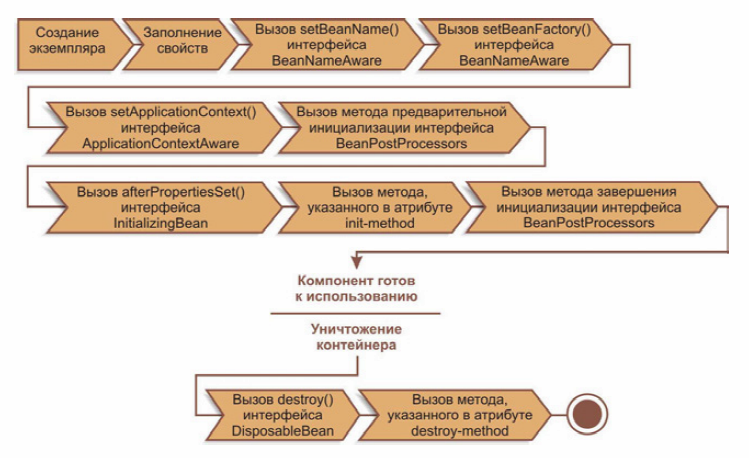

Java interview frequently asked questions and answers
Исключения, роль наследования в обработке исключений. Что знаешь о try, final/finally/finalize. Секция throws в сигнатуре метода
Ключевое слово final означает, что final-класс не может быть расширен, метод – переопределен, значение переменной – изменено.
В блок try помещается критический блок кода, который может бросать исключения. Обработка исключений ведется в блоке catch. Блок finally выполняется всегда, кроме случая потоков-демонов и вызова System.exit(0).
Инструкция throws в сигнатуре метода означает, что метод может бросить указанное исключение. Тот, кто вызывает метод должен обработать его или передать выше. Throws в классах-потомках – см. п.Полиморфизм.
При перечислении блоков catch вначале следует указывать исключения-потомки, потом – предки. В обратном случае будет обработано исключение более общего класса и следующий блок catch не вызовется.
Метод finalize() вызывается сборщиком мусора до освобождения памяти, занимаемой объектом. Это означает, что неизвестно, когда объект будет финализирован. Поэтому надо избегать освобождать в нем такие ресурсы, как дескрипторы файлов, сокеты, соединения с БД и т.д., т.к. Java имеет конечное кол-во таких ресурсов и неизвестно, когда сборщик освободит эти ресурсы вызовом finalize-метода.
Назвать и описать Fundamental patterns
= Delegation (Делегирование) - объект внешне выражает некоторое поведение, но в реальности передаёт ответственность за выполнение этого поведения связанному объекту.
= Functional design (Функциональный дизайн) - гарантирует, что каждый модуль компьютерной программы имеет только одну обязанность и исполняет её с минимумом побочных эффектов на другие части программы.
= Immutable (Неизменяемый) – объект, который не может быть изменён после своего создания.
= Interface (Интерфейс) - общий метод для структурирования компьютерных программ для того, чтобы их было проще понять.
Назвать и описать Creational (порождающие) patterns
= Abstract Factory (абстрактная фабрика) – класс, который представляет интерфейс для создания компонентов системы.
= Builder (строитель) – класс, который представляет интерфейс для создания сложного объекта.
= Factory method (фабричный метод) – определяет интерфейс для создания объекта, но оставляет подклассам решение о том, какой класс инстанциировать.
= Lazy initialization (отложенная инициализация) – объект, инициализируемый во время первого обращения к нему.
= Object pool (объектный пул) – класс, который представляет собой интерфейс для работы с набором инициализированных и готовых к использованию объектов.
= Singleton (одиночка) – класс, который может иметь только один экземпляр.
Назвать и описать Structural (структурные) patterns
= Adapter/Wrapper (Адаптер) – Объект, обеспечивающий взаимодействие двух других объектов, один из которых использует, а другой предоставляет несовместимый с первым интерфейс.
= Bridge (Мост) - Структура, позволяющая изменять интерфейс обращения и интерфейс реализации класса независимо.
= Composite (Компоновщик) - Объект, который объединяет в себе объекты, подобные ему самому (объект может быть представлен одиночным объектом или набором (коллекцией) объектов).
= Decorator (Декоратор) - добавление/ограничение функциональности объекта во время выполнения, без наследования (наследование добавляет функциональность к классам во время компиляции). Этот паттерн реализуют классы пакета java.io.*. Пример:
var file = new File(“file-name”);
var fis = new FileInputStream(file);
var fis = new BufferedInputStream(fis);
= Facade (Фасад) – объект, который абстрагирует работу с несколькими классами, объединяя их в единое целое.
= Flyweight (Приспособленец) – объект, представляющий себя как уникальный экземпляр в разных местах программы, но по факту не являющийся таковым. Цель – оптимизация работы с памятью путем предотвращения создания экземпляров эл-тов, имеющих общую сущность. Св-ва приспособленца делятся на внешние и внутренние; внутренние – всегда неизменны, внешние могут отличаться в зависимости от места и контекста применения и должны быть вынесены за пределы приспособленца. Дополняет Factory, которая создает новый объект только если нет уже созданного с нужными параметрами. Пример: String.
= Proxy (Заместитель) - объект, который является посредником между двумя другими объектами, и который реализовывает/ограничивает доступ к объекту, к которому обращаются через него.
Назвать и описать Behavioral (поведенческие) patterns
= Command (Команда) - представляет действие. Объект команды заключает в себе само действие и его параметры.
= Iterator/Cursor (Итератор) – поведенческий паттерн, обеспечивает путь получения элементов коллекции последовательно без открытия ее внутреннего представления.
= Memento/Token (Хранитель) - позволяет не нарушая инкапсуляцию зафиксировать и сохранить внутреннее состояния объекта так, чтобы позднее восстановить его в этом состоянии.
= Null object – предотвращает нулевые указатели, предоставляя объект “по умолчанию”.
= Observer (Наблюдатель) - определяет зависимость типа «один ко многим» между объектами таким образом, что при изменении состояния одного объекта все зависящие от него оповещаются об этом событии.
= Reactor (Реактор) – демультиплексирует сообщения, разделяя один поток сообщений на несколько потоков, и передает их обработчиками. Похож на Observer (Publisher) паттерн, но у того только один источник сообщений, тогда как реактор перехватывает сообщения от нескольких источников.
= Chain of responsibility (цепочка обязанностей) – сообщения в системе обрабатываются по схеме “обработай сам, либо перешли другому”; в системе имеется группа объектов, которые могут обрабатывать сообщения определенного типа.
= Mediator (Посредник) – обеспечивает взаимодействие множества объектов, формируя при этом слабую связанность и избавляя объекты от необходимости явно ссылаться друг на друга (частный случай Mediator-а - Front Controller – обеспечивает централизованную входную точку для обработки запросов).
Написать Singleton
1. Неленивые Singleton-ы
public class Singleton { // Static field
public static final Singleton INSTANCE = new Singleton();
}
public enum Singleton { // Enum Singleton
INSTANCE;
}
2. Ленивые Singleton-ы
public class Singleton { // Synchronized Accessor
private static Singleton instance;
public static synchronized Singleton getInstance() {
if (instance == null) {
instance = new Singleton();
}
return instance;
}
}
public class Singleton { // Double Checked Locking & volatile
private static volatile Singleton instance;
public static Singleton getInstance() {
Singleton localInstance = instance;
if (localInstance == null) {
synchronized (Singleton.class) {
localInstance = instance;
if (localInstance == null) {
instance = localInstance = new Singleton();
}
}
}
return localInstance;
}
}
public class Singleton { // On Demand Holder idiom
public static class SingletonHolder {
public static final Singleton HOLDER_INSTANCE = new Singleton();
}
public static Singleton getInstance() {
return SingletonHolder.HOLDER_INSTANCE;
}
}
Советы по использованию Singleton:
1) Использовать нормальную (не ленивую) инициализацию везде где это возможно (п.2)
2) Для статических полей использовать On Demand Holder idiom (п.2.3)
3) Для простых полей использовать Double Checked Lock & volatile idiom (п.2.2)
4) Во всех остальных случаях использовать Synchronized accessor (п.2.1)
Struts
Struts framework – среда для разработки Java EE web-приложений с помощью технологий Java Servlet и JSP. Способствует разработке приложений с архитектурой, соответствующей паттерну MVC, Model2. Включает следующие основные функции:
1. Controller servlet, который координирует запросы к соответствующим Action классам, созданным разработчиком. Те обращаются к модели; модель возвращает строку “ActionForward”, сообщая контроллеру, какую страницу отправить клиенту. Класс ActionForm помогает передавать данные между моделью и представлением.
2. Библиотеки JSP-тегов и их поддержка в сервлете-контроллере для создания интерактивных приложений, основанных на веб-формах
3. Вспомогательные классы для парсинга XML, автоматического наполнения JavaBeans, i18n сообщений, валидации входных данных, создания шаблонов (tiles)
Разработчик пишет код модели (представляющей обычно набор JavaBeans) и создает конф. файл struts-config.xml, который связывает воедино модель, представление и контроллер.
Что такое JSF? Чем JSF лучше Struts?
JSF – фреймворк для веб-приложений, написанный на Java. Служит для того, чтобы облегчить разработку пользовательских интерфейсов для Java EE приложений. В отличие от прочих MVC фреймворков, управляемых запросами, JSF основывается на использовании компонентов. Для отображения используются JSP, Facelets.
JSF включает:
• Набор API для представления компонент пользовательского интерфейса и управления их состоянием, обработкой событий и валидацией вводимой информации, определения навигации, а также поддержку i18n и доступности
• Специальная библиотека JSP тегов для выражения интерфейса JSF на JSP странице
Технология JSF усиливает существующие концепции пользовательского интерфейса и концепции web-уровня без привязки разработчика к конкретному языку разметки, протоколу или клиентскому устройству. Возможно настраивать рендеринг JSF-компонент на различных клиентских устройствах (библиотека JSP-тегов для рендеринга на HTML-клиенте).
Чем JSF лучше Struts для меня: произвожу описание только вида и модели, без контроллера. Автоматически: данные отображаются из вида в модель, происходит валидация. Возможно визуальная настройка переходов между страницами вида. Можно использовать шаблоны, вкладывая их один в другой.
Spring. Spring IoC. AoP.
= Spring Framework – универсальный фреймворк с открытым исходным кодом на Java. Может быть рассмотрен как коллекция меньших фреймворков или фреймворков во фреймворке. Большинство из них может работать независимо друг от друга. Spring делится на структурные элементы:
• Inversion of Control контейнер: конфигурирование компонент приложений и управление жизненным циклом Java-объектов
• Фреймворк аспектно-ориентированного программирования: работает с функциональностью, которая не может быть реализована возможностями объектно-ориентированного программирования на Java без потерь
• Фреймворк доступа к данным: работает с системами управления реляционными БД на Java-платформе, используя JDBC и Object-relational mapping средства, обеспечивая решения задач, которые повторяются в большом числе Java-based environments
• Фреймворк управления транзакциями: координация различных API управления транзакциями и инструментарий настраиваемого управления транзакциями для объектов Java
• Фреймворк MVC: каркас, основанный на HTTP и сервлетах, предоставляющий множество возможностей для расширения и настройки
• Фреймворк удалённого доступа: конфигурируемая передача Java-объектов через сеть в стиле RPC, поддерживающая RMI, CORBA, HTTP-based протоколы, включая web-сервисы (SOAP)
• Фреймворк аутентификации и авторизации
• Фреймворк удалённого управления: конфигурируемое представление и управление Java объектами для локальной или удалённой конфигурации с помощью JMX
• Фреймворк работы с сообщениями: конфигурируемая регистрация объектов-слушателей сообщений для прозрачной обработки сообщений из очереди сообщений с помощью JMS, улучшенная отправка сообщений по стандарту JMS API
• Тестирование: каркас, поддерживающий классы для написания модульных и интеграционных тестов
Центральной частью Spring является IoC контейнер, предоставляющий ср-ва конфигурирования и управления объектами Java при помощи рефлексии. Контейнер отвечает за управление жизненным циклом объекта: создание, вызов методов инициализации и конфигурирование объектов путем связывания между собой.
Объекты, создаваемые контейнером, называются Beans. Обычно конфигурирование контейнера осуществляется посредством XML-файлов, содержащих определение Bean-ов и предоставляющих информацию, необходимую для создания Bean-ов. Объекты могут быть получены либо с помощью поиска зависимости, либо внедрения зависимости.
Поиск зависимости – шаблон проектирования, когда вызывающий объект запрашивает у объекта-контейнера экземпляр объекта с определенным именем или определенного типа.
Внедрение зависимости (Dependency injection) - шаблон проектирования, когда контейнер передает экземпляры объектов по их имени другим объектам либо с помощью конструктора, либо свойства, либо фабричного метода. Является специфичной формой обращения контроля (IoC), где изменение порядка связи является путем получения необходимой зависимости.
= AoP (АОП, аспектно-ориентированное программирование) – парадигма программирования, основанная на идее разделения функциональности для улучшения разбиения программы на модули.
Аспект – модуль или класс, реализующий сквозную функциональность.
Сквозная функциональность – функциональность, которую нельзя выделить в отдельные сущности, ее реализация рассыпана по различным модулям программы. СФ приводит к рассредоточенному и запутанному коду, сложному для понимания и сопровождения.
Примеры сквозной функциональности: ведение лога, обработка ошибок, трассировка, авторизация. Для программы, написанной в парадигме ООП, любая функциональность, по которой не была проведена декомпозиция, является сквозной.
Что такое сервер приложений? Что такое веб-сервер, в чём его отличие от сервера приложений? Привести примеры веб-сервера и сервера приложений. Минимальные требования для веб-приложения.
Сервер – ПО, выполняющееся на некотором аппаратном обеспечении, и исполняющее сервисные (т.е. обслуживающие) функции по запросу клиента, предоставляя ему доступ к определенным ресурсам.
Веб-сервер – сервер, принимающий HTTP-запросы от клиентов (обычно веб-браузеров), и выдающий им HTTP-ответы. Веб-сервером могут называть как ПО с такими функциями, так и сам компьютер, на котором оно выполняется.
Примеры веб-серверов: Apache, IIS, nginx, lighttpd.
Веб-приложение – клиент-серверное приложение, в котором клиент – браузер, а сервер – веб-сервер. Клиенты не зависят от ОС пользователя, поэтому веб-приложения являются межплатформенными сервисами. Состоит из клиентской и серверной части.
Минимальные требования для веб-приложения:
• веб-сервер с запущенным на нем сервлетом
• mapping в конфигурационном файле сервлета, чтобы клиент мог получить доступ к сервлету
• наличие браузера у клиента
Сервер приложений – программная платформа (software framework), предназначенная для исполнения процедур (программ, скриптов), которые поддерживают построение приложений. Действует как набор компонентов, доступных разработчику через API, который определен самой платформой. Термин "сервер приложений" часто используется для веб-серверов, которые поддерживают Java EE, хотя он не ограничивается только Java.
Преимущества сервера приложений:
• Целостность – гарантированные обновления и улучшения приложений для всех пользователей
• Централизованная настройка и управление – изменения настроек (сервера БД или системных) могут производиться централизованно
• Безопасность – можно управлять доступом к данным и частям приложений
• Поддержка транзакций – единицы активности, во время которой большое число изменений ресурсов может быть выполнено атомарно
Современные серверы приложений не только генерируют страницы, но и выполняют такие сервисы, как кластеризация, отказоустойчивость, балансировка нагрузки, позволяя разработчикам сфокусироваться на реализации бизнес-логики.
Термин сервер приложений обычно относится к Java-серверам приложений. В этом случае сервер приложений ведет себя как расширенная виртуальная машина для запуска приложений, прозрачно управляя соединениями с БД с одной стороны и соединениями с веб-клиентом с другой.
Примеры серверов приложений: GlassFish, WebSphere, JBoss, Zope.
Контейнер сервлетов. Сервлет, его методы, жизненный цикл.
Контейнер сервлетов (Web-контейнер) (КС) – компонент веб-сервера для взаимодействия с сервлетами. КС отвечает за управление жизненным циклом сервлетов, мэпингом URL к конкретному сервлету, идентификацию и авторизацию клиента, запрашивающего URL, организацию сессии для клиента. Может работать как самостоятельный веб-сервер или интегрироваться в Java EE сервер приложений.
Примеры КС: Apache Tomcat, JBoss, GlassFish, WebSphere.
Сервлет – Java-программа, выполняющаяся на стороне сервера и расширяющая его функциональные возможности. Взаимодействует с клиентами посредством принципа запрос-ответ. Реализует Servlet интерфейс, который определяет методы жизненного цикла.
Жизненный цикл сервлета состоит из следующих шагов:
1. В случае отсутствия сервлета в контейнере:
• Класс сервлета загружается контейнером
• Контейнер создает экземпляр класса сервлета
• Контейнер вызывает метод init(). Он инициализирует сервлет и вызывается в первую очередь, до того, как сервлет сможет обслуживать запросы. За весь жизненный цикл метод init() вызывается только однажды
2. Обслуживание клиентского запроса. Каждый запрос обрабатывается в своем отдельном потоке. Контейнер вызывает метод service() для каждого запроса. Этот метод определяет тип пришедшего запроса и распределяет его в соответствующий этому типу метод для обработки запроса (doGet(), doPost(), doPut(), doDelete() и т.д.). Разработчик сервлета должен предоставить реализацию для этих методов. Если поступил запрос, метод для которого не реализован, вызывается метод родительского класса и обычно завершается возвращением ошибки инициатору запроса.
3. В случае, если контейнеру необходимо удалить сервлет, он вызывает метод destroy(). Подобно методу init(), этот метод тоже вызывается единожды за весь цикл сервлета.
API сервлета определяют взаимодействие КС и сервлета, содержатся в Java пакете javax.servlet. Классы для HTTP – в пакете javax.servlet.http.
Отличие getParameter от getAttribute в сервлете.
= getParameter возвращает (в виде String) значение параметра, который был отправлен HTML-формой или был включен в строку запроса.
= getAttribute возвращает Java-объект, который был сохранен в текущем контексте (по сути – в сессии).
Можно ли в web.xml определить сервлет без указания url паттерна и как к нему обратиться?
В файле <Tomcat directory>/conf/web.xml можно раскомментировать invoker servlet, который может запускать анонимные сервлеты (mapping которых не указан). Синтаксис следующий:
http://<host>:<port>/<appname>/servlet/<full qualified class name (т.е. пакет имя.класса)>
В данный момент invoker считается deprecated.
Что такое сессия?
Сессия – информационный диалог между двумя и более коммуникационными устройствами или компьютером и юзером. Длится какой-то промежуток времени. Могут отправляться сообщения в обоих направлениях. Чаще всего хотя бы одно из взаимодействующих устройств сохраняет информацию о сессии, реже – взаимодействие состоит из независимых request-ов с response-ами.
Для сервлета сессия – файл, создаваемый на сервере, куда сохраняются данные, присланные пользователем. Клиенту выдается “ключ сессии” (Session ID) – уникальный указатель на этот файл.
Что нужно сделать пользователю, чтобы зайти на сайт и что происходит при этом?
Пользователь должен иметь подключение к Интернету, браузер и знать url сайта. При этом прописанные в его системе DNS преобразуют url в ip-адрес, к которому браузер и осуществляет запрос. DNS-сервер кэширует запросы. По заданному адресу должен располагаться веб-сервер, который передаст браузеру свою стартовую страницу.
Что нужно написать в браузерной строке, чтобы обратиться к сервлету? Как обратиться к конкретному сервлету? Можно ли из браузерной строки напрямую вызвать метод сервлета?
Для обращения к сервлету используется запись: http://<host>:<port>/<context path>/<servlet name (in web.xml)>. Для обращения к конкретному сервлету надо использовать соответствующее имя в web.xml.
Напрямую вызвать метод сервлета нельзя; контейнер вызывает метод service() для каждого запроса. Метод service() определяет тип пришедшего запроса и распределяет его в соответствующий этому типу метод для обработки запроса (doGet(), doPost(), doPut(), doDelete() и т.д.).
HTTP. Описать структуру HTTP-протокола
HTTP – протокол прикладного уровня передачи данных. Его основой является технология “клиент-сервер”, т.е. предполагается существования потребителей (клиентов) и поставщиков (серверов), которые ожидают соединения для получения запроса, производят необходимые действия и возвращают обратно сообщение с результатом. Используется в качестве “транспорта” для других протоколов прикладного уровня (SOAP, XML-RPC). Основным объектом манипуляции в HTTP является ресурс, на который указывает URI в запросе клиента. Ресурсами могут быть файлы, логические объекты или что-то абстрактное. Особенностью является возможность указания в запросе и ответе способа представления одного и того же ресурса по различным параметрам (формату, кодировке, языку) (указывается в заголовке HTTP). Именно благодаря возможности указания способа кодирования сообщения клиент и сервер могут обмениваться двоичными данными, хотя сам протокол текстовый. Не поддерживает сохранение состояния между парами “запрос-ответ”. Состояние может сохраняться в куки на стороне клиента и в сессии на стороне сервера.
Достоинства протокола:
• Простота в реализации
• Расширяемость благодаря внедрению собственных заголовков. Совместимость с другими клиентами и серверами при этом сохраняется: они будут просто игнорировать неизвестные им заголовки
• Распространенность: поддержка протокола в качестве клиента многими программами, выбор среди хостинговых компаний с серверами HTTP
Недостатки протокола:
• Большой размер сообщений по сравнению с передачей двоичных данных
• Отсутствуют в явном виде ср-ва навигации по ресурсам сервера (например: нельзя запросить список доступных файлов)
• Нет поддержки распределенности
Каждое HTTP-сообщение состоит из трех частей, которые передаются в указанном порядке:
1. Стартовая строка (Starting line) – определяет тип сообщения. Содержит метод (указывает операцию над ресурсом), URI, версию протокола
2. Заголовки (Headers) – характеризуют тело сообщения, параметры передачи и прочие сведения (содержат строки с парами параметр:значение)
3. Тело сообщения (Message Body) – непосредственно данные сообщения. Обязательно должно отделяться от заголовков пустой строкой. Тело может отсутствовать.
HTTPS – расширение протокола HTTP, поддерживающее шифрование. Данные “упаковываются” в криптографический протокол SSL или TLS.
Для HTTP обычно используются TCP-порты 80 или 8080, а для HTTPS - 443.
Зачем нужен объект request?
Контейнер сервлетов создает объект request класса HttpServletRequest и передает его как аргумент в методы сервлета (doGet, doPost и т.д.). Объект request содержит информацию запроса для HTTP-сервлета (пары “ключ-значение” параметров, заголовки запросов, Cookies, URL запроса и т.д.).
Lifecycle of JSP. Является ли jsp сервлетом? Области видимости переменных в JSP
JSP – технология, позволяющая создавать содержимое со статическими и динамическими компонентами. Могут использоваться библиотеки JSP тегов, а также EL (Expression Language), для внедрения Java-кода в статическое содержимое JSP-страниц. Отличие между сервлетом и JSP в том, что сервлет обычно внедряет HTML в Java-код, а JSP – наоборот.
В JSP могут использоваться: HTML, комментарии (игнорируются транслятором), скриптовые элементы (Java-код, который впоследствии станет частью конечного сервлета), директивы (начинаются с <%@, позволяют управлять структурой сервлета), действия (для задания используемых beans и контроля над поведением движка сервлета).
Весь код страницы компилируется в java-код сервлета JSP-компилятором Jasper, а затем транслируется в байт-код JVM (потом исполняется - интерпретатором) (т.е. JSP является сервлетом). JSP-компилятор обычно является составной частью сервера приложений и запускается автоматически при первом доступе к JSP, но страницы также могут быть прекомпилированы для улучшения производительности или отслеживания ошибок.
Есть 4 области видимости JavaBean в JSP: page, request, session, application. Без явного указания используется scope=”page”.
Отличие jsp:include от директивы include
• Действие jsp:include вставляет содержимое файла при запросе JSP-страницы (поэтому во вставляемом файле исключается наличие кода JSP). Потеря эффективности, но преимущество в гибкости.
Пример записи: <jsp:include page="relativeURL" [flush="true"]>. Необязательный аттрибут flush управляет (не)освобождением буфера выходного потока страницы JSP.
• Директива include вставляет содержимое файла (текстового или JSP) на этапе трансляции. Процедура вставки происходит статически, т.е. текст включаемого файла добавляется к JSP. Если включаемый файл – JSP, его JSP-элементы будут транслироваться наряду с элементами исходного файла.
Пример записи: <%@ include file="relativeURL" %>
В обоих случаях URL интерпретируется относительно страницы, на которой расположено действие/директива, но можно задать расположение относительно корня сервлета, добавив в начало URL символ “/”.
Чем отличаются методы POST и GET? Если не указать напрямую, какой из этих методов выполнится по умолчанию?
Метод GET (он выполняется по умолчанию) передает всю информацию в заголовке запроса (через URL), а POST – внутри тела запроса. Заголовок запроса имеет ограничение на максимальный размер, соответственно, в GET ограничен объем передаваемых данных.
В спецификации HTTP указано, что метод GET не должен иметь смысл действия, отличного от получения запрашиваемой информации (поэтому он называется «безопасным»). Для выполнения каких-либо операций, изменяющих данные на сервере, должен использоваться метод POST.
Ответы на POST запросы никогда не кэшируются, на GET – кэшируются по умолчанию (может быть отключено изменением заголовка страницы ответа, посылаемого сервером).
POST запрос может “симулировать” GET запрос, указывая параметры как в заголовке запроса, так и в теле.
“Главное” отличие – GET не может передать файл, а POST – может.
У нас есть одна форма в ней 2 input поля и submit, как переслать первое поле методом POST, второе методом GET? Зачем это может понадобиться?
См. ответ на предыдущий вопрос (о симуляции GET запроса). Это (наверное) может понадобиться, если после нажатия на submit новый url должен содержать значение поля, пересылаемого методом GET.
В чём различие forward и redirect? Что делает RequestDispatcher.include()?
Пересылка (forward) осуществляется на стороне сервера, при этом новая страница обрабатывает тот же запрос, что и предыдущая. Браузер при этом не догадывается, что в процессе задействовано несколько страниц.
Переадресация (redirect) означает, что первая страница требует от браузера сделать новый запрос к нужной странице. Поэтому URL в браузере будет заменен на новый.
• Переадресация медленнее (т.к. браузер повторяет запрос)
• Объекты, помещенные в контекст запроса, после переадресации становятся недоступными, т.к. создается новый запрос
RequestDispatcher – инструмент для того, чтобы переслать запрос другому ресурсу. Содержит только 2 метода: forward(request, response) – для перенаправления запроса, include(request, response) – для включения в результат работы текущего сервлета результата работы вызываемого сервлета.
RequestDispatcher.include() включает в текущий сервлет статическое содержимое (HTML, JavaScript) каждый раз, когда сервлет обрабатывает запрос.
Что такое classpath? Если в classpath есть две одинаковые библиотеки (или разные версии одной библиотеки), объект класса из какой библиотеки создастся?
Classpath – это переменная окружения; содержит пути к классам, jar-файлам.
Если в classpath есть несколько одинаковых библиотек, создастся класс из библиотеки, объявленной первой.
Как скомпилировать и запустить класс, используя консоль?
• <Путь_к_JDK>\bin\javac <Путь_к_java-классу>\<Имя_класса>.java
После этого в папке с java-файлом появится файл <Имя_класса>.class
Более подробно: <Путь_к_JDK>\bin\javac -d <Директория_build> -sourcepath <Список_директорий_через_;> <Путь_к_java-классу>\<Имя_класса>.java
• <Путь_к_JDK>\bin\java <Путь_к_java-классу>\<Имя_класса>
Если путь к JDK прописан в classpath:
• javac <Путь_к_java-классу>\<Имя_класса>.java
• java <Путь_к_java-классу>\<Имя_класса>
Какие различия в архитектуре, процессе компиляции исходного кода и запуска программ на Java и C++? За счёт чего обеспечивается кроссплатформенность приложений на Java?
Исходный код транслируется в промежуточный байт-код, формат которого не зависит от архитектуры компьютера. Непосредственно во время работы программы для увеличения производительности байт-код компилируется JIT-компилятором в машинный код. Поэтому программа может выполняться на любых процессорах; для ее работы необходима только JVM (она интерпретирует байт-код). В отличие от С и С++ элементы спецификации Java не зависят от реализации: размеры основных типов данных и арифметические операции над ними строго определены.
Коллекции, их виды, основные интерфейсы. Особенности разных видов коллекций. Когда какие стоит применять? В частности: сравнить ArrayList и LinkedList, HashMap и Hashtable. Коллекции из пакета concurrent. Реализации коллекций.
http://java.sun.com/docs/books/tutorial/collections/index.html
http://habrahabr.ru/post/127864/
Collection, Set, List, Queue, Map, SortedSet, SortedMap - интерфейсы.
Коллекция (К) представляет собой группу объектов, называемых ее элементами. Класс Collection является базовым для всех Java-коллекций. Перебирать элементы коллекции можно двумя способами:
• при помощи конструкции for-each: for (Object o: collection) { ... }
• при помощи итератора:
Iterator it = collection.iterator;
while(it.hasNext()) {
Object o = it.next();
...
}
Итератор кроме методов next и hasNext также имеет метод remove, который может быть вызван 1 раз при каждом next (несоблюдение этого условия приводит к исключению).
Collection имеет методы: size, isEmpty, contains, add, remove.
Операции над всей коллекцией сразу:
• containsAll – возвращает true, если данная К содержит все элементы указанной К
• addAll – добавляет все элементы указанной К к данной К
• removeAll – удаляет из данной К все элементы, содержащиеся в указанной К
• retainAll - удаляет из данной К все элементы, НЕ содержащиеся в указанной К
• clear – удаляет все элементы К
• перевод коллекции в массив:
Object[] a = c.toArray(); //for Object type
String[] a = c.toArray(new String[0]); //for String type, for example
Виды коллекций:
• Set (множество) – не может содержать одинаковых элементов. Интерфейс Set содержит только методы класса Collection и дополнительные ограничения, чтобы избегнуть дубликатов. Есть 3 реализации Set:
= HashSet, хранящий элементы в hashtable, что дает лучшую по производительности реализацию, но не гарантирует нужный порядок при итерации
= TreeSet, хранящий элементы в дереве; порядок элементов основывается на их значениях. Медленнее HashSet
= LinkedHashSet, реализующий hashtable с LinkedList, при этом порядок эл-тов основывается на порядке, в котором они добавлялись в множество. Помогает избежать хаотического порядка эл-тов, обеспечиваемого HashSet, чуть более высокой ценой
• List (список) – упорядоченная коллекция (последовательность). Может содержать одинаковые элементы. Вдобавок к методам, унаследованным от Collection, List включает следующие операции:
= Позиционный поиск: get(index) и установка: set(index, element)
= Поиск элемента, возвращение индекса: indexOf, lastIndexOf
= Получение собственных итераторов, использующих преимущества “последовательной” природы списка: listIterator(), listIterator(index)
= Получение подсписка текущего списка: subList(from, to)
Список обеспечивает кроме стандартного итератора свой собственный, расширенный итератор, который имеет дополнительные методы: hasPrevious, previous, nextIndex, previousIndex, set, add. Также возможно получить итератор уже установленный на указанный индекс.
Есть 2 реализации списка:
= ArrayList, обычно показывающий лучшую производительность
= LinkedList, дающий лучшую производительность при определенных условиях
= Vector – модифицированная, более ранняя реализация List. Имеет другие (более длинные) имена методов, некоторые методы отсутствуют. Потокобезопасен (обычные (не concurrent) коллекции - нет). Если не нужна потокобезопасность – рекомендуется использовать ArrayList, а не Vector
При добавлении новые элементы добавляются в конец списка.
• Queue (очередь) – содержит элементы в определенном порядке. Обычно – FIFO. Кроме методов Collection содержит новые методы:
Операция: Insert (вставляет элемент в порядке, соответствующем типу очереди)
Throws exception: add(e)
Return special value: offer(e)
Операция: Remove (возвращает и удаляет из начала очереди)
Throws exception: remove()
Return special value: poll()
Операция: Examine (возвращает, но не удаляет из начала очереди)
Throws exception: element()
Return special value: peek()
LinkedList реализует FIFO очередь.
PriorityQueue упорядочивает элементы в соответствии с их значениями.
• Map (карта) – объект, обеспечивающий mapping ключей их значениям. Ключи уникальны, не могут повторяться, в качестве ключей могут использоваться Immutable объекты. Методы интерфейса:
= Базовые операции: put, get, remove, containsKey, containsValue, size, isEmpty
= Операции со всей коллекцией сразу: putAll, clear
= Получение вида (view) коллекции: keySet, values, entrySet
Реализации карт: HashMap, TreeMap, LinkedHashMap. Их поведение и производительность аналогичны HashSet, TreeSet, LinkedHashSet.
Hashtable – потокобезопасная реализация Map.
Отличия Map от HashTable:
= Map – интерфейс, HashTable - реализация
= Map обеспечивает получение вида (view) коллекции (см. выше)
= Map позволяет осуществлять итерацию по ключам, значениям или парам ключ-значение; Hashtable не поддерживает 3й вариант
= Hashtable содержит метод contains, который возвращает true, если Hashtable содержит данное значение (а не ключ). Map содержит 2 различных метода: containsKey и containsValue
• SortedSet и SortedMap – множество и карта соответственно, отсортированные в соответствии с натуральным порядком значений эл-тов или в соответствии с компаратором, передаваемым в SortedSet/SortedMap при создании
Их реализации соответственно: TreeSet и TreeMap
Класс Collections содержит статические методы для работы с коллекциями: swap, shuffle, min, max, sort, reverse и т.д. Сортировка выполняется для объектов, реализующих интерфейс Comparable или с передачей в sort компаратора, сравнивающего два эл-та этого типа.
Коллекцию можно сделать синхронизированной при помощи методов класса Collections, например:
Map myMap = Collections.synchronizedMap(myMap); //один lock на весь map
Если класс содержит поле-коллекцию и для нее нужен getter, то возвращать лучше немодифицируемую копию, например: return Collections.unmodifiableSet(mySet).
Коллекции concurrent позволяют потокозащищенно получить любое кол-во одновременных чтений и настраиваемое кол-во одновременных записей. Concurrent Collections содержатся в пакете java.util.concurrent. Существуют следующие интерфейсы:
• BlockingQueue определяет FIFO структуру данных, которая обеспечивает операцию ожидания, пока очередь станет не пустой при получении эл-та и пока в очереди не появится место при добавлении эл-та в нее
Реализации:
ArrayBlockingQueue - блокирующая очередь (БО) на основе array,
DelayQueue - БО, элементы которой могут быть получены по истечению задержки
LinkedBlockingQueue,LinkedBlockingDeque - связанные блокирующие очередь и 2-стороння очередь
PriorityBlockingQueue – БО с приоритетом
SynchronousQueue – очередь, где каждый put должен подождать take и наоборот
• ConcurrentMap – подинтерфейс Map, который определяет полезные atomic операции. Эти операции удаляют или заменяют пару ключ-значение, только если ключ присутствует, или добавляют пару ключ-значение, только если ключ отсутствует
Реализации:
ConcurrentHashMap – блокирующий HashMap
ConcurrentSkipListMap – блокирующий TreeMap
• ConcurrentNavigableMap – подинтерфейс ConcurrentMap
ConcurrentSkipListMap (см. выше)
Области памяти виртуальной машины (куча, стек и т.д.). Какие области памяти использует java для размещения простых типов, объектов, функций и т.д.?
Память JVM состоит из следующих сегментов:
• Не-куча/стек (non-heap). Стек создается для каждого потока, здесь размещаются локальные переменные примитивных типов и аргументы (значения, переданные методам). Создается при старте JVM
• Куча (heap). Здесь хранятся объекты и переменные примитивных типов, если они являются полями класса. Создается при старте JVM
• Код самой JVM, ее внутренние структуры и т.д.
Ответ на вопрос: функции хранятся в куче, а в стеке – стек их вызовов; простые типы и объекты хранятся в стеке, если являются локальными, или в куче в обратном случае.
Как работает Garbage Collector в java? Какие самые распространенные алгоритмы? Можно ли самому указать сборщику мусора, какой объект удалить из памяти?
Работа сборщика мусора состоит из:
• определения недостижимых объектов
• собственно, сборки мусора
Для определения недостижимых объектов может использоваться один из двух подходов:
1. Алгоритм выставления флагов.
Для каждого объекта хранится бит, указывающий на достижимость объекта. Изначально все объекты, кроме корневых, считаются недостижимыми. Рекурсивно просматриваются и помечаются как достижимые объекты еще не помеченные и до которых можно добраться из корневых объектов по ссылкам. Объекты с неустановленным битом достижимости считаются недостижимыми. Данный алгоритм гарантированно удаляет неиспользуемые объекты с циклическими ссылками.
2. Алгоритм подсчета ссылок.
Ведется просто подсчет ссылок на объекты. Без дополнительных уточнений этот алгоритм не удаляет объекты с циклическими ссылками.
При сборке мусора используется одна из двух стратегий:
1. Неперемещающий сборщик быстрее освобождает память (нужна только пометка соответствующих блоков, как свободных), но тратит больше времени на ее выделение (память фрагментирована).
2. Перемещающий сборщик требует сравнительно больше времени при сборе мусора (тратится дополнительное время на дефрагментацию памяти и изменение всех ссылок на перемещаемые объекты), но перемещение позволяет использовать простой и быстрый алгоритм выделения памяти.
Неперемещающий сборщик лучше работает с инородным кодом (не изменяет положение существующих объектов в памяти). Также для работы с инородным кодом используется pinning – явная блокировка объекта, запрещающая его перемещение во время сборки мусора.
Практика показывает, что недавно созданные объекты чаще становятся недостижимыми, чем существующие длительное время. Поэтому, современные сборщики подразделяют все объекты на несколько поколений – серий объектов с близким временем существования. Как только память, выделенная одному из поколений, заканчивается, в этом поколении и во всех более «молодых» производится поиск недостижимых объектов. Все они удаляются, а оставшиеся переводятся в более «старое» поколение.
Самому нельзя указать сборщику мусора, что надо удалить определенный объект из памяти, т.к. поведение сборщика недетерминировано.
Что такое поток? Какими способами можно создать поток, запустить его, остановить? Состояния потока. Как выполнить набор команд в отдельном потоке? Как остановить выполнение потока? Что лучше: наследоваться от Thread или реализовывать Runnable?
Термин поток может обозначать:
• Экземпляр класса java.lang.Thread, являющийся обычным объектом
• Поток выполнения – отдельный процесс, имеющий собственный стек вызовов. Поток выполнения самостоятельной подзадачи в многозадачном окружении. Программа пишется так, словно каждый поток запускается сам по себе и использует процессор в монопольном режиме. Процессор же переключается между потоками, выделяя каждому некоторый отрезок времени (либо используется многопроцессорный компьютер). Это позволяет масштабировать производительность (установкой доп. процессоров)
Для создания потока надо создать экземпляр класса Thread. У класса есть метод run, куда помещается код, который требуется выполнить в отдельном потоке. Определить и инстанциировать поток можно двумя способами:
• Расширить класс Thread:
public class MyThread extends Thread {
@Override
public void run() { ... }
}
...
MyThread t = new MyThread(); // Инстанциирование потока
t.start(); // Запуск потока
• Реализовать интерфейс Runnable:
class MyRunnable implements Runnable {
@Override
public void run() { ... }
}
...
MyRunnable r = new MyRunnable(); // Инстанциирование потока
Thread t = new Thread(r);
t.start(); //Запуск потока
Проще говоря, Thread – работник, Runnable – работа.
Предпочтительнее 2й способ, т.к. расширяя Thread, наш класс уже не сможет быть потомком другого класса.
Состояния потока:
• Инстанциированный, но незапущенный пока поток находится в состоянии new (новый) и считается not alive (не живым)
• После вызова метода start экземпляра потока, он становится alive (живым) и переходит в состояние runnable/ready-to-run (готов к запуску, работоспособный). То, что поток alive, не означает, что метод run уже начал выполняться. В состоянии runnable поток ждет своей очереди от процессора. В состояние runnable поток может перейти из состояния running
• Состояние running означает, что поток сейчас запущен. Существует несколько способов попасть в состояние runnable, но в running – есть один способ: планировщик потоков выбрал данный поток из пула потоков.
• Поток считается dead (мертвым) после того, как метод run закончит выполняться. Поток из этого состояния нельзя запустить снова
• Состояния waiting/blocked/sleeping характеризуют поток, как не готовый к работе, т.е. он жив, но в настоящее время не может быть выполнен. При этом он не runnable, но может вернуться в это состояние. Он может быть заблокирован и ждет ресурсов, занятых другим потоком или спит до истечения времени в методе sleep или находится в состоянии ожидания, т.к. в run встретился метод wait (вызов notify или notifyAll переведет поток из состояния waiting в состояние runnable). Один поток не может попросить другой заблокироваться
Для определения запущен ли поток и его состояния используются методы isAlive и getState.
При вызове вручную метода run, метод просто выполнится в том же потоке, из которого был запущен (в основном потоке программы). В каждом отдельном потоке порядок выполнения предсказуем, но порядок выполнения потоков не предсказуем.
Приостановка выполнения потока может быть выполнена следующими способами:
• Отправка в сон: sleep(milliseconds). Гарантированно прекращает выполнение текущего потока как минимум на указанный отрезок времени. Зачем: для принудительного выполнения потоков по очереди, для уменьшения трафика и т.п. По пробуждении поток не запустится сразу, а просто перейдет в состояние runnable. Метод sleep статический, может быть вызван из любого места программы, но в результате ляжет спать текущий поток
• Метод yield пытается принудить планировщик выполнить другой поток, ожидающий своей очереди, посредством попытки перевода потока из running в runnable. Он может не возыметь эффекта
• Вызов join(). Гарантированно останавливает выполнение текущего потока на заданное время или до завершения выполнения потока, метод join которого был вызван
• Дать потоку закончить свое выполнение :)
• Вызвать метод wait()
• Поток не может получить блокировку на объект, метод которого пытается выполниться
Можно только приостановить выполнение потока, но не остановить полностью.
Планировщик потоков является частью JVM (хотя некоторые JVM отображают Java-потоки на нативные потоки ОС) и решает, какой поток из пула потоков будет работать в определенный момент. Поток, переходящий в состояние runnable, помещается в runnable pool. Обычно используется планировщик на основе приоритетов. У класса Thread есть метод setPriority, куда можно отправить приоритет [1;10].
Написать и запустить поток, бесконечно печатающий в консоль строку
public CustomThread implements Runnable {
private final String str;
public CustomThread(String str) {
this.str = str;
}
@Override
public void run() {
while(true) { System.out.println(str); }
}
}
...
CustomThread work = new CustomThread(“Hello!”);
Thread th = new Thread(work);
th.start();
Синхронизация, ее методы. Зачем нужна? Модификатор volatile. По каким объектам синхронизируются статические и нестатические методы? Что такое deadlock? Способы его избежать. Как на уровне ОС реализовано избавление от deadlock?
Синхронизация необходима для решения проблем, возникающих при обращении разных потоков к одному ресурсу (т.н. состязание/гонка потоков).
Ключевое слово synchronized метода/блока означает, что если один поток начал выполнение этого метода/блока, другой поток не сможет его выполнить, пока первый не закончит. Каждый объект в Java имеет встроенную блокировку, которая вступает в игру в том случае, если объект имеет синхронизированные методы. Когда входим в синхронизированный нестатический метод – автоматически получаем блокировку, связанную с текущим экземпляром класса (текущий – код которого выполняется в данный момент).
• Только методы (или блоки) могут быть synchronized
• Каждый объект имеет одну блокировку
• Класс может иметь синхронизированные и несинхронизированные методы
• Спящий поток удерживает все свои блокировки
• Поток может захватить несколько блокировок (войти в синхронизированный метод, захватит блокировку, а затем сразу вызвать синхронизированный метод другого объекта, получив и его блокировку)
• Можно синхронизировать не весь метод, а только блок кода: synchronized(this) { ... }
При синхронизации метода объект, используемый для вызова этого метода, получает блокировку. Но когда синхронизируется блок кода надо указать объект, используемый в качестве блокировки. Можно использовать некий сторонний объект в качестве блокировки для этого куска кода, что дает возможность иметь больше одной блокировки для синхронизированного кода в рамках одного объекта
Нестатический метод класса в качестве блокировки использует экземпляр текущего класса, а статический метод – экземпляр класса java.lang.Class.
Если 2 нестатических метода объявлены как synchronized, то в каждый момент времени из разных потоков на одном объекте может быть вызван только один из них. Поток, который вызывает метод первым, захватит монитор, и второму потоку придется ждать. Важны 3 момента:
• Это верно только для разных потоков. Один и тот же поток может вызвать синхронизированный метод, внутри него – другой синхронизированный метод на том же экземпляре. Поскольку этот поток владеет монитором, проблем второй вызов не создаст
• Это верно только для вызовов методов одного экземпляра. У разных экземпляров разные мониторы, потому одновременный вызов нестатических методов проблем не создаст
• В случае статических методов имеет значение только одно – разные ли потоки, вызывающие синхронизированные методы, или нет. Об экземпляре тут речи не идет, его роль исполняет объект класса.
Замечание. Объекты класса Class существуют в единственном экземпляре только в пределах одного ClassLoader-а. Следовательно, если установить контекстный загрузчик классов потоку – у разных потоков могут быть разные экземпляры одного и того же класса Class и, следовательно, будет возможен одновременный вызов синхронизированных статических методов. Если эти методы используют одни и те же ресурсы – это может вызвать проблемы.
Когда поток не может получить блокировку, он переходит в некий пул для конкретного объекта и находится там, пока блокировка не снимается. Из методов, приостанавливающих выполнение потока, отказывается от блокировок только метод wait. Методы wait, notify, notifyAll должны вызываться из синхронизированного контекста, иначе будет будет брошено исключение IllegalMonitorStateException.
Какие объекты используются для блокировки:
• Потоки, вызывающие нестатические синхронизированные методы в одном классе будут блокировать другие потоки, если они вызываются с помощью того же экземпляра класса
• Потоки, вызывающие статические синхронизированные методы в одном классе будут всегда блокировать друг друга если все они используют один и тот же экземпляр Class
• Статические синхронизированные методы и нестатические синхронизированные методы не будет блокировать друг друга, никогда. Статические методы блокируются на экземпляре класса Class в то время как нестатические методы блокируются на текущем экземпляре (this). Эти действия не мешают друг другу
• При использовании синхронизированных блоков, необходимо обращать внимание на то, какой объект используется для блокирования. Потоки, которые синхронизируются на том же объекте будут блокировать друг друга. Потоки, которые синхронизируются на разных объектах, не будут блокировать друг друга
Модификатор volatile актуален в многопоточных приложениях. Указывает, что операции записи и чтения, выполняемые потоками, происходят напрямую с основной памятью (для эффективности каждый поток может использовать свою «локальную память», т.н. кэш потока). Поэтому каждый поток имеет текущее, актуальное значение volatile-поля.
Declaring a volatile Java variable means:
• The value of this variable will never be cached thread-locally: all reads and writes will go straight to "main memory"
• Access to the variable acts as though it is enclosed in a synchronized block, synchronized on itself
Когда класс тщательно синхронизирован, он является потокобезопасным (thread-safe). StringBuffer – потокобезопасен, StringBuilder – нет.
Deadlock – взаимная блокировка потоков: два потока блокируются, при этом каждый ждет освобождения блокировки, захваченной другим потоком. Это значит, что потоки не получат ожидаемых блокировок никогда. В Java нет встроенных средств предупреждения взаимных блокировок. Все зависит от качества кода. ОС борется с deadlocks следующими способами:
• Игнорирование проблемы в целом (предполагается малая вероятность возникновения, малый ущерб)
• Предотвращение deadlocks (обеспечение условий, исключающих возможность возникновения взаимных блокировок (предотвращение возникновения одного из условий ее возникновения))
• Обнаружение deadlocks (фиксация ситуации, выявление вовлеченных процессов)
• Восстановление после deadlocks (после обнаружения DL, можно вывести из него систему, нарушив одно из условий существования DL)
Ключевое слово synchronized скрывает реализацию синхронизации при помощи мониторов. Монитор – средство обеспечения контроля за доступом к ресурсу. У монитора есть максимум один владелец в каждый текущий момент времени. У каждого экземпляра объекта есть монитор. Любой нестатический synchronized-метод при своем вызове прежде всего пытается захватить монитор того объекта, у которого он вызван (сможет – метод исполняется, нет – поток останавливается и ждет, пока монитор будет отпущен). Компилятор и интерпретатор вставляет код блокировки-разблокировки в соответствующим образом оформленные процедуры, избавляя программиста от явного обращения к примитивам синхронизации.
Семафор - объект, позволяющий войти в заданный участок кода не более чем n потокам. Имеет методы:
• init(n) – счетчик:= n
• enter() – ждать, пока счетчик станет >0; после этого уменьшить его на единицу
• leave() – увеличить счетчик на единицу
Применяется для запрета одновременного выполнения заданных участков кода или поочередного доступа к критическому ресурсу.
Проблемы семафоров:
• Утечка семафора (забыть вызвать leave)
• Лишний вызов leave
• Возможность взаимной блокировки потоков
Есть код:
public class A {
public void method1() {}
public synchronized void method2() {}
public synchronized void method3() {}
public static synchronized void method4() {}
}
4 потока одновременно обращаются каждый к своему методу, в каком порядке выполнятся методы и почему?
Одновременно начнут выполняться 3 метода: 1й, 4й и один из двух: 2й или 3й (какой именно – неизвестно заранее). Когда 2й (или 3й) метод выполнится до конца, начнет выполнение 3й (2й). Почему – см. вопрос Синхронизация.
Получил другой ответ: если чуть раньше начал выполняться 1й метод, то сценарий тот же. Но если первым начал выполняться 2й или 3й – то 1й будет ждать. Потом, после окончания 2го (или 3го) – если 1й успеет запуститься – то будет выполняться параллельно с 3м, иначе – 1й будет ждать окончания 3го. На 4й это все не повлияет.
Что такое сериализация, для чего нужна, когда применяется? Ключевое слово transient, для чего нужно. Что такое UnmarshalException, когда выбрасывается?
Сериализация объектов Java позволяет взять любой объект, реализующий интерфейс Serializable, и превратить его в последовательность байтов, из которой он потом может быть восстановлен. Так реализуется легковесное долговременное хранение. В основном применяется для:
• удаленного вызова методов Java (RMI) (для работы с объектами, находящимися на других компьютерах)
• визуальных компонентов JavaBean (для сохранения их состояний)
Возможна “частичная” сериализация при помощи интерфейса Externalizable, который добавляет два метода: writeExternal, readExternal, позволяя попутно выполнить специфические действия. В этих методах сохранение и загрузку надо самому прописать “руками” в отличие от Serializable.
Чтобы пометить поле класса, как несериализуемое, используется ключевое слово transient.
Исключение UnmarshalException выбрасывается, когда RMI сервер не может восстановить сериализованный объект.
Serializable класс содержит поле static final long serialVersionUID, обычно вычисляемое автоматически. Если мы изменили описание класса, значение автоматически рассчитываемого поля изменится. Хорошим тоном является объявление своего такого поля с заданием его значения.
Транзакции. Распределенные транзакции. Уровни изоляции транзакции. Свойства и модель транзакции. Привести примеры использования.
= Транзакция – группа последовательных операций, представляющая логическую единицу работы с данными. Т может быть выполнена либо целиком и успешно, соблюдая целостность данных и независимо от параллельно идущих других транзакций, либо не выполнена вообще.
= Распределенная транзакция включает в себя несколько локальных транзакций, каждая из которых либо фиксируется, либо прерывается. Распределенная транзакция фиксируется только в том случае, когда зафиксированы все локальные транзакции, ее составляющие. Если хотя бы одна из них была прервана, то должна быть прервана и распределенная транзакция.
= Уровни изоляции транзакций:
0 — Неподтверждённое чтение (Read Uncommitted, Dirty Read, грязное чтение) — чтение незафиксированных изменений своей транзакции и параллельных транзакций, возможны потерянные обновления, нечистые, неповторяемые чтения и фантомы
1 — Подтверждённое чтение (Read Committed) — чтение всех изменений своей транзакции и зафиксированных изменений параллельных транзакций, нечистые чтения невозможны, возможны неповторяемые чтения и фантомы;
2 — Повторяемое чтение (Repeatable Read, Snapshot) — чтение всех изменений своей транзакции, любые изменения, внесённые параллельными транзакциями после начала своей, недоступны, нечистые и неповторяемые чтения невозможны, возможны фантомы;
3 — Упорядоченный (Serializable, сериализуемый) — упорядоченные (сериализуемые) транзакции. Идентичен ситуации, при которой транзакции выполняются строго последовательно, одна после другой, то есть результат действия которых не зависит от порядка выполнения шагов транзакции (запрещено чтение всех данных, изменённых с начала транзакции, в том числе и своей транзакцией). Фантомы невозможны.
Чем выше уровень изоляции, тем больше требуется ресурсов, чтобы их поддерживать.
Кратко:
• Потерянное обновление: 2 транзакции начинаются одновременно, теряются изменения транзакции, законченной раньше
• Грязное чтение: начали 1 транзакцию, после изменений (но до коммита) 2я транзакция выполнила чтение, после чего 1я – отменила свои действия
• Неповторяющееся чтение: транзакция 1я считывает данные, 2я – меняет содержимое базы, теперь повторение 1й транзакцией считывания дает другой результат
• Фантомное чтение: от неповторяющегося чтения отличается тем, что результат повторного обращения к данным изменился не из-за изменения/удаления самих этих данных, а из-за появления новых (фантомных) данных
= Модели транзакций классифицируются на основании различных св-в:
• Структура транзакции
• Параллельность внутри транзакции
• Продолжительность
= Выделяют следующие типы транзакций:
1. Плоские (классические)
2. Цепочечные
3. Вложенные
Плоские транзакции характеризуются 4 классическими св-вами:
• Атомарность - транзакция должна быть выполнена в целом или не выполнена вовсе
• Согласованность - гарантирует, что по мере выполнения транзакций, данные переходят из одного согласованного состояния в другое, т. е. транзакция не разрушает взаимной согласованности данных
• Изолированность – означает, что конкурирующие за доступ к БД транзакции физически обрабатываются последовательно, изолированно друг от друга, но для пользователей это выглядит так, как будто они выполняются параллельно
• Долговечность (прочность) – если транзакция завершена успешно, то те изменения, в данных, которые были ею произведены, не могут быть потеряны ни при каких обстоятельствах
Иногда данные транзакции называются ACID-транзакциями (Atomicity, Consistency, Isolation, Durability).
= Пример транзакции:
• Начать транзакцию
= прочесть баланс на счету номер N1
= уменьшить баланс на M денежных единиц
= сохранить новый баланс счёта номер N1
= прочесть баланс на счету номер N2
= увеличить баланс на M денежных единиц
= сохранить новый баланс счёта номер N2
• Окончить транзакцию
JDBC. Написать код подключения к базе данных. Откуда DriverManager знает, какой драйвер использовать?
Подключение Java-программы к реляционной СУБД с помощью JDBC (Java DB Connectivity) выполняется в 3 этапа:
• Установка связи между Java-программой и диспетчером БД
• Передача SQL-команды в БД с помощью объекта Statement
• Чтение полученных результатов из БД и использование их в программе
Драйвер JDBC обычно создается поставщиками СУБД. Их работа заключается в обработке JDBC-подключений и команд, поступающих от Java-приложения, и в генерации машинно-зависимых вызовов по отношению к БД.
Драйвер должен быть загружен, при этом он регистрируется. Способы загрузки:
• из командной строки: java –D jdbc.drivers=mysql.Driver <appClassName>
• из программы: Class.forName(“mysql.Driver”)
Т.е. мы явно указываем менеджеру драйверов, какой драйвер загружать. При этом jar с драйвером должен быть в classpath, либо явно указываться путь к jar. После загрузки драйвера можно работать с БД. Весь код работы с БД:
Class.forName(“mysql.Driver”)
Connection connection = DriverManager.getConnection(<dbUrl>,<login>,<password>);
Statement st = connection.createStatement();
ResultSet rs = st.executeQuery(...);
while (rs.next()) {
...
}
rs.close();
st.close();
Три вида Statement. Чем отличается Statement от PreparedStatement? Где сохраняется запрос после первого вызова PreparedStatement? Зачем нужен CallableStatement?
PreparedStatement используется для вызова параметризованного запроса. После первого вызова PreparedStatement, DBMS (Database Management System) прекомпилирует запрос и сохраняет его access plan в БД. После этого DBMS может запускать запрос без предварительной компиляции, поэтому PreparedStatement намного быстрее обычного Statement. Преимущества PreparedStatement:
1. Позволяет писать динамические и параметрические запросы
2. Быстрее обычного Statement
3. Предотвращает SQL injection
4. Лучше читаем
Примечание: PreparedStatement возвращает FORWARD_ONLY ResultSet.
CallableStatement используется для запуска хранимых процедур - объекта базы данных, представляющего собой набор SQL-инструкций, который компилируется 1 раз (при ее первом запуске) и хранится на сервере БД. Хранимая процедура позволяет повысить производительность, расширяет возможности программирования, обеспечивает целостность и надежность БД.
В чём отличие Exception от RuntimeException?
Исключение – проблема, которая не может быть решена в текущем контексте, необходим переход на другой, более высокий уровень контекста.
В Java исключения делятся на три типа: контролируемые (проверяемые), ошибки и исключения времени выполнения; последние две объединяют в категорию неконтролируемых (непроверяемых) исключений. Контролируемые должны быть обработаны в ходе выполнения программы, включением в блок try-catch или объявлением в сигнатуре метода. Неконтролируемые исключения не требуют обязательной обработки, наличие их обработчика Java не проверяет.
Ловить RuntimeException – скорее дурной тон: вместо устранения причины мы нейтрализуем последствия.
При выборе обрабатывать или объявлять исключение следует придерживаться следующей стратегии: обрабатывайте исключение, когда вы можете это сделать, объявляйте исключение, когда вы вынуждены так поступить.
Error – в каких случая возникает? Перехват Error: можно ли, есть ли смысл?
При возникновении Error чаще всего продолжение программы невозможно (например OutOfMemoryError, StackOverflowError). Перехват Error возможен, это стоит делать, когда можно изменить на лету логику программы и использовать другой подход (например, выделить меньше памяти, использовать другой алгоритм).
Напишите класс, который будет принимать аргумент (имя файла) и выводить строчки из этого файла в консоль. Если не будет введён аргумент (имя файла), как поведёт себя написанный класс?
public class Main {
public static String read(String fileName) throws FileNotFoundException {
StringBuilder sb = new StringBuilder();
try (BufferedReader in = new BufferedReader(new FileReader(fileName))) {
String line;
while ((line = in.readLine()) != null) {
sb.append(line);
sb.append("\n");
}
} catch (IOException ex) {
System.out.println("IOException!");
}
return sb.toString();
}
public static void main(String[] args) {
if (args.length < 1) {
throw new IllegalArgumentException("File name was not populated!");
}
try {
System.out.println( read(args[0]) );
} catch (FileNotFoundException ex){
System.out.println("File not found!");
}
}
}
Если не будет введен аргумент (имя файла), еще при получении элемента массива по индексу будет брошено исключение IllegalArgumentException.
Какую из трёх исключительных ситуаций мы получим на выходе в данном блоке кода? Почему?
try {
throw new Exception1();
} catch (Exception ex) {
throw new Exception2();
} finally {
throw new Exception3();
}
Будет брошено Exception3. Java finally block is always executed whether exception is handled or not.
Что будет возвращено в данном блоке кода ниже? Почему?
try {
return 1;
} catch(Exception e) {
return 2;
} finally {
return 3;
}
Вернется 3.
• Секция finally может быть не выполнена только в случае использования потоков-демонов (они завершают выполнение метода run без использования секции finally). Блок finally может вызвать потерю исключений, поэтому: в приведенном примере Exception1 - перехватывается, Exception2 – теряется, Exception3 – бросается
• Будет возвращено значение 3 (см. предыдущий ответ)
Перегрузка и переопределение, в чем отличие? Является ли это перегрузкой, если в классе есть 2 метода, отличающихся только возвращаемым параметром?
Перегрузка (overloading) – возможность делать разные действия единообразным способом. Перегруженные методы:
• могут быть как в классе, так и в подклассах
• имеют то же имя, но различаются списком параметров
• могут различаться типом возвращаемого значения
Переопределение (overriding) – переопределение родительского метода. Переопределенные методы:
• появляются в подклассах
• имеют то же имя, что и метод суперкласса
• имеют тот же список параметров и тот же тип возвращаемого значения, что и метод суперкласса
• модификатор доступа метода не может быть уже, чем модификатор метода суперкласса
Ответ на вопрос: это не является перегрузкой, класс не будет откомпилирован.
Каким требованиям должен отвечать xml-документ, чтобы называться well-formed? В чём отличие между понятиями well-formed и valid? Xml namespace.
Well-formed xml-документ соответствует всем правилам синтаксиса XML. Не well-formed не может считаться xml-документом. Правила well-formed документа:
• Первая строка документа: <?xml version="1.0(1.1)" encoding="UTF-8"?>
• Документ имеет один корневой элемент
• Открывающему тегу соответствует закрывающий
• Тег без тела: <tag><tag/> или <tag /> или <tag/>
• Спецсимволы определяются как ссылки по номеру символа в Юникод: =
Valid xml-документ – соответствует заранее определенным, но уже внешним правилам. Дополнительные правила нужны для минимизации кол-ва ошибок структуры и состава xml-документа. Правила хранятся в схемах; проверяет соответствие схеме - валидатор.
Xml namespace – пространство имен xml. Синтаксис объявления: xmlns:prefix=”...”, где prefix – название пространства имен. Возможно объявление пространства имен по умолчанию: xmlns=”...”. Нельзя использовать зарезервированные пространства имен, начинающиеся с “xml”.
Напишите well-formed xml-документ, содержащий информацию о трёх user’ах (ID user’а – атрибут, имя и отдел – вложенные элементы).
<?xml version="1.0" encoding="UTF-8"?>
<users>
<user id=”id1”>
<name>Ivan</name>
<department>Finance</department>
</user>
...
</users>
Написать метод equals для класса, содержащего одно поле типа String.
public boolean equals(Object obj) {
if (obj == this) return true; // obj равен самому себе
if (obj == null) return false;
// Удостоверимся, что ссылки имеют тот же самый тип
if (getClass() != obj.getClass()) return false;
MyClass tmp = (MyClass)obj;
return (tmp.fieldName == this.fieldName);
}
• Проверяем равенство экземпляра класса самому себе и неравенство null
• Выясняем, является ли сравниваемый объект экземпляром класса, к которому должен принадлежать. Если нет - автоматически считаем, что они не равны
• Выясняем, одинаковы ли поля fieldName в обоих экземплярах
OOP abstraction
Абстракция дает возможность сделать класс абстрактным (АК). Экземпляр АК не может быть создан. Вся остальная функциональность класса может существовать.
Чем отличается абстрактный класс от интерфейса?
• Класс может реализовывать несколько интерфейсов, но наследоваться только от одного абстрактного класса
• Интерфейс не содержит реализации; абстрактный класс – может содержать
• Интерфейс часто используется для описания внешних возможностей класса, а не его главного назначения (-able (например Runnable) или can-do); абстрактный класс идентифицирует (is-a) класс и его потомков
• Все методы интерфейса public abstract по умолчанию, константы могут быть только static final, нельзя вычислять константы (их начальное значение); в абстрактных классах можно использовать скрытый код и вычислять константы
Наследование. Переопределение (сужение/расширение) уровней доступа полей/методов
Наследование – включение поведения (т.е. методов) и состояния (т.е. полей) базового класса в наследуемый класс. Наследуются поля и методы public, protected. Если подкласс находится в том же пакете, что и суперкласс, - наследуются члены класса с уровнем доступа package.
Можно в подклассе:
• объявить такое же поле, как и в суперклассе, скрыв его (не рекомендуется)
• объявить новую реализацию метода с той же сигнатурой, что и в суперклассе, таким образом переопределив его
• объявить новый static метод с той же сигнатурой, что и суперклассе, скрыв оригинальный метод
• объявить новые поля и методы, которых нет в суперклассе
• написать собственный конструктор, который вызывает конструктор суперкласса ключевым словом super
Хотя private члены суперкласса не наследуются, но, если суперкласс имеет public или protected методы, для получения доступа к private полям, они также могут использоваться и в подклассе.
Nested-класс (содержащийся в другом классе), имеет доступ ко всем private членам содержащего его класса. Таким образом, public или protected nested-класс, наследуемый подклассом, имеет косвенный доступ ко всем private членам суперкласса.
Проверка класса объекта: if(obj instanceof ClassName) { ... }.
non-static метод суперкласса static метод суперкласса
non-static метод подкласса Переопределение Ошибка компиляции
static метод подкласса Ошибка компиляции Скрытие
При наследовании можно только расширять область видимости метода. Для поля изменение области видимости приводит к тому, что используется поле потомка (поле предка скрывается).
Полиморфизм. Участвуют ли статические/приватные методы в полиморфизме? Вызов методов этого/базового класса из конструктора.
Полиморфизм - возможность работы с подклассом, используя ссылку на суперкласс или возможность объектов с одинаковой спецификацией иметь различную реализацию. Кратко: один интерфейс, множество реализаций. Позволяет писать более абстрактные программы, повысить коэффициент повторного использования кода. В статическом полиморфизме смысл фрагмента зависит от окружающего его кода, а в динамическом – смысл фрагмента определяется только на этапе исполнения.
Приватные методы в полиморфизме не участвуют, т.к. не видны в подклассе.
Статические методы в полиморфизме не участвуют, т.к. к ним не применимы принципы позднего связывания.
При полиморфизме используются восходящее и нисходящее преобразования: восходящее– преобразование к базовому классу (автоматически), нисходящее – к потомку (принудительно).
Ковариантность возвращаемых типов - начиная с Java 5, появилась возможность возвращения переопределенным методом значения с типом, отличным от типа у метода базового класса.
Из конструктора вызывать стоит только final-методы базового класса и private-методы своего класса (т.к. они автоматически считаются final). Иначе (из-за полиморфизма) поведение может быть неожиданным.
Throws в методах:
• Переопределяемый метод в подклассе не может содержать в throws исключений, не обрабатываемых в соответствующем методе суперкласса. Если же при объявлении метода суперкласса инструкция throws присутствует, то в подклассе эта инструкция может вообще отсутствовать или в ней могут быть объявлены любые исключения, являющееся подклассами исключения из блока throws метода суперкласса
• Конструктор подкласса должен включить в свой throws все классы исключений или их суперклассы из блока throws конструктора суперкласса, к которому он обращается при создании объекта
SQL statements: SELECT, INSERT, UPDATE, DELETE.
SELECT
[DISTINCT | DISTINCTROW | ALL] select_expression,...
[FROM table_references]
[WHERE where_definition]
[GROUP BY {unsigned_integer | col_name | formula}]
[HAVING where_definition]
[ORDER BY {unsigned_integer | col_name | formula} [ASC | DESC], ...]
Где
WHERE - определение, какие строки должны быть выбраны или включены в GROUP BY
GROUP BY - объединение строк с общими значениями в элементы меньшего набора строк
HAVING - определение, какие строки после GROUP BY должны быть выбраны
ORDER BY - определение, какие столбцы используются для сортировки итогового набора данных
Для ограничения кол-ва возвращаемых строк используются оконные функции ROW_NUMBER() и RANK()
INSERT
• Используя перечисление значений, с указанием столбцов:
INSERT INTO <название таблицы> ([<Имя столбца>, ... ]) VALUES (<Значение>,...)
• Используя перечисление значений, без указания столбцов:
INSERT INTO <название таблицы> VALUES (<Значение>,...)
• Используя SELECT:
INSERT INTO <название таблицы> SELECT <имя столбца>,... FROM <название таблицы>
В последнем случае, в таблицу может вставиться более одной записи.
UPDATE [top(x)] <объект (таблица или представление)>
SET <присваивание1 [, присваивание2, ...]>
[WHERE <условие>]
[OPTION <хинт1 [, хинт2, ...]>]
Команда выполнится только x раз.
DELETE
• Удаление из одной таблицы:
DELETE FROM <Имя Таблицы> WHERE <Условие отбора записей>
• Удаление сразу из нескольких таблиц:
DELETE <Имя записи для удаления> FROM <Имя Таблицы1> JOIN <Имя Таблицы2> ON <условие объединения>
SQL-запросы с использованием INNER JOIN, GROUP BY, HAVING. Виды JOIN, отличие OUTER от INNER. Уметь сходу писать запросы.
JOIN – SQL оператор, позволяющий соединять записи из двух таблиц БД. Входит в раздел FROM оператора SELECT и отдельно от него не используется.
Синтаксис: SELECT FIELD [,...n] FROM Table1 {INNER | {LEFT | RIGHT | FULL} OUTER | CROSS } JOIN Table2 ON <condition>.
В большинстве СУБД можно опустить:
• слово INNER (т.е. по умолчанию join = inner join)
• слово OUTER при указании LEFT,RIGHT,FULL
В общем случае СУБД при выполнении join проверяет условие condition. Для CROSS JOIN условие не указывается. Для CROSS JOIN в некоторых реализациях SQL используется оператор «запятая» (,): SELECT ... FROM TABLE1,TABLE2.
Различия JOIN:
• INNER JOIN – объединяет 2 таблицы, где каждая строка обеих таблиц в точности соответствует условию. Если для строки одной таблицы не найдено соответствия в другой таблице, строка не включается в набор
• OUTER JOIN – присоединение таблицы с необязательным присутствием записи в таблице
= LEFT OUTER JOIN. К левой таблице присоединяются все записи из правой, соответствующие условию (по правилам inner join), плюс все не вошедшие записи из левой таблицы, поля правой таблицы заполняются значениями NULL
= RIGHT OUTER JOIN. Аналогично left outer join, но применяется для правой таблицы. К правой таблице присоединяются все записи из левой, соответствующие условию (по правилам inner join), плюс все не вошедшие записи из правой таблицы, поля левой таблицы заполняются значениями NULL
= FULL OUTER JOIN. К левой таблице присоединяются все записи из правой, соответствующие условию (по правилам inner join), плюс все не вошедшие записи из правой таблицы, поля левой таблицы заполняются значениями NULL и плюс все не вошедшие записи из левой таблицы, поля правой таблицы заполняются значениями NULL
= CROSS JOIN. Все возможные сочетания из обеих таблиц. Как уже говорилось выше, условие для этого типа оператора JOIN не указывается
Агрегатные функции: MIN, MAX, SUM, AVG, COUNT.
GROUP BY – указывает подмножество, для которого применяется агрегатная функция.
HAVING – необязательный параметр оператора SELECT для указания условия на результат агрегатных функций. HAVING <условия> аналогичен WHERE <условия> но строки отбираются не по значениям столбцов, а строятся из значений столбцов указанных в GROUP BY и значений агрегатных функций, вычисленных для каждой группы, образованной GROUP BY.
Необходимо, чтобы в SELECT были заданы только требуемые в выходном потоке столбцы, перечисленные в GROUP BY и/или агрегированные значения. Распространённая ошибка — указание в SELECT столбца, пропущенного в GROUP BY.
Если параметр GROUP BY в SELECT не задан, HAVING применяется к «группе» всех строк таблицы, полностью дублируя WHERE (допускается не во всех реализациях стандарта SQL).
Объяснение формирования результата JOIN-ов другими словами (по википедии):
• INNER JOIN (симметричный оператор) – Каждая строка одной таблицы сопоставляется с каждой строкой второй таблицы, после чего для полученной «соединённой» строки проверяется условие соединения (вычисляется предикат соединения). Если условие истинно, в таблицу-результат добавляется соответствующая «соединённая» строка
• OUTER JOIN - Соединение двух таблиц, в результат которого в обязательном порядке входят строки либо одной, либо обеих таблиц
• LEFT OUTER JOIN (асимметричный оператор) – 1.В результат включается внутреннее соединение (INNER JOIN) левой и правой таблиц по предикату p. 2.Затем в результат добавляются те записи левой таблицы, которые не вошли во внутреннее соединение на шаге 1. Для таких записей поля, соответствующие правой таблице, заполняются значениями NULL
• RIGHT OUTER JOIN (асимметричный оператор) - 1.В результат включается внутреннее соединение (INNER JOIN) левой и правой таблиц по предикату p. 2.Затем в результат добавляются те записи правой таблицы, которые не вошли во внутреннее соединение на шаге 1. Для таких записей поля, соответствующие левой таблице, заполняются значениями NULL
• FULL OUTER JOIN (симметричный оператор) - 1.В результат включается внутреннее соединение (INNER JOIN) первой и второй таблиц по предикату p. 2.В результат добавляются те записи первой таблицы, которые не вошли во внутреннее соединение на шаге 1. Для таких записей поля, соответствующие второй таблице, заполняются значениями NULL. 3.В результат добавляются те записи второй таблицы, которые не вошли во внутреннее соединение на шаге 1. Для таких записей поля, соответствующие первой таблице, заполняются значениями NULL
• CROSS JOIN (симметричный оператор) - Тело результата логически формируется следующим образом. Каждая строка одной таблицы соединяется с каждой строкой второй таблицы, давая тем самым в результате все возможные сочетания строк двух таблиц
Объяснить модель MVC
Модель - предоставляет знания: данные и методы работы с этими данными, реагирует на запросы, изменяя своё состояние. Не содержит информации, как эти знания можно визуализировать.
Представление - отвечает за отображение информации (визуализацию). Часто в качестве представления выступает форма (окно) с графическими элементами.
Контроллер - обеспечивает связь между пользователем и системой: контролирует ввод данных пользователем и использует модель и представление для реализации необходимой реакции.
MVC – патерн проектирования, с помощью которого модель данных приложения, пользовательский интерфейс и взаимодействие с пользователем разделены на 3 отдельных компонента, поэтому модификация одного из компонентов оказывает минимальное воздействие на остальные. Различают 2 основные модификации:
• Пассивная модель. Модель не имеет никаких способов воздействовать на представление или контроллер, и используется ими в качестве источника данных для отображения. Изменения модели отслеживаются контроллером, и он же отвечает за прорисовку представления, если необходимо. В это случае модель представляет просто структуру данных, без методов их обрабатывающих.
• Активная модель. Модель оповещает представление о том, что в ней произошли изменения, а представления, которые заинтересованы в оповещении, подписываются на эти сообщения. Это позволяет сохранить независимость модели как от контроллера, так и от представления.
За счет разделения модели и представления повышается возможность повторного использования кода.
Что в Struts является контроллером?
В Struts входит сервлет-контроллер, который перенаправляет (в соответствие с мэпингом в struts-config.xml) HTTP-запросы к другим объектам среды, поставляемым разработчиком приложения: JSP и наследникам класса Action.
Как работать с БД без Hibernate?
= Через JDBC
= Через iBatis/MyBatis
= Через JPA + другой (не Hibernate) фреймворк
Какие в JDBC есть типы драйверов для соединения с СУБД?
http://jdbc-tutorial.com/jdbc-driver-types.htm
В JDBC определяют четыре типа драйверов:
• Драйвер, использующий другой прикладной интерфейс взаимодействия с СУБД, в частности ODBC (т.н. JDBC-ODBC мост) (ODBC = Open DB Connectivity, такой драйвер удовлетворяет стандарту Microsoft). Входит в JDK, не рекомендуется для промышленного использования
• Драйвер, работающий через внешние (native) библиотеки (т.е. клиента СУБД)
Обычно быстрее драйвера JDBC-ODBC, изменение типа БД требует смены драйвера, обычно не потокобезопасен, не может использоваться для Интернета, не полностью написан на Java (проблемы при портировании), считается устаревшим
• Драйвер, работающий по сетевому и независимому от СУБД протоколу, с промежуточным Java-сервером, который уже подключается к СУБД
Использования промежуточного сервера замедляет получение данных, требуется установка серверного приложения, гибок в плане получения доступа к различным БД при помощи одного драйвера. Обычно обеспечивает кэширование соединений, результатов запросов и т.д. Считается наиболее эффективным из 4 типов драйверов
• Сетевой драйвер, работающий напрямую с нужной СУБД. Не требуется установка дополнительного ПО, драйвер можно быть загружен динамически, полностью написан на Java (т.е. независим от платформы), при смене БД нужна смена драйвера
XML парсеры (DOM, SAX, StAX)
• DOM (Document Object Model) парсер обеспечивает очень гибкое API для создания, чтения, редактирования и удаления узлов дерева. Парсер создает XML-дерево в памяти; при этом загружается сразу весь XML-документ, что снижает производительность.
• SAX (Simple API for XML) парсер предоставляет интерфейс обратных вызовов. Предназначен только для чтения. Парсер ожидает, что весь XML-документ будет прочтен, но не требует содержания всего документа в памяти во все моменты времени. Хороший выбор для парсинга больших документов.
• StAX (Streaming API for XML) похож на SAX, но позволяет читать и писать в документ, имеет курсор и итератор. Не требуется содержать весь документ в памяти, не требуется читать весь документ (некоторые части могут быть пропущены).
• TrAX парсер использует XSLT-трансформацию для преобразования исходного документа в результирующий. Источник для TrAX может быть создан при помощи SAX или DOM.
Краткое резюме:
• SAX и StAX лучше по производительности и использованию памяти. Для случаев DOM и TrAX это зависит от того, насколько велик документ и какие ставятся цели
• DOM и StAX поддерживают CRUD
• SAX и StAX двигаются только вперед, тогда как DOM и TrAX позволяют двигаться в обоих направлениях
При использовании StAX приложение “тянет” информацию из парсера, когда это необходимо, тогда как в событийном API SAX парсер “толкает” данные в приложение, ожидая, что приложение сохраняет состояние между событиями и отслеживает положение внутри документа.
Применение классов HttpServletRequestWrapper и HttpServletResponseWrapper.
Классы реализуют паттерн Wrapper (или Decorator) и позволяют «обертывать» запрос и ответ, соответственно (можно менять HTTP-заголовок). Применение – например шифрование HTTP-контента.
Почему в Singleton не работает двойная блокировка?
Двойная блокировка: сначала проверяется условие блокировки без какой-либо синхронизации; поток делает попытку получить блокировку только, если результат проверки говорит о том, что ни один другой поток не владеет блокировкой. Была придумана для ускорения инициализации, т.к. после инициализации синглтона уже нет необходимости в синхронизации. Считается антипаттерном.
В отношении синглтона: дело в порядке создания объектов в Java:
• Выделяется память под объект
• Инициализируется указатель на объект
• Конструируется объект (инициализируются поля)
Поэтому между вторым и третьим этапом возникает ситуация, при которой другой поток может получить и начать использовать (если указатель !=null) не полностью сконструированный объект.
В какой последовательности выполняются сервлетные фильтры?
Сервлетный фильтр – Java-код, позволяющий преобразовать содержание HTTP-запросов, HTTP-ответов и информацию, содержащуюся в заголовках HTML. СФ занимается предварительной обработкой запроса, прежде чем тот попадает в сервлет, и/или последующей обработкой ответа, исходящего из сервлета. СФ могут:
• Перехватывать инициацию сервлета прежде, чем сервлет будет инициирован
• Определить содержание запроса прежде, чем сервлет будет инициирован
• Модифицировать заголовки и данные запроса, в которые упаковывается поступающий запрос
• Модифицировать заголовки и данные ответа, в которые упаковывается получаемый ответ
• Перехватывать инициацию сервлета после обращения к сервлету
Имеет 3 метода:
• init – вызывается (единожды) прежде, чем фильтр начинает работать, настраивает конфигурационный объект фильтра
• doFilter – выполняет непосредственно работу фильтра (вызывается столько раз, сколько нужно)
• destroy – вызывается после того, как фильтр заканчивает свою работу
Контейнер сервлетов запускает фильтры в том порядке, в котором они указаны в deployment descriptor (в web.xml).
Как обрабатывается JSP тег с телом?
• Вызываются сеттеры для атрибутов
• Вызывается метод doStartTag(). Уже известны значения атрибутов, но неизвестно содержимое тела тега
• Вызывается метод doEndTag(). Содержимое тела тега уже известно: getBodyContent().getString()
Для работы с библиотекой тегов ей в tld-файле должен быть поставлен в соответствие uri и быть выполнено описание тега, а в заголовок JSP-страницы должна быть включена директива taglib с указанием выбранного uri.
Работа с JSTL тегами
JSTL – стандартная библиотека тегов JSP. Расширяет спецификацию JSP, является альтернативой встроенной в JSP логики (скриптлетам). Использование стандартизированного множества тегов предпочтительнее, т.к. код легче поддерживать и проще отделять бизнес-логику от логики отображения. JSTL породила технологию EL (Expression Language). JSTL включает теги, которые:
• Устанавливают атрибуты объектов web-приложений (c:set)
• Выводят текст на web-страницы (c:out x:out)
• Перебирают элементы набора данных (c:forEach и x:forEach)
• Форматируют числа, даты, валюты, используя интернациональные стили (fmt:formatDate, fmt:formatNumber)
• Выполняют преобразование XML (x:transform)
• Взаимодействуют с БД, используя SQL (sql:query, sql:update)
• Позволяют вставлять вызовы функций в код JSP
Для подключения:
<%@ taglib uri=”http://java.sun.com/jstl/core” prefix=”c” %>
<%@ taglib uri=”http://java.sun.com/jstl/xml” prefix=”x” %> и т.д.
Что происходит при добавлении в ArrayList нового элемента и как бы ты это реализовал?
ArrayList реализует интерфейс List. Только что созданный объект list содержит св-ва elementData (массив определенного типа, указанного в generic, или просто Object) и size. Если вызывается конструктор без параметров, то по умолчанию будет создан массив из 10-ти элементов типа Object (с приведением к типу, разумеется). При добавлении элемента:
• Проверяется, достаточно ли места в массиве для вставки нового элемента. Если нет – создается новый массив размером (oldCapacity*3)/2+1, и в него функцией System.arraycopy() копируется содержимое исходного массива
• Добавляется элемент в конец (согласно значению size) массива
При добавлении в “середину” списка:
• проверяется, достаточно ли места в массиве для вставки нового элемента
• подготавливается место для нового элемента с помощью System.arraycopy()
• перезаписывается значение у элемента с указанным индексом
В случаях, когда в исходный список необходимо добавить другую коллекцию, да еще и в «середину», стоит использовать метод addAll(index, Collection).
Удалять элементы можно 2 способами: по индексу remove(index), по значению remove(value). При удалении элемента:
• Определяется, какое количество элементов надо скопировать
• Копируются элементы, используя System.arraycopy()
• Уменьшаем размер массива и забываем про последний элемент
При удалении по значению, в цикле просматриваются все элементы списка, до тех пор пока не будет найдено соответствие. Удален будет лишь первый найденный элемент.
Итоги:
— Быстрый доступ к элементам по индексу за время O(1)
— Доступ к элементам по значению за линейное время O(n)
— Медленный, когда вставляются и удаляются элементы из «середины» списка
— Позволяет хранить любые значения в том числе и null
— Не синхронизирован (синхронизирован Vector)
Операции сдвига >>, <<, >>>.
В случае сдвига влево << и беззнакового сдвига вправо >>> новые биты просто устанавливаются в ноль. В случае сдвига вправо со знаком >> новые биты принимают значение старшего (самого левого) бита перед сдвигом.
Реализация HashMap
Объект HashMap содержит ряд св-в:
• table – массив типа Entry[], который является хранилищем ссылок на списки (цепочки) значений
• loadFactor – коэффициент загрузки, по умолчанию =0.75
• threshold – предельное кол-во элементов, при достижению которого размер хэш-таблицы увеличивается вдвое; =(capacity * loadFactor)
• size – кол-во элементов HashMap-а
Можно указать свои емкость и коэффициент загрузки конструкторами HashMap(capacity) и HashMap(capacity, loadFactor). Максимальная емкость равна половине макс. значения int.
• При добавлении элемента ключ проверяется на null (если ==null, то просматривается цепочка, привязанная к table[0]; при нахождении элемента с ключом null его значение перезаписывается; при ненахождении - добавляется в цепочку, привязанную к table[0]).
• Рассчитывается хэш ключа и позиция в массиве, куда будет помещен элемент. Перезапись происходит только если хэш и ключ нового элемента совпадают с хэшем и ключом существующего элемента, в обратном случае – происходит добавление элемента в цепочку, соответствующую расчетной позиции в массиве.
Когда массив table[] заполняется до предельного значения, его размер увеличивается вдвое и происходит перераспределение элементов. При удалении элементов размер массива table[] не уменьшается (можно пересоздать HashMap конструктором копирования).
Внутренние классы, цели использования. Области видимости данных при определенных ситуациях
Внутренний класс не может существовать без внешнего класса. Есть 4 типа:
• Статические внутренние классы. Декларируются внутри основного класса и обозначаются ключевым словом static. Не имеют доступа к членам внешнего класса за исключением статических. Может содержать статические поля, методы и классы, в отличие от других типов внутренних классов
• Внутренние классы. Декларируются внутри основного класса. В отличие от статических внутренних классов, имеют доступ к членам внешнего класса.
• Локальные классы. Декларируются внутри методов основного класса. Могут быть использованы только внутри этих методов. Имеют доступ к членам внешнего класса. Имеют доступ как к локальным переменным, так и к параметрам метода при одном условии - переменные и параметры, используемые локальным классом, должны быть задекларированы final
• Анонимные (безымянные классы). Декларируются внутри методов основного класса. Могут быть использованы только внутри этих методов. В отличие от локальных классов, анонимные классы не имеют названия. Главное требование к анонимному классу - он должен наследовать существующий класс или реализовывать существующий интерфейс
Последние 3 – не могут содержать определение (но могут наследовать) статических полей, методов и классов (кроме констант).
Autoboxing и unboxing. Принцип действия на примерах
Autoboxing - автоматическое преобразование примитивных типов (int, double, float и т.д.) к их объектным эквивалентам (Integer, Float, Double и т.д.) при присваивании и вызове методов/конструкторов.
Unboxing – wrapper-типы автоматически преобразуются в их примитивные эквиваленты, если это необходимо для присваивания или вызова конструктора/метода.
Примеры:
Integer i2 = 5; // autoboxing
Int i = 0;
I = new Integer(5); // auto-unboxing
Generics - что такое и для чего применяются? Во что превращается во время выполнения? Использование wildcards.
Generics являются средством выражения ограничений поведения классов или методов для исходно неизвестных типов: «какой бы тип не использовался для переменной X, он должен совпадать с типом переменной Y».
Пример: ArrayList<T> tArray.
Wildcards позволяют задать границы для семейства типов, определенных каким-нибудь generic-классом.
Пример:
ArrayList<? extends Number> numArray
ArrayList<T super ?> numArray (T super Integer означает, что T может быть Integer или Number)
Проверка корректности типов для generics происходит во время компиляции. При этом generic-информация о типе удаляется, что называется стиранием типа. В результате тип не может быть определен во время выполнения. JRE не нуждается в знании типов в generics, поэтому хранит только одну скомпилированную версию generic-класса или функции независимо от числа использованных параметризованных типов. Поэтому нельзя использовать generics в объявлении static переменных и static методов.
Какие принципы ООП используются CSS. Привести примеры.
Наследование, переопределение. Пример:
a:link {
color: blue;
font-weight: bold;
}
a:link:hover {
color: black;
}
Mutable и Immutable объекты. Привести примеры. Написать класс, который будет immutable.
Mutable объекты могут изменять свое состояние после создания. Примеры из JDK: StringBuilder, Date.
Immutable называются объекты, чье состояние не изменяется после создания. Примеры из JDK: String, Integer. Достоинства:
• Просты в создании, тестировании, использовании
• Автоматически потокобезопасны, не нуждаются в синхронизации
• Не нужны конструктор копирования, и имплементация клонирования
• Значение hashCode может быть кэшировано
• Хорошо подходят как ключи Map и элементы Set
Чтобы сделать класс Immutable:
• Запретить перегрузку класса - сделать его final или использовать статическую фабрику и сделать конструктор private
• Поля должны быть private и final
• Создавать объект за один шаг, в отличие от идеологии JavaBeans (используя конструктор без аргументов и последовательность вызовов сеттеров)
• Не описывать никаких методов (даже сеттеров), которые изменяют состояние объекта любым способом
• Если класс имеет любые mutable поля – они должны защищенно копироваться (defensive copying) при передаче между классом и вызывающим его
Пример immutable класса:
public final class Planet {
private final Double mass; //immutable field
private final String name; //immutable field
private final Date dateOfDiscovery; //mutable field
public Planet(Double mass, String name, Date dateOfDiscovery) {
this.mass = mass;
this.name = name;
//this.dateOfDiscovery = dateOfDiscovery; //this is NOT private copy
//this.dateOfDiscovery = dateOfDiscovery.clone(); //private copy
this.dateOfDiscovery = new Date(dateOfDiscovery.getTime()); //private copy
}
public Double getMass() { return mass; }
public String getName() { return name; }
public Date getDateOfDiscovery() {
return new Date(dateOfDiscovery.getTime()); //defensive copy of field
}
}
Архитектура кэша в Hibernate
• Кэш первого уровня: привязан к сессии, нельзя отключить. Методы сессии:
Flush() — синхронизирует объекты сессии с БД и в то же время обновляет сам кэш сессии
Evict() — нужен для удаления объекта из кэша cессии
Contains() — определяет, находится ли объект в кэше сессии
Clear() — очищает весь кэш
• Кэш второго уровня: привязан к объекту Session Factory. В конфигурационном файле включается использование кэша и указывается его поставщик. Популярные реализации: EHCache, OSCache, SwarmCache. Также надо сконфигурировать сам кэш и указать Hibernate-у, что кэшировать. Зависимости класса не кэшируются по умолчанию и должны указываться отдельно. Чтение из кэша 2го уровня происходит, если объект не был найден в кэше первого уровня
• Кэш запросов, также как и кэш 2го уровня по умолчанию отключен. Похож на кэш второго уровня: тоже реализован как Map, только у того ключом выступает идентификатор объекта, а у этого – совокупность параметров запроса. Сами данные – это идентификаторы объектов, соответствующих совокупности критериев запроса. Поэтому – кэш запросов рационально использовать с кэшем второго уровня
Для контроля кэширования рекомендуется включать логгирование запросов.
JUnit - что это? Принципы написания тестов.
JUnit 3:
Для создания теста нужно унаследовать тест-класс от TestCase, переопределить методы setUp и tearDown если надо, создать тестовые методы (должны начинаться с test). При запуске теста сначала создается экземпляр тест-класса (для каждого теста в классе отдельный экземпляр класса), затем выполняется метод setUp, запускается сам тест, ну и в завершение выполняется метод tearDown. Если какой-либо из методов выбрасывает исключение, тест считается провалившимся.
Можно группировать тесты, вызывая их один за одним (класс TestSuite).
Можно запустить один и тот же тест несколько раз (класс RepeatedTest).
Наследуя тест-класс от ExceptionTestCase, можно проверить что-либо на выброс исключения.
JUnit 4:
Добавлена поддержка возможностей Java 5, тесты могут быть объявлены с помощью аннотаций. Есть обратная совместимость, за исключением RepeatedTest.
@Before обозначает public void методы, вызываемые до исполнения теста (его предустановки).
@BeforeClass обозначает public static void методы, вызываемые до создания экземпляра тест-класса.
@After обозначает public void методы, вызываемые после выполнения теста. Здесь размещаются операции освобождения ресурсов после теста.
@AfterClass связана по смыслу с @BeforeClass, но выполняет public static void методы после теста, как и в случае с @BeforeClass.
@Test обозначает тестовые public void методы. Здесь размещаются сами проверки. Есть 2 параметра: expected — задает ожидаемое исключение и timeout — задает время, по истечению которого тест считается провалившимся.
Также есть правила - некое подобие утилит для тестов, которые добавляют функционал до и после выполнения теста. Например, встроенные правила для задания таймаута для теста (Timeout), для задания ожидаемых исключений (ExpectedException), для работы с временными файлами (TemporaryFolder) и др. Для объявления правила необходимо создать public не static поле типа, производного от MethodRule и зааннотировать его с помощью @Rule.
Пакеты в java. Зачем применяются? Принцип именования пакетов.
Пакет содержит группу классов, объединенных в одном пространстве имен (пакеты помогают разрешить конфликт имен, когда различные классы содержат одинаковые имена). Создание пакета всегда неявно сопряжено с определением структуры каталогов. Пакет обязан находится в одноименном каталоге.
Применяются для создания библиотек классов для их повторного использования и для защиты данных от использования посторонними классами.
Принцип именования пакетов: компоненты доменного имени перечисляются в обратном порядке. Последним указывается слово, соответствующее назначению классов в этом пакете.
Индексы в БД. Первичный и внешний ключи
Индекс – объект БД, создаваемый с целью повышения производительности поиска данных. Ускорение работы с использованием индексов достигается в первую очередь за счёт того, что индекс имеет структуру, оптимизированную под поиск — например, сбалансированного дерева.
Первичный ключ (ПК) не позволяет вносить в таблицу дубли. Т.е. кандидат в первичные ключи - перечень полей, по которому 2 записи гарантированно отличаются. В качестве ПК обычно выбирается тот потенциальный ключ, у которого меньше размер физического хранения.
Внешний ключ не позволяет, чтобы в подчиненной таблице какие-то записи ссылались на несуществующие записи главной таблицы, т.е. отвечает за целостность БД. Создавая внешний ключ, мы говорим серверу, что некоторое поле в таблице будет содержать значение первичного ключа записи из другой или этой же таблицы (или поле с ограничением UNIQUE).
Например: нельзя, чтобы в заказе №5 была строка "карандаши 8 шт", если заказа №5 не существует.
Web-сервисы: что это и для чего применяются? Основные положения модели веб-сервисов. Можно ли веб-сервис запустить на Томкате? Как, кроме как через xml, может быть налажено взаимодействие с помощью веб-сервисов?
Веб-сервис/веб-служба – идентифицируемая веб-адресом программная система со стандартизированными интерфейсами. Веб-служба является единицей модульности при использовании сервис-ориентированной архитектуры приложения. Недостатки: больший размер сетевого трафика.
Веб-сервисы – это технология. По сути – это реализация интерфейсов обмена данными между различными приложениями, написанными на разных языках и распределенными на разных узлах сети. Наиболее распространены 3 протокола реализации веб-сервисов:
• SOAP (Simple Object Access Protocol), произошел от XML-RPC, более надежен и безопасен
• REST (Representational State Transfer – передача состояния представления). Применяется, когда нужен только CRUD, более производителен. Данные передаются в виде небольшого кол-ва стандартных форматов (HTML, XML, JSON), сетевой протокол (как и HTTP) не должен сохранять информацию о состоянии между парами “запрос-ответ”. WWW соответствует архитектуре REST
• XML-RPC (XML Remote Procedure Call) – устарел
Существует много уже готовых веб-сервисов (в каталогах веб-сервисов).
• лицо, ответственное за веб-сервис, определяет формат запросов к своему веб-сервису и его ответов
• любой компьютер в сети делает запрос к веб-сервису
• веб-сервис обрабатывает запрос, выполняет какое-либо действие, затем отправляет ответ
Веб-сервис можно запустить на Томкате. Взаимодействие с помощью веб-сервисов может осуществляться через xml, json (текстовый формат, основанный на JavaScript, строится на двух структурах: набор пар ключ-значение и пронумерованный набор значений).
Структура сообщения SOAP:
SOAP-конверт
SOAP-заголовок
Элемент заголовка 1
Элемент заголовка 2
...
Элемент заголовка N
Тело SOAP
Элемент тела N
...
Элемент тела 2
Элемент тела 1
SOAP является протоколом обмена структурированными сообщениями в распределенной вычислительной среде. Недостатки: увеличивает объем сообщений, замедляет обработку, некоторый программы генерируют сообщения в несовместимом формате.
Где используются http методы PUT, DELETE, GET, POST?
В веб-сервисах, реализованных с помощью протокола REST.
Чем отличается OutOfMemoryError от StackOverflowError? Как их избежать?
OutOfMemoryError выбрасывается, когда JVM не может выделить память в куче для создания объекта. Как избежать: увеличить максимальный размер кучи (параметр JVM).
Пространство стека расположено в верхней части адресного пространства, а кучи – в нижней части. Когда размер стека увеличивается, он растет вниз (по пространству адресов). Когда растет куча, она растет вверх. Когда они “сталкиваются” - происходит StackOverflowError. Обычно это происходит при рекурсии. Как избежать: писать оптимальнее.
На сервере лежит pdf документ. Как при запросе пользователя предложить сохранить документ, а как открыть в браузере?
Надо добавить заголовки HTTP-ответа, помогающие удержать браузер от попытки отобразить посылаемые байты в своем окне:
response.setContentType("application/pdf");
response.addHeader("Content-Disposition", "attachment; filename=" + fileName);
response.setContentLength((int)pdf.length());
Поле заголовка Content-Disposition предлагает клиенту рассматривать получаемое содержимое как вложение, а не как символы для отображения в браузере. Он сам предложит пользователю диалог открыть/сохранить.
Что знаешь про Unicode? UTF-8: описание кодировки. Чем отличается UTF-8 от UTF-16?
Unicode – стандарт кодирования символов, позволяющий представить знаки практически всех письменных языков.
UTF-8 – представление Юникода, обеспечивающее наилучшую совместимость со старыми системами, использовавшими 8-битные символы. Текст из символов с кодом <128 при записи в UTF-8 превращается в обычный ASCII текст (это приводит к тому, что даже если программа не распознает Unicode, то латинские буквы, арабские цифры и знаки препинания буду отображаться правильно). Остальные символы Юникода изображаются последовательностями длиной от 2 до 4 байт.
UTF-16 – представление Юникода (в виде последовательности 16-битных слов), в котором символы кодируются 2 или 4 байтами. UTF-8 дает выигрыш по объему.
В отличие от UTF-16, UTF-8 является самосинхронизирующейся кодировкой (при потере байта последующие будут раскодированы верно).
Что такое classloader? Если изменить static переменную в классе, загруженном одним classloader, что будет видно в том же классе, загруженном другим? А c синглтонами можно так несколько раз делать?
Classloader - загрузчик классов. Когда JVM запущена, используются 3 classloader-а:
• Bootstrap – вершина иерархии Classloader-ов. Именно он загружает классы Core Java
• Extensions – загружает библиотеки из lib/ext. Наследуется от Bootstrap
• System – загружает классы из classpath. Наследуется от Extension
Пользователь может написать собственный загрузчик, унаследовав его от java.lang.ClassLoader. Класс в JVM однозначно определяется своим полным именем и Classloader-ом, который его загрузил: изоляция ядра приложения.
Classloader-наследник видит все свои классы и классы, загруженные родителем; классы потомков – не видит (более того: для JVM – это разные классы, при приведении даже выдаст ClassCastException). По умолчанию класс ищется сначала в родительском загрузчике, потом - в том, у которого он был запрошен. Загрузить один и тот же класс в одной ветке иерархии загрузчиков нельзя. Можно в разных ветках.
Поэтому, если изменить static поле в классе, загруженном одним classloader, то в классе, загруженном другим, значение переменной не изменится. С синглтоном то же самое.
Использовать класс из другого Classloader-а можно только при помощи reflection API.
Статическая загрузка класса – загрузка при помощи оператора “new”.
Динамическая загрузка класса – программный вызов функций classloader-а во время выполнения:
Class vehicleClass = Class.forName("com.autoshop.Vehicle");
Jeep myJeep = (Jeep)vehicleClass.newInstance();
Команда в командной строке, чтобы просмотреть все открытые порты.
• Win: netstat –b
• *NIX: netstat -an
Как реализуется String, какие поля там есть? Пул строк
Класс String содержит 3 основные final поля: массив символов, длина строки и сдвиг в массиве. При помощи сдвига реализуется метод substring, который не копирует содержимое массива, а использует ссылку на оригинальный массив и выставляет соответствующие поля длины строки и сдвига.
Сравнение объектов в java осуществляется оператором == (сравнивает ссылки на один и тот же объект) или методом equals(), который сравнивает, содержат ли объекты одни и те же данные. Для сравнения String можно использовать оператор == в таком синтаксисе:
if (s1.intern() == s2.intern()) {...} // производительность выше, чем с equals
При вызове intern() строка помещается в пул строк, если такой там еще нет. Пул располагается в PermGen, реализуется через HashTable (см. п.Коллекции).
Что входит в J2EE?
Кратко: J2SE используется для разработки настольных приложений, J2EE - для серверных.
= JRE (Java Runtime Environment) - среда выполнения Java-приложений.
= J2SE - стандартный JDK, включающий JRE, транслятор языка, стандартные библиотеки классов и некоторые важные утилиты.
= J2EE - надстройка над J2SE, включающая библиотеки и утилиты для разработки в основном связанной с построением серверных приложений. В состав J2EE входят EJB (Enterprise Java Beans), сервлеты, JSP, JMS (Java Message Service), etc.
Хотя такие фреймворки как hibernate, spring вместе с J2SE позволяют реализовать ту же функциональность без использования J2EE.
Что такое two-phase commit?
Когда транзакция подразумевает изменения сразу в нескольких БД, используется two-phase commit: изменения, соответствующие транзакции, сохраняются временно в каждой БД. Монитор транзакций посылает "pre-commit" команду каждой БД, и ожидает подтверждения. Если монитор получает соответствующий ответ от каждой БД, он посылает “commit” команду, после чего все БД делают транзакционные изменения постоянными.
В чём отличия Statement от PrepareStatement? Будет ли тот же эффект как и от PrepareStatement, если формировать запрос просто в строке и отправлять его в Statement? В чем отличия executeUpdate от executeQuery?
PreparedStatement содержит прекомпилированный SQL-запрос. Он используется для эффективного запуска запроса многократно. Параметры устанавливаются set-методами.
PreparedStatement имеет методы:
• executeQuery() – выполняет SQL-запрос; возвращает объект ResultSet. Обычно используется для чтения содержимого БД, вместе с SELECT
• executeUpdate() – выполняет SQL-запрос, который должен быть одним из: INSERT, UPDATE, DELETE или быть запросом, который не возвращает ничего, как, например, DDL-запрос. Обычно используется для модификации содержимого БД. Возвращает число строк, подвергнутых действию запроса
• execute() – выполняет SQL-запрос; может быть любым SQL-запросом. Возвращает TRUE, если запрос вернул ResultSet
Если формировать запрос в строке и отправлять в Statement, того же эффекта, как от использования PreparedStatement не будет.
Какие есть SQLException?
SQLException предоставляет информацию об ошибках доступа к БД или других ошибках. Каждое SQLException предоставляет информацию:
• Строка, описывающая ошибку (доступна через метод getMessage)
• Строка SQLstate, описывающая ошибку в соответствие с конвенцией. Тип конвенции (XOPEN SQLstate или SQL:2003) можно получить: DatabaseMetaData.getSQLStateType()
• Integer код ошибки, обычно соответствующий коду, возвращенному из самой БД
• Цепочка (chain) к следующему Exception. Используется для получения дополнительной информации об ошибке
Виды SQLException: BatchUpdateException, RowSetWarning, SerialException, SQLClientInfoException, SQLNonTransientException, SQLRecoverableException, SQLTransientException, SQLWarning, SyncFactoryException, SyncProviderException.
Можно ли вернуться в ResultSet предыдущую строку, как? Всегда ли это можно сделать?
Класс ResultSet содержит курсор, указывающий на текущую строку в таблице данных, полученную в результате запроса к БД. Изначально курсор установлен до первой строки. Методы next() и previous() осуществляют навигацию по строкам таблицы, возвращают false – если “уперлись” в край таблицы. Любое использование у ResultSet метода, которому необходима текущая строка, приводит к SQLException.
Типы ResultSet:
• ResultSet.TYPE_FORWARD_ONLY – по умолчанию. Курсор может двигаться только вперед
• ResultSet.TYPE_SCROLL_INSENSITIVE – курсор может двигаться в обе стороны, но ResultSet нечувствителен к изменениям, вносимым в БД другими
• ResultSet.TYPE_SCROLL_SENSITIVE – то же, но ResultSet чувствителен к изменениям, вносимым в БД другими
Многопоточность ResultSet:
• ResultSet.CONCUR_READ_ONLY, по умолчанию
• ResultSet.CONCUR_UPDATABLE
Пример:
Statement stmt = connection.createStatement(ResultSet.TYPE_SCROLL_INSENSITIVE, ResultSet.CONCUR_READ_ONLY);
ResultSet rs = stmt.executeQuery(sqlQuery);
rs.last(); // Set cursor after last element
while (rs.previous()) { // Move the cursor backwards through the ResultSet
...
}
Static поле - что такое? Что будет, если его изменить через объект класса? Всегда ли static поле содержит одинаковые значения для всех его объектов?
Поле static имеет одно и то же значение для всех экземпляров класса. Изменение значения через объект класса ведет к изменению значения у всех экземпляров класса. Значение static поля может (временно) различаться у экземпляров класса в многопоточной среде: см. volatile.
Можно ли запустить Tomcat на 22 порту?
Да, но порт может быть занят под SSH (Secure Shell)
Найти js'ом параграф с заданным id и изменить его цвет.
document.getElementById(id).setAttribute(“style”,”color:red”);
Из чего состоит url?
В www для задания местоположения файлов на других серверах сети Internet используется URL (Uniform Resource Locator / единообразный локатор ресурса). Он включает в себя:
• метод доступа к ресурсу (т.е. протокол доступа (http, ftp, file,…))
• сетевой адрес ресурса (имя хост-машины и домена или IP-адрес хоста)
• полный путь к файлу на сервере
В общем виде формат URL выглядит так:
Method://[login:password@]host.domain[:port]/path/filename?parametres
URI — это символьная строка, позволяющая идентифицировать какой-либо ресурс.
Есть 2 класса css. В одном font-size в поинтах, другой в пикселях. Всегда ли они будут отображаться одинаково?
Имеется 4 единицы для font-size: em, px, pt, percent:
• em – масштабируемая единица, равна текущему font-size
• px – фиксированный размер единиц, 1px = размеру пикселя экрана
• pt – фиксированный размер единиц, 1pt = 1/72 дюйма (реальных, а не на экране); обычно используется в печатных СМИ для “print CSS”
• % - похож на em, текущий font-size = 100%
Ответ на вопрос: в общем случае – нет, не всегда (размер пикселя может различаться).
ORM, JPA features. POJO-класс
ORM (Object Relational Mapping – объектно-реляционное отображение (проекция)) – технология программирования, связывающая БД с концепциями ООП (с объектными структурами в памяти приложения), создавая “виртуальную объектную БД”.
Реляционная модель ориентирована на организацию данных в виде двумерных таблиц. Каждая реляционная маблица – двумерный массив.
По сравнению с традиционными подходами к обмену между ОО языком и реляционной БД, ORM уменьшает кол-во кода, которое необходимо написать. Недостатки ORM в том, что большинство O/R инструментов проприетарны. Большинство O/R инструментов не обеспечивают быстрое одновременное удаление больших порций данных и связей (joins). Хранимые процедуры имеют лучшую производительность, но не портируемы. Также, большое доверие к ORM-софту является основным фактором при производстве плохо спроектированных БД.
Альтернативные виды БД - noSQL БД: ООСУБД (объектно-ориентированные СУБД), ДОБД (документо-ориентированные БД (XML БД)).
JPA (Java Persistence API) – API для объектно-реляционного мэпинга. Часть Java EE платформы, также может использоваться в Java SE.
Преимущества JPA:
• Аннотации объявляются прямо в классах модели, что экономит много времени разработчика
• Поддерживают наследование, полиморфизм, полиморфные запросы
• JPA является спецификацией; могут использоваться различные ее реализации (Hibernate, TopLink)
• Поддерживает платформенно-независимый язык запросов (JPQL)
• Генерация DDL (Data Definition Language) для сущностей
POJO (Plain Old Java Object) – простой Java-объект, не унаследованный от какого-то специфического объекта и не реализующий интерфейсов больше тех, что нужны для бизнес-модели. Термин был придуман, как противопоставление EJB (Enterprise JavaBeans). Концепция POJO появилась как результат поиска путей облегчения и упрощения методов программирования.
Требования к POJO-классу:
• Должен иметь (хотя бы) пустой конструктор (public или protected)
• Не может быть вложенным, интерфейсом или enum
• Не может быть final и не должен содержать final поля/св-ва
• Содержать хотя бы одно @Id поле
Различия интерфейсов Transformer и Templates
Для выполнения XSLT преобразований может быть использовано 2 подхода:
• Получить экземпляр Transformer у TransformerFactory:
TransformerFactory factory = TransformerFactory.newInstance();
Transformer transformer = factory.newTransformer(inputXSL);
При таком подходе:
= объект Transformer обрабатывает таблицу стилей XSL каждый раз при вызове transform()
= экземпляры Transformer не являются потокобезопасными. Нельзя использовать один и тот же материал в разных потоках
Решением этих проблем является второй подход:
• Использование интерфейса Templates, который потокобезопасен и представляет компилированную таблицу стилей
TransformerFactory factory = TransformerFactory.newInstance();
Templates templates = factory.newTemplates(inputXSL); // Предкомпиляция команд
Transformer transformer = templates.newTransformer();
Т.е. основные отличия: Templates прекомпилирует XSL и потокобезопасен.
Что такое представление БД (database VIEW)?
Представление БД (database VIEW) – виртуальная таблица, представляющая собой именованный запрос, который будет подставлен как подзапрос при использовании представления. В отличие от обычных таблиц БД, представление не является самостоятельной частью набора данных, хранящегося в базе. Содержимое представления динамически вычисляется на основании данных, находящихся в реальных таблицах. Изменение данных в реальной таблице БД немедленно отражается в содержимом всех представлений, построенных на основании этой таблицы. Представление может содержать все содержимое БД или его часть, результат обработки данных определенными операциями, данные из нескольких таблиц или практически любую комбинацию перечисленных вариантов.
Представление используется в рамках запроса к БД как обычная таблица.
В ORM представлением является хранимый запрос, доступный как виртуальная таблица.
Требования к JavaBeans-классам
JavaBeans – повторно используемые программные компоненты. Используются для объединения несколько объектов в 1 (bean – фасоль, кофейное зерно) для удобной передачи данных. JavaBeans – Java-классы, написанные по определенным правилам:
= Класс должен иметь public конструктор без параметров
= Св-ва класса должны быть доступны через get, set и другие методы, которые должны подчиняться стандартному соглашению об именах
= Класс должен быть сериализуем, чтобы надежно сохранять, хранить и восстанавливать состояние bean независимо от платформы и виртуальной машины
Некоторые разработчики рассматривают JavaBeans, как POJO.
Что будет, если скомпилировать и запустить этот код ((SomeClassType)null).staticMethod()?
При вызове статического метода через экземпляр класса все равно вызывается метод класса. Метод выполнится без проблем.
XSD vs DTD. Основные директивы XSD
Для описания схемы документа XML можно использовать DTD (Document Type Definition) или схемы XML. Схемы XML создаются на одном из языков описания схем XML, например XSD (XML Schema Definition (by W3C)) или XDR (XML-Data Reduced (by Microsoft)).
Идет отказ от использования DTD в XML-технологии, т.к. в DTD:
1. Используется отличный от XML синтаксис
2. Отсутствует типизация узлов
3. Отсутствует поддержка пространства имен
Схема XML документа содержит:
1. Словарь (названия эл-тов и атрибутов)
2. Модель содержания (отношения между эл-тами и атрибутами и их структура)
3. Типы данных
Также удобством XML схемы является то, что один словарь может ссылаться на другой, т.е. можно использовать уже существующие словари.
Основные директивы XSD: xs:schema, xs:element, xs:annotation, xs:simpleType, xs:simpleContent, xs:complexType.
SQL-injection
SQL-инъекция (внедрение SQL-кода) – один из распространенных способов взлома сайтов и программ, работающих с БД. Основан на внедрении в запрос инородного SQL-кода, что может дать атакующему выполнить произвольный запрос к БД, получить возможность чтения и/или записи локальных файлов и выполнения произвольных команд на атакуемом сервере.
Примеры инъекций:
• Внедрение в строковые параметры
• Использование UNION (для объединения результатов запросов)
• Использование UNION+group_concat() (для объединения нескольких колонок в одну)
• Экранирование части запроса (при помощи символа комментария)
• Расщепление SQL-запроса, т.е. выполнение нескольких команд в одном запросе (разделение команд символом ;)
Способы защиты от инъекций:
• Фильтрация строковых параметров (кавычками)
• Фильтрация целочисленных параметров (проверкой типа)
• Усечение длины входных параметров запроса перед вызовом SQL-запроса
• Использование параметризованных запросов (PreparedStatement)
Access plan
Access plan (план выполнения запроса) – упорядоченная последовательность операций, необходимых для получения результата SQL-запроса в реляционной СУБД. Обусловлено декларативной природой SQL (указывается логика вычислений без описания порядка выполнения). Это приводит к тому, что существует обычно большое кол-во альтернативных путей выполнения заданного запроса с различной производительностью.
Оптимизатор запросов (компонент СУБД) использует хранящуюся в БД статистическую информацию, на основе которой оценивает альтернативные способы формирования результатов запроса для выбора наиболее эффективного. Изучение планов выполнения запросов, созданных оптимизатором, позволяет решить, как ускорить выполнение запроса – изменить сам запрос или создать в базе дополнительный индексы.
Connection pool (преимущества использования)
Connection pool – кэш/набор соединений с БД; может использоваться вновь в будущих запросах к БД для улучшения производительности. Когда необходим доступ к БД, выдается уже открытое соединение из пула. Если все открытые соединения уже заняты – создается новое. Освобожденное соединение возвращается в пул. Если соединение не используется заданное время – оно закрывается.
Создание нового соединения с БД – ресурсоемкая операция, поэтому использование пула соединений экономит ресурсы.
Отличия одиночных и сдвоенных операндов (например, & и &&)
В случае использования одиночных операндов в логическом выражении, будут вычисляться все выражения; в случае использования сдвоенных – только те, что необходимы для принятия решения. Пример:
String a = null;
if (a != null && a.length() > 10) {...}
Единичный амперсанд вызовет NullPointerException.
Поверхностное и глубокое копирование (shallow & deep copy)
При поверхностном копировании не копируются внутренние объекты класса. Для легкого и быстрого глубокого копирования может использоваться сериализация.
Композиция и агрегация
Композиция и агрегация обе есть ассоциация, в которой один класс принадлежит набору. Композиция имеет сильную связь (удаляем целое и его части не могут существовать самостоятельно), агрегация – слабую (части могут существовать самостоятельно).
В Java используется передача по ссылке или по значению?
Всегда используется передача по значению (т.е. передается копия). Но: если переданный параметр сам является ссылкой, - передается копия ссылки, указывающей на те же данные (которые таким образом могут быть изменены).
Enum
Enum – перечисления. Пример: enum Season { WINTER, SPRING, SUMMER, AUTUMN }.
Перечисление – это класс, (неявно) производный от java.lang.Enum (явно унаследоваться нельзя).
Элементы перечисления – экземпляры enum-класса, доступные статически. Можно получить имя эл-та, его номер (с 0), элемент по его строковому представлению, все элементы сразу функциями соответственно: name, ordinal, valueOf, values.
В enum можно добавить свои методы. Использование generics в enum – запрещено, т.е. enum Type<T> {} – не скомпилируется.
Регулярные выражения
Формальный язык поиска и осуществления манипуляций с подстроками в тексте, основанный на использовании метасимволов (символов-джокеров).
Квантификатор после символа, символьного класса или группы определяет, сколько раз предшествующее выражение может встречаться:
= {n} – ровно n раз,
= {m,n} – от m до n раз включительно,
= {m,} – не менее m
= {,n} – не более n
Группы выделяются круглыми скобками для определения области действия и приоритета операций.
Диапазон указывается квадратными скобками:
= [0-7a-z] – цифра от 0 до 7 и буква из диапазона a-z,
= [abc] – a или b или c,
= [^abc] – не один из (a или b или c),
Алгоритмы сортировки, их устойчивость
https://proglib.io/p/sravnenie-6-algoritmov-sortirovki-puzyrkom-vyborom-kuchey-vstavkami-sliyaniem-i-bystraya-2022-02-08
= Сортировка пузырьком
Один из простейших методов сортировки. Заключается в постепенном смещении элементов с большим значением в конец массива. Элементы последовательно сравниваются попарно, и если порядок в паре нарушен – меняются местами.
= Сортировка выбором
Алгоритм ищет наименьший элемент в текущем списке и производит обмен его значения со значением первой неотсортированной позиции. То же самое происходит со вторым элементом с наименьшим значением. Цикл повторяется до тех пор, пока все элементы не займут нужную последовательность.
= Сортировка вставками
Применяется для вставки элементов массива на «свое место». Сортировка вставками представляет собой простой метод сортировки и используется для раскладки колоды во время игры в бридж.
= Сортировка слиянием
Следует принципу «разделяй и властвуй», согласно которому массив данных разделяется на равные части, которые сортируются по-отдельности. После они сливаются, в результате получается отсортированный массив.
= Быстрая сортировка
Считается одним из самых быстрых алгоритмов сортировки. Как и сортировка слиянием, работает по принципу «разделяй и властвуй». Временная сложность алгоритма может достигать O(n log n).
= Сортировка кучей (Пирамидальная сортировка)
Алгоритм выстраивает данные в виде двоичного дерева (двоичной кучи). Существует два варианта расположения элементов – max-heap (значение родителя больше значений потомков) и min-heap (значение родителя меньше значений потомков). Наибольший / наименьший элемент (в зависимости от типа) располагается в корне дерева. Он меняется местами с последним элементом кучи и помещается в конец массива. Размер кучи уменьшается на 1, после чего она перестраивается. Цикл повторяется, пока размер кучи больше 1.
Устойчивая (стабильная) сортировка - в результате которой относительная последовательность элементов не изменилась.
Устойчивые: пузырьком, вставками, слиянием
Неустойчивые: выбором, быстрая, кучей (пирамидальная)
Алгоритмы поиска в списке
= Последовательный/линейный поиск (в неупорядоченном списке)
= Бинарный/логарифмический поиск (в упорядоченном списке)
Есть телефонный справочник с полями (Имя, Адрес, Телефон). В какой структуре данных хранить данные, чтобы выполнялся быстрый поиск по телефонному номеру / по каждому из полей?
Данные добавлять в линейный список с доступом по индексу. Также создать вспомогательные ассоциативные массивы:
= Имя->Индекс записи
= Адрес->Индекс записи
= Телефон->Индекс записи
Для чего используются системы VCS?
Для формирования истории изменений (коммитов), чтобы можно было быстро понять, что было изменено и при необходимости возвращаться к прежнему рабочему состоянию.
Для поддержки одновременной работы с единой кодовой базой нескольких разработчиков.
Для поддержки одновременно нескольких версий приложения.
Хорошие системы контроля версий позволяют работать большинство времени офлайн, требуя интернет только для синхронизации изменений кода.
Тестирование: есть последовательность действий, в том числе сон основного потока на длительное время. Как проверить данный класс (быстро)?
Сделать инжектируемой ту часть, которая собственно "спит" (лучше всего - посредством имплементации соответствующего интерфейса). И при тесте заменить на другую имплементацию, которая спит ощутимо меньшее, конечное время.
Можно ли передавать по JSON объекты?
Очевидно из названия: JSON - это Javascript Object Notation, т.е. нотация для описания объектов. Описание объекта таким образом будет представлено в текстовом формате. А при передаче по текстовому протоколу, каким является HTTP - можно считать, что "передаем объекты". Так что с оговорками на некоторую некорректность формулировки - можно ответить "да".
Что такое хешкод? Почему хэшированные структуры данных быстрее?
Хешкод - функция, сопоставляющая данному состоянию объекта - целое число.
Хэшированные структуры данных быстрые, т.к. позволяют находить нужный элемент за О(1), т.е. скорость не зависит от размера структуры данных.
Выполняется статический метод. Можно ли сделать, чтобы одновременно выполнялась его вторая копия?
Да, при использовании в приложении нескольких classloader. Загрузить данный класс каждым из них, - и так получим несколько выполняющихся копий данного статического метода.
В cookie пишет клиент или сервер?
https://ru.wikipedia.org/wiki/Cookie
Куки (cookie) — небольшой фрагмент данных, отправленный веб-сервером и хранимый на компьютере пользователя. Веб-клиент (обычно веб-браузер) всякий раз при попытке открыть страницу соответствующего сайта пересылает этот фрагмент данных веб-серверу в составе HTTP-запроса. Применяется для сохранения данных на стороне пользователя, на практике обычно используется для:
= аутентификации пользователя;
= хранения персональных предпочтений и настроек пользователя;
= отслеживания состояния сеанса доступа пользователя;
= сведения статистики о пользователях.
Что возвращает Class.forName()? Зачем?
Class.forName("ClassName") загружает класс ClassName (если он еще был не загружен), включая запуск его статических инициализаторов. Используется например для загрузки драйвера JDBC.
Возвращает тип класса для данного имени.
В чем разница между Class.forName() и Class.forName().newInstance()?
https://code-examples.net/ru/q/1fee73
Class.forName() возвращает тип класса для данного имени,
NewInstance() возвращает экземпляр этого класса, пытается использовать no-arg конструктор для класса для возврата нового экземпляра.
Два утверждения: "объекты равны" и "у них одинаковый хэш-код". Какая связь между ними?
Если объекты равны - то их хэшкоды одинаковы,
Если хэшкоды одинаковы - объекты могут быть и не равны, т.к. есть коллизия кэша
2-way SSL
https://cheapsslsecurity.com/p/what-is-2-way-ssl-and-how-does-it-work/
Two way SSL is an SSL/TLS certificate where the client and server verify each other to communicate with each other securely.
Here are the steps required for a 2 way SSL handshake process:
= First, the client sends supported cipher suites and compatible SSL/TLS version to initiate the connection. This is called the “client hello” message.
= In return, the web server checks the cipher suites and SSL/TLS version. Then, it sends its public certificate to the client along with a request for the client’s certificate and its “server hello” message.
= Upon receiving the certificate file, the browser validates it. Afterward, the client sends its own SSL certificate to the server.
= The server then verifies the client’s SSL/TLS certificate and paves the way for a secure connection with it.
Materialized view
https://en.wikipedia.org/wiki/Materialized_view
Materialized view is a database object that contains the results of a query. For example, it may be a local copy of data located remotely, or may be a subset of the rows and/or columns of a table or join result, or may be a summary using an aggregate function.
The process of setting up a materialized view is sometimes called materialization. This is a form of caching the results of a query, similar to memoization of the value of a function in functional languages, and it is sometimes described as a form of precomputation. As with other forms of precomputation, database users typically use materialized views for performance reasons, i.e. as a form of optimization.
Хинты в БД
https://ru.wikipedia.org/wiki/Подсказка_(SQL)
Подсказка в языке SQL (hint) — средство, позволяющее явным образом влиять на план запроса.
Сам SQL-запрос содержит указание, какую информацию необходимо получить из базы данных, но не содержит указаний, каким образом это делать. В общем случае, реляционные СУБД по собственным правилам определяют план запроса и, соответственно, его выполняют. Однако на практике может возникнуть случай, что такой план запроса, в силу неучтённых средствами СУБД факторов, несовершенства логики или особых требований может оказаться неоптимальным. Подсказка позволяет явно вмешаться в формирование плана запроса, не полагаясь полностью на автоматику.
Синтаксис и набор подсказок не описан в стандарте SQL, он сильно зависит от конкретной реализации СУБД.
Выделяются следующие назначения подсказок:
= указание порядка соединения таблиц,
= указание метода соединения таблиц,
= указание конкретного индекса для доступа к таблице.
В некоторых случаях СУБД может проигнорировать подсказку.
4 основных блока WSDL
https://ru.wikipedia.org/wiki/WSDL
Каждый документ WSDL 1.1 можно разбить на следующие логические части:
= определение типов данных (types) — определение вида отправляемых и получаемых сервисом XML-сообщений
= элементы данных (message) — сообщения, используемые web-сервисом
= абстрактные операции (portType) — список операций, которые могут быть выполнены с сообщениями
= связывание сервисов (binding) — способ, которым сообщение будет доставлено
Основная структура документа WSDL выглядит следующим образом:
<definitions>
<types>
definition of types...
</types>
<message>
definition of a message...
</message>
<portType>
<operation>
definition of a operation...
</operation>
</portType>
<binding>
definition of a binding...
</binding>
<service>
definition of a service...
</service>
</definitions>
Как добавить аутентификацию soap-сервису? как она работает?
https://stackoverflow.com/questions/2737685/how-to-do-authentication-using-soap
Перечислены возможные способы:
= Аутентифицировать первый запрос, создать на стороне сервера запись с IP-адресом и токеном, который вернуть клиенту. В итоге клиент будет слать этот токен в последующих реквестах
= Добавить хедер с authentication credentials. Слать их в каждом запросе
Для чего having в sql запросе?
Where определяет предикат для фильтрации строк,
Having определяет аналогичный предикат для фильтрации после группировки
Порядок операторов в запросе: select ... from ... where ... [group by ... having ...] order by
Как, используя JDBC, работать с двумя БД одновременно? Будут ли проблемы?
Создать 2 датасорса с отдельными конфигурациями. Сложности вижу в поддержке конфигурации для разных енвайрментов.
Задача на "сдвинуть элементы внутри массива вправо на 2 позиции (сдвинутые элементы должны появится слева)" - предложить различные способы решения. Можно ли использовать здесь Queue, Deque, FILO, FIFO? Какова сложность каждого написанного алгоритма, какие еще есть варианты? (Array.copy())
Можно поступить следующим образом:
= Сохранить предварительно последних 2 элемента, можно при помощи блочного копирования Array.copy()
= Операцией блочного копирования скопировать первых N-2 элементов правее на 2 позиции
= Заменить 2 первых элемента блоком, скопированным на первом шаге
Использование очередей FIFO/FIFO - возможно, но неэффективно по времени, т.к. придется работать с каждым элементом поштучно, а не с блоком целиком.
Сложность поиска в дереве (log(n))
Переходя в дереве на уровень ниже, - кол-во оставшихся для рассмотрения элементов - делится на размерность дерева (например на 2 для двоичного дерева).
Поэтому необходимое кол-во шагов, чтобы обойти все дерево, это log(n) по основанию, равному размерности дерева.
Какой контракт между equals() и hashCode()?
Если объекты равны - их хэшкоды тоже равны.
По причине возможности коллизий - обратное неверно: если хэшкоды равны - объекты могут быть и не равны.
Какой самый распостраненный класс в Java приложении?
String
Static final метод, его наследование
Для final методов невозможно наследование
Итератор, его методы
Итератор реализует методы next(), hasNext() и дополнительно может поддерживать метод remove()
Что произойдет, когда при итерировании в цикле удалим один из объектов коллекции?
Получим ConcurrentModificationException. Для того чтобы удалять корректно - надо итерироваться итератором и удалять при помощи его метода remove()
Что такое индекс в базе?
Структура данных, позволяющая быстро (за время О(1) или О(log(n))) осуществлять поиск в данных
Это может быть хэш-таблица либо дерево
Идемпотентность. методы GET, PUT, DELETE
Идемпотентность - свойство объекта или операции при повторном применении операции к объекту давать тот же результат, что и при первом.
https://developer.mozilla.org/ru/docs/Glossary/Idempotent
Корректно реализованные HTTP-методы GET, HEAD, PUT, DELETE - идемпотентны, POST - нет
Когда для CRUD можно обойтись без POST?
Если надо только читать или обновлять записи, но не надо добавлять новые.
Зачем String сделали immutable, что при этом декларировалось разработчиками?
http://tlazarenko.blogspot.com/2013/10/string-java.html
Безопасность и String pool - основные причины неизменяемости строк в Java.
Безопасность объекта неизменяемого класса String обусловлена такими фактами:
= потокобезопасность - вы можете передавать строку между потоками и не беспокоиться, что она будет изменена
= нет проблем с синхронизацией (не нужно синхронизировать операции со String)
= отсутствие утечек памяти
= в Java строки используются для передачи параметров для авторизации, открытия файлов и т.д. - неизменяемость позволяет избежать проблем с доступом
= класс String кэширует хэш-код, что улучшает производительность хеш-коллекций, использующих String
String pool позволяет экономить память и не создавать новые объекты для каждой повторяющийся строки. В случае с изменяемыми строками - изменение одной приводило бы к изменению всех строк одинакового содержания.
Написать метод для вычисления чисел Фибоначчи. как его оптимизировать, какова сложность каждого метода?
https://github.com/andrei-punko/java-interview-coding
Вариант в лоб - циклом или рекурсией. Сложность в этом случае О(2^n), что неприемлемо.
Поэтому более оптимальный вариант - сохранять уже вычисленные значения в некий кэш типа map; при вычислении очередного значения - обращаться к этому кэшу.
При первых вызовах метода - сложность порядка О(n), а когда метод уже поработал какое-то время - практически О(1)
Что такое Spring и какие проблемы он решает? Можно ли без него?
Spring - фреймворк, обеспечивает весомую поддержку в решении проблем возникающих при разработке Java-приложений, включая внедрение зависимостей, связывание данных, валидацию, управление ресурсами и событиями, пакетную обработку и т.д. Позволяет писать меньше boilerplate-кода, ускоряет создание каркаса приложения, облегчает управление зависимостями.
Да, можно без него: использовать какой-то другой микрофреймворк, чтобы получить более легковесное приложение, например Quarkus, Micronaut
Как Hibernate реализует доставание lazy объектов?
Генерирует дополнительный запрос, используя айдишки из предыдущего запроса в качестве его параметров
Отличие cascade от orphanRemoval в JPA-аннотациях
https://sysout.ru/kak-rabotaet-orphanremoval/
Все каскады просто повторяют действие, выполняемое с родительской сущностью: они проделывают его также с дочерними сущностями.
Об orphanRemoval:
= orphanRemoval=true
При удалении дочерней сущности из списка (в котором она содержится в родительской коллекции) она удаляется и из базы.
= orphanRemoval=false
При удалении дочерней сущности из списка (в котором она содержится в родительской коллекции), в базе запись остается. Просто его внешний ключ обнуляется, и больше дочерняя сущность не ссылается на родительскую.
У вас stateless сервисы? Почему?
Да. Stateless сервисы легче масштабировать горизонтально - запуская новые экземпляры, не надо заботиться о передаче им состояния.
Типы ссылок в Java
https://itsobes.ru/JavaSobes/kakie-v-java-byvaiut-vidy-ssylok/
Кроме обычной жесткой ссылки на объект существуют варианты ссылок, которые обрабатываются сборщиком мусора особым образом. Это наследники класса java.lang.ref.Reference. Все они реализуют разного рода слабые ссылки. Технически это обертки над объектом, который доступен по методу get(), и может быть удален сборщиком мусора пока объект-обертка еще не удален. Используются они для экономии памяти, для реализации кэшей, для финализации внешних ресурсов.
Виды ссылок в порядке убывания "жесткости":
= Обычная жесткая ссылка – любая переменная ссылочного типа. Очистится сборщиком мусора не раньше, чем станет неиспользуемой (перестанет быть доступной из GC roots).
= SoftReference – мягкая ссылка. Объект не станет причиной израсходования всей памяти – гарантированно будет удален до возникновения OutOfMemoryError. Может быть раньше, зависит от реализации сборщика мусора.
= WeakReference – слабая ссылка. Слабее мягкой. Не препятствует утилизации объекта, сборщик мусора игнорирует такие ссылки.
= PhantomReference – фантомная ссылка. Используется для «предсмертной» обработки объекта: объект доступен после финализации, пока не очищен сборщиком мусора.
Что сделали в Java 8 с HashMap для улучшения перфоманса?
Java 7: https://habr.com/ru/post/128017/
Java 8: https://javarush.ru/groups/posts/2496-podrobnihy-razbor-klassa-hashmap
Тест производительности: https://coderlessons.com/articles/java/uluchsheniia-proizvoditelnosti-hashmap-v-java-8
Если кратко - после некоторого порога заменяют связные списки на двоичные деревья, что приводит к сложности поиска O(log(n)) вместо O(n)
Перечислить и вкратце описать технологии стека J2EE
Servlets, xml, jdbc, jta, jndi, jsp+jstl, jpa, jax-ws+jax-rs, jms
IoC - привести пример
IoC - важный принцип ООП, используемый для уменьшения зацепления.
It's a design principle in which custom-written portions of a computer program receive the flow of control from a generic framework
Has analogy with Hollywood Principle: "Don't call us, we'll call you"
Критика IoC
= логика взаимодействия программы разбросана по отдельным обработчикам событий или классам
= поток управления задан неявно и использует общее состояние (shared state) обработчиков событий
IoC is also known as dependency injection (DI). It is a process whereby objects define their dependencies, that is, the other objects they work with, only through constructor arguments, arguments to a factory method, or properties that are set on the object instance after it is constructed or returned from a factory method. The container then injects those dependencies when it creates the bean. This process is fundamentally the inverse, hence the name Inversion of Control (IoC), of the bean itself controlling the instantiation or location of its dependencies by using direct construction of classes, or a mechanism such as the Service Locator pattern.
Мартин Фаулер предложил переименовать принцип IoC в Dependency Injection, чтобы он имел имя соответствующее содержанию
Сервлетные фильтры
https://java-online.ru/servlet-filter.xhtml
Сервлетный фильтр, в соответствии со спецификацией, это Java-код, пригодный для повторного использования и позволяющий преобразовать содержание HTTP-запросов, HTTP-ответов и информацию, содержащуюся в заголовках HTML. Сервлетный фильтр занимается предварительной обработкой запроса, прежде чем тот попадает в сервлет, и/или последующей обработкой ответа, исходящего из сервлета.
Сервлетные фильтры могут :
= перехватывать инициацию сервлета прежде, чем сервлет будет инициирован;
= определить содержание запроса прежде, чем сервлет будет инициирован;
= модифицировать заголовки и данные запроса, в которые упаковывается поступающий запрос;
= модифицировать заголовки и данные ответа, в которые упаковывается получаемый ответ;
= перехватывать инициацию сервлета после обращения к сервлету.
Какими свойствами должен обладать класс Spring-бина?
Если аннотируем класс бина аннотацией @Component или аналогичной, чтобы создать его при сканировании пакетов, - класс должен иметь конструктор по умолчанию
Which method will run in the next case?
public class A {
public static void someName() { ... };
}
public class B extends A {
public static void someName() { ... };
}
A a = new B();
a.someName();
В Java нельзя перегружать static метод, код не откомпилируется
SAX vs StAX:
The SAX push model means that it is the SAX parser that calls your handler, not your handler that calls the SAX parser. The SAX parser thus "pushes" events into your handler
The StAX pull model means that it is your "handler" class that calls the parser, not the other way around. Thus your handler class controls when the parser is to move on to the next event in the input. In other words, your handler "pulls" the XML events out of the parser. Additionally, you can stop the parsing at any point
Описать Spring Bean lifecycle
https://itsobes.ru/JavaSobes/opishite-zhiznennyi-tsikl-spring-bean/
https://reflectoring.io/spring-bean-lifecycle/
https://medium.com/@kirill.sereda/spring-под-капотом-9d92f2bf1a04

1. Инстанцирование объекта. Техническое начало жизни бина, работа конструктора его класса;
2. Установка свойств из конфигурации бина, внедрение зависимостей;
3. Нотификация aware-интерфейсов: BeanNameAware, BeanFactoryAware и другие. Технически, выполняется системными подтипами BeanPostProcessor, и совпадает с шагом 4;
4. Пре-инициализация – метод postProcessBeforeInitialization() интерфейса BeanPostProcessor;
5. Инициализация. Разные способы применяются в таком порядке:
• Метод бина с аннотацией @PostConstruct из стандарта JSR-250 (рекомендуемый способ);
• Метод afterPropertiesSet() бина под интерфейсом InitializingBean;
• Init-метод. Для отдельного бина его имя устанавливается в параметре определения initMethod. В xml-конфигурации можно установить для всех бинов сразу, с помощью default-init-method;
6. Пост-инициализация – метод postProcessAfterInitialization() интерфейса BeanPostProcessor.
Когда IoC-контейнер завершает свою работу, мы можем кастомизировать этап штатного уничтожения бина. Три альтернативных способа «деинициализации» вызываются в том же порядке, что симметричные им методы инициализации:
1. Метод с аннотацией @PreDestroy;
2. Метод с именем, которое указано в свойстве destroyMethod определения бина (или в глобальном default-destroy-method);
3. Метод destroy() интерфейса DisposableBean.
Как запустить джоб после старта Spring-контекста?
https://habr.com/ru/post/572828/
= Интерфейс CommandLineRunner - функциональный интерфейс Spring Boot, который используется для запуска кода при запуске приложения
@Component
public class CommandLineRunnerImpl implements CommandLineRunner {
@Override
public void run(String... args) throws Exception { ... }
}
= Интерфейс ApplicationRunner - предоставляет метод запуска с ApplicationArguments вместо необработанного массива строк.
@Component
public class ApplicationRunnerImpl implements ApplicationRunner {
@Override
public void run(ApplicationArguments args) throws Exception { ... }
}
CommandLineRunner и ApplicationRunner имеют схожие функции, например:
== Исключение в методе run() прервет запуск приложения.
== Несколько ApplicationRunner можно заказать с помощью упорядоченного интерфейса или аннотации @Order.
= События Spring Boot Application.
Если нам не нужны аргументы командной строки, это лучший способ выполнить код после запуска приложения.
@Component
public class RunAfterStartup {
@EventListener(ApplicationStartedEvent.class)
public void runAfterStartup() { ... }
}
Некоторые наиболее важные события Spring Boot:
== ApplicationContextInitializedEvent: запускается после подготовки ApplicationContext и вызова ApplicationContextInitializers, но до загрузки определений bean-компонентов
== ApplicationPreparedEvent: запускается после загрузки определений bean-компонентов
== ApplicationStartedEvent: запускается после обновления контекста, но до вызова командной строки и запуска приложений.
== ApplicationReadyEvent: запускается после вызова любого приложения и запуска командной строки
== ApplicationFailedEvent: срабатывает, если есть исключение при запуске
Можно создать несколько ApplicationListeners. Их можно упорядочивать с помощью аннотации @Order или с помощью интерфейса Ordered.
Order используется совместно с другими ApplicationListeners того же типа, но не с ApplicationRunners или CommandLineRunners.
= Аннотацию @Postconstruct для метода. Всякий раз, когда метод отмечен этой аннотацией, он будет вызываться сразу после внедрения зависимости. Метод @PostConstruct связан с конкретным классом, поэтому его следует использовать только для кода конкретного класса. В каждом классе может быть только один метод с аннотацией postConstruct.
@Component
public class PostContructImpl {
@PostConstruct
public void runAfterObjectCreated() { ... }
}
Метод, отмеченный аннотацией @PostConstruct, может иметь любое имя, но не должен иметь никаких параметров. Он должен быть void и не должен быть static.
= Интерфейс InitializingBean. Работает точно так же, как аннотация @PostConstruct. Вместо использования аннотации мы должны реализовать интерфейс InitializingBean. Затем нам нужно переопределить метод void afterPropertiesSet().
@Component
public class InitializingBeanImpl implements InitializingBean {
@Override
public void afterPropertiesSet() throws Exception { ... }
}
Если мы будем использовать одновременно аннотацию @PostConstruct и InitializingBean - в этом случае метод @PostConstruct будет вызываться перед методом afterPropertiesSet() InitializingBean.
= Атрибут инициализации аннотации @bean. Мы можем реализовать метод, используя свойство initMethod в аннотации @Bean. Этот метод будет вызываться после инициализации bean-компонента.
Метод, предоставленный в initMethod, должен быть void и не иметь аргументов. Этот метод может быть даже private.
public class BeanInitMethodImpl {
public void runAfterObjectCreated() { ... }
}
@SpringBootApplication
public class DemoApplication {
...
@Bean(initMethod = "runAfterObjectCreated")
public BeanInitMethodImpl getFunnyBean() {
return new BeanInitMethodImpl();
}
}
Сочетание разных подходов.
Наконец, иногда нам может потребоваться объединить несколько вариантов. При этом они будут выполняться в следующем порядке:
= Конструктор
= PostContruct метод
= afterPropertiesSet метод
= Метод инициализации Bean-компонента
= ApplicationStartedEvent
= ApplicationRunner или CommandLineRunner в зависимости от порядка
= ApplicationReadyEvent
Краткий обзор
= Есть разные способы запустить код после запуска Spring Boot приложения.
= Мы можем использовать CommandLineRunner или ApplicationRunner Interface.
= Используйте интерфейс ApplicationRunner для доступа к анализируемым аргументам вместо массива необработанных строк.
= Событие загрузки Spring выполняет код при запуске приложения.
= Метод, отмеченный аннотацией @PostConstruct, выполняется после инициализации объекта.
= Метод afterPropertiesSet() интерфейса InitializingBean вызывается после инициализации объекта.
= В аннотации @Bean есть атрибут "initMethod" для предоставления метода, который будет вызываться после инициализации bean-компонента.
Ссылки на методы
https://www.examclouds.com/ru/java/java-core-russian/method-references-russian
Ссылки на методы (Method References) – это компактные лямбда выражения для методов у которых уже есть имя.
Например:
Consumer<String> consumer = str -> System.out.println(str);
Можно переписать с помощью method references:
Consumer<String> consumer = System.out::println;
Ссылки на методы бывают четырех видов:
= Ссылка на статический метод: ContainingClass::staticMethodName
= Ссылка на нестатический метод конкретного объекта: containingObject::instanceMethodName
= Ссылка на нестатический метод любого объекта конкретного типа: ContainingType::methodName
= Ссылка на конструктор: ClassName::new
Можно ли вызвать из класса C метод a() класса А, перегруженный как классом B, так и C?
public class A {
public void a() { ... }
}
public class B extends A {
public void a() { ... }
}
public class C extends B {
public void a() { ... }
}
Нельзя
Назвать методы класса Object
toString, hashCode, equals, getClass, notify, notifyAll, wait, wait(timeout), finalize, clone
Почему entity-класс не может быть final?
https://stackoverflow.com/questions/3472438/why-cant-entity-class-in-jpa-be-final
It is common for implementations to subclass your class at runtime and/or add byte code dynamically to your classes, in order to detect when a change to an entity object has occurred. If your class is declared as final, then that would not be possible.
Каков размер объекта в JVM?
https://topjava.ru/blog/how-to-get-the-size-of-an-object-in-java
= Минимальный размер объекта для современного 64-битного JDK составляет 16 байт, так как объект имеет 12-байтовый заголовок, дополненный до размера, кратного 8-ми байтам. В 32-битной JDK, накладные расходы составляют 8 байт, дополненные до кратности 4-ем
= Одним из способов получить размер объекта в Java является использование метода getObjectSize(Object) интерфейса Instrumentation, введенного в Java 5.
Этот метод предоставляет приближенное значение размера объекта. Стоить отметить, что существует вероятность включения накладных расходов в размер. Значение размера конкретного объекта может изменяться во время работы JVM.
Этот подход позволяет произвести только оценку рассматриваемого объекта, но не размеры объектов на которые он ссылается. Чтобы рассчитать полный размер объекта, нам необходим код, который пробежится по всем ссылкам и рассчитает примерный размер.
B-tree - что это такое?
https://ru.wikipedia.org/wiki/B-дерево
B-tree - структура данных, дерево поиска. С точки зрения внешнего логического представления - сбалансированное, сильно ветвистое дерево. Часто используется для хранения данных во внешней памяти.
Сбалансированность означает, что длина любых двух путей от корня до листьев различается не более, чем на единицу.
Ветвистость дерева — это свойство каждого узла дерева ссылаться на большое число узлов-потомков.
Рассказать об утилите netstat
https://ru.wikipedia.org/wiki/Netstat
Netstat (network statistics) — утилита командной строки выводящая на дисплей состояние TCP-соединений (как входящих, так и исходящих), таблицы маршрутизации, число сетевых интерфейсов и сетевую статистику по протоколам. Она доступна на всех unix-подобных ОС, также существует и в основанных на Windows NT ОС
Рассказать об утилите tracert
https://ru.wikipedia.org/wiki/Traceroute
Traceroute — служебная компьютерная программа, предназначенная для определения маршрутов следования данных в сетях TCP/IP. Traceroute может использовать разные протоколы передачи данных в зависимости от ОС устройства. Такими протоколами могут быть UDP, TCP, ICMP или GRE. Компьютеры с установленной ОС Windows используют ICMP-протокол, при этом ОС Linux и маршрутизаторы Cisco — протокол UDP.
Traceroute входит в поставку большинства современных сетевых ОС. В системах Microsoft Windows эта программа носит название tracert, а в системах GNU/Linux, Cisco IOS и Mac OS — traceroute.
Как перемешать массив?
https://www.youtube.com/watch?v=Ru9UA_74t30
= Брать 2 случайных элемента массива и менять их местами; сделать это N/2 раз
Но лучше:
= Использовать алгоритм тасования Фишера-Йетса (см. ссылку)
Дан набор строк вида "assa dfgg aga", найти 3й палиндром в строке / удалить все палиндромы
https://github.com/andrei-punko/java-interview-coding/blob/master/src/main/java/by/andd3dfx/string/Palindrome.java
Реализовать бинарный поиск
https://github.com/andrei-punko/java-interview-coding/blob/master/src/main/java/by/andd3dfx/search/BinarySearch.java
Отличие HashTable от HashMap
https://www.geeksforgeeks.org/differences-between-hashmap-and-hashtable-in-java/
= HashMap is not synchronized, so not thread-safe; HashTable is syncronized
= HashMap allows one null key and multiple null values whereas Hashtable doesn’t allow any null key or value
= HashMap is generally preferred over HashTable if thread synchronization is not needed
Зачем -9 в kill?
https://linux.die.net/man/2/kill
https://ru.wikipedia.org/wiki/SIGKILL
Команде передается PID и сигнал. На большинстве платформ SIGKILL имеет значение 9; в отличие от SIGTERM или SIGINT этот сигнал не может быть перехвачен или проигнорирован, а процесс, получивший его не имеет возможности выполнить какие-либо действия перед своим завершением
LinkedHashSet
http://developer.alexanderklimov.ru/android/java/set.php
Если порядок хранения в множестве для вас важен, используйте контейнер TreeSet, в котором объекты хранятся отсортированными по возрастанию в порядке сравнения
Или LinkedHashSet с хранением элементов в порядке добавления
Transient in Java
Transient is a Java keyword which marks a member variable not to be serialized when it is persisted to streams of bytes. When an object is transferred through the network, the object needs to be 'serialized'. Serialization converts the object state to serial bytes
Git merge vs rebase (слияние или перемещение)
https://git-scm.com/book/ru/v1/Ветвление-в-Git-Перемещение
Это 2 способа включения изменений одной ветки в другую
В случае слияния - создается новый снимок состояния на основе 2 других - ветки с коммитами и ветки куда мержим
В случае перемещения - изменения в нашей ветке (дельта) применяются поверх ветки относительно которой выполняется перемещение
Риски: "Не перемещайте коммиты, которые вы уже отправили в публичный репозиторий"
Ты пришел на проект, где уже много всего написано, но еще нет тестов. какие тесты будешь писать первыми?
Если почти нет разработки как таковой, а цель - зафиксировать тестами текущее состояние, то буду покрывать основные бизнес-кейсы. для этого привлеку BA, заодно можно написать или подправить имеющуюся документацию. общий подход - top-down, т.е. вначале покрывать самые высокоуровневые методы (видимо это будут методы бизнес логики), потом - спускаться ниже, к частностям
Если ведется разработка - то буду точечно фиксировать состояние до ченжей и после; так постепенно покрытие будет увеличиваться.
Также важно писать тесты в моменты фикса дефектов, причем для состояния "до фикса" они должны валиться, чтобы тесты были valuable
Как реализован compareAndSwap (CAS) под капотом
https://dzone.com/articles/how-cas-compare-and-swap-java
Смотрим, какое значение хранится в переменной. Если оно то, какое мы ожидаем, то меняем его на новое.
Соответственно Atomic тип в цикле выполняет это действие
AtomicReference
https://stackoverflow.com/questions/3964211/when-to-use-atomicreference-in-java
An atomic reference is ideal to use when you need to share and change the state of an immutable object between multiple threads.
Under the hood AtomicReference uses CAS algorithm, so we don't need to acquire lock before access to object
HashCode и HashMap в Java - как бы писал свои?
https://www.baeldung.com/java-hashcode
Hashcode() - we could implement it by own hands (making math expression where fields hashcodes multiplied to prime numbers and summarized after that),
Or generate by IDE, or use Apache Commons or Lombok annotation.
HashMap could be implemented using hashtable based on buckets.
Describe usage of dynamic proxy
https://www.baeldung.com/java-dynamic-proxies
Dynamic proxies allow one single class with one single method to service multiple method calls to arbitrary classes with an arbitrary number of methods. A dynamic proxy can be thought of as a kind of Facade, but one that can pretend to be an implementation of any interface. Under the cover, _it routes all method invocations to a single handler_ – the invoke() method
Польза использования простых чисел в hashCode-related штуках
Использование простых чисел в при вычислении хэшкода дает наилучшее распределение между бакетами, айтемы не кучкуются в одном месте
Агрегация vs композиция vs наследование
https://habr.com/post/354046/
Агрегация - один класс содержит другой внутри себя (экземпляр двигателя создается где-то в другом месте кода, и передается в конструктор автомобиля в качестве параметра)
Композиция - когда составляющая часть не существует отдельно от целого (двигатель автомобиля создается при создании автомобиля и передается в его конструктор)
Наследование - описывается словом "является"
Отличия и сходства adapter, decorator, wrapper, proxy
https://ru.stackoverflow.com/questions/693654/В-чём-отличия-и-сходства-паттернов-adapter-decorator-wrapper-и-proxy
Wrapper - это синоним декоратора
= Заместитель (Proxy) оборачивает класс и предоставляет такой же интерфейс. Цель - "притвориться" оригинальным классом и скрыть от клиента детали. Типичные примеры использования - ленивая инициализация оборачиваемого класса или оборачивание вызовов стороннего сервиса
= Декоратор также оборачивает класс и предоставляет такой же или расширенный интерфейс. Иногда декоратор называют "умным заместителем" (smart proxy). Т.е. декоратор может притворяться оригинальным классом и при этом расширять его функциональность. Пример: у вас есть заместитель, который прячет вызовы к стороннему сервису. Можно создать декоратор, который будет оборачивать и кэшировать результаты вызовов. Другой пример: нужно расширить функциональность оригинального класса, но он закрыт для наследования. Создается декоратор, который расширяет интерфейс оригинального класса
= Адаптер также оборачивает класс, но при этом предоставляет другой интерфейс. Т.е. используется в случаях, когда есть класс с нужными данными и поведением, но с неподходящим интерфейсом
-----------------------------------------------------------------------------------
| Шаблон | Что делает с интерфейсом | Что делает с функциональностью |
-----------------------------------------------------------------------------------
| Заместитель (Proxy) | Не изменяет | Не изменяет |
-----------------------------------------------------------------------------------
| Декоратор | Не изменяет/расширяет | Расширяет |
-----------------------------------------------------------------------------------
| Адаптер | Изменяет | Не изменяет |
-----------------------------------------------------------------------------------
CAP-теорема (теорема Брюера) = consistency + availability + partitioning
https://ru.wikipedia.org/wiki/Теорема_CAP
= согласованность данных (consistency) — во всех вычислительных узлах в один момент времени данные не противоречат друг другу
= доступность (availability) — любой запрос к распределённой системе завершается корректным откликом, однако без гарантии, что ответы всех узлов системы совпадают
= устойчивость к разделению (partition tolerance) — расщепление распределённой системы на несколько изолированных секций не приводит к некорректности отклика от каждой из секций
= В системе класса CA во всех узлах данные согласованы и обеспечена доступность, при этом она жертвует устойчивостью к распаду на секции. Такие системы возможны на основе технологического программного обеспечения, поддерживающего транзакционность в смысле ACID, примерами таких систем могут быть решения на основе кластерных систем управления базами данных или распределённая служба каталогов LDAP
= Система класса CP в каждый момент обеспечивает целостный результат и способна функционировать в условиях распада, но достигает этого в ущерб доступности: может не выдавать отклик на запрос. Устойчивость к распаду на секции требует обеспечения дублирования изменений во всех узлах системы, в связи с этим отмечается практическая целесообразность использования в таких системах распределённых пессимистических блокировок для сохранения целостности
= В системе класса AP не гарантируется целостность, но при этом выполнены условия доступности и устойчивости к распаду на секции. Хотя системы такого рода известны задолго до формулировки принципа CAP (например, распределённые веб-кэши или DNS), рост популярности решений с этим набором свойств связывается именно с распространением теоремы CAP. Так, большинство NoSQL-систем принципиально не гарантируют целостности данных, и ссылаются на теорему CAP как на мотив такого ограничения. Задачей при построении AP-систем становится обеспечение некоторого практически целесообразного уровня целостности данных, в этом смысле про AP-системы говорят как о «целостных в конечном итоге» (eventually consistent) или как о «слабо целостных» (weak consistent)
= BASE (Basically Available, Soft-state, Eventually consistent — базовая доступность, неустойчивое состояние, согласованность в конечном счёте)
• Под базовой доступностью подразумевается такой подход к проектированию приложения, чтобы сбой в некоторых узлах приводил к отказу в обслуживании только для незначительной части сессий при сохранении доступности в большинстве случаев.
• Неустойчивое состояние подразумевает возможность жертвовать долговременным хранением состояния сессий (таких как промежуточные результаты выборок, информация о навигации, контексте), при этом концентрируясь на фиксации обновлений только критичных операций.
• Согласованность в конечном счёте, трактуется как возможность противоречивости данных в некоторых случаях, но при обеспечении согласования в практически обозримое время.
Теорема PACELC
https://en.wikipedia.org/wiki/PACELC_theorem
In database theory, the PACELC theorem is an extension to the CAP theorem. It states that in case of network partitioning (P) in a distributed computer system, one has to choose between availability (A) and consistency (C) (as per the CAP theorem), but else (E), even when the system is running normally in the absence of partitions, one has to choose between latency (L) and loss of consistency (C).
There are four configurations or tradeoffs in the PACELC space:
= PA/EL - prioritize availability and latency over consistency
= PA/EC - when there is a partition, choose availability; else, choose consistency
= PC/EL - when there is a partition, choose consistency; else, choose latency
= PC/EC - choose consistency at all times
Xss+Xmx<1Gb, приложение занимает 3Gb в памяти. почему так может быть?
Данные ограничения - для одного потока, приложение занимало столько памяти, потому что несколько потоков потребили столько (up to 1Gb) памяти
Zipkin
https://habr.com/post/187902/
Zipkin — это система распределенной трассировки, которая помогает нам собирать данные о времени выполнения всех разрозненных служб
Сбор трассировок помогает разработчикам получить более глубокие знания о том, как определенные запросы выполняются в распределенной системе. Скажем, у нас возникли проблемы с запросами пользователей, допустим, превышение тайм-аута. Мы можем просмотреть трассировки запросов, которые отвалились и показать их в веб-интерфейсе. Мы сможем быстро найти службу, виновную за нежданную прибавку времени на ответ. Если служба была подробно проаннотирована, мы также сможем найти, в каком именно месте сервиса возникла проблема
Для чего HTTP метод OPTIONS?
https://habr.com/post/342432/
Согласно стандарту HTTP/1.1 метод OPTIONS может быть использован клиентом для определения параметров или требований, связанных с ресурсом. Сервер также может отправлять документацию в удобочитаемом формате. Ответ на запрос OPTIONS может содержать список допустимых методов для данного ресурса в хедере Allow.
То есть этот метод мог бы стать отличным средством для документирования наших REST-сервисов с одной стороны, и быть существенным дополнением к архитектурному ограничению HATEOAS с другой
Prometeus
https://medium.com/southbridge/prometheus-monitoring-ba8fbda6e83
Prometeus - система мониторинга состояния приложений и серверов, загрузку процессора, памяти, дисковую утилизацию и т.п. Когда что-то идет не так - шлются оповещения
Визуализация - можно использовать Graphana
Dependency Injection – Field vs Constructor vs Method
http://coders-kitchen.com/2015/01/05/dependency-injection-field-vs-constructor-vs-method/
"Mixing setter and constructor injection" is preferred, because could distinguish between mandatory dependencies and non-mandatory
IoC vs DI
https://stackoverflow.com/questions/6550700/inversion-of-control-vs-dependency-injection
IoC (Inversion of Control) - is generic term and implemented in several ways (events, delegates etc).
Giving control to the container to get an instance of the object is called IoC, means instead of you are creating an object using the new operator, let the container do that for you
DI (Dependency Injection) - DI is a sub-type of IoC and is implemented by constructor injection, setter injection or Interface injection.
Spring supports only Constructor Injection and Setter/Getter Injection.
Приложение повисло (вроде бы), как убедиться в этом и что делать дальше?
Посмотреть использование ресурсов (процессора, памяти) приложением, возможно где-то уперлось в ограничения
Подключиться по JMX, посмотреть метрики JVM с этой же целью
Снять хипдамп/треддамп, скачать его, потом проанализировать
CQRS-шаблон (command-query responsibility segregation)
https://ru.wikipedia.org/wiki/CQRS
Принцип императивного программирования, в котором метод должен быть либо командой, выполняющей действия, либо запросом, возвращающим данные, но не одновременно и тем и другим. Другими словами - "задавание вопроса не должно менять ответ"
Отличие ReentrantLock от synchronized
https://stackoverflow.com/questions/11821801/why-use-a-reentrantlock-if-one-can-use-synchronizedthis
A ReentrantLock is unstructured, unlike synchronized constructs - so you don't need to use a block structure for locking and can even hold a lock across methods.
Aside from that, ReentrantLock supports lock polling and interruptible lock waits that support time-out, and support for configurable fairness policy, allowing more flexible thread scheduling.
When should you use ReentrantLocks? The answer is pretty simple - use it when you actually need something it provides that synchronized doesn't, like timed lock waits, interruptible lock waits, non-block-structured locks, multiple condition variables, or lock polling.
Цикл жизни Spring-бина, как встроиться в него?
https://www.journaldev.com/2637/spring-bean-life-cycle
= By implementing InitializingBean and DisposableBean interfaces – Both these interfaces declare a single method where we can initialize/close resources in the bean. For post-initialization, we can implement InitializingBean interface and provide implementation of afterPropertiesSet() method. For pre-destroy, we can implement DisposableBean interface and provide implementation of destroy() method.
This approach is simple to use but it’s not recommended because it will create tight coupling with the Spring framework in our bean implementations.
= Providing init-method and destroy-method attribute values for the bean in the spring bean configuration file.
This is the recommended approach because of no direct dependency to spring framework and we can create our own methods.
Note that both post-init and pre-destroy methods should have no arguments but they can throw Exceptions. We would also require to get the bean instance from the spring application context for these methods invocation.
= Spring framework also support @PostConstruct and @PreDestroy annotations for defining post-init and pre-destroy methods. These annotations are part of javax.annotation package. However for these annotations to work, we need to configure our spring application to look for annotations. We can do this either by defining bean of type org.springframework.context.annotation.CommonAnnotationBeanPostProcessor or by context:annotation-config element in spring bean configuration file.
= All of the *Aware interfaces are sub-interfaces of Aware and declare a single setter method to be implemented by the bean:
= ApplicationContextAware – to inject ApplicationContext object, example usage is to get the array of bean definition names.
= BeanFactoryAware – to inject BeanFactory object, example usage is to check scope of a bean.
= BeanNameAware – to know the bean name defined in the configuration file.
= ResourceLoaderAware – to inject ResourceLoader object, example usage is to get the input stream for a file in the classpath.
= ServletContextAware – to inject ServletContext object in MVC application, example usage is to read context parameters and attributes.
= ServletConfigAware – to inject ServletConfig object in MVC application, example usage is to get servlet config parameters.
What's new in Java 8?
https://habr.com/ru/post/216431/
= lambda expressions (closures). lambda expression corresponds to functional interface
= multiple new functional interfaces:
== Predicates: functions which take one argument and return boolean
== Functions: take one argument and return result
== Consumers: operation on one input argument
== Comparators: some new methods was added: reversed(), comparingInt(), comparingLong() etc
= Optional: allow to prevent NPE
= default methods in interfaces
= Nashorn JS engine
= new Date and Time API: Clock, ZoneId, LocalTime, LocalDate, LocalDateTime, DateTimeFormatter
= links to methods and constructors, for example: String::valueOf, Person::new
= Streams (sequential and parallel): sequence of elements on which we could perform different operations. two types of operations:
== intermediate: Filter, Sorted, Map
== terminal: Match (return boolean), Count (return long), Reduce (return Optional)
= new methods in Map: putIfAbsent(), computeIfPresent(), computeIfAbsent(), getOrDefault(), merge()
= annotations became repeatable
= CompletableFuture with about 50 different methods for composing, combining, executing asynchronous computation steps and handling errors
What's new in Java 9?
= Project Jigsaw: introduced modularity to monolithic Java SE ecosystem. The primary goal to make JDK more easily scalable down to small computing devices. Using module-info.java files we could declare which part of module we could expose
= JShell: provides REPL - interactive programming tool
= G1 garbage collector that introduced in Java 8 became default GC instead previous Parallel GC
= private methods in interfaces
= new methods in Optional class: ifPresentOrElse(), or()
= Optional.stream(): Can treat with Optional as a Stream and use all methods from Stream API
= static methods on the List, Set and Map interfaces for creating unmodifiable instances of those collections
= new methods to CompletableFuture class. Most significant one relates to timeouts, for example: orTimeout(), completeOnTimeout()
= enhancements in @Deprecated, added 2 new params to it: 'since' and 'forRemoval'
What's new in Java 10?
= "var" keyword introduced. It allows to replace strict variable type declaration if the type may be easily inferred by the compiler.
We can use var in the context of local variables (instantly initialized), for loops and try-with-resources blocks.
= new overloaded version of Optional.orElseThrow() without params which throws NoSuchElementException dy default
= API for creating unmodifiable collections from existing collections: List.copyOf(), Set.copyOf(), Map.copyOf()
= Collectors class has some new methods like toUnmodifiableList(), toUnmodifiableSet(), toUnmodifiableMap()
= Parallel full GC for G1: G1 which was introduced in Java 9 and mainly designed to prevent "stop the world" event in this Java improved the algorithm to parallelize the full GC
What's new in Java 11?
https://habr.com/ru/post/424683/
https://codete.com/blog/java-8-java-11-quick-guide/
= Local-Variable Syntax for Lambda Parameters, for example: (var x) -> x * 2. So could use 'var' here already
= Add single-file programs support. Typing simply: 'java SimpleProgram.java' will run the program immediately.
Support of "shebang files" added too: put '#!/usr/bin/java --source 11' into the first line of .java file for that
= HTTP client API introduced in Java 9 as incubator project now became a part of Java SE standard
= some modules removed from standard Java SE (corba, transaction, activation, xml.ws, xml.bind, xml.ws.annotation)
= multiple new methods in public API: String, Pattern, Predicate, Path, Files etc
= new optional Epsilon GC which doesn't collect garbage at all (useful for serverless usage, short-term tasks etc when guaranteed that heap will be enough and JVM should not collect statistics to decide when GC should start)
= Flight Recorder became not-comercial and already presents in OpenJDK too
= Nashorn as replacement of Rhino Javascript engine
Java 12
https://www.baeldung.com/java-12-new-features
= String class 2 new methods: indent (add or remove spaces at the start of each line) and transform (accept one function parameter and applies it to the string)
= new Files::mismatch method - compare two files and find the position of the first mismatched byte in their contents. The return value will be in the inclusive range of 0L up to the byte size of the smaller file or -1L if the files are identical.
= A new teeing collector was introduced:
Collector<T, ?, R> teeing(Collector<? super T, ?, R1> downstream1, Collector<? super T, ?, R2> downstream2, BiFunction<? super R1, ? super R2, R> merger)
It is a composite of two downstream collectors. Every element is processed by both downstream collectors. Then their results are passed to the merge function and transformed into the final result.
= New number formatter – the CompactNumberFormat. It's designed to represent a number in a shorter form, based on the patterns provided by a given locale.
The format style can be either SHORT or LONG. For a better understanding of the format styles, let's consider number 1000 in the US locale. The SHORT style would format it as “10K”, and the LONG one would do it as “10 thousand”.
NumberFormat likesShort = NumberFormat.getCompactNumberInstance(new Locale("en", "US"), NumberFormat.Style.SHORT);
likesShort.setMaximumFractionDigits(2);
assertEquals("2.59K", likesShort.format(2592));
NumberFormat likesLong = NumberFormat.getCompactNumberInstance(new Locale("en", "US"), NumberFormat.Style.LONG);
likesLong.setMaximumFractionDigits(2);
assertEquals("2.59 thousand", likesShort.format(2592));
= Preview changes (could be switched on by separate flag):
== Switch Expressions (Preview)
String typeOfDay = switch (dayOfWeek) {
case MONDAY, TUESDAY, WEDNESDAY, THURSDAY, FRIDAY -> {
// more logic
System.out.println("Working Day")
};
case SATURDAY, SUNDAY -> "Day Off";
};
== Pattern Matching for instanceof (Preview)
if (obj instanceof String s) {
// no explicit cast needed
int length = s.length();
}
The compiler will automatically inject the typecasted String s variable for us.
== JVM changes
=== Shenandoah: A Low-Pause-Time Garbage Collector
Shenandoah is an experimental garbage collection (GC) algorithm, for now not included in the default Java 12 builds.
It reduces the GC pause times by doing evacuation work simultaneously with the running Java threads. This means that with Shenandoah, pause times are not dependent on the heap’s size and should be consistent. Garbage collecting a 200 GB heap or a 2 GB heap should have a similar low pause behavior.
Shenandoah will become part of mainline JDK builds since version 15.
=== Microbenchmark Suite
Java 12 introduces a suite of around 100 microbenchmark tests to the JDK source code.
These tests will allow for continuous performance testing on a JVM and will become useful for every developer wishing to work on the JVM itself or create a new microbenchmark.
=== Default CDS Archives
The Class Data Sharing (CDS) feature helps reduce the startup time and memory footprint between multiple Java Virtual Machines. It uses a built-time generated default class list that contains the selected core library classes.
The change that came with Java 12 is that the CDS archive is enabled by default. To run programs with CDS turned off we need to set the Xshare flag to off:
Java -Xshare:off HelloWorld.java
Предложить дизайн игры крестики-нолики
Several VMs where each of them contains Docker image with spring-boot application inside. Requests goes through load balancer which forward them to VMs. In addition with could use some dashboard to display application metrics
After when player notify server about intention to play, server looking for another player and create game, after that notified both players about game start.
I think lobby creation isn't needed for such simple x-o game
Interaction during game could be implemented by sending/retrieving players moves to/from server. In addition server collects games statistic and it could be displayed via some another service
Написать сиквел на использование оконной функции
https://en.wikipedia.org/wiki/SQL_window_function
https://mode.com/sql-tutorial/sql-window-functions/
In the SQL, window functions allow access to data in the records right before and after the current record. A window function defines a frame or window of rows with a given length around the current row, and performs a calculation across the set of data in the window. For example next query extracts for each row the values of a window with one preceding and one following row:
SELECT
LAG(name,1) OVER(ORDER BY name) "prev",
name,
LEAD(name,1) OVER(ORDER BY name) "next"
FROM people ORDER BY name
List of windows functions: SUM(),COUNT(),AVG(),ROW_NUMBER(),RANK(),DENSE_RANK(),NTILE(),LAG(),LEAD()
To narrow the window from the entire dataset to individual groups within the dataset, you can use PARTITION BY.
To write several window functions into the same query, using the same window, you can create an alias using WINDOW:
SELECT
LAG(name,1) OVER name_window "prev",
name,
LEAD(name,1) OVER name_window "next"
FROM people
WINDOW name_window AS (PARTITION BY country ORDER BY name)
ORDER BY name
LEAN принципы
https://ru.wikipedia.org/wiki/Бережливая_разработка_программного_обеспечения
= Исключение потерь (Eliminate waste). Потерями считается всё, что не добавляет ценности для потребителя. В частности: излишняя функциональность; ожидание (паузы) в процессе разработки; нечёткие требования; бюрократизация; медленное внутреннее сообщение
= Акцент на обучении (Amplify learning). Короткие циклы разработки, раннее тестирование, частая обратная связь с заказчиком
= Предельно отсроченное принятие решений (Decide as late as possible). Решение следует принимать не на основе предположений и прогнозов, а после открытия существенных фактов
= Предельно быстрая доставка заказчику (Deliver as fast as possible). Короткие итерации
= Мотивация команды (Empower the team). Нельзя рассматривать людей исключительно как ресурс. Людям нужно нечто большее, чем просто список заданий
= Интегрирование (Build integrity in). Передать целостную информацию заказчику. Стремиться к целостной архитектуре. Рефакторинг
= Целостное видение (See the whole). Стандартизация, установление отношений между разработчиками. Разделение разработчиками принципов бережливости. "Мыслить широко, делать мало, ошибаться быстро; учиться стремительно"
Как проверить Docker образ на секьюрность?
При помощи сканирования специальными тулами
Недостатки Spring Boot?
Достаточно большое потребление ресурсов приложением, построенным на его основе
Hot/cold DB storages
https://searchstorage.techtarget.com/definition/hot-data
Hot data is data that needs to be accessed frequently. It is typically business-critical information that needs to be accessed quickly and is often used by a company for quick decision making (computation). Hot data usually resides on the fastest storage - typically flash in hybrid or tiered storage environments.
Conversely, cool data is data that is accessed less frequently by an organization. Cool data is usually stored on lower performing and less expensive storage environments in-house or in the cloud.
Репликация, фрагментация, отказоустойчивость
https://web-creator.ru/articles/partitioning_replication_sharding
= Партиционирование — это разбиение таблиц, содержащих большое количество записей, на логические части по неким выбранным администратором критериям. Партиционирование таблиц делит весь объем операций по обработке данных на несколько независимых и параллельно выполняющихся потоков, что существенно ускоряет работу СУБД. Для правильного конфигурирования параметров партиционирования необходимо, чтобы в каждом потоке было примерно одинаковое количество записей.
Например, на новостных сайтах имеет смысл партиционировать записи по дате публикации, так как свежие новости на несколько порядков более востребованы и чаще требуется работа именно с ними, а не со всем архивом за годы существования новостного ресурса.
= Репликация — это синхронное или асинхронное копирование данных между несколькими серверами. Ведущие сервера называют мастерами (master), а ведомые сервера — слэйвами (slave). Мастера используются для изменения данных, а слэйвы — для считывания. В классической схеме репликации обычно один мастер и несколько слэйвов, так как в большей части веб-проектов операций чтения на несколько порядков больше, чем операций записи.
Например, создание нескольких дополнительных slave-серверов позволяет снять с основного сервера нагрузку и повысить общую производительность системы, а также можно организовать слэйвы под конкретные ресурсоёмкие задачи и таким образом, например, упростить составление серьёзных аналитических отчётов — используемый для этих целей slave может быть нагружен на 100%, но на работу других пользователей приложения это не повлияет.
= Шардинг — это прием, который позволяет распределять данные между разными физическими серверами. Процесс шардинга предполагает разнесения данных между отдельными шардами на основе некого ключа шардинга. Связанные одинаковым значением ключа шардинга сущности группируются в набор данных по заданному ключу, а этот набор хранится в пределах одного физического шарда. Это существенно облегчает обработку данных.
Например, в системах типа социальных сетей ключом для шардинга может быть ID пользователя, таким образом все данные пользователя будут храниться и обрабатываться на одном сервере, а не собираться по частям с нескольких.
Недостатки node.js?
https://toster.ru/q/171253
Асинхронность... ее там нет. Там есть event loop что позволяет писать крайне эффективные программы в плане работы с I/O (что для web очень неплохо) и не париться о таких вещах, как потокобезопасность, блокировки и т.д. А если еще и несколько инстансов приложения запусть - по одному на ядро скажем, то утилизация вычислительных мощностей выйдет неплохой. Но распаралелить что-то в рамках одного процесса воркера мы уже не можем. Нода хороша, когда у нас все состоит из элементарных операций, которые не занимают много времени, все жирное надо выносить из основного процесса и разруливать очередями и т.д.
Callback-hell. Собственно наличие event loop диктует также правила о том, как должна писаться программа. Кучи колбэков, невозможность дебажить нормально и получить четкий стэктрейс из ошибки.
Разработка больших и сложных проектов на ноде возможна, но требует от разработчика хорошие знания и понимание того, как работает его платформа. А это увеличивает стоимость разработки в то время, как можно взять более эффективные в этом плане инструменты.
3 типа класслоадеров (загрузчиков): бутстрап, экстеншн, системный; delegation модель в класслоадерах
http://www.quizful.net/post/Java
https://habr.com/ru/post/103830
В начале работы программы создается 3 основных загрузчика классов:
базовый загрузчик (bootstrap)
загрузчик расширений (extention)
системный загрузчик (system/application)
пользовательский загрузчик
Загрузчики классов являются иерархическими. Иерархия загрузчиков: Bootstrap <- Extensions <- Application <- Пользовательский (если существует)
= Загрузчик, который загружает основные системные классы, называется базовым (Bootstrap или Primordial), корневым загрузчиком классов. Именно он загружает внутренние классы JDK и пакеты java.* (rt.jar и i18n.jar). Управлять загрузкой базовых классов можно с помощью ключа -Xbootclasspath, который позволяет переопределять наборы базовых классов.
= Загрузчик расширений – загружает различные пакеты расширений, которые располагаются в директории <JAVA_HOME>/lib/ext или другой директории, описанной в системном параметре java.ext.dirs. Это позволяет обновлять и добавлять новые расширения без необходимости модифицировать настройки используемых приложений. Управлять загрузкой расширений можно с помощью системной опции java.ext.dirs.
= Системный загрузчик – загружает классы, пути к которым указаны в переменной окружения CLASSPATH или пути, которые указаны после ключей –classpath или –cp. Также управлять списком классов можно системной опцией java.class.path.
Каждый загрузчик классов (кроме Bootstrap) имеет родительский загрузчик. Если класс уже загружался ранее текущим загрузчиком - он возвращается из кэша. Если нет - загрузчик делегирует поиск класса родительскому классу-загрузчику. Bootstrap загрузчик - загружает класс самостоятельно. Если бутстрап не находит класс для загрузки - управление передается обратно по иерархии предыдущему загрузчику и т.д.:
1) Системный загрузчик попытается поискать в кэше класс Student.
1.1) Если класс найден, загрузка окончена.
1.2) Если класс не найден, загрузка делегируется загрузчику расширений.
2) Загрузчик расширений попытается поискать в кэше класс Student.
2.1) Если класс найден, загрузка окончена.
2.2) Если класс не найден, загрузка делегируется базовому загрузчику.
3) Базовый загрузчик попытается поискать в кэше класс Student.
3.1) Если класс найден, загрузка окончена.
3.2) Если класс не найден, базовый загрузчик попытается его загрузить.
3.2.1) Если загрузка прошла успешно, она закончена ;)
3.2.2) Иначе управление предается загрузчику расширений.
3.3) Загрузчик расширений пытается загрузить класс.
3.3.1) Если загрузка прошла успешно, она закончена ;)
3.3.2) Иначе управление предается системному загрузчику.
3.4) Системный загрузчик пытается загрузить класс.
3.4.1) Если загрузка прошла успешно, она закончена ;)
3.4.2) Иначе генерируется исключение java.lang.ClassNotFoundException.
Как следствие поиск классов будет происходить в источниках в порядке их доверия: сначала в библиотеке core API, потом в папке расширений, потом в локальных файлах classpath.
В Java существует возможность создания собственных загрузчиков классов. Это может быть полезно, когда нет возможности или нежелательно перечислять все используемые библиотеки при старте программы в CLASSPATH. Например, в программе должна быть возможность динамической загрузки плагинов. Или возможностей стандартного загрузчика недостаточно для загрузки нужных классов.
Собственные загрузчики классов используют все серверы приложений и web-контейнеры, что и понятно – приложения, разворачиваемые на сервере приложений, должны загружаться динамически, в противном случае перечисление в переменной CLASSPATH всех библиотек, используемых приложениями, становится задачей нетривиальной.
Недостатки Redis?
https://habr.com/ru/post/178525/
https://habr.com/ru/company/retailrocket/blog/269151/
Redis отличная замена Memcached. Обосновался в нише быстрого кэша (скорость=достоинство), а не как основное хранилище, хотя некоторые рискуют использовать его и так.
Персистентность (сохранение на диск) есть, отключаемая при желании; также персистентность не синхронна с записью в Redis (т.е. наступает позже), поэтому при использовании его в качестве системы основного хранения есть риск потерять данные находившиеся в памяти после последнего сохранения. Это и можно считать недостатком.
Оптимистическая и пессимистическая блокировка в БД, как ее реализовать
https://ru.wikipedia.org/wiki/Блокировка_(СУБД)
= Пессимистическая блокировка накладывается перед предполагаемой модификацией данных на все строки, которые такая модификация предположительно затрагивает. Всё время действия такой блокировки исключена модификация данных из сторонних сессий, данные из блокированных строк доступны согласно уровню изолированности транзакции. По завершению предполагаемой модификации гарантируется непротиворечивая запись результатов.
= Оптимистическая блокировка не ограничивает модификацию обрабатываемых данных сторонними сессиями, однако перед началом предполагаемой модификации запрашивает значение некоторого выделенного атрибута каждой из строк данных (обычно используется наименование VERSION и целочисленный тип с начальным значением 0). Перед записью модификаций в базу данных перепроверяется значение выделенного атрибута, и если оно изменилось, то транзакция откатывается или применяются различные схемы разрешения коллизий. Если значение выделенного атрибута не изменилось — производится фиксация модификаций с одновременным изменением значения выделенного атрибута (например, инкрементом) для сигнализации другим сессиям о том, что данные изменились. Конкретно на уровне кода это реализуется выполнением запроса с where VERSION=... .
Настройка сборщика мусора
https://dzone.com/articles/choosing-the-right-gc
Java -XX:+Use[gc_name]GC -Xmx2g -Xms32m -jar app.jar [sleep]
Where params are next:
= [gc_name] will be substituted with the specific garbage collector type: G1, Parallel, ConcMarkSweep (CMS), Serial, Shenandoah etc
= Xms is the scaling step (32 MB in our case)
= Xmx is the maximum scaling limit (2 GB in our case)
= [sleep] is the interval between memory load cycles in milliseconds. The default is 10
From plot in this article we see that Parallel GC not released memory to OS when it not used already
To choose appropriate GC we need to track memory consumption of live application and experiment with different GCs and their options. In addition optimal settings depend on how fast memory usage growth is
Как работает Docker на пальцах?
https://ru.wikipedia.org/wiki/Docker
https://proglib.io/p/docker/
= Docker на базе Linux - это когда при помощи chroot создается отдельный sandbox со своей файловой системой.
= На базе Windows - виртуальная машина с Linux, где уже происходит chroot (см. выше).
Управляет этим всем демон-сервер контейнеров, позволяющий из командной строки управлять образами и контейнерами, а также REST API, позволяющее управлять контейнерами программно.
Создается изолированное окружение на уровне процессов и на уровне сети, можно настраивать мэппинг портов и маунтить volumes, запускать процессы в новых контейнерах (docker run), останавливать и запускать контейнеры (docker stop и docker start), приостанавливать и возобновлять процессы в контейнерах (docker pause и docker unpause), осуществлять мониторинг запущенных процессов (docker ps по аналогии с ps в Unix-системах, docker top по аналогии с top и другие). Новые образы возможно создавать из специального сценарного файла (docker build, файл сценария носит название Dockerfile), возможно записать все изменения, сделанные в контейнере, в новый образ (docker commit).
Можно взаимодействовать с публичным репозиторием Docker Hub, в котором размещены предварительно собранные образы контейнеров, команда docker search позволяет осуществить поиск образов среди размещённых в нём.
Образы можно скачивать в локальную систему (docker pull), или отправить локально собранные образы в Docker Hub (docker push).
Также Docker имеет пакетный менеджер Docker Compose, позволяющий описывать и запускать многоконтейнерные приложения.
SQL-запросы с агрегатными функциями
https://ru.wikipedia.org/wiki/Агрегатные_функции
Агрегатные функции используются для обобщения данных. К их числу относятся:
SUM (сумма)
MAX(максимальное значение)
MIN (минимальное значение)
COUNT (количество значений)
AVG (среднее значение, обычно среднее арифметическое)
MODE (мода)
MEDIAN (медиана)
Пример: SELECT SUM(amt) FROM Orders WHERE odate BETWEEN '2016-01-01' and '2016-12-31';
Как работает lazy в jpa под капотом?
https://stackoverflow.com/questions/2990799/difference-between-fetchtype-lazy-and-eager-in-java-persistence-api
FetchType.LAZY = fetch when needed
FetchType.EAGER = fetch immediately
This is implemented by creating a Proxy around the List (or Set). So for your lazy collections, the concrete types are not ArrayList and HashSet, but PersistentSet and PersistentList (or PersistentBag).
Проблема n+1
https://www.youtube.com/watch?v=Vtvyw6tE_ns
https://stackoverflow.com/questions/97197/what-is-the-n1-selects-problem-in-object-relational-mapping
When you have 1-to-may relationship, for example collection of Car objects (database rows) where each Car has a collection of Wheel objects (also rows)
You need to iterate through all the cars, and for each one, print out a list of the wheels. The naive O/R implementation would do the following: SELECT * FROM Cars.
And then for each Car: SELECT * FROM Wheel WHERE CarId = ?
In other words, you have one select for the Cars, and then N additional selects, where N is the total number of cars.
How to solve N+1 problem:
https://dou.ua/lenta/articles/hibernate-fetch-types/
Используя различные FetchMode, настраиваем как мы хотим, чтобы связанные сущности или коллекции были загружены:
= SELECT — используя по дополнительному SQL запросу на коллекцию,
= JOIN — в одном запросе с корневой сущностью, используя SQL оператор JOIN,
= SUBSELECT— в дополнительном запросе, используя SUBSELECT.
Мы также можем влиять на стратегию загрузки связанных коллекций при помощи аннотации @BatchSize (или атрибут batch-size в XML), которая устанавливает количество коллекций, которые будут загружаться в одном запросе.
Ehcache
https://habr.com/ru/post/25140/
Ehcache — универсальная система распределённого кэширования, которая реализует кэш как динамический (в оперативной памяти), так и дисковый кэш, причём изначально спроектированная для работы с кэшами большого объёма (порядка гигабайтов) и в распределённых системах.
Ehcache может реализовывать несколько различных стратегий кэширования, например — LFR (кэширование исходя из частоты использования) или FIFO, а также можно контролировать кэш на уровне отдельных объектов (задавая схему инвалидации объектов в кэше — по времени жизни или времени простоя).
Одной из уникальных функций ehcache является «персистентный кэш», который позволяет хранить состояние объектов даже после перезагрузки виртуальной java-машины. Кроме этого, система кэширования поддерживает консоль управления JMX, что позволяет прозрачно интегрировать её в систему управления любым приложением, используя только стандартные протоколы и возможности.
Синхронизация и/или репликация кэшей между узлами может быть как общей, так и локальной, для отдельных кэшей по своей схеме, асинхронной или синхронной. Для большинства функциональности от приложения, использующего кэш, совершенно ничего не требуется, все зависит только от одного конфигурационного XML файла.
Кэш может быть как самостоятельной единицей в составе приложения, так и взаимодействовать с другими популярными фреймворками, в частности, с прослойкой для работы с базами данных Hibernate.
Фетч-тайп/фетч-мод, сабселект
https://stackoverflow.com/questions/25821718/difference-between-fetchmode-and-fetchtype
https://www.solidsyntax.be/2013/10/17/fetching-collections-hibernate/
FetchType (Lazy/Eager) tells whether we want entity to be loaded eagerly or lazy, when there's call in code.
FetchMode (Select/Join) tells whether we want our entity to be loaded with additional select or in one query with join or subselect.
a) if you don't specify FetchMode, the default is JOIN and FetchType works normal
b) if you specify FetchMode.JOIN explicitly, FetchType is ignored and a query is always eager
c) if you specify FetchMode.SELECT or FetchMode.SUBSELECT, FetchType.Type works normal
What mode choose: select or join:
https://stackoverflow.com/questions/617145/hibernate-fetching-strategy-when-to-use-join-and-when-to-use-select
Join is supposed to solve the n+1 problem. The join method is a little less efficient on the initial query because you're duplicating the parent columns in every row, but you only make one round-trip to the database.
Select:
SELECT * FROM parent WHERE id=(whatever)
SELECT * FROM child WHERE id=(parent.child.id)
Join:
SELECT * FROM parent
LEFT OUTER JOIN child ON parent.child.id=child.id
WHERE parent.id=(whatever)
Рассказать о jms (connection, session, producer, consumer)
https://jsehelper.blogspot.com/2016/12/jms.html
JMS, Java Message Service - API для работы с message oriented middleware, чтобы создавать гибкие и слабосвязанные приложения с использованием асинхронного обмена данными между приложениями (клиентами/серверами) через посредника. Асинхронность - и есть основная причина использования JMS.
Компоненты архитектуры обмена сообщениями:
= Поставщик (брокер сообщений). обрабатывает буферизацию и доставку сообщений
= Клиенты. Любое приложение или компонент, который производит или потребляет сообщения с помощью поставщика. "Клиент" - это общий термин для производителя, отправителя, издателя, потребителя, приемника и подписчика
= Сообщения. Объект, который клиенты отправляют или получают от поставщика
= Администрируемые объекты. Брокер должен предоставить их клиенту (фабрики подключений и места назначения), с помощью поиска JNDI или внедрения
Модели обмена сообщениями:
= точка-точка (point-to-point). место назначения называется очередью. один клиент помещает сообщение в очередь, другой получает его. как только получение сообщения подтверждено - оно удаляется
= подписчик-издатель (publisher-subscriber). место назначения называется темой (topic). в этом случае клиент публикует сообщение в теме, и ее подписчики получают это сообщение
Основные интерфейсы:
= ConnectionFactory
= Connection
= Session
= Destination - Queue / Topic
= Producer - объект, посылающий сообщения. QueueSender / TopicPublisher
= Consumer - объект, принимающий сообщения. QueueReciever / TopicSubscriber
= Message - сообщение
Сообщение состоит из: заголовка, свойств и тела
Модели подтверждения получения сообщения:
= Auto_acknowledge - автоматическое получение подтверждения
= Dups_ok_acknowledge - работа по получению подтверждения перекладывается на Session. Сообщения будут вновь доставлены в случае ошибки или "гибели" системы
= client_acknowledge - клиент должен явно вызывать метод интерфейса Message, чтобы подтвердить получение сообщения
Какие требования к JPA классам? описать минимальный JPA-класс
http://deskbook.info/hibernate/entity/5-entity-class.html
= Класс сущности (Entity класс) должен быть аннотирован аннотацией javax.persistence.Entity (или быть обозначен как таковой в XML-сопоставлении)
= Класс сущности должен иметь public или protected конструктор без аргументов. Entity класс также может определять дополнительные конструкторы с аргументами
= Класс сущности должен иметь свойство (свойства) – уникальный идентификатор, аннотированный аннотацией javax.persistence.Id
= Класс сущности должен быть классом верхнего уровня
= Перечисление [enum] или интерфейс [interface] не могут быть определены как сущность [Entity]
= Класс сущности не должен быть определен как final. Также ни один из методов или постоянных экземпляров переменных класса сущности не могут быть определены как final
= Если экземпляр Entity класса должен использоваться удаленно, как отдельный объект, класс сущности должен реализовывать интерфейс Serializable
= Entity классы могут быть абстрактными
= Entity классы могут расширять обычные Java классы (не-сущности), а также классы сущностей
= Обычные Java классы (классы не сущности) также могут расширять Entity классы сущностей
= Постоянство состояния объекта Entity класса представлено значениями его переменных. Переменные Entity класса не должны быть доступны извне. Доступ к переменным для клиентов обеспечивается только с помощью методов получения и установки значений (getter/setter methods) или иными бизнес методами, определенными разработчиком
Минимальный JPA-класс: Наличие аннотации @Entity на классе и поля, помеченного @Id
Spring bean vs factory bean
http://www.geekabyte.io/2014/11/difference-between-beanfactory-and.html
A FactoryBean is an interface that you implements when writing factory classes and you want the object created by the factory to be managed as a bean by Spring,
A BeanFactory represents the Spring IoC container, it contains the managed beans and provides access to retrieving them. It is part of the core of the framework which implements the base functionality of an inversion of control container.
In more succinct words, the BeanFactory represents the Spring container while the FactoryBean represents factory classes whose created object are picked up and registered as a bean in the container.
Iterator: fail-fast vs fail-safe
https://www.baeldung.com/java-fail-safe-vs-fail-fast-iterator
= Fail-fast iterators in Java don’t play along when the underlying collection gets modified.
Collections maintain an internal counter called modCount. Each time an item is added or removed from the Collection, this counter gets incremented.
When iterating, on each next() call, the current value of modCount gets compared with the initial value. If there’s a mismatch, it throws ConcurrentModificationException which aborts the entire operation.
Default iterators for Collections from java.util package such as ArrayList, HashMap, etc. are Fail-Fast.
The ConcurrentModificationException gets thrown at the beginning of a next iteration cycle after the modification was performed.
= Fail-Safe iterators favor lack of failures over the inconvenience of exception handling.
Those iterators create a clone of the actual Collection and iterate over it. If any modification happens after the iterator is created, the copy still remains untouched. Hence, these Iterators continue looping over the Collection even if it’s modified.
However, it’s important to remember that there’s no such thing as a truly Fail-Safe iterator. The correct term is Weakly Consistent.
That means, if a Collection is modified while being iterated over, what the Iterator sees is weakly guaranteed. This behavior may be different for different Collections and is documented in Javadocs of each such Collection.
The Fail-Safe Iterators have a few disadvantages, though. One disadvantage is that the Iterator isn’t guaranteed to return updated data from the Collection, as it’s working on the clone instead of the actual Collection.
Another disadvantage is the overhead of creating a copy of the Collection, both regarding time and memory.
Iterators on Collections from java.util.concurrent package such as ConcurrentHashMap, CopyOnWriteArrayList, etc are Fail-Safe in nature.
OAuth 2
https://www.digitalocean.com/community/tutorials/oauth-2-ru
OAuth 2 представляет собой фреймворк для авторизации, позволяющий приложениям осуществлять ограниченный доступ к пользовательским аккаунтам на HTTP сервисах.
Он работает по принципу делегирования аутентификации пользователя сервису, на котором находится аккаунт пользователя, позволяя стороннему приложению получать доступ к аккаунту пользователя.
OAuth определяет четыре роли:
= Владелец ресурса
Владельцем ресурса является пользователь, который авторизует приложение для доступа к своему аккаунту. Доступ приложения к пользовательскому аккаунту ограничен "областью видимости" (scope) предоставленных прав авторизации (например, доступ на чтение или запись).
= Сервер ресурсов
Сервер ресурсов непосредственно хранит защищённые данные аккаунтов пользователей, а авторизационный сервер проверяет подлинность информации, предоставленной пользователем, а затем создаёт авторизационные токены для приложения, с помощью которых приложение будет осуществлять доступ к пользовательским данным.
= Клиент
Клиентом является приложение, которое хочет осуществить доступ к аккаунту пользователя. Перед осуществлением доступа приложение должно быть авторизовано пользователем, а авторизация должна быть одобрена со стороны API.
= Авторизационный сервер
Порядок взаимодействия:
1. Приложение запрашивает у пользователя авторизацию на доступ к серверу ресурсов.
2. Если пользователь авторизует запрос, приложение получает разрешение на авторизацию (authorization grant).
3. Приложение запрашивает авторизационный токен у сервера авторизации (API) путём предоставления информации о самом себе и разрешении на авторизацию от пользователя.
4. Если подлинность приложения подтверждена и разрешение на авторизацию действительно, сервер авторизации (API) создаёт токен доступа для приложения. Процесс авторизации завершён.
5. Приложение запрашивает ресурс у сервера ресурсов (API), предоставляя при этом токен доступа для аутентификации.
6. Если токен действителен, сервер ресурсов (API) предоставляет запрашиваемый ресурс приложению.
OpenID
https://ru.wikipedia.org/wiki/OpenID
OpenID — открытый стандарт децентрализованной системы аутентификации, предоставляющей пользователю возможность создать единую учётную запись для аутентификации на множестве не связанных друг с другом интернет-ресурсов, используя услуги третьих лиц.
Базовой функцией OpenID является предоставление портативного, клиент-ориентированного, цифрового идентификатора для свободного и децентрализованного использования.
На сайте, например, example.com находится форма входа с единственным полем ввода для OpenID идентификатора. Зачастую рядом с таким полем располагается логотип OpenID. Для того, чтобы авторизоваться на данном сайте с помощью своего идентификатора, например, pupkin.openid-provider.org, зарегистрированного у OpenID провайдера openid-provider.org, пользователю необходимо ввести свой идентификатор в предлагаемую на сайте форму входа. После этого сайт example.com перенаправляет пользователя на сайт провайдера. Сайт провайдера запрашивает у пользователя подтверждение, действительно ли пользователь желает предоставить информацию о своей учётной записи. Если пользователь соглашается, то сайт провайдера перенаправляет пользователя обратно на сайт зависимой стороны. При обратном перенаправлении провайдер передаст информацию о пользователе зависимой стороне.
OpenID позволяет пользователю использовать одну учетную запись, зарегистрированную у OpenID провайдера, на множестве других сайтов. Пользователь может выбрать, какую информацию предоставить сайту.
Существует возможность делегирования OpenID.
Система OpenID — децентрализованная система. Это значит, что нет какой-либо центральной службы или организации, которая разрешала бы использование системы или регистрировала бы запрашивающие аутентификацию OpenID интернет-ресурсы или провайдеров OpenID. Конечный пользователь может свободно выбирать, какого провайдера OpenID использовать.
JWT
https://habr.com/ru/post/340146/
Приложение использует JWT для проверки аутентификации пользователя следующим образом:
1. Сперва пользователь заходит на сервер аутентификации с помощью аутентификационного ключа (это может быть пара логин/пароль, либо Facebook ключ, либо Google ключ, либо ключ от другой учетки).
2. Затем сервер аутентификации создает JWT и отправляет его пользователю.
3. Когда пользователь делает запрос к API приложения, он добавляет к нему полученный ранее JWT.
4. Приложение может проверить по переданному с запросом JWT, является ли пользователь тем, за кого себя выдает. В этой схеме сервер приложения сконфигурирован так, что сможет проверить, является ли входящий JWT именно тем, что был создан сервером аутентификации.
JWT состоит из трех частей: заголовок header, полезные данные payload и подпись signature.
= Хедер JWT содержит информацию о том, как должна вычисляться JWT подпись.
= Payload — это полезные данные, которые хранятся внутри JWT. Эти данные также называют JWT-claims (заявки).
= Signature вычисляется на основе предыдущих двух полей. Алгоритм base64url кодирует header и payload, созданные на 1 и 2 шаге. Закодированные строки соединяются через точку, затем полученная строка хешируется алгоритмом, заданным в хедере на основе нашего секретного ключа.
Важно понимать, что использование JWT НЕ скрывает и не маскирует данные автоматически. Причина, почему JWT используются — это проверка, что отправленные данные были действительно отправлены авторизованным источником. Как было продемонстрировано выше, данные внутри JWT закодированы и подписаны, обратите внимание, это не одно и тоже, что зашифрованы.
Проверка JWT. Только сервер аутентификации и сервер приложения знают секретный ключ. Сервер приложения получает секретный ключ от сервера аутентификации во время установки аутентификационных процессов. Поскольку приложение знает секретный ключ, когда пользователь делает API-запрос с приложенным к нему токеном, приложение может выполнить тот же алгоритм подписывания к JWT, что в шаге 3. Приложение может потом проверить эту подпись, сравнивая ее со своей собственной, вычисленной хешированием. Если подписи совпадают, значит JWT валидный, т.е. пришел от проверенного источника.
Профайлинг JVM
https://habr.com/ru/post/143468/
CPU: time/calls, sampling
= Wall clock time/calls. Быстро, прямо в коде, функцией currentTimeMillis(); но она не точная, меряет только в мсек
= Short/fast calls. Есть вариант использовать нативный код, слинковать с жава-кодом и так измерять
= Sampling. Делать треддампы и смотреть, в каких местах застаем программу часто. Если у вас в программе есть строчка, в которой она тратит все, или по крайней мере 90% своего времени, например, какой-нибудь цикл, а там, в глубине, какая-то строчка, то скорее всего, при остановке исполнения вы ее в этой строчке и застанете. Такое место в программе называется "горячей точкой". Это всегда замечательный кандидат для оптимизации. Что классно — есть встроенная функция под названием "thread dump", чтобы получить дамп всех потоков. В Windows она делается путем нажатия CTRL-Break на консоли, а на Linux и других юниксах это делается посылкой третьего сигнала, командой "kill -3".
Также в современных Java-машинах есть замечательная утилита jstack, ей можно передать идентификатор процесса, и получить на выходе thread dump.
Сделайте не один thread dump, сделайте несколько thread dumpов. Если первый ничего не выловит, посмотрите еще на пару-тройку. Может у вас в горячей точке не сто процентов времени программа проводит, а 50%.
Эту идею можно развить дальше. Можно, запустив JVM, перенаправить ее выход в файл, и запустить скрипт, который делает thread dump каждые три секунды. Это можно делать совершенно спокойно на живой системе, без какого либо риска что-то с ней сделать. Потому что сам сбор thread dump достаточно быстрая процедура, занимает от силы 100 миллисекунд, даже при очень большом количестве тредов. Т.е. это совершенно безопасный инструмент профилирования живых и работающих систем. После этого, получив файл thread dump, его можно посмотреть глазками, а можно написать несложный кусок кода, который анализирует, считает какие-нибудь статистики → хотя бы тупо, посмотреть, какие методы проявились и сколько раз, посмотреть, в каком состоянии находились потоки.
= Integration. Более того, thread dump можно интегрировать в приложения, в Java есть замечательный метод Thread.getAllStackTraces, который позволяет получить информацию о stacktrace программно. Таким образом, вы можете интегрировать профилирование, как функциональную часть этого приложения, и распространять приложение вашим клиентам, с уже встроенным профилированием. Тем самым, у вас будет постоянный поток информации, который вы сможете анализировать для улучшения вашего приложения.
Memory: usage, allocation
= Usage. Есть отличный инструмент jmap, который выводит гистограмму того, чем у вас забита память, какие объекты и сколько памяти занимают. Это замечательный инструмент для общего обзора, что же у вас происходит, и чем забита память. Проблема в том, что вы таким образом получите информацию о всех объектах, даже тех, которые сейчас в данный момент не используются, находятся в мусоре. Поэтому у jmap есть специальная опция 'live', которая перед тем, как сделать гистограмму делает сборку мусора, оставляет только используемые объекты, и только после этого строит гистограмму. Проблема, что уже с этой опцией, большую, живую систему работающую с многими гигабайтами памяти, запрофилировать нельзя, потому что сборка мусора системы, работающей с десятком гигабайт памяти занимает десяток-другой секунд, и это может быть неприемлемо.
Также дополнительно полезно знать дополнительные опции Java-машин. Например, у Java-машин можно попросить отпечатать гистограмму классов, когда вы делаете thread dump → "PrintClassHistogram".
JVM можно попросить при исчерпании памяти записывать свое состояние на диск. Это очень полезно, потому что обычно, люди начинают оптимизировать потребление памяти только тогда, когда она заканчивается почему-то. Никто не занимается профилированием, когда все хорошо, а вот когда программе начинает памяти не хватать, она вылетает, начинают думать, как бы так соптимизировать. Поэтому это опцию полезно всегда иметь включенной. Тогда в плохом случае JVM вам запишет бинарный дамп, который вы можете потом, не на живой системе, любыми инструментами проанализировать. При этом, этот дамп можно в любой момент взять с JVM, тем же jmap-ом, с опцией '-dump', но это, опять же, останавливает JVM на долгое время, на живой системе вы это вряд ли заходите делать.
= Allocation. Cмотрите, на то, сколько процентов времени ваше приложение тратит на сборку мусора. Это может быть сигналом, что много и часто выделяется память, которая потом перестает использоваться - и код можно переписать так, чтобы избежать этого. Это полезная опция '-verbose:gc', '+PrintGC', '+PrintGCDetails', которые позволят вам разобраться, сколько времени вашего приложения уходит на сборку мусора. Если вы видите, что на сборку мусора уходит существенный процент времени, значит вы где-то в программе много выделяете памяти, вы это место не найдете, нужно искать, кто выделяет память. Как искать? Есть встроенный в Java-машину способ, ключик '-Xaprof'. Он вам, к сожалению, только при завершении процесса, выводит так называемый allocation profile, который говорит не о содержимом памяти, а о статистике выделяемых объектов → какие объекты и как часто выделялись. Если у вас это действительно часто происходит, вы скорее всего увидите, что где-то заведен какой-то временный класс, который действительно очень часто выделяется. Попробуйте сразу сделать 'aprof' — может вы сразу найдете вашу проблему. А что делать, если у вас нет идеи, где это происходит? Ну надо как-то добавить сбор статистики всюду, по всем местам, где выделяется память. Для такого рода задач отлично подходит аспектно-ориентированное программирование, либо прямое использование манипуляций байт-кодом. (далее в статье автор доклада делится, как это лучше делать)
Как работает https в деталях?
https://ssl.com.ua/info/how-ssl-works/
Когда вы вводите адрес сайта в браузере, он спрашивает у сервера, установлен ли для сайта сертификат.
В ответ сервер отправляет общую информацию об SSL-сертификате и публичный ключ.
Браузер сверяет информацию со списком авторизованных центров сертификации. Такой список есть во всех популярных браузерах.
Если всё в порядке, браузер генерирует сеансовый ключ, зашифровывает его публичным ключом и отправляет на сервер.
Сервер расшифровывает сообщение и сохраняет сеансовый ключ.
После этого между браузером и сайтом устанавливается безопасное соединение через протокол HTTPS.
Для взаимодействия в течение установленного сеанса теперь используется данный сеансовый ключ.
Aspects for private methods
Yes, it's possible
Spring AOP
Spring makes everything via proxy. Proxy implements same interface as wrapped class. Aop added by extra code in generated proxy class
Современные подходы в сборке мусора в последних Java (алгоритмы, память и т.п.)
https://www.baeldung.com/jvm-garbage-collectors
= Serial Garbage Collector
This is the simplest GC implementation, as it basically works with a single thread. As a result, this GC implementation freezes all application threads when it runs. Hence, it is not a good idea to use it in multi-threaded applications like server environments.
The Serial GC is the GC of choice for most applications that do not have small pause time requirements and run on client-style machines.
To enable Serial GC, we can use the following argument: -XX:+UseSerialGC
= Parallel Garbage Collector
It’s the default GC of the JVM and sometimes called Throughput Collector. Unlike Serial GC, this uses multiple threads for managing heap space. But it also freezes other application threads while performing GC.
If we use this GC, we can specify maximum garbage collection threads and pause time, throughput and footprint (heap size).
The numbers of garbage collector threads can be controlled with the command-line option -XX:ParallelGCThreads=<N>.
The maximum pause time goal (gap [in milliseconds] between two GC) is specified with the command-line option -XX:MaxGCPauseMillis=<N>.
The maximum throughput target (measured regarding the time spent doing garbage collection versus the time spent outside of garbage collection) is specified by the command-line option -XX:GCTimeRatio=<N>.
Maximum heap footprint (the amount of heap memory that a program requires while running) is specified using the option -Xmx<N>.
To enable Parallel GC, we can use the following argument: -XX:+UseParallelGC
= CMS Garbage Collector
The Concurrent Mark Sweep (CMS) implementation uses multiple garbage collector threads for garbage collection. It’s designed for applications that prefer shorter garbage collection pauses, and that can afford to share processor resources with the garbage collector while the application is running.
Simply put, applications using this type of GC respond slower on average but do not stop responding to perform garbage collection.
A quick point to note here is that since this GC is concurrent, an invocation of explicit garbage collection such as using System.gc() while the concurrent process is working, will result in Concurrent Mode Failure / Interruption.
If more than 98% of the total time is spent in CMS garbage collection and less than 2% of the heap is recovered, then an OutOfMemoryError is thrown by the CMS collector. If necessary, this feature can be disabled by adding the option -XX:-UseGCOverheadLimit to the command line.
This collector also has a mode knows as an incremental mode which is being deprecated in Java SE 8 and may be removed in a future major release.
To enable the CMS GC, we can use the following flag: -XX:+UseParNewGC
= G1 Garbage Collector
G1 (Garbage First) GC is designed for applications running on multi-processor machines with large memory space. It’s available since JDK7 Update 4 and in later releases.
G1 collector will replace the CMS collector since it’s more performance efficient.
Unlike other collectors, G1 collector partitions the heap into a set of equal-sized heap regions, each a contiguous range of virtual memory. When performing garbage collections, G1 shows a concurrent global marking phase (i.e. phase 1 known as Marking) to determine the liveness of objects throughout the heap.
After the mark phase is completed, G1 knows which regions are mostly empty. It collects in these areas first, which usually yields a significant amount of free space (i.e. phase 2 known as Sweeping). It is why this method of garbage collection is called Garbage-First.
To enable G1 GC, we can use the following argument: -XX:+UseG1GC
= GC news in Java 8
Java 8u20 has introduced one more JVM parameter for reducing the unnecessary use of memory by creating too many instances of same String. This optimizes the heap memory by removing duplicate String values to a global single char[] array.
This parameter can be enabled by adding -XX:+UseStringDeduplication as JVM parameter.
String.intern()
https://habr.com/ru/post/79913/
Сравнение через equals() медленное, т.к. осуществляется посимвольное сравнение.
При вызове intern() строка помещается в множество (пул) строк, и потом для другой тестовой строки можно быстро проверить ее принадлежность к множеству.
Если логика приложения такова, что приходится многократно сравнивать строки, возможно есть смысл интернировать строки, и тогда сравнивать интернированные строки можно посредством оператора ==.
Некоторые замечания:
= Константные строки автоматически интернируются: "version" == "version".intern(). Явно вызывать intern() стоит только для неконстантных строк.
= Интернированные строки не хранятся вечно. Строки, на которых нет ссылок, также удаляются сборщиком мусора.
= В большинстве случаев вы не получите существенного прироста производительности от использования intern() — если сравнение строк не является основной (или очень частой) операцией вашего приложения и сравниваемые строки разные по длине.
Типы мэпингов в Hibernate
See example in java-sandbox repo:
https://github.com/andrei-punko/java-sandbox/tree/master/hibernate-mappings
Root-aggregate philosophy
https://deviq.com/aggregate-pattern/
An aggregate is a collection of one or more related entities (and possibly value objects). Each aggregate has a single root entity, referred to as the aggregate root. The aggregate root is responsible for controlling access to all of the members of its aggregate. It’s perfectly acceptable to single-entity aggregates, in which case that entity is itself the root of its aggregate. In addition to controlling access, the aggregate root is also responsible for ensuring the consistency of the aggregate. This is why it is important to ensure that the aggregate root does not directly expose its children, but rather controls access itself.
When applying the aggregate pattern, it is also important that persistence operations apply only at the aggregate root level. Thus, the aggregate root must be an entity, not a value object, so that it can be persisted to and from a data store using its ID. This is important, since it means the aggregate root can be certain that other parts of the system are not fetching its children, modifying them, and saving them without its knowledge. It also can simplify the relationships between entities, since typically navigation properties should only exist for types within aggregates, while other relationships should be by key only.
= As an example, consider an e-commerce domain which has concepts for Orders, which have multiple OrderItems, each of which refers to some quantity of Products being purchased. Adding and removing items to an Order should be controlled by the Order – parts of the application shouldn’t be able to reach out and create an individual OrderItem as part of an Order without going through the Order. Deleting an Order should delete all of the OrderItems that are associated with it. So, Order makes sense as an aggregate root for the Order – OrderItem group.
What about Product? Each OrderItem represents (among other things) a quantity of a product. Does it make sense for OrderItem to have a navigation property for Product? If so, that would complicate the Order aggregate, since ideally it should be able to traverse all of its navigation properties when persisting. As a test, does it make sense to delete Product A if an order for that product is deleted? Almost definitely not. Thus, Product doesn’t belong within the Order aggregate. It’s likely that Product should be its own aggregate root, in which case fetching product instances can be done using a Repository. All that’s required to do so is its ID. Thus, if OrderItem only refers to Product by Id, that’s sufficient.
In short (by mine words): we design app in such way, when entity grouped by domain spec and Order contains OrderItems, but OrderItem refers to particular Order by id only
Как работает индекс в БД (какую структуру строит)?
https://ru.wikipedia.org/wiki/Индекс_(базы_данных)
Индекс — объект БД, создаваемый с целью повышения производительности поиска данных.
Для оптимальной производительности запросов индексы обычно создаются на тех столбцах таблицы, которые часто используются в запросах. Для одной таблицы может быть создано несколько индексов. Однако увеличение числа индексов замедляет операции добавления, обновления, удаления строк таблицы, поскольку при этом приходится обновлять сами индексы.
Индексы могут быть реализованы различными структурами. Наиболее часто употребимы B*-деревья, B+-деревья, B-деревья и хеши.
(B-дерево - сбалансированное, сильно ветвистое дерево. Часто используется для хранения данных во внешней памяти.
Сбалансированность означает, что длина любых двух путей от корня до листьев различается не более, чем на единицу.
Ветвистость дерева — это свойство каждого узла дерева ссылаться на большое число узлов-потомков.
B*-дерево — разновидность B-дерева, в которой каждый узел дерева заполнен не менее чем на ⅔ (в отличие от B-дерева, где этот показатель составляет 1/2).
B+-дерево — структура данных на основе B-дерева, сбалансированное n-арное дерево поиска с переменным, но зачастую большим количеством потомков в узле. B+-дерево состоит из корня, внутренних узлов и листьев, корень может быть либо листом, либо узлом с двумя и более потомками)
Ускоряет ли индекс работу с БД для запросов вида like?
https://ru.wikipedia.org/wiki/Индекс_(базы_данных)
Для запроса вида: SELECT email_address FROM customers WHERE email_address LIKE '%@yahoo.com'; наличие индекса для столбца email_address не ускоряет поиск.
Этот запрос должен нам найти всех клиентов, у которых e-mail заканчивается на @yahoo.com, однако даже если по столбцу email_address есть индекс, СУБД всё равно будет использовать полный перебор таблицы. Это связано с тем, что индексы строятся в предположении, что слова/символы идут слева направо. Использование символа подстановки в начале условия поиска исключает для СУБД возможность использования поиска по B-дереву. Эта проблема может быть решена созданием дополнительного индекса по выражению reverse(email_address) и формированием запроса вида: SELECT email_address FROM customers WHERE reverse(email_address) LIKE reverse('%@yahoo.com');.
В данном случае символ подстановки окажется в самой правой позиции (moc.oohay@%), что не исключает использование индекса по reverse(email_address).
Композитный индекс в БД
Составной (многоключевой, композитный) индекс — строится по нескольким столбцам. Важен порядок следования полей
Та же структура данных, что в обычном индексе, но в узлах присутствуют дополнительные условия для других столбцов
Один композитный индекс заменяет несколько более простых: к примеру при наличии составного индекса по А,Б,В следующие индексы уже не необходимы: индекс по А; композитный по А,Б
Уровни изоляции транзакций, названия проблем, которые они решают. какой уровень по умолчанию?
https://ru.wikipedia.org/wiki/Уровень_изолированности_транзакций
При параллельном выполнении транзакций возможны следующие проблемы:
= потерянное обновление (lost update) — при одновременном изменении одного блока данных разными транзакциями теряются все изменения, кроме последнего;
= "грязное" чтение (dirty read) — чтение данных, добавленных или изменённых транзакцией, которая впоследствии не подтвердится (откатится);
= неповторяющееся чтение (non-repeatable read) — при повторном чтении в рамках одной транзакции ранее прочитанные данные оказываются изменёнными;
= фантомное чтение (phantom reads) — одна транзакция в ходе своего выполнения несколько раз выбирает множество строк по одним и тем же критериям. Другая транзакция в интервалах между этими выборками добавляет или удаляет строки или изменяет столбцы некоторых строк, используемых в критериях выборки первой транзакции, и успешно заканчивается. В результате получится, что одни и те же выборки в первой транзакции дают разные множества строк.
Под "уровнем изоляции транзакций" понимается степень обеспечиваемой внутренними механизмами СУБД (то есть не требующей специального программирования) защиты от всех или некоторых вышеперечисленных видов несогласованности данных, возникающих при параллельном выполнении транзакций. Стандарт SQL-92 определяет шкалу из четырёх уровней изоляции: Read uncommitted, Read committed, Repeatable read, Serializable. Первый из них является самым слабым, последний — самым сильным, каждый последующий включает в себя все предыдущие.
= Read uncommitted (чтение незафиксированных данных)
Низший (первый) уровень изоляции. Он гарантирует только отсутствие потерянных обновлений. Если несколько параллельных транзакций пытаются изменять одну и ту же строку таблицы, то в окончательном варианте строка будет иметь значение, определенное всем набором успешно выполненных транзакций. При этом возможно считывание не только логически несогласованных данных, но и данных, изменения которых ещё не зафиксированы.
Типичный способ реализации данного уровня изоляции — блокировка данных на время выполнения команды изменения, что гарантирует, что команды изменения одних и тех же строк, запущенные параллельно, фактически выполняются последовательно, и ни одно из изменений не потеряется. Транзакции, выполняющие только чтение, при данном уровне изоляции никогда не блокируются.
= Read committed (чтение фиксированных данных) (он обычно - по умолчанию)
Большинство промышленных СУБД, в частности, Microsoft SQL Server, PostgreSQL и Oracle, по умолчанию используют именно этот уровень. На этом уровне обеспечивается защита от чернового, "грязного" чтения, тем не менее, в процессе работы одной транзакции другая может быть успешно завершена и сделанные ею изменения зафиксированы. В итоге первая транзакция будет работать с другим набором данных.
Реализация завершённого чтения может основываться на одном из двух подходов: блокировании или версионности.
= Repeatable read (повторяемость чтения)
Уровень, при котором читающая транзакция «не видит» изменения данных, которые были ею ранее прочитаны. При этом никакая другая транзакция не может изменять данные, читаемые текущей транзакцией, пока та не окончена.
Блокировки в разделяющем режиме применяются ко всем данным, считываемым любой инструкцией транзакции, и сохраняются до её завершения. Это запрещает другим транзакциям изменять строки, которые были считаны незавершённой транзакцией. Однако другие транзакции могут вставлять новые строки, соответствующие условиям поиска инструкций, содержащихся в текущей транзакции. При повторном запуске инструкции текущей транзакцией будут извлечены новые строки, что приведёт к фантомному чтению. Учитывая то, что разделяющие блокировки сохраняются до завершения транзакции, а не снимаются в конце каждой инструкции, степень параллелизма ниже, чем при уровне изоляции READ COMMITTED. Поэтому пользоваться данным и более высокими уровнями транзакций без необходимости обычно не рекомендуется.
= Serializable (упорядочиваемость)
Самый высокий уровень изолированности; транзакции полностью изолируются друг от друга, каждая выполняется последовательно, как будто параллельных транзакций не существует. Только на этом уровне параллельные транзакции не подвержены эффекту "фантомного чтения"
Сокеты
https://ru.wikipedia.org/wiki/Сокет_(программный_интерфейс)
Сокет (англ. socket — разъём) — название программного интерфейса для обеспечения обмена данными между процессами. Процессы при таком обмене могут исполняться как на одной ЭВМ, так и на различных ЭВМ, связанных между собой сетью. Сокет — абстрактный объект, представляющий конечную точку соединения.
Следует различать клиентские и серверные сокеты. Клиентские сокеты грубо можно сравнить с конечными аппаратами телефонной сети, а серверные — с коммутаторами. Клиентское приложение (например, браузер) использует только клиентские сокеты, а серверное (например, веб-сервер, которому браузер посылает запросы) — как клиентские, так и серверные сокеты.
Интерфейс сокетов впервые появился в BSD Unix. Программный интерфейс сокетов описан в стандарте POSIX и в той или иной мере поддерживается всеми современными ОС
Long-polling
https://habr.com/ru/post/335106/
Long Polling — это технология, которая позволяет получать информацию о новых событиях с помощью «длинных запросов». Сервер получает запрос, но отправляет ответ на него не сразу, а лишь тогда, когда произойдет какое-либо событие (например, поступит новое входящее сообщение), либо истечет заданное время ожидания.
Другими словами, получая от вас запрос, сервер ждет, когда произойдет событие, о котором он должен вас уведомить, и, когда оно происходит, Long Poll сервер отправляет ответ на ваш запрос, содержащий информацию о случившемся событии.
Http
HTTP (англ. HyperText Transfer Protocol — «протокол передачи гипертекста») — протокол прикладного уровня передачи данных изначально — в виде гипертекстовых документов в формате «HTML», в настоящий момент используется для передачи произвольных данных. Основой HTTP является технология «клиент-сервер», т.е. предполагается существование:
= Потребителей (клиентов), которые инициируют соединение и посылают запрос;
= Поставщиков (серверов), которые ожидают соединения для получения запроса, производят необходимые действия и возвращают обратно сообщение с результатом.
HTTP используется также в качестве «транспорта» для других протоколов прикладного уровня, таких как SOAP, XML-RPC, WebDAV.
Основным объектом манипуляции в HTTP является ресурс, на который указывает URI (Uniform Resource Identifier) в запросе клиента. Обычно такими ресурсами являются хранящиеся на сервере файлы, но ими могут быть логические объекты или что-то абстрактное. Особенностью протокола HTTP является возможность указать в запросе и ответе способ представления одного и того же ресурса по различным параметрам: формату, кодировке, языку и т.д. (в частности, для этого используется HTTP-заголовок). Именно благодаря возможности указания способа кодирования сообщения, клиент и сервер могут обмениваться двоичными данными, хотя данный протокол является текстовым.
HTTP — протокол прикладного уровня; аналогичными ему являются FTP и SMTP. Обмен сообщениями идёт по обыкновенной схеме «запрос-ответ». Для идентификации ресурсов HTTP использует глобальные URI. В отличие от многих других протоколов, HTTP не сохраняет своего состояния. Это означает отсутствие сохранения промежуточного состояния между парами «запрос-ответ». Компоненты, использующие HTTP, могут самостоятельно осуществлять сохранение информации о состоянии, связанной с последними запросами и ответами (например, «куки» на стороне клиента, «сессии» на стороне сервера). Браузер, посылающий запросы, может отслеживать задержки ответов. Сервер может хранить IP-адреса и заголовки запросов последних клиентов. Однако сам протокол не осведомлён о предыдущих запросах и ответах, в нём не предусмотрена внутренняя поддержка состояния, к нему не предъявляются такие требования.
= Структура протокола
Каждое HTTP-сообщение состоит из трёх частей, которые передаются в указанном порядке:
== Стартовая строка (англ. Starting line) — определяет тип сообщения;
== Заголовки (англ. Headers) — характеризуют тело сообщения, параметры передачи и прочие сведения;
== Тело сообщения (англ. Message Body) — непосредственно данные сообщения. Обязательно должно отделяться от заголовков пустой строкой.
Стартовые строки различаются для запроса и ответа. Строка запроса выглядит так:
Метод URI HTTP/Версия
Чтобы запросить страницу данной статьи, клиент должен передать строку (задан всего один заголовок):
GET /wiki/HTTP HTTP/1.0
Host: ru.wikipedia.org
= Методы
== OPTIONS - Используется для определения возможностей веб-сервера или параметров соединения для конкретного ресурса. В ответ серверу следует включить заголовок Allow со списком поддерживаемых методов. Также в заголовке ответа может включаться информация о поддерживаемых расширениях.
== GET - Используется для запроса содержимого указанного ресурса. С помощью метода GET можно также начать какой-либо процесс. В этом случае в тело ответного сообщения следует включить информацию о ходе выполнения процесса.
Клиент может передавать параметры выполнения запроса в URI целевого ресурса после символа «?»: GET /path/resource?param1=value1¶m2=value2 HTTP/1.1
Согласно стандарту HTTP, запросы типа GET считаются идемпотентными
== HEAD - Аналогичен методу GET, за исключением того, что в ответе сервера отсутствует тело. Запрос HEAD обычно применяется для извлечения метаданных, проверки наличия ресурса (валидация URL) и чтобы узнать, не изменился ли он с момента последнего обращения.
== POST - применяется для передачи пользовательских данных заданному ресурсу. Например, в блогах посетители обычно могут вводить свои комментарии к записям в HTML-форму, после чего они передаются серверу методом POST и он помещает их на страницу. При этом передаваемые данные (в примере с блогами — текст комментария) включаются в тело запроса. Аналогично с помощью метода POST обычно загружаются файлы на сервер.
В отличие от метода GET, метод POST не считается идемпотентным, то есть многократное повторение одних и тех же запросов POST может возвращать разные результаты (например, после каждой отправки комментария будет появляться очередная копия этого комментария).
При результате выполнения 200 (Ok) в тело ответа следует включить сообщение об итоге выполнения запроса. Если был создан ресурс, то серверу следует вернуть ответ 201 (Created) с указанием URI нового ресурса в заголовке Location.
== PUT - Применяется для загрузки содержимого запроса на указанный в запросе URI. Если по заданному URI не существует ресурс, то сервер создаёт его и возвращает статус 201 (Created). Если же был изменён ресурс, то сервер возвращает 200 (Ok) или 204 (No Content). Сервер не должен игнорировать некорректные заголовки Content-*, передаваемые клиентом вместе с сообщением. Если какой-то из этих заголовков не может быть распознан или не допустим при текущих условиях, то необходимо вернуть код ошибки 501 (Not Implemented).
Фундаментальное различие методов POST и PUT заключается в понимании предназначений URI ресурсов. Метод POST предполагает, что по указанному URI будет производиться обработка передаваемого клиентом содержимого. Используя PUT, клиент предполагает, что загружаемое содержимое соответствует находящемуся по данному URI ресурсу.
== PATCH - Аналогично PUT, но применяется только к фрагменту ресурса.
== DELETE - Удаляет указанный ресурс.
== TRACE - Возвращает полученный запрос так, что клиент может увидеть, какую информацию промежуточные серверы добавляют или изменяют в запросе.
= Заголовки HTTP (англ. HTTP Headers) — это строки в HTTP-сообщении, содержащие разделённую двоеточием пару параметр-значение.
Примеры заголовков:
Server: Apache/2.2.11 (Win32) PHP/5.3.0
Last-Modified: Sat, 16 Jan 2010 21:16:42 GMT
Content-Type: text/plain; charset=windows-1251
Content-Language: ru
Все заголовки разделяются на четыре основных группы:
General Headers («Основные заголовки») — могут включаться в любое сообщение клиента и сервера;
Request Headers («Заголовки запроса») — используются только в запросах клиента;
Response Headers («Заголовки ответа») — только для ответов от сервера;
Entity Headers («Заголовки сущности») — сопровождают каждую сущность сообщения.
Именно в таком порядке рекомендуется посылать заголовки получателю.
= Тело HTTP-сообщения (message-body), если оно присутствует, используется для передачи тела объекта, связанного с запросом или ответом. Тело сообщения отличается от тела объекта (entity-body) только в том случае, когда применяется кодирование передачи, что указывается полем заголовка Transfer-Encoding.
message-body = entity-body
| <entity-body закодировано согласно Transfer-Encoding>
Поле Transfer-Encoding должно использоваться для указания любого кодирования передачи, применённого приложением в целях гарантирования безопасной и правильной передачи сообщения. Поле Transfer-Encoding — это свойство сообщения, а не объекта, и, таким образом, может быть добавлено или удалено любым приложением в цепочке запросов/ответов.
Уровни кэша Hibernate, кэш запросов
https://habr.com/ru/post/135176/
Hibernate cache — это 3 уровня кэширования:
Кэш первого уровня (First-level cache);
Кэш второго уровня (Second-level cache);
Кэш запросов (Query cache);
= Кэш первого уровня всегда привязан к объекту сессии. Hibernate всегда по умолчанию использует этот кэш и его нельзя отключить.
= Кэш второго уровня привязан к объекту-фабрике сессий (Session Factory object). Что как бы подразумевает, что видимость этого кэша гораздо шире кэша первого уровня.
Hibernate не хранит сами объекты классов. Он хранит информацию в виде массивов строк, чисел и т.д. И идентификатор объекта выступает указателем на эту информацию. Концептуально это нечто вроде Map, в которой id объекта — ключ, а массивы данных — значение. Приблизительно можно представить себе это так:
1 -> { "Pupkin", 1, null , {1,2,5} }
По умолчанию кэш второго уровня отключен.
Чтение из кэша второго уровня происходит только в том случае, если нужный объект не был найден в кэше первого уровня.
На самом деле, Hibernate сам не реализует кэширование как таковое. А лишь предоставляет структуру для его реализации, поэтому подключить можно любую реализацию, которая соответствует спецификации нашего ORM фреймворка. Из популярных реализаций можно выделить следующие: EHCache, OSCache, SwarmCache, JBoss TreeCache
= Кэш запросов похож на кэш второго уровня. Но в отличии от него — ключом к данным кэша выступает не идентификатор объекта, а совокупность параметров запроса. А сами данные — это идентификаторы объектов соответствующих критериям запроса. Таким образом, этот кэш рационально использовать с кэшем второго уровня.
Он тоже по умолчанию отключен.
Session factory также может генерировать и сохранять статистику использования всех объектов, регионов, зависимостей в кэше. Для этого есть объекты Statistics для фабрики и SessionStatistics для сессии.
Hibernate second level cache concurrency strategies (стратегии кэширования)
http://docs.jboss.org/hibernate/core/3.3/reference/en/html/performance.html#performance-cache-mapping
Стратегии кэширования определяют поведения кэша в определенных ситуациях. Выделяют четыре группы:
= Read-only. If your application needs to read, but not modify, instances of a persistent class, a read-only cache can be used. This is the simplest and optimal performing strategy. It is even safe for use in a cluster.
= Read-write. If the application needs to update data, a read-write cache might be appropriate. This cache strategy should never be used if serializable transaction isolation level is required.
= Nonstrict-read-write. If the application only occasionally needs to update data (i.e. if it is extremely unlikely that two transactions would try to update the same item simultaneously), and strict transaction isolation is not required, a nonstrict-read-write cache might be appropriate.
= Transactional. The transactional cache strategy provides support for fully transactional cache providers such as JBoss TreeCache.
Volatile
Модификатор volatile накладывает некоторые дополнительные условия на чтение/запись переменной:
= Операции чтения/записи volatile переменной являются атомарными
= Результат операции записи значения в volatile переменную одним потоком, становится виден всем другим потокам, которые используют эту переменную для чтения из нее значения
Компилятор прекращает выполнять различную оптимизацию, связанную с этой переменной, (к примеру, помещение копии в регистры) и всегда читает ее значение из памяти.
Happens-before
https://www.logicbig.com/tutorials/core-java-tutorial/java-multi-threading/happens-before.html
Happens-before relationship is a guarantee that action performed by one thread is visible to another action in different thread.
Happens-before defines a partial ordering on all actions within the program. To guarantee that the thread executing action Y can see the results of action X (whether or not X and Y occur in different threads), there must be a happens-before relationship between X and Y. In the absence of a happens-before ordering between two operations, the JVM is free to reorder them as it wants (JIT compiler optimization).
Happens-before is not just reordering of actions in 'time' but also a guarantee of ordering of read and write to memory . Two threads performing write and read to memory can be consistent to each other actions in terms of clock time but might not see each others changes consistently (Memory Consistency Errors) unless they have happens-before relationship.
How to establish happens-before relation?
Followings are the rules for happens-before:
= Single thread rule: Each action in a single thread happens-before every action in that thread that comes later in the program order.
= Monitor lock rule: An unlock on a monitor lock (exiting synchronized method/block) happens-before every subsequent acquiring on the same monitor lock.
= Volatile variable rule: A write to a volatile field happens-before every subsequent read of that same field. Writes and reads of volatile fields have similar memory consistency effects as entering and exiting monitors (synchronized block around reads and writes), but without actually acquiring monitors/locks.
= Thread start rule: A call to Thread.start() on a thread happens-before every action in the started thread. Say thread A spawns a new thread B by calling threadA.start(). All actions performed in thread B's run method will see thread A's calling threadA.start() method and before that (only in thread A) happened before them.
= Thread join rule: All actions in a thread happen-before any other thread successfully returns from a join on that thread. Say thread A spawns a new thread B by calling threadA.start() then calls threadA.join(). Thread A will wait at join() call until thread B's run method finishes. After join method returns, all subsequent actions in thread A will see all actions performed in thread B's run method happened before them.
= Transitivity: If A happens-before B, and B happens-before C, then A happens-before C.
Different loggers configuration
= Java logging. Hello World
https://habr.com/ru/post/247647
= Java Logging: история кошмара
https://habr.com/ru/post/113145
MQTT
https://ru.wikipedia.org/wiki/MQTT
MQTT (англ. message queuing telemetry transport) — упрощённый сетевой протокол, работающий поверх TCP/IP, ориентированный для обмена сообщениями между устройствами по принципу издатель-подписчик.
Протокол ориентируется на простоту в использовании, невысокую нагрузку на каналы связи, работу в условиях постоянной потери связи, лёгкую встраиваемость в любую систему. Основное предназначение — работа с телеметрией от различных датчиков, устройств, использование шаблона подписчика обеспечивает возможность устройствам выходить на связь и публиковать сообщения, которые не были заранее известны или предопределены, в частности, протокол не вводит ограничений на формат передаваемых данных.
DDD (domain driven design)
https://ru.wikipedia.org/wiki/Проблемно-ориентированное_проектирование
Предметно-ориентированное проектирование — это набор принципов и схем, направленных на создание оптимальных систем объектов. Сводится к созданию программных абстракций, которые называются моделями предметных областей. В эти модели входит бизнес-логика, устанавливающая связь между реальными условиями области применения продукта и кодом.
Предметно-ориентированное проектирование не является какой-либо конкретной технологией или методологией. DDD — это набор правил, которые позволяют принимать правильные проектные решения. Данный подход позволяет значительно ускорить процесс проектирования программного обеспечения в незнакомой предметной области.
Подход DDD особо полезен в ситуациях, когда разработчик не является специалистом в области разрабатываемого продукта. К примеру: программист не может знать все области, в которых требуется создать ПО, но с помощью правильного представления структуры, посредством проблемно-ориентированного подхода, может без труда спроектировать приложение, основываясь на ключевых моментах и знаниях рабочей области.
Основные определения:
= Область (англ. domain, домен) — предметная область, к которой применяется разрабатываемое программное обеспечение.
= Модель (англ. model) — описывает отдельные аспекты области и может быть использована для решения проблемы.
= Язык описания — используется для единого стиля описания домена и модели.
Концепция
В идеале, при проектировании хочется иметь одну-единственную модель, которая полностью описывает всю предметную область, но в реальности, для упрощения процесса разработки продукта, домен представляют в виде сочетания нескольких взаимосвязанных моделей.
Схема архитектуры приложения представляет собой описание одной или нескольких моделей предметной области и их взаимосвязей между собой.
Ограниченные связи
Использование нескольких моделей на различных уровнях проекта. Данный подход используется для уменьшения различных связей между моделями, что исключает сложность и запутанность кода. Иногда бывает неясно, в каком именно контексте должна использоваться модель.
Решение: Точно определить контекст, в котором используется модель. Определить границы использования данной модели и её характеристики.
Целостность
Когда над проектом работает большое количество людей, то есть тенденция дробить модель на несколько более мелких, фрагментов. Чем больше людей, тем более значительна данная проблема. В конечном итоге теряется целостность проекта.
Решение: Постоянное объединение кусков кода от различных разработчиков и проверка работоспособности посредством тестирования. Это позволяет держаться всем разработчикам в одной большой концепции.
Взаимосвязь
При работе над несколькими отдельными моделями в большой группе, различные члены команды могут не знать о сущностях других моделей, что усложняет процесс общей сборки конечного продукта.
Решение: На этапе проектирования точно обозначьте, что именно выполняет каждая модель и как она взаимосвязана с другими моделями. В конечном итоге у вас должна получиться карта взаимосвязей моделей.
Элементы DDD
При проектировании на основе проблемно-ориентированного подхода используются следующие понятия:
Контекст
В большинстве систем для предприятий используются крупномасштабные зоны ответственности. В DDD этот высший уровень организации называется ограниченным контекстом. Например, система биллинга крупной телекоммуникационной компании может иметь следующие ключевые элементы:
клиентская база
система безопасности и защиты
резервное копирование
взаимодействие с платежными системами
ведение отчетности
администрирование
система уведомлений
Все перечисленные элементы должны быть включены в единую, работающую без перебоев систему. При проектировании система уведомлений и система безопасности выделяются как совершенно разные вещи. Системы, в которых при реализации не удаётся разделить и изолировать ограниченные контексты, часто приобретают архитектурный стиль, который имеет красноречивое название «Большой ком грязи».
Сутью проблемно-ориентированного проектирования является конкретное определение контекстов и ограничение моделирования в их рамках.
Сущность
Проще всего сущности выражать в виде существительных: люди, места, товары и т.д. У сущностей есть и индивидуальность, и жизненный цикл. Во время проектирования думать о сущностях следует как о единицах поведения, нежели как о единицах данных. Чаще всего какие-то операции, которые вы пытаетесь добавить в модель, должна получить какая-то сущность, или при этом начинает создаваться или извлекаться новая сущность. В более слабом коде можно найти массу служебных или управляющих классов, проверяющих сущности снаружи.
Объект-значение — это свойства, важные в той предметной области, которую вы моделируете. У них, в отличие от сущностей, нет обозначения; они просто описывают конкретные сущности, которые уже имеют обозначения. Полезность объектов-значений состоит в том, что они описывают свойства сущностей гораздо более изящным и объявляющим намерения способом. Стоит всегда помнить, что значение объекта никогда не изменяется на протяжении выполнения всего программного кода. После их создания, внесение поправок невозможно.
Сводный корень — специальная сущность, к которой напрямую обращаются потребители. Использование при проектировании концепции сводных корней позволяет избегать чрезмерного соединения объектов между собой, составляющих модель, за счет применения правила: сводные корни — единственный вид сущностей, на который может ссылаться используемая программа. Это позволяет избежать путаницы и упростить структуру архитектуры кода, потому что теперь у вас есть специальное ограничение, не дающее создавать тесно связанные системы, где все сопряжено со всем.
Службы
Иногда в предметной области есть операции или процессы, у которых нет обозначения или жизненного цикла. Службы области дают инструмент для моделирования этих концепций. Они характеризуются отсутствием состояния и высокой связностью, часто предоставляя один открытый метод и иногда перегрузку для действий над наборами. Если в поведение включено несколько зависимостей, и нет возможности найти подходящего места в сущности для размещения этого поведения, в этом случае используют службу. Хотя сам по себе термин «служба» в мире разработки перегружен различными значениями, но в данной тематике, это обозначает небольшой класс, не представляющий конкретного человека, место или вещь в проектируемом приложении, но включающий в себя какие-то процессы. Использование служб позволяет ввести многослойную архитектуру, так же интегрировать несколько моделей, что вносит зависимость от инфраструктуры.
Взаимосвязь с подходами программирования
Хотя по концепции проблемно-ориентированное проектирование не должно быть ограничено какими-либо представлениями, но на практике используются сильные стороны объектно-ориентированного программирования. Это использование наследования, инкапсуляции, представления в виде методов и классов. Нужно помнить, что объектно-ориентированный подход может быть применен не только к ООП языкам, таким как Java, C# или C++, но так же и к функциональным — F#, Erlang. Особенно удобны языки, поддерживающие создание и использование собственных предметно-ориентированных языков, такие как Scala.
Тестирование - является неотъемлемой частью разработки. Оно позволяет быть уверенным в работоспособности разрабатываемого продукта на всех этапах разработки. Практичнее производить разработку посредством автотестов по технике TDD.
При тестировании сводных корней, применяют модульное тестирование. Причем при использовании проблемно-ориентированного проектирования тесты сводных корней склоняются в сторону парадигмы черного ящика и тестирования состояния. Сводные корни и сущности часто становятся конечными автоматами, и их поведение этому соответствует.
Bounded context
https://codeburst.io/ddd-strategic-patterns-how-to-define-bounded-contexts-2dc70927976e
Bounded context is a logical boundary. It defines tangible boundaries of applicability of some sub-domain. It's an area where a certain sub-domain makes sense, while the others don’t.
JVM memory model
http://tutorials.jenkov.com/java-concurrency/java-memory-model.html
Each thread running in the Java virtual machine has its own thread stack. The thread stack contains information about what methods the thread has called to reach the current point of execution. I will refer to this as the "call stack". As the thread executes its code, the call stack changes.
The thread stack also contains all local variables for each method being executed (all methods on the call stack). A thread can only access it's own thread stack. Local variables created by a thread are invisible to all other threads than the thread who created it. Even if two threads are executing the exact same code, the two threads will still create the local variables of that code in each their own thread stack. Thus, each thread has its own version of each local variable.
All local variables of primitive types (boolean, byte, short, char, int, long, float, double) are fully stored on the thread stack and are thus not visible to other threads. One thread may pass a copy of a pritimive variable to another thread, but it cannot share the primitive local variable itself.
The heap contains all objects created in your Java application, regardless of what thread created the object. This includes the object versions of the primitive types (e.g. Byte, Integer, Long etc). It does not matter if an object was created and assigned to a local variable, or created as a member variable of another object, the object is still stored on the heap.
A local variable may be of a primitive type, in which case it is totally kept on the thread stack.
A local variable may also be a reference to an object. In that case the reference (the local variable) is stored on the thread stack, but the object itself if stored on the heap.
An object may contain methods and these methods may contain local variables. These local variables are also stored on the thread stack, even if the object the method belongs to is stored on the heap.
An object's member variables are stored on the heap along with the object itself. That is true both when the member variable is of a primitive type, and if it is a reference to an object.
Static class variables are also stored on the heap along with the class definition.
Objects on the heap can be accessed by all threads that have a reference to the object. When a thread has access to an object, it can also get access to that object's member variables. If two threads call a method on the same object at the same time, they will both have access to the object's member variables, but each thread will have its own copy of the local variables.
If two or more threads are sharing an object, without the proper use of either volatile declarations or synchronization, updates to the shared object made by one thread may not be visible to other threads.
Imagine that the shared object is initially stored in main memory. A thread running on CPU one then reads the shared object into its CPU cache. There it makes a change to the shared object. As long as the CPU cache has not been flushed back to main memory, the changed version of the shared object is not visible to threads running on other CPUs. This way each thread may end up with its own copy of the shared object, each copy sitting in a different CPU cache.
С чего начать по CI на новом проекте?
= создать репозиторий, настроить Gitlab/Stash, добавить публичные ssh-ключи девелоперов
= установить билд сервер Jenkins/TeamCity и артифактори JFrog/Nexus, нужную версию Java и сборщика Maven/Gradle
= создать джобы автоматических билдов веток по пушу и релизные джобы, добавить пайплайны при необходимости, настроить интеграцию Gitlab/Stash c билд сервером
= настроить нотификации о билдах в командные чаты и почту
Как работает магия Spring Data?
Как я это понимаю: Spring парсит названия методов и анализирует JPA классы; при наличии соответствующих полей - создает прокси инстанс с нужными методами, внутри которых производит вызовы соответствующих SQL-запросов
Понимание устройства ORM-фреймворков
Через reflection читаются аннотации на классах, методах; по ним генерируются соответствующие sql-запросы для взаимодействия с нужными таблицами в БД
Kubernetes
https://eax.me/kubernetes/
Синхронизаторы
https://habr.com/ru/post/277669/
= Семафоры необходимы, когда нужно ограничить доступ к некоторому общему ресурсу. В конструктор этого класса (Semaphore(int permits) или Semaphore(int permits, boolean fair)) обязательно передается количество потоков, которому семафор будет разрешать одновременно использовать заданный ресурс.
= CountDownLatch (замок с обратным отсчетом) предоставляет возможность любому количеству потоков в блоке кода ожидать до тех пор, пока не завершится определенное количество операций, выполняющихся в других потоках, перед тем как они будут «отпущены», чтобы продолжить свою деятельность. Примером CountDownLatch из жизни может служить сбор экскурсионной группы: пока не наберется определенное количество человек, экскурсия не начнется.
= CyclicBarrier реализует шаблон синхронизации Барьер. Циклический барьер является точкой синхронизации, в которой указанное количество параллельных потоков встречается и блокируется. Как только все потоки прибыли, выполняется опционное действие (или не выполняется, если барьер был инициализирован без него), и, после того, как оно выполнено, барьер ломается и ожидающие потоки «освобождаются». Барьер похож на CountDownLatch, но главное различие между ними в том, что вы не можете заново использовать «замок» после того, как его счётчик достигнет нуля, а барьер вы можете использовать снова, даже после того, как он сломается. CyclicBarrier является альтернативой метода join(), который «собирает» потоки только после того, как они выполнились.
= Exchanger (обменник) может понадобиться, для того, чтобы обменяться данными между двумя потоками в определенной точки работы обоих потоков. Обменник — обобщенный класс, он параметризируется типом объекта для передачи. Обменник является точкой синхронизации пары потоков: поток, вызывающий у обменника метод exchange() блокируется и ждет другой поток. Когда другой поток вызовет тот же метод, произойдет обмен объектами: каждая из них получит аргумент другой в методе exchange(). Стоит отметить, что обменник поддерживает передачу null значения. Это дает возможность использовать его для передачи объекта в одну сторону, или, просто как точку синхронизации двух потоков.
= Phaser (фазер), как и CyclicBarrier, является реализацией шаблона синхронизации Барьер, но, в отличии от CyclicBarrier, предоставляет больше гибкости. Этот класс позволяет синхронизировать потоки, представляющие отдельную фазу или стадию выполнения общего действия. Как и CyclicBarrier, Phaser является точкой синхронизации, в которой встречаются потоки-участники. Когда все стороны прибыли, Phaser переходит к следующей фазе и снова ожидает ее завершения.
Difference Between Mocks and Stubs (and Dummy/Fake/Spies)
https://www.martinfowler.com/articles/mocksArentStubs.html
= DUMMY objects are passed around but never actually used. Usually they are just used to fill parameter lists.
= FAKE objects actually have working implementations, but usually take some shortcut which makes them not suitable for production (an in memory database is a good example).
= STUBS provide canned answers to calls made during the test, usually not responding at all to anything outside what's programmed in for the test.
= SPIES are stubs that also record some information based on how they were called. One form of this might be an email service that records how many messages it was sent.
= MOCKS pre-programmed with expectations which form a specification of the calls they are expected to receive.
Which sorting algorithm is stable?
https://stackoverflow.com/questions/1517793/what-is-stability-in-sorting-algorithms-and-why-is-it-important
= Stable Sorting Algorithms:
Insertion Sort
Merge Sort
Bubble Sort
Tim Sort
Counting Sort
= Unstable Sorting Algorithms:
Heap Sort
Selection sort
Shell sort
Quick Sort
Задачка про "Минимально необходимое кол-во телефонных операторов": есть 2 массива времЕн длиной N каждый, содержащие времена начала звонка (1й массив) и конца звонка (2й массив). Определить, сколько телефонных операторов колл-центра надо, чтобы обработать все эти звонки (чтобы никто из клиентов не ждал)?
= Создать новую структуру данных, с двумя полями: время события и его тип (начало/окончание звонка)
= На основе входных 2 массивов - создать список записей нового типа, упорядочить его по времени
= Перебрать в цикле список, увеличивая кол-во операторов на 1, если событие=[начало звонка] и уменьшая на 1, если событие=[окончание звонка]. Максимальное значение счетчика за время перебора - и есть искомое минимально необходимое кол-во операторов
Инкапсуляция
В общем случае в разных языках программирования термин относится к одной или обеим одновременно следующим нотациям:
= механизм языка, позволяющий ограничить доступ одних компонентов программы к другим;
= языковая конструкция, позволяющая связать данные с методами, предназначенными для обработки этих данных.
Differences between the use of synchronized block and using Lock API's:
https://www.baeldung.com/java-concurrent-locks
= A synchronized block is fully contained within a method – we can have Lock API's lock() and unlock() operation in separate methods
= A synchronized block doesn't support the fairness, any thread can acquire the lock once released, no preference can be specified. We can achieve fairness within the Lock APIs by specifying the fairness property. It makes sure that longest waiting thread is given access to the lock
= A thread gets blocked if it can't get an access to the synchronized block. The Lock API provides tryLock() method. The thread acquires lock only if it's available and not held by any other thread. This reduces blocking time of thread waiting for the lock
= A thread which is in “waiting” state to acquire the access to synchronized block, can't be interrupted. The Lock API provides a method lockInterruptibly() which can be used to interrupt the thread when it's waiting for the lock
Аутентификация и авторизация
https://artismedia.by/blog/difference-between-authentication-and-authorization/
= Аутентификация используется для подтверждения личности зарегистрированного пользователя. Проверка подлинности – это процесс проверки учетных данных: идентификатора пользователя (имени, адреса электронной почты, номера телефона) и пароля.
* Однофакторная аутентификация (SFA) – базовый, традиционный метод проверки подлинности с использованием только одной категории. Наиболее распространенным примером SFA являются учетные данные, связанные с введением имени пользователя и обычного пароля.
* Двухфакторная аутентификация (2FA) – двухступенчатый процесс проверки, который учитывает два разных типа пользовательских данных. Помимо логина и пароля, для обеспечения дополнительного уровня защиты, система может запросить особый код, присланный в SMS сообщении или в письме электронной почты.
* Многофакторная аутентификация (MFA) – самый современный метод проверки подлинности, который использует два, три (или больше) уровня безопасности. Категории всех уровней должны быть независимыми друг от друга, чтобы устранить любую уязвимость в системе. Финансовые организации, банки, правоохранительные органы пользуются многофакторной аутентификацией для защиты своих данных от потенциальных угроз.
= Авторизация - происходит после того, как личность пользователя успешно аутентифицируется системой. Процесс авторизации определяет, имеет ли прошедший проверку человек доступ к определенным ресурсам: информации, файлам, базе данных. Факторы проверки подлинности, необходимые для авторизации, могут различаться в зависимости от уровня безопасности.
Copy-On-Write
https://ru.wikipedia.org/wiki/Копирование_при_записи
Механизм копирования при записи (Copy-On-Write, COW) используется для оптимизации многих процессов, происходящих в операционной системе, таких как, например, работа с оперативной памятью или файлами на диске.
Идея подхода copy-on-write заключается в том, что при чтении области данных используется общая копия, в случае изменения данных — создается новая копия.
Spring: инициализация prototype бина как поле в синглтоне (spring bean scoped-proxy)
https://docs.spring.io/spring-framework/reference/core/beans/factory-scopes.html#beans-factory-scopes-other-injection-proxies
By default, when the Spring container creates a proxy for a bean that is marked up with the <aop:scoped-proxy/> element, a CGLIB-based class proxy is created.
Alternatively, you can configure the Spring container to create standard JDK interface-based proxies for such scoped beans, by specifying false for the value of the proxy-target-class attribute of the <aop:scoped-proxy/> element. Using JDK interface-based proxies means that you do not need additional libraries in your application classpath to affect such proxying. However, it also means that the class of the scoped bean must implement at least one interface and that all collaborators into which the scoped bean is injected must reference the bean through one of its interfaces.
Описать, как происходит оптимистическая/пессимистическая блокировка в БД
= пессимистическая: создание лока до и снятие после транзакции
= оптимистическая: как compare-and-set, только проверяется column version
GRASP (general responsibility assignment software patterns) - общие шаблоны распределения ответственностей, используемые в ООП для решения общих задач по назначению ответственностей классам и объектам.
https://ru.wikipedia.org/wiki/GRASP
GRASP содержит 9 шаблонов:
1. Информационный эксперт (Information Expert)
Ответственность должна быть назначена тому, кто владеет максимумом необходимой информации для исполнения — информационному эксперту.
Если его не учесть — получится спагетти-код, в котором трудно разобраться.
Повышает:
Инкапсуляцию;
Простоту восприятия;
Готовность компонентов к повторному использованию;
Снижает:
степень зацепления.
2. Создатель (Creator)
Класс должен создавать экземпляры тех классов, которые он может:
Содержать или агрегировать;
Записывать;
Использовать;
Инициализировать, имея нужные данные.
3. Контроллер (Controller)
Отвечает за операции, запросы на которые приходят от пользователя, и может выполнять сценарии одного или нескольких вариантов использования (например, создание и удаление);
Не выполняет работу самостоятельно, а делегирует компетентным исполнителям;
Может представлять собой:
Систему в целом;
Подсистему;
Корневой объект;
Устройство.
4. Слабое зацепление (Low Coupling)
«Степень зацепления» — мера неотрывности элемента от других элементов (либо мера данных, имеющихся у него о них).
«Слабое» зацепление является оценочной моделью, которая диктует, как распределить обязанности, которые необходимо поддерживать.
«Слабое» зацепление — распределение ответственностей и данных, обеспечивающее взаимную независимость классов.
Класс со «слабым» зацеплением:
Имеет слабую зависимость от других классов;
Не зависит от внешних изменений (изменение в одном классе оказывает слабое влияние на другие классы);
Прост для повторного использования.
5. Высокая связность (High Cohesion)
Высокая связность класса — это оценочная модель, направленная на удержание объектов должным образом сфокусированными, управляемыми и понятными. Высокая связность обычно используется для поддержания низкого зацепления. Высокая связность означает, что обязанности данного элемента тесно связаны и сфокусированы. Разбиение программ на классы и подсистемы является примером деятельности, которая увеличивает связность системы.
И наоборот, низкая связность — это ситуация, при которой данный элемент имеет слишком много несвязанных обязанностей. Элементы с низкой связностью часто страдают от того, что их трудно понять, трудно использовать, трудно поддерживать.
Связность класса — мера сфокусированности предметных областей его методов:
«Высокая» связность — сфокусированные подсистемы (предметная область определена, управляема и понятна);
«Низкая» связность — абстрактные подсистемы, затруднены:
Восприятие;
Повторное использование;
Поддержка;
Устойчивость к внешним изменениям.
6. Полиморфизм (Polymorphism)
Устройство и поведение системы:
Определяется данными;
Задано полиморфными операциями её интерфейса.
7. Чистая выдумка (Pure Fabrication)
Не относится к предметной области, но:
Уменьшает зацепление;
Повышает связность;
Упрощает повторное использование.
«Pure Fabrication» отражает концепцию сервисов в модели предметно-ориентированного проектирования.
8. Посредник (Indirection)
Слабое зацепление между элементами системы (и возможность повторного использования) обеспечивается назначением промежуточного объекта их посредником.
9. Устойчивость к изменениям (Protected Variations)
Шаблон защищает элементы от изменения другими элементами (объектами или подсистемами) с помощью вынесения взаимодействия в фиксированный интерфейс, через который (и только через который) возможно взаимодействие между элементами. Поведение может варьироваться лишь через создание другой реализации интерфейса.
Рассказать про Gitflow
https://www.atlassian.com/ru/git/tutorials/comparing-workflows/gitflow-workflow
Gitflow Workflow — это модель рабочего процесса Git. Gitflow идеально подходит для проектов, в которых цикл релиза протекает по графику. Помимо веток feature в рамках этого рабочего процесса используются отдельные ветки для подготовки, поддержки и регистрации выпусков.
Набор инструментов git-flow представляет собой отдельную командную строку, которая требует установки.
После установки git-flow необходимо выполнить команду git flow init, чтобы использовать его в проекте. Этот набор играет роль оболочки Git.
= Основные ветки (master) и ветки разработки (develop)
Для фиксации истории проекта в рамках этого процесса вместо одной ветки master используются две ветки. В ветке master хранится официальная история релиза, а ветка develop предназначена для объединения всех функций. Кроме того, для удобства рекомендуется присваивать всем коммитам в ветке master номер версии.
Первый шаг рабочего процесса заключается в создании ветки develop от стандартной ветки master.
В этой ветке будет храниться полная история проекта, а в ветке master — сокращенная. Теперь другим разработчикам следует клонировать центральный репозиторий и создать отслеживающую ветку для ветки develop.
= Функциональные ветки (feature)
Под каждую новую функцию должна быть отведена собственная ветка feature, которую можно отправлять в центральный репозиторий для создания резервной копии или совместной работы команды. Ветки feature создаются не на основе master, а на основе develop. Когда работа над функцией завершается, соответствующая ветка сливается обратно с веткой develop. Функции не следует отправлять напрямую в ветку master.
Как правило, ветки feature создаются на основе последней ветки develop.
По завершении работы над функцией следует объединить ветку feature с develop.
= Ветки выпуска (release)
Когда в ветке develop оказывается достаточно функций для выпуска (или приближается назначенная дата выпуска), от ветки develop создается ветка release. Создание этой ветки запускает следующий цикл выпуска, и с этого момента новые функции добавить больше нельзя — допускается лишь отладка багов, создание документации и решение других задач, связанных с выпуском. Когда подготовка к поставке завершается, ветка release сливается с master и ей присваивается номер версии. Кроме того, для нее нужно выполнить слияние с веткой develop, в которой с момента создания ветки релиза могли возникнуть изменения.
Благодаря тому, что для подготовки выпусков используется специальная ветка, одна команда может дорабатывать текущий выпуск, в то время как другая команда продолжает работу над функциями для следующего. Это также позволяет разграничить этапы разработки (например, можно без труда посвятить неделю подготовке к версии 4.0 и действительно увидеть это в структуре репозитория).
Создание веток release — это еще одна простая операция ветвления. Как и ветки feature, ветки release основаны на ветке develop
Когда релиз готов к отправке, он сливается в master и develop, а ветка release удаляется. Важно влить ее обратно в ветку develop, поскольку в ветку release могут быть добавлены критические обновления, и они должны быть доступны для новых функций. Если в вашей организации уделяют повышенное внимание проверке кода, это идеальное место для осуществления запроса pull.
= Ветки исправления (hotfix)
Ветки поддержки или ветки hotfix используются для быстрого внесения исправлений в рабочие релизы. Ветки hotfix очень похожи на ветки release и feature, за исключением того, что они создаются от master, а не от develop. Это единственная ветка, которая должна быть создана непосредственно от master. Как только исправление завершено, ветку следует объединить с master и develop (или текущей веткой release), а ветка master должна быть помечена обновленным номером версии.
Наличие специальной ветки для исправления ошибок позволяет команде решать проблемы, не прерывая остальную часть рабочего процесса и не ожидая следующего цикла релиза. Ветки поддержки можно рассматривать как специальные ветки release, которые работают непосредственно с master.
По завершении работы ветка hotfix, так же как и в случае с веткой release, объединяется с master и develop.
= Пример
Далее продемонстрирован полный цикл работы с функциональной веткой (предположим, что у нас есть репозиторий с веткой master):
Git checkout master
Git checkout -b develop
Git checkout -b feature_branch
# work happens on feature branch
Git checkout develop
Git merge feature_branch
Git checkout master
Git merge develop
Git branch -d feature_branch
Помимо работы с ветками feature и release, продемонстрируем работу с веткой hotfix:
Git checkout master
Git checkout -b hotfix_branch
# идет работа, в hotfix_branch добавляются коммиты
Git checkout develop
Git merge hotfix_branch
Git checkout master
Git merge hotfix_branch
= Последовательность действий при работе по модели Gitflow:
Из ветки master создается ветка develop.
Из ветки develop создается ветка release.
Из ветки develop создаются ветки feature.
Когда работа над веткой feature завершена, она сливается с веткой develop.
Когда работа над веткой релиза release завершена, она сливается в ветки develop и master.
Если в master обнаружена проблема, из master создается ветка hotfix.
Когда работа над веткой исправления hotfix завершена, она сливается в ветки develop и master.
Спроектировать сократитель ссылок
1. записываем строку из символов англ. алфавита и цифр: abc..zABC..Z01..9 (62 символа)
2. записываем исходную ссылку в БД, кодируем полученную ID записи по основанию 62 в цифро-буквенную строку
3. записываем в БД (в ту же строку) сгенерированную цифро-буквенную строку
4. возвращаем юзеру сгенерированную цифро-буквенную строку
Спроектировать шардирование сократителя ссылок
= Кодирование длинного урла (1й вариант):
1. из исходного url отбрасываем 'http://' вначале, берем 1+ первых букв (сколько - зависит от кол-ва шард N у нас), кодируем эту пару букв в число (с основанием 26), берем остаток от деления числа этого на N - это будет номер шарды
2. добавляем в таблицу БД новую запись вида (ID, LONG_STRING), генерируем короткую строку SHORT_STRING по ID, дописываем SHORT_STRING в эту строку.
3. возвращаем пользователю строку вида 'http://' + домен кодировщика урлов + '/' + (использованные первые буквы исх. урла) + SHORT_STRING
= Декодирование короткого урла (1й вариант):
1. достаем нужное кол-во первых букв, декодируем в номер шарды
2. из данной шарды достаем данные по ключу, полученного декодированием остальной строки
3. возвращаем юзеру LONG_STRING
= Кодирование url-a (2й вариант):
1. выбираем случайную шарду. конвертируем номер шарды в букву (либо несколько букв, если шард много). так получим строку SHARD_STRING
2. см. п.2 выше
3. возвращаем пользователю строку вида 'http://' + домен кодировщика урлов + '/' + SHARD_STRING + SHORT_STRING
= Декодирование короткого урла (2й вариант):
Совпадает с первым вариантом
Паттерн Стратегия
https://refactoring.guru/ru/design-patterns/strategy
Стратегия — это поведенческий паттерн проектирования, который определяет семейство схожих алгоритмов и помещает каждый из них в собственный класс, после чего алгоритмы можно взаимозаменять прямо во время исполнения программы.
Паттерн Шаблонный метод
https://refactoring.guru/ru/design-patterns/template-method
Шаблонный метод — это поведенческий паттерн проектирования, который определяет скелет алгоритма, перекладывая ответственность за некоторые его шаги на подклассы. Паттерн позволяет подклассам переопределять шаги алгоритма, не меняя его общей структуры.
What Is Inversion of Control?
https://www.baeldung.com/inversion-control-and-dependency-injection-in-spring
= Inversion of Control is a principle in software engineering by which the control of objects or portions of a program is transferred to a container or framework. It's most often used in the context of object-oriented programming.
= By contrast with traditional programming, in which our custom code makes calls to a library, IoC enables a framework to take control of the flow of a program and make calls to our custom code. To enable this, frameworks use abstractions with additional behavior built in. If we want to add our own behavior, we need to extend the classes of the framework or plugin our own classes.
= The advantages of this architecture are:
- decoupling the execution of a task from its implementation
- making it easier to switch between different implementations
- greater modularity of a program
- greater ease in testing a program by isolating a component or mocking its dependencies and allowing components to communicate through contracts
= Inversion of Control can be achieved through various mechanisms such as: Strategy design pattern, Service Locator pattern, Factory pattern, and Dependency Injection (DI).
What Is Dependency Injection?
https://www.baeldung.com/inversion-control-and-dependency-injection-in-spring
Dependency injection is a pattern through which to implement IoC, where the control being inverted is the setting of object's dependencies.
The act of connecting objects with other objects, or “injecting” objects into other objects, is done by an assembler rather than by the objects themselves.
Describe Asynchronous and Reactive approaches
https://dzone.com/articles/5-things-to-know-about-reactive-programming
= Asynchronous
You organize you code in some way, when code for processing results of some actions works in separate (non-main) thread.
= Reactive
When using reactive programming, data streams are going to be the spine of your application. Events, messages, calls, and even failures are going to be conveyed by a data stream. With reactive programming, you observe these streams and react when a value is emitted.
So, in your code, _you are going to create data streams of anything and from anything_: click events, HTTP requests, ingested messages, availability notifications, changes on a variable, cache events, measures from a sensor, literally anything that may change or happen.
RX Java (for example) is an implementation of the reactive programming principles to “compose asynchronous and event-based programs by using observable sequence”. With RX, your code creates and subscribes to data streams named Observables. While Reactive Programming is about the concepts, RX provides you an amazing toolbox. By combining the observer and iterator patterns and functional idioms, RX gives you superpowers. You have an arsenal of functions to combine, merge, filter, transform and create the data streams.
Разница между Serializable и Externalizable
https://javarush.ru/groups/posts/2023-znakomstvo-s-interfeysom-externalizable
= В случае использования Serializable, все что можем сделать для управления процессом сериализации - это использовать ключевое слово transient, идентификатор версии и в общем-то все. Весь остальной процесс "зашит" в Java и к нему доступа нет
Также производительность Serializable оставляет желать лучшего, т.к.:
- во время работы генерирует большой объем служебной информации и разного рода временных данных.
- основано на Reflection API (а это не быстро)
Недостаточная гибкость
Проблемы с безопасностью (не все поля возможно стоит раскрывать для "чужих ушей/глаз")
= В случае использования Externalizable мы должны описать имплементацию методов writeExternal, readExternal. В итоге вся ответственность за сериализацию и десериализацию будет лежать на программисте.
В итоге решается проблема отсутствия контроля над этим процессом, получаем определенную гибкость, решаем проблемы с безопасностью.
Поскольку отсутствуем использование Reflection, скорость также должна увеличиться.
Пример:
{
...
@Override
public void writeExternal(ObjectOutput out) throws IOException {
out.writeObject(this.getFirstName());
out.writeObject(this.getLastName());
out.writeObject(this.encryptString(this.getSuperSecretInformation()));
}
@Override
public void readExternal(ObjectInput in) throws IOException, ClassNotFoundException {
firstName = (String) in.readObject();
lastName = (String) in.readObject();
superSecretInformation = this.decryptString((String) in.readObject());
}
private String encryptString(String data) {
String encryptedData = Base64.getEncoder().encodeToString(data.getBytes());
System.out.println(encryptedData);
return encryptedData;
}
private String decryptString(String data) {
String decrypted = new String(Base64.getDecoder().decode(data));
System.out.println(decrypted);
return decrypted;
}
}
= Еще нюанс:
При использовании Serializable под объект просто выделяется память, после чего из потока считываются значения, которыми заполняются все его поля. Т.е. конструктор объекта не вызывается! Вся работа производится через рефлексию.
В случае с Externalizable механизм десериализации будет иным. В начале вызывается конструктор по умолчанию. И только потом у созданного объекта вызывается метод readExternal(), который и отвечает за заполнение полей объекта.
Именно поэтому любой класс, имплементирующий интерфейс Externalizable, обязан иметь конструктор по умолчанию.
When Hibernate is not good choice?
When long time to app start - isn't appropriate
Spring @PreDestroy - is it running when performs System.exit() in some part of code?
It will be runned because shutdown hook used for that
Queue broker - забрали месседж из очереди и при процессинге упали. надо репроцессинг - как действовать?
Use acknowledge mechanism for that
How to make undo/rollback in Flyway?
Use file with name 'u' (undo)
How to apply some script during each migration in Flyway?
Use file with name 'r' (repeatable)
Как работает магия Spring Boot?
https://www.youtube.com/watch?v=mezajS7aA2Y
Основывается на двух пунктах:
= концепция стартеров, когда при добавлении в зависимости нужного стартера добавляются (транзитивно) все нужные зависимости консистентных версий
= автоконфигурация, когда добавление нужных зависимостей приводит к появлению в контексте нужных бинов с конфигурацией по умолчанию; реализуется это при помощи файла spring.factories, где перечислены бины автоконфигураций и висящей на бинах автоконфигурации аннотации @Conditional с различными условиями, когда эту автоконфигурацию включать
Зачем нужен файл spring.factories?
Файл spring.factories нужен, чтобы избежать сканирования пакетов для нахождения классов автоконфигурации (с аннотациями).
Его нужно поместить в папку META-INF получающегося jar-файла. В нем надо указать наши AutoConfiguration-классы:
# Auto Configure
org.springframework.boot.autoconfigure.EnableAutoConfiguration=\
org.springframework.boot.autoconfigure.amqp.RabbitAutoConfiguration,\
org.springframework.boot.autoconfigure.cassandra.CassandraAutoConfiguration
Как сделать stream из листа/массива?
Из листа: list.stream()
Из массива: Arrays.stream(array) или Stream.of(array)
Зачем peek в стриме, ленивый ли он?
Stream peek(Consumer action) returns a stream consisting of the elements of this stream, additionally performing the provided action on each element as elements are consumed from the resulting stream. This is an intermediate operation i.e, it creates a new stream that, when traversed, contains the elements of the initial stream that match the given predicate.
В итоге ответ: при вызове peek, без терминальной операции - ничего не происходит
Richardson maturity model
https://restfulapi.net/richardson-maturity-model/
Leonard Richardson analyzed a hundred different web service designs and divided them into four categories based on how much they are REST compliant. This model of division of REST services to identify their maturity level – is called Richardson Maturity Model.
Richardson used three factors to decide the maturity of a service i.e. URI, HTTP Methods and HATEOAS (Hypermedia). The more a service employs these technologies – more mature it shall be considered.
= Level Zero of maturity does not make use of any of URI, HTTP Methods, and HATEOAS capabilities.
These services have a single URI and use a single HTTP method (typically POST). For example, most Web Services (WS-*)-based services use a single URI to identify an endpoint, and HTTP POST to transfer SOAP-based payloads, effectively ignoring the rest of the HTTP verbs.
Similarly, XML-RPC based services send data as Plain Old XML (POX). These are the most primitive way of building SOA applications with a single POST method and using XML to communicate between services.
= Level one of maturity makes use of URIs, but does not use the HTTP Methods, and HATEOAS.
These services employ many URIs but only a single HTTP verb – generally HTTP POST. They give each resource in their universe a URI. A unique URI separately identifies one unique resource – and that makes them better than level zero.
= Level two of maturity makes use of URIs and HTTP Methods, but does not use the HATEOAS.
Level two services host numerous URI-addressable resources. Such services support several of the HTTP verbs on each exposed resource – Create, Read, Update and Delete (CRUD) services. Here the state of resources, typically representing business entities, can be manipulated over the network.
Here service designer expects people to put some effort into mastering the APIs – generally by reading the supplied documentation.
Level two is the excellent use-case of REST principles, which advocate using different verbs based on the HTTP request methods, and the system can have multiple resources.
= Level Three of maturity makes use of all three, i.e. URIs and HTTP and HATEOAS.
This level is the most mature level of Richardson’s model, which encourages easy discoverability. This level makes it easy for the responses to be self-explanatory by using HATEOAS.
The service leads consumers through a trail of resources, causing application state transitions as a result.
What is the difference between import and static import?
The import allows the java programmer to access classes of a package without package qualification whereas the static import feature allows to access the static members of a class without the class qualification.
Xss*N+Xmx - весь ли это объем памяти, занимаемый JVM?
Нет, поскольку есть т.н. off heap (память, выделяемая нативными тулами)
В чем отличие Spring MVC от Spring REST?
В Spring MVC в методах контроллера возвращаем имя view темплейта, который надо отобразить,
В Spring REST - методы контроллера матчатся на URI, для реализации CRUD-операций в отношении ресурсов.
How to create array/list populated with int values?
int[] data = new int[] {0, 1, 3};
List<Integer> list = Arrays.asList(0, 1, 3);
List<->array conversions
List->Array: list.toArray(new String[0])
Array->List: Arrays.asList(arr) or for type-safe: Arrays.<String>asList(arr)
Describe levels of transactions isolation in DB
https://ru.wikipedia.org/wiki/Уровень_изолированности_транзакций
= Проблемы:
== Потерянное обновление - при одновременном изменении одного блока данных разными транзакциями одно из изменений теряется.
== «Грязное» чтение - чтение данных, добавленных или изменённых транзакцией, которая впоследствии не подтвердится (откатится).
== Неповторяющееся чтение - при повторном чтении в рамках одной транзакции ранее прочитанные данные оказываются изменёнными.
== Чтение «фантомов» - при повторном чтении в рамках одной транзакции одна и та же выборка дает разные множества строк. От неповторяющегося чтения оно отличается тем, что результат повторного обращения к данным изменился не из-за изменения/удаления самих этих данных, а из-за появления новых (фантомных) данных.
= Уровни изоляции
== Read uncommitted - «грязное» чтение, неповторяющееся чтение, фантомы
== Read commited - неповторяющееся чтение, фантомы
== Repeatable read - фантомы
== Serializable - все ок
Docker: describe namespaces / cgroups
https://stackoverflow.com/questions/34820558/difference-between-cgroups-and-namespaces
Under the hood, Docker is built on the following components: the cgroups and namespaces capabilities of the Linux kernel
In long:
= cgroup: Control Groups provide a mechanism for aggregating/partitioning sets of tasks, and all their future children, into hierarchical groups with specialized behaviour. It determines how much host machine resources to be given to containers.
Cgroups involve resource metering and limiting:
== memory
== CPU
== block I/O
== network
= namespace: wraps a global system resource in an abstraction that makes it appear to the processes within the namespace that they have their own isolated instance of the global resource. Namespaces provide processes with their own view of the system.
Multiple namespaces:
== pid - process id isolation
== net - takes care of different ip allocation to different containers
== mnt - for file system
== uts (unique time sharing) - which checks for different hostnames of running containers
== ipc - interprocess communication
== user - different username (uid)
In short:
= Cgroups - limits how much you can use;
= namespaces - limits what you can see (and therefore use)
Как БД восстанавливается после сбоя (рассказать о "write-ahead log")
https://ru.wikipedia.org/wiki/Упреждающая_журнализация
Упреждающая журнализация — техника для обеспечения атомарности и устойчивости БД — двух ключевых ACID-свойств — посредством ведения журнала упреждающей записи (англ. write-ahead log), в который информация об изменениях в БД вносится и фиксируется перед записью в БД.
В журнал могут вноситься записи как для осуществления повтора операции (redo), так и отмены (undo), могут вестись оба вида записей. В случае неожиданного перезапуска системы управления БД (например, из-за сбоя по питанию), журналирование позволяет установить, не была ли прервана какая-либо операция, и основываясь на этом завершить операцию, или произвести необходимые действия по отмене частичных изменений.
Вызов @Transactional метода из другого (не @Transactional) метода этого класса - будет ли транзакция?
Нет, не будет. при вызове должна пересекаться граница прокси-объекта.
Можно решить эту проблему посредством self-injection (инжект бина самого в себя) и выполнить вызов данного метода на нем
Если есть поле GUID - какой тип индекса в БД лучше использовать для него?
При помещении новой записи - в случае B-tree будет часто происходить перестроение дерева, поэтому вроде как лучше hashtable
Как реализовать версионирование SOAP сервисов?
https://stackoverflow.com/questions/13314685/versioning-soap-body-vs-entire-service
1. Передавать версию в качестве параметра - плохой вариант:
Having the client send a version parameter is usually not preferred because you can't count on the client to send the proper version number (if you have multiple versions of your web service you can end up receiving a payload for version X but marked with a version parameter value Y).
For this reason it's better to enforce the version with the namespace of the contract schema, something like:
<types>
<xs:schema xmlns="http://tempuri.org/v1" targetNamespace="http://tempuri.org/v1">
...
!When you make breakable changes to your contract (like removing an operation) you break all your existing clients which is a big NO NO to do because you basically make your web service un-callable, thus useless.
2. So when you have a major version change you expose a new contract that you now define like:
<types>
<xs:schema xmlns="http://tempuri.org/v2" targetNamespace="http://tempuri.org/v2">
...
You continue to support v1 for existing clients while using v2 for all the new clients to come (and luckily, with time your v1 clients can migrate to v2).
3. When you need to support multiple versions, you basically need to manage endpoints. At this point you can go two ways:
== You either maintain one endpoint like www.company.com/service/ which receives all messages (v1 and v2) and acts as a facade to redirect to the proper implementation based on the message namespace or...
== You directly expose the versions as separate endpoints and the existing clients will use an old endpoint that receives v1 messages (maybe www.company.com/v1/service/) while new clients use another newer endpoint that receives only v2 messages (maybe www.company.com/v2/service/).
The above setup is easier on your (only one) business implementation which is exposed to clients through different skeleton implementations of your web service. The skeletons for v1 and v2 transform their specific payload parameters into appropriate parameters for the business layer. In this way all calls converge into the business layer who at this point normally doesn't care which version the client was.
Метод содержащий вызов repository.findByOne() - можно ли с него убрать @Transactional?
Нет, надо оставить @Transactional с readOnly=true. Это позволит не конфликтовать операциям чтения между собой, а lock защитит при операции записи от вычитывания частично модифицированного entity.
Pessimistic and optimistic locking mechanisms
https://docs.jboss.org/hibernate/orm/5.2/userguide/html_single/chapters/locking/Locking.html
In a relational database, locking refers to actions taken to prevent data from changing between the time it is read and the time is used. Your locking strategy can be either optimistic or pessimistic.
= Optimistic locking assumes that multiple transactions can complete without affecting each other, and that therefore transactions can proceed without locking the data resources that they affect. Before committing, each transaction verifies that no other transaction has modified its data. If the check reveals conflicting modifications, the committing transaction rolls back.
Optimistic locking is good for read-often-write-sometimes situations.
Hibernate provides two different mechanisms for storing versioning information, a dedicated version number or a timestamp.
= Pessimistic locking assumes that concurrent transactions will conflict with each other, and requires resources to be locked after they are read and only unlocked after the application has finished using the data.
How to realize optimistic blocking via JDBC (and the same question, but without usage of DB record versions)
https://stackoverflow.com/questions/8691684/how-to-code-optimistic-and-pessimistic-locking-from-java-code
= Use next steps:
1. Add integer "version" column to your table.
2. Increase the value of this column with each update of corresponding row.
3. To obtain lock, just read "version" value of the row.
4. Add "version = obtained_version" condition to where clause of your update statement. Verify number of affected rows after update. If no rows were affected - someone has already modified your entry.
In result your update should look like: UPDATE mytable SET name='Andy',version=3 WHERE id=1 and version=2
= How to make optimistic locking without usage of versions?
As mentioned at https://www.baeldung.com/jpa-optimistic-locking - optimistic locking is based on detecting changes on entities by checking their version attribute.
So if our target is avoiding usage of version - we need to add 'where' condition for all object fields into modification query.
https://docs.jboss.org/hibernate/orm/5.2/userguide/html_single/chapters/locking/Locking.html
It could be made using @OptimisticLocking with its attribute 'type'. It has 4 possible values (2 last of them cover our case):
== NONE - optimistic locking is disabled even if there is a @Version annotation present
== VERSION (the default) - performs optimistic locking based on a @Version as described above
== ALL - performs optimistic locking based on all fields as part of an expanded WHERE clause restriction for the UPDATE/DELETE SQL statements
== DIRTY - performs optimistic locking based on dirty fields as part of an expanded WHERE clause restriction for the UPDATE/DELETE SQL statements
Public/private/protection метод с @Transactional на нем - будет ли открываться транзакция?
https://docs.spring.io/spring-framework/docs/current/reference/html/data-access.html#transaction-declarative-annotations
Из документации, пункт "Method visibility and @Transactional":
When you use proxies, you should apply the @Transactional annotation only to methods with public visibility. If you do annotate protected, private or package-visible methods with the @Transactional annotation, no error is raised, but the annotated method does not exhibit the configured transactional settings. If you need to annotate non-public methods, consider using AspectJ.
Таким образом, если вы используете (по умолчанию) Spring Proxy AOP, то все функциональные возможности AOP, предоставляемые Spring (например @Transational), будут приниматься во внимание, только если вызов проходит через прокси. Обычно это так, если аннотированный метод вызывается из другого компонента.
Способы заставить работать непубличные методы - использовать режим AspectJ вместо Spring Proxies.
Также можно выполнить self injection компонента и вызывать метод на нем.
Использование Spring Boot admin для мониторинга сервисов
https://www.baeldung.com/spring-boot-admin
https://habr.com/ru/post/479954/
Spring Boot Admin предлагает удобную и полезную прослойку пользовательского интерфейса поверх конечных точек Actuator. Более того, он позволяет централизованно контролировать несколько приложений с несколькими экземплярами, что неоценимо при работе в облаке и с микросервисами.
Что плохого в том, чтобы вешать @Transactional на контроллер? аналогичный вопрос - насколько высоко или низко по иерархии вызовов надо вешать @Transactional?
https://stackoverflow.com/questions/1079114/where-does-the-transactional-annotation-belong
Надо вешать на уровне сервиса:
I think transactions belong on the Service layer. It's the one that knows about units of work and use cases. It's the right answer if you have several DAOs injected into a Service that need to work together in a single transaction.
Sometimes it does not matter, but sometimes you can benefit from that e.g. Hibernate session is spanned for the while transaction, so all loaded objects are in 1st-level cache and you don't need to reattach the objects to session again, plus lazily loaded properties function without fuzz.
И хорошее замечание:
However, in the mean time I also started adding @Transactional(propagation = Propagation.MANDATORY) to my DAO layer (and other layers that are not allowed to start transactions but require existing ones) because it is much easier to detect errors where you have forgotten to start a transaction in the caller (e.g. the service). If your DAO is annotated with mandatory propagation you will get an exception stating that there is no active transaction when the method is invoked.
Как посмотреть логи сервиса, запущенного в Docker-контейнере?
https://linux-notes.org/rabota-s-logami-logs-v-docker/
Docker logs <имя контейнера> # Если при старте дали контейнеру имя
Docker logs $(docker ps -aql) #a - Show all containers (default shows just running), q - Only display container IDs, l - Show the latest created container
Рассказать подробно, как работает https запрос? (вопрос возник из другого - почему для секьюрности надо использовать POST, а не GET?)
https://firstssl.ru/faq/general-questions/chto-takoe-https
HTTPS — протокол безопасной передачи данных, поддерживает технологию шифрования TLS/SSL.
Стандартный протокол HTTP передаёт данные в открытом виде. Злоумышленники могут "вклиниться" в передачу — изменить или перехватить данные. В HTTPS для передачи данных создаётся защищённый канал. Вот как это происходит:
Вася хочет перейти на сайт FirstSSL, защищённый SSL-сертификатом
= Васин браузер посылает запрос к сайту
= сайт отправляет в ответ копию сертификата
= браузер проверяет подлинность сертификата — узнаёт у центра сертификации, который его выдал
= если сертификат не поддельный, сайт и браузер тайно (как - см. ниже) договариваются о секретном симметричном ключе
С помощью этого ключа Васин браузер и сайт устанавливают защищённое HTTPS-соединение. Ключ шифрует данные – мошенники не могут получить доступ к паролям и номерам кредитных карт пользователей.
Для каждого соединения с сайтом создается новый секретный ключ. Его нельзя перехватить – сайт и браузер договариваются о ключе тайно. И невозможно подобрать – обычно это набор из 100 и более букв и цифр.
= Как сайт и браузер договариваются о секретном симметричном ключе:
https://firstssl.ru/faq/general-questions/kluch-shifrovania
Протокол SSL использует асимметричное шифрование или шифрование с открытым ключом для установки соединения. Несмотря на название, здесь используются 2 ключа: открытый и закрытый. Оба формируются при запросе SSL-сертификата.
Открытый (публичный ключ) доступен всем. Используется для шифрования данных при обращении браузера к серверу.
Закрытый (секретный ключ) известен только владельцу сайта. Используется для расшифровки данных, отправленных браузером.
Шифрование с двумя ключами разного типа гарантирует сохранность информации. Даже если мошенник перехватит трафик, не сможет расшифровать его без закрытого ключа.
Однако асимметричный алгоритм ресурсоемок, а скорость шифрования на 2-3 порядка ниже симметричного алгоритма. Поэтому в SSL-технологии шифрование с открытым ключом используется только для согласования секретного симметричного ключа. С его помощью устанавливается защищённое HTTPS-соединение – данные передаются быстро и безопасно.
Сразу использовать симметричное шифрование ненадежно. В этом алгоритме один и тот же ключ шифрует и расшифровывает информацию. Посетитель сайта и владелец сервера должны договориться о нем без свидетелей.
Передать по почте, телефону или смской не получится – перехватят или подслушают.
Значит, нужно отправить симметричный ключ в зашифрованном сообщении. Но сначала убедиться, что его получит правильный адресат.
Чтобы аутентифицировать сервер, браузер посетителя проверяет, подписан ли SSL-сертификат сертификатом доверенного центра.
Чтобы договориться о симметричном ключе шифрования сервер и браузер используют асимметричное шифрование с открытым ключом.
= Рассмотрим этот процесс на примере реальных ключей:
== Боб (сервер) отправляет Алисе (браузеру) замок, ключ от которого есть только у него. Замок здесь – публичный ключ.
== Алиса закрывает замком Боба ящик с секретом и посылает обратно. Так же браузер шифрует сообщение с помощью публичного ключа и передаёт на сервер. Открыть ящик не сможет никто: ни сама Алиса, ни сотрудники почты. Мошенник точно так же не может расшифровать сообщение браузера без закрытого ключа.
== Боб получает ящик, открывает своим единственным ключом и узнаёт секрет. Сервер расшифровывает сообщение закрытым ключом, который есть только у него.
Как Алиса и Боб ведут тайную переписку, так браузер и сервер устанавливают защищённое HTTPS-соединение и обмениваются данными.
DAU, WAU, MAU метрики
https://gravitec.net/ru/blog/mau-dau-arpu-ili-metriki-poseshhaemosti-kotory-e-nado-znat/
= DAU (Daily Active Users) - ежедневные активные пользователи. Метрика демонстрирует, сколько пользователей зашло в приложение за день.
= WAU (Weekly Active Users) – еженедельные активные пользователи.
= MAU (Monthly Active Users) - уникальные пользователи, которые посещают приложение хотя бы раз в месяц. Уникальность пользователей определяется по ID или логину.
Чтобы получить коэффициент вовлеченности пользователя за неделю, нужно разделить «ежедневный» показатель на «еженедельный» (DAU/WAU).
Если нужно знать коэффициент «прилипаемости» пользователей к сервису в месяц, сопоставляем «ежедневный» и «ежемесячный» результаты (DAU/MAU).
CSI метрика
CSI (customer satisfaction index) - индекс удовлетворенности клиентов. Оценка удовлетворенности производится за четыре шага:
http://www.marketch.ru/marketing_dictionary/marketing_terms_i/customer-satisfaction-index/
1. произвольно и экспертно определяются параметры, которые компания считает важными. Для определения показателей можно воспользоваться экспертным мнением, результатами предварительного опроса активной части ЦА. Чаще всего оценивают отношение покупателей к следующим параметрам маркетинга:
= к товару или услуге (качеством продукта, упаковки, удобства покупки и пользования);
= клиентскому сервису (скорость обслуживания, компетентность, дружелюбие и проч.);
= к качеству и количеству информационно-маркетингового воздействия;
= соответствие цен с потребительским ожиданием и сравнение цен с ценами конкурентов.
2. в результате опроса потребителей, выявляется их отношение к этим параметрам по пятибалльной шкале: один балл означает неудовлетворенность, пять — удовлетворенность.
3. выяснение у покупателей, насколько важен для них тот или иной параметр из экспертного списка — также по пятибалльной шкале.
4. необходимо провести анализ полученных ответов потребителей о их удовлетовренности.
KVM
KVM (Kernel-based Virtual Machine) - программное решение, обеспечивающее виртуализацию в среде Linux на платформе x86, которая поддерживает аппаратную виртуализацию на базе Intel VT (Virtualization Technology) либо AMD SVM (Secure Virtual Machine).
LXC
LXC (Linux Containers) — система виртуализации на уровне ОС для запуска нескольких изолированных экземпляров ОС Linux на одном узле. LXC не использует виртуальные машины, а создаёт виртуальное окружение с собственным пространством процессов и сетевым стеком. Все экземпляры LXC используют один экземпляр ядра операционной системы.
https://stackoverflow.com/questions/20578039/difference-between-kvm-and-lxc
The main difference between the KVM virtualization and Linux Containers is that virtual machines require a separate kernel instance to run on, while containers can be deployed from the host operating system. This significantly reduces the complexity of container creation and maintenance. Also, the reduced overhead lets you create a large number of containers with faster startup and shutdown speeds.
Kotlin coroutines
Coroutines - lightweight threads
Как потерять объект в хэшмапе? Что делать чтобы такого не было?
Это случится, если использовать не-immutable ключи. Чтобы предотвратить это - надо использовать immutable ключи.
Каков размер ссылки в JVM в 32/64-битных системах?
https://habr.com/ru/post/440166/
Сжатие указателей в JVM 64-bit, контролируется опцией UseCompressedOops и включено по-умолчанию для 64-битных систем начиная с Java SE 6u23.
Так что в итоге ответ - 32 бита
@EntityGraph в JPA
https://sysout.ru/entity-graph-v-spring-data-jpa/
https://habr.com/ru/post/444240/
С помощью Entity Graph можно задать для каждого запроса свою стратегию загрузки данных: LAZY либо EAGER.
(всё, что указано в attributeNodes будет загружаться EAGER)
В репозиторий-классе можно как сослаться на граф, прописанный в аннотации @NamedEntityGraph, так и создать свой на ходу.
Cglib-proxy vs dynamic-proxy
https://coderoad.ru/10664182/В-чем-разница-между-динамическим-прокси-сервером-JDK-и-CGLib
= Динамический прокси-сервер JDK может работать только через интерфейс (поэтому ваш целевой класс должен реализовать интерфейс, который затем также реализуется прокси-классом).
= CGLIB (и javassist) могут создать прокси-сервер путем подклассов. В этом случае прокси-сервер становится подклассом целевого класса. Нет необходимости в интерфейсах.
Full-text index in DB for queries with "like '%text%'"
https://www.mssqltips.com/sqlservertutorial/9136/sql-server-full-text-indexes/
A full-text index is a special type of index that provides index access for full-text queries against character or binary column data. A full-text index breaks the column into tokens and these tokens make up the index data. Before you can create a full-text index you must create a FULL TEXT CATALOG and this catalog is where the full-text index data is stored. A full-text catalog can contain many indexes but a full-text index can only be part of one catalog. Also, only one full-text index can be created on each table so if you have more than one column you need to be indexed the columns have to be moved to separate tables. It is also important to note that full-text indexes are not updated right away as is the case with regular indexes. Populating full-text indexes can be resource intensive so there are more options that let you control when they are updated.
Describe date/time types in Java 8
https://www.baeldung.com/java-8-date-time-intro
= LocalDate represents a date in ISO format (yyyy-MM-dd) without time.
= LocalTime represents time without a date.
= LocalDateTime is used to represent a combination of date and time.
= ZonedDateTime used when we need to deal with time zone specific date and time.
= ZoneId is an identifier used to represent different zones. There are about 40 different time zones and the ZoneId are used to represent them as follows.
= OffsetDateTime is an immutable representation of a date-time with an offset. This class stores all date and time fields, to a precision of nanoseconds, as well as the offset from UTC/Greenwich.
= Period represents a quantity of time in terms of years, months and days.
= Duration class represents a quantity of time in terms of seconds and nano seconds.
= DateTimeFormatter provides various standard formatting options.
https://www.baeldung.com/java-clock
= Clock provides access to an instant in time using the best available system clock, and to be used as a time provider which can be effectively stubbed for testing purposes.
Одно- и двунаправленные ссылки в JPA ентитях. Владелец связи в JPA
https://coderoad.ru/11938253/В-чем-разница-между-JoinColumn-и-mappedBy-при-использовании-ассоциации-JPA
Простые правила двунаправленных отношений:
= For many-to-one - двунаправленные отношения, сторона многих всегда является стороной владения отношениями. Пример: 1 комната имеет много человек (человек принадлежит только одной комнате) -> владеющая сторона-это человек
= For one-to-one - двунаправленные отношения, сторона-владелец соответствует стороне, содержащей соответствующий внешний ключ.
= For many-to-many - двунаправленные отношения, любая сторона может быть стороной-владельцем.
Describe assertions in Java
https://www.baeldung.com/java-assert
= Using assertions we can remove the 'if' and 'throw' statement with a single assert statement.
JVM disables assertion validation by default. They must be explicitly enabled using either the -enableassertions command line argument, or its shorthand -ea:
java -ea com.baeldung.assertion.Assertion
We can also enable assertions for specific packages and classes:
java -ea:com.baeldung.assertion... com.baeldung.assertion.Assertion
Here, we've enabled assertions for all the classes in the com.baeldung.assertion package.
Likewise, they can be disabled for specific packages and classes using the -disableassertions command line argument, or its shorthand -da. We can also use all four of these arguments together.
= JVM will automatically throw an AssertionError. The class AssertionError extends Error, which itself extends Throwable. This means that AssertionError is an unchecked exception.
Therefore methods that use assertions are not required to declare them, and further calling code should not try and catch them.
AssertionErrors are meant to indicate unrecoverable conditions in an application, so never try to handle them or attempt recovery.
= Just remember that assertions aren't enabled by default, so never assume they will be executed when used in the code.
Service mesh
https://habr.com/ru/company/flant/blog/478306/
Service mesh - это всего лишь куча userspace-прокси, расположенных «рядом» с сервисами, плюс набор управляющих процессов. Прокси в совокупности получили название data plane, а управляющие процессы именуются control plane. Data plane перехватывает вызовы между сервисами и делает с ними «всякое-разное»; control plane, соответственно, координирует поведение прокси и обеспечивает доступ для вас, т.е. оператора, к API, позволяя манипулировать сетью и изменять её как единое целое.
Рекурсивный вызов в JPA - как с ним бороться? (Например, у классов ентитей А и В есть взаимные ссылки друг на друга)
В случае если это в toString() или сериализации в json - исключить из toString, или при помощи соответствующей аннотации в JSON.
Также при необходимости некоторые сущности можно загружать как lazy, управляя этим при помощи FetchType/FetchMode
Рассказать об алгоритмах сборки мусора; что точно не надо собирать?
https://ru.wikipedia.org/wiki/Сборка_мусора
= Алгоритм выставления флагов
Простой алгоритм определения достижимых объектов, «алгоритм пометок» (Mark and Sweep), заключается в следующем:
== для каждого объекта хранится бит, указывающий, достижим ли этот объект из программы или нет;
== изначально все объекты, кроме корневых, помечаются как недостижимые;
== рекурсивно просматриваются и помечаются как достижимые объекты, ещё не помеченные, и до которых можно добраться из корневых объектов по ссылкам;
== те объекты, у которых бит достижимости не был установлен, считаются недостижимыми.
Если два или более объектов ссылаются друг на друга, но ни на один из этих объектов нет ссылок извне, то вся группа считается недостижимой. Данный алгоритм позволяет гарантированно удалять группы объектов, использование которых прекратилось, но в которых имеются ссылки друг на друга. Такие группы часто называются «islands of isolation» (острова изоляции).
= Алгоритм подсчета ссылок
Другой вариант алгоритма определения достижимости — обычный подсчёт ссылок. Его использование замедляет операции присваивания ссылок, но зато определение достижимых объектов тривиально — это все объекты, значение счётчика ссылок которых превышает нуль. Без дополнительных уточнений этот алгоритм, в отличие от предыдущего, не удаляет циклически замкнутые цепочки вышедших из употребления объектов, имеющих ссылки друг на друга.
= Что точно не надо собирать?
Файловые дескрипторы, сетевые сокеты и другие системные ресурсы надо освобождать явным вызовом close() в программе, а не в ходе сборки мусора, вставляя данный код в финализаторы (потому что мы не управляем моментом, когда он будет вызван, а занимаемые ресурсы лучше освободить как только они уже не нужны).
Какие есть gc? какой бы выбрал?
https://www.baeldung.com/jvm-garbage-collectors
= Serial Garbage Collector
This is the simplest GC implementation, as it basically works with a single thread. As a result, this GC implementation freezes all application threads when it runs. Hence, it is not a good idea to use it in multi-threaded applications like server environments.
The Serial GC is the garbage collector of choice for most applications that do not have small pause time requirements and run on client-style machines. To enable Serial Garbage Collector, we can use the following argument: java -XX:+UseSerialGC -jar Application.java
= Parallel Garbage Collector
It's the default GC of the JVM and sometimes called Throughput Collectors. Unlike Serial Garbage Collector, this uses multiple threads for managing heap space. But it also freezes other application threads while performing GC.
If we use this GC, we can specify maximum garbage collection threads and pause time, throughput, and footprint (heap size).
The numbers of garbage collector threads can be controlled with the command-line option -XX:ParallelGCThreads=<N>.
The maximum pause time goal (gap [in milliseconds] between two GC)is specified with the command-line option -XX:MaxGCPauseMillis=<N>.
The maximum throughput target (measured regarding the time spent doing garbage collection versus the time spent outside of garbage collection) is specified by the command-line option -XX:GCTimeRatio=<N>.
The maximum heap footprint (the amount of heap memory that a program requires while running) is specified using the option -Xmx<N>.
To enable Parallel Garbage Collector, we can use the following argument: java -XX:+UseParallelGC -jar Application.java
= CMS Garbage Collector
The Concurrent Mark Sweep (CMS) implementation uses multiple garbage collector threads for garbage collection. It's designed for applications that prefer shorter garbage collection pauses, and that can afford to share processor resources with the garbage collector while the application is running.
Simply put, applications using this type of GC respond slower on average but do not stop responding to perform garbage collection.
A quick point to note here is that since this GC is concurrent, an invocation of explicit garbage collection such as using System.gc() while the concurrent process is working, will result in Concurrent Mode Failure / Interruption.
If more than 98% of the total time is spent in CMS garbage collection and less than 2% of the heap is recovered, then an OutOfMemoryError is thrown by the CMS collector. If necessary, this feature can be disabled by adding the option -XX:-UseGCOverheadLimit to the command line.
This collector also has a mode knows as an incremental mode which is being deprecated in Java SE 8 and may be removed in a future major release.
To enable the CMS Garbage Collector, we can use the following flag: java -XX:+UseParNewGC -jar Application.java
As of Java 9, the CMS garbage collector has been deprecated.
Moreover, Java 14 completely dropped the CMS support.
= G1 Garbage Collector
G1 (Garbage First) Garbage Collector is designed for applications running on multi-processor machines with large memory space. It's available since JDK7u4.
G1 collector will replace the CMS collector since it's more performance efficient.
Unlike other collectors, G1 collector partitions the heap into a set of equal-sized heap regions, each a contiguous range of virtual memory. When performing garbage collections, G1 shows a concurrent global marking phase (i.e. phase 1 known as Marking) to determine the liveness of objects throughout the heap.
After the mark phase is completed, G1 knows which regions are mostly empty. It collects in these areas first, which usually yields a significant amount of free space (i.e. phase 2 known as Sweeping). It is why this method of garbage collection is called Garbage-First.
To enable the G1 Garbage Collector, we can use the following argument: java -XX:+UseG1GC -jar Application.java
= ZGC
https://wiki.openjdk.java.net/display/zgc/Main
The Z Garbage Collector, also known as ZGC, is a scalable low latency garbage collector designed to meet the following goals:
Max pause times of a few milliseconds
Pause times do not increase with the heap or live-set size
Handle heaps ranging from a 8MB to 16TB in size
At a glance, ZGC is:
Concurrent
Region-based
Compacting
NUMA-aware
Using colored pointers
Using load barriers
At its core, ZGC is a concurrent garbage collector, meaning all heavy lifting work is done while Java threads continue to execute. This greatly limits the impact garbage collection will have on your application's response time.
= Shenandoah
https://openjdk.java.net/jeps/189
New garbage collection (GC) algorithm named Shenandoah which reduces GC pause times by doing evacuation work concurrently with the running Java threads. Pause times with Shenandoah are independent of heap size, meaning you will have the same consistent pause times whether your heap is 200 MB or 200 GB.
= Какой бы GC выбрал - зависит от конкретной задачи
Есть ли транзакции в MongoDB?
В июне 2018 года (в версии 4.0) добавлена поддержка транзакций, удовлетворяющих требованиям ACID
Транзакции в NoSQL базах данных
https://ru.wikipedia.org/wiki/NoSQL
Традиционные СУБД ориентируются на требования ACID к транзакционной системе: атомарность (atomicity), согласованность (consistency), изолированность (isolation), надёжность (durability), тогда как в NoSQL вместо ACID может рассматриваться набор свойств BASE:
= базовая доступность (basic availability) — каждый запрос гарантированно завершается (успешно или безуспешно).
= гибкое состояние (soft state) — состояние системы может изменяться со временем, даже без ввода новых данных, для достижения согласования данных.
= согласованность в конечном счёте (eventual consistency) — данные могут быть некоторое время рассогласованы, но приходят к согласованию через некоторое время.
Как при работе со стримами получить и значения и индексы элементов в коллекции?
https://youtu.be/vxikpWnnnCU
IntStream.range(0, list.size()).mapToObj(idx -> new IndexedValue<>(idx, list.get(idx))), где IndexedValue - собственный тип с двумя полями
Рассказать о lazy-initialization exception
https://thorben-janssen.com/lazyinitializationexception
= Hibernate throws the LazyInitializationException when it needs to initialize a lazily fetched association to another entity without an active session context. That’s usually the case if you try to use an uninitialized association in your client application or web layer.
EntityManager em = emf.createEntityManager();
em.getTransaction().begin();
TypedQuery<Author> q = em.createQuery(
"SELECT a FROM Author a",
Author.class);
List<Author> authors = q.getResultList();
em.getTransaction().commit();
em.close();
for (Author author : authors) {
List<Book> books = author.getBooks();
log.info("... the next line will throw LazyInitializationException ...");
books.size();
}
= How to NOT fix the LazyInitializationException:
== Don’t use FetchType.EAGER
This, of course, fixes the LazyInitializationException, but it introduces performance problems that will show up in production.
== Avoid the Open Session in View anti-pattern
When using the Open Session in View anti-patter, you open and close the EntityManager or Hibernate Session in your view layer. You then call the service layer, which opens and commits a database transaction. Because the Session is still open after the service layer returned the entity, the view layer can then initialize the lazily fetched association.
But after the service layer committed the database transaction, there is no active transaction. Because of that, Hibernate executes each SQL statement triggered by the view layer in auto-commit mode. This increases the load on the database server because it has to handle an extra transaction for each SQL statement. At the end of each of these transactions, the database has to write the transaction log to the disc, which is an expensive operation.
The increased pressure on your database isn’t the only downside of this anti-pattern. It can also produce inconsistent results because you are now using 2 or more independent transactions. As a result, the lazily fetched association might return different data than your service layer used to perform the business logic. Your view layer then presents both information together and it might seem like your application manages inconsistent data.
Unfortunately, Spring Boot uses the Open Session in View anti-pattern by default. It only logs a warning message.
You can deactivate it by setting the spring.jpa.open-in-view parameter in your application.properties file to false.
== Don’t use hibernate.enable_lazy_load_no_trans
Another suggestion you should avoid is to set the hibernate.enable_lazy_load_no_trans configuration parameter in the persistence.xml file to true. This parameter tells Hibernate to open a temporary Session when no active Session is available to initialize the lazily fetched association. This increases the number of used database connections, database transactions and the overall load on your database.
= How to fix the LazyInitializationException
The right way to fix a LazyInitializationException is to fetch all required associations within your service layer. The best option for that is to load the entity with all required associations in one query. Or you can use a DTO projection, which doesn’t support lazy loading and needs to be fully initialized before you return it to the client.
== Initializing associations with a LEFT JOIN FETCH clause
The easiest way to load an entity with all required associations is to perform a JPQL or Criteria Query with one or more LEFT JOIN FETCH clauses. That tells Hibernate to not only fetch the entity referenced in the projection but also to fetch all associated entities referenced in the LEFT JOIN FETCH clause.
EntityManager em = emf.createEntityManager();
em.getTransaction().begin();
TypedQuery<Author> q = em.createQuery("SELECT a FROM Author a LEFT JOIN FETCH a.books", Author.class);
List<Author> authors = q.getResultList();
em.getTransaction().commit();
em.close();
for (Author a : authors) {
log.info(a.getName() + " wrote the books "
+ a.getBooks().stream().map(b -> b.getTitle()).collect(Collectors.joining(", "))
);
}
== Use a @NamedEntityGraph to initialize an association
You can do the same using a @NamedEntityGraph. The main difference is that the definition of the graph is independent of the query. That enables you to use the same query with different graphs or to use the same graph with various queries.
You can define the graph by annotating one of your entity classes with a @NamedEntityGraph annotation. Within this annotation, you can provide multiple @NamedAttributeNode annotations to specify the attributes that Hibernate shall fetch.
@NamedEntityGraph(
name = "graph.authorBooks",
attributeNodes = @NamedAttributeNode("books")
)
@Entity
public class Author { ... }
To use this graph, you first need to get a reference to it from your EntityManager. In the next step, you can set it as a hint on your query.
EntityManager em = emf.createEntityManager();
em.getTransaction().begin();
EntityGraph<?> entityGraph = em.createEntityGraph("graph.authorBooks");
TypedQuery<Author> q = em.createQuery("SELECT a FROM Author a", Author.class)
.setHint("javax.persistence.fetchgraph", entityGraph);
List<Author> authors = q.getResultList();
em.getTransaction().commit();
em.close();
for (Author a : authors) {
log.info(a.getName() + " wrote the books "
+ a.getBooks().stream().map(b -> b.getTitle()).collect(Collectors.joining(", "))
);
}
If you look at the generated SQL statement, you can see that there is no difference between a LEFT JOIN FETCH clause and a @NamedEntityGraph.
== EntityGraph to initialize an association
The EntityGraph API provides you the same functionality as the @NamedEntityGraph annotation. The only difference is that you use a Java API instead of annotations to define the graph. That enables you to adjust the graph definition dynamically.
EntityManager em = emf.createEntityManager();
em.getTransaction().begin();
EntityGraph<Author> entityGraph = em.createEntityGraph(Author.class);
entityGraph.addAttributeNodes("books");
TypedQuery<Author> q = em.createQuery("SELECT a FROM Author a", Author.class)
.setHint("javax.persistence.fetchgraph", entityGraph);
List<Author> authors = q.getResultList();
em.getTransaction().commit();
em.close();
for (Author a : authors) {
log.info(a.getName() + " wrote the books "
+ a.getBooks().stream().map(b -> b.getTitle()).collect(Collectors.joining(", "))
);
}
== Using a DTO projection
Fetching all required associations when you load the entity fixes the LazyInitializationException. But there is an alternative that’s an even better fit for all read operations. DTO projections provide significantly better performance if you don’t want to change the retrieved information.
In these situations, you can use a constructor expression to tell Hibernate to instantiate a DTO object for each record in the result set.
EntityManager em = emf.createEntityManager();
em.getTransaction().begin();
TypedQuery<AuthorDto> q = em.createQuery(
"SELECT new org.thoughtsonjava.lazyintitializationexception.dto.AuthorDto(a.name,b.title) FROM Author a JOIN a.books b",
AuthorDto.class);
List<AuthorDto> authors = q.getResultList();
em.getTransaction().commit();
em.close();
for (AuthorDto author : authors) {
log.info(author.getName() + " wrote the book " + author.getBookTitle());
}
Hibernate then generates an SQL statement that only selects the columns that are mapped by the attributes that you reference in the constructor call. This often reduces the number of selected columns and improves the performance even further.
Partitioning vs sharding
https://stackoverflow.com/questions/20771435/database-sharding-vs-partitioning/20772839
Partitioning is more a generic term for dividing data across tables or databases. Sharding is one specific type of partitioning, part of what is called horizontal partitioning.
Here you replicate the schema across (typically) multiple instances or servers, using some kind of logic or identifier to know which instance or server to look for the data. An identifier of this kind is often called a "Shard Key".
A common, key-less logic is to use the alphabet to divide the data. A-D is instance 1, E-G is instance 2 etc. Customer data is well suited for this, but will be somewhat misrepresented in size across instances if the partitioning does not take in to account that some letters are more common than others.
Horizontal partitioning splits one or more tables by row, usually within a single instance of a schema and a database server. It may offer an advantage by reducing index size (and thus search effort) provided that there is some obvious, robust, implicit way to identify in which table a particular row will be found, without first needing to search the index, e.g., the classic example of the 'CustomersEast' and 'CustomersWest' tables, where their zip code already indicates where they will be found.
Sharding goes beyond this: it partitions the problematic table(s) in the same way, but it does this across potentially multiple instances of the schema. The obvious advantage would be that search load for the large partitioned table can now be split across multiple servers (logical or physical), not just multiple indexes on the same logical server.
Types of partitioning:
https://docs.oracle.com/cd/B19306_01/server.102/b14220/partconc.htm#i460833
= Range partitioning maps data to partitions based on ranges of partition key values that you establish for each partition. It is the most common type of partitioning and is often used with dates. For example, you might want to partition sales data into monthly partitions.
= Hash partitioning maps data to partitions based on a hashing algorithm to a partitioning key that you identify.
= List partitioning enables you to explicitly control how rows map to partitions. You do this by specifying a list of discrete values for the partitioning column in the description for each partition. This is different from range partitioning, where a range of values is associated with a partition and with hash partitioning, where you have no control of the row-to-partition mapping. The advantage of list partitioning is that you can group and organize unordered and unrelated sets of data in a natural way.
= Composite partitioning combines several partitioning types
Composite partitioning partitions data using the range method, and within each partition, sub-partitions it using the hash or list method. Composite range-hash partitioning provides the improved manageability of range partitioning and the data placement, striping, and parallelism advantages of hash partitioning. Composite range-list partitioning provides the manageability of range partitioning and the explicit control of list partitioning for the sub-partitions.
Composite partitioning supports historical operations, such as adding new range partitions, but also provides higher degrees of parallelism for DML operations and finer granularity of data placement through subpartitioning.
Describe JSONB in PostgreSQL
https://scalegrid.io/blog/using-jsonb-in-postgresql-how-to-effectively-store-index-json-data-in-postgresql/#3
https://postgrespro.ru/docs/postgresql/9.6/datatype-json
Postgres JSONB indexes
https://dzone.com/articles/using-jsonb-in-postgresql-how-to-effectively-store
Support 3 types of indexes: GIN, BTREE and HASH
= GIN supports two operator classes:
jsonb_ops (default) - ?, ?|, ?&, @>, @@, @? [Index each key and value in the JSONB element]
jsonb_pathops - @>, @@, @? [Index only the values in the JSONB element; index has reduced size]
= B-tree indexes are the most common index type in relational databases. However, if you index an entire JSONB column with a B-tree index, the only useful operators are '=', '<', '>', '>=', '<='.
= If you are only interested in the "=" operator, then Hash indexes become interesting. For example, consider the case when we are looking for a particular tag on a book. The element to be indexed can be a top level element or deeply nested.
Для двух примеров, сказать чему будут равны b1 и b2
Integer i1 = 3;
Integer i2 = 3;
boolean b1 = i1 == i2;
boolean b2 = i1.equals(i2); // true
Integer i1 = 3000;
Integer i2 = 3000;
boolean b1 = i1 == i2;
boolean b2 = i1.equals(i2); // false
Предложить разные способы, как запустить 3 задания параллельно. Есть ли что-то для этого в Spring?
= Описать каждое задание в экземплярах класса RecursiveAction/RecursiveTask и отправить их в ForkJoinPool.invokeAll():
ForkJoinTask.invokeAll(
new RecursiveAction() {
@Override
protected void compute() {
// Make action 1
logger.info("way1: Make action 1");
}
}, new RecursiveTask() {
@Override
protected Object compute() {
// Add result 2 computation
logger.info("way1: Make action 2");
return null;
}
},
new RecursiveTask() {
@Override
protected Object compute() {
// Add result 3 computation
logger.info("way1: Make action 3");
return null;
}
}
);
= Использовать CompletableFuture.runAsync:
CompletableFuture<Void> combinedFuture = CompletableFuture.allOf(
CompletableFuture.runAsync(() -> { logger.info("way2: Make action 1"); }),
CompletableFuture.runAsync(() -> { logger.info("way2: Make action 2"); }),
CompletableFuture.runAsync(() -> { logger.info("way2: Make action 3"); })
);
combinedFuture.get();
== Классический способ с созданием Thread и передачей Runnable в него:
var thread1 = new Thread(() -> { logger.info("--- way3: Make action 1"); });
var thread2 = new Thread(() -> { logger.info("--- way3: Make action 2"); });
var thread3 = new Thread(() -> { logger.info("--- way3: Make action 3"); });
thread1.start();
thread2.start();
thread3.start();
== Запуск нескольких заданий средствами Spring-а:
https://docs.spring.io/spring-framework/docs/3.2.x/spring-framework-reference/html/scheduling.html
import org.springframework.core.task.TaskExecutor;
@RequiredArgsConstructor
public class TaskExecutorExample {
private final TaskExecutor taskExecutor;
@RequiredArgsConstructor
private class MessagePrinterTask implements Runnable {
private final String message;
public void run() {
System.out.println(message);
}
}
public void printMessages() {
for(var i = 0; i < 25; i++) {
taskExecutor.execute(new MessagePrinterTask("Message" + i));
}
}
}
In addition to the TaskExecutor abstraction, Spring 3.0 introduces a TaskScheduler with a variety of methods for scheduling tasks to run at some point in the future:
public interface TaskScheduler {
ScheduledFuture schedule(Runnable task, Trigger trigger);
ScheduledFuture schedule(Runnable task, Date startTime);
ScheduledFuture scheduleAtFixedRate(Runnable task, Date startTime, long period);
ScheduledFuture scheduleAtFixedRate(Runnable task, long period);
ScheduledFuture scheduleWithFixedDelay(Runnable task, Date startTime, long delay);
ScheduledFuture scheduleWithFixedDelay(Runnable task, long delay);
}
Статическое и динамическое связывание
Ранее связывание (статическое) - вся информация, необходимая для вызова функции, доступна во время компиляции.
ПОзднее (динамическое) связывание - когда компилятор не может определить всю информацию, необходимую для вызова функции, во время компиляции.
Приватные, статические и final-методы связываются при помощи статического связывания, а виртуальные – динамического.
Аналогично, лучший пример статического связывания – перегрузка методов, а динамического связывания - переопределение методов.
Привести примеры Immutable-классов в JDK
Почти все классы обертки примитивных типов: Integer, String, Short, Boolean, BigInteger, BigDecimal и другие
Какие нормальные формы знаешь?
https://ru.wikipedia.org/wiki/Нормальная_форма
Нормальная форма — свойство отношения в реляционной модели данных, характеризующее его с точки зрения избыточности, потенциально приводящей к логически ошибочным результатам выборки или изменения данных. Нормальная форма определяется как совокупность требований, которым должно удовлетворять отношение.
Процесс преобразования отношений БД к виду, отвечающему нормальным формам, называется нормализацией. Нормализация предназначена для приведения структуры БД к виду, обеспечивающему минимальную логическую избыточность, и не имеет целью уменьшение или увеличение производительности работы или же уменьшение или увеличение физического объёма БД. Конечной целью нормализации является уменьшение потенциальной противоречивости хранимой в базе данных информации. Как отмечает К. Дейт, общее назначение процесса нормализации заключается в следующем:
= исключение некоторых типов избыточности;
= устранение некоторых аномалий обновления;
= разработка проекта БД, который является достаточно «качественным» представлением реального мира, интуитивно понятен и может служить хорошей основой для последующего расширения;
= упрощение процедуры применения необходимых ограничений целостности.
Устранение избыточности производится, как правило, за счёт декомпозиции отношений таким образом, чтобы в каждом отношении хранились только первичные факты (то есть факты, не выводимые из других хранимых фактов).
Список нормальных форм:
= Первая нормальная форма (1NF)
= Вторая нормальная форма (2NF)
= Третья нормальная форма (3NF)
= Нормальная форма Бойса-Кодда (BCNF)
= Четвёртая нормальная форма (4NF)
= Пятая нормальная форма (5NF)
= Доменно-ключевая нормальная форма (DKNF)
= Шестая нормальная форма (6NF)
Класс имплементит 2 интерфейса, каждый из которых объявляет одинаковый метод. В самом классе - описан метод нужной сигнатуры. Будет ли такое решение работать?
public interface IOne {
int doAction(String param);
}
public interface ITwo {
int doAction(String param);
}
public class OneTwo implements IOne, ITwo {
@Override
public int doAction(String param) {
return 21;
}
public static void main(String[] args) {
var oneTwo = new OneTwo();
var result = oneTwo.doAction("param-value");
System.out.println(result);
}
}
Данное решение работает, экземпляр класса OneTwo имплементит одновременно оба интерфейса и может использоваться в коде, написанном как для IOne, так и для ITwo.
Предложить структуру данных, чтобы хранить в ней структуру папок и файлов. Описать алгоритм, который измерит размер содержимого определенной папки.
@Builder
@AllArgsConstructor
public static class Node {
List<Node> children;
NodeType type;
Long size;
public enum NodeType {
FILE, FOLDER
}
public long calcSize() {
return calcSize(this);
}
private long calcSize(Node node) {
if (node.type == Node.NodeType.FILE) {
return node.size;
}
long result = 0;
for (var child : node.children) {
result += calcSize(child);
}
return result;
}
}
Предложить схему БД, чтобы хранить в ней структуру папок и файлов
Node(id, name, parent_id, type, size, create_ts)
COPY vs ADD in Dockerfile
https://docs.docker.com/develop/develop-images/dockerfile_best-practices/
Although ADD and COPY are functionally similar, generally speaking, COPY is preferred. That’s because it’s more transparent than ADD. COPY only supports the basic copying of local files into the container, while ADD has some features (like local-only tar extraction and remote URL support) that are not immediately obvious. Consequently, the best use for ADD is local tar file auto-extraction into the image.
Как добиться того, чтобы один Docker-контейнер ждал полного старта другого контейнера?
https://stackoverflow.com/questions/31746182/docker-compose-wait-for-container-x-before-starting-y
Использовать healthcheck:
https://docs.docker.com/compose/compose-file/#healthcheck
version: "3"
services:
rabbitmq: # login guest:guest
image: rabbitmq:management
ports:
- "15672:15672"
...
healthcheck:
test: ["CMD", "curl", "-f", "http://localhost:15672"]
interval: 30s
timeout: 10s
retries: 5
app:
build: ./app/
depends_on:
- rabbitmq
...
(для версий более ранних, чем 3 - см. ссылку выше)
What is Spring native application?
Spring Native provides support for compiling Spring applications to native executables using the GraalVM native-image compiler. Compared to the Java Virtual Machine, native images can enable cheaper and more sustainable hosting for many types of workloads.
R2dbc driver
R2DBC defines an SPI (Service Provider Interface) all data store drivers must implement.
To ease implementation, R2DBC also provides a test interface (a veritable TCK (Technology Compatibility Kit)) to ensure your driver is fully operational.
Low & high cardinality in DB
Низкая/высокая кардинальность - число уникальных записей в таблице мало/велико при большом размере таблицы.
Идеальный индекс для столбца с низкой кардинальностью - битовый индекс. Эти индексы обычно не годятся для таблиц с интенсивным обновлением, но хорошо подходят для приложений хранилищ данных. Занимают мало места, но долго обновляются.
Для данных с высокой кардинальностью - хороши индексы B-деревьев. Занимают много места, но легко обновляются.
Написать equals и hashCode своими руками
https://www.baeldung.com/java-hashmap
@Override
public boolean equals(Object o) {
if (this == o) {
return true;
}
if (o == null || getClass() != o.getClass()) {
return false;
}
Product product = (Product) o;
return Objects.equals(name, product.name) &&
Objects.equals(description, product.description);
}
@Override
public int hashCode() {
return Objects.hash(name, description);
}
В свою очередь, как устроены Objects.equals() и Objects.hash():
public static boolean equals(Object a, Object b) {
return (a == b) || (a != null && a.equals(b));
}
public static int hash(Object... values) {
return Arrays.hashCode(values);
}
public static int hashCode(Object a[]) {
if (a == null)
return 0;
int result = 1;
for (Object element : a)
result = 31 * result + (element == null ? 0 : element.hashCode());
return result;
}
Паттерн Сага
https://habr.com/ru/post/427705/
Сага представляет собой набор локальных транзакций. Каждая локальная транзакция обновляет базу данных и публикует сообщение или событие, инициируя следующую локальную транзакцию в саге. Если транзакция завершилась неудачей, например, из-за нарушения бизнес правил, тогда сага запускает компенсирующие транзакции, которые откатывают изменения, сделанные предшествующими локальными транзакциями.
Существует два способа координации саг:
= Хореография (Choreography) — каждая транзакция публикует события, которые запускают транзакции в других сервисах.
= Оркестровка (Orchestration) — оркестратор говорит участникам, какие транзакции должны быть запущены.
DDD (domain-driven design)
https://habr.com/ru/post/334126/
Domain-driven design / Предметно-ориентированное проектирование - это набор принципов и схем, направленных на создание оптимальных систем объектов. Сводится к созданию программных абстракций, которые называются моделями предметных областей. В эти модели входит бизнес-логика, устанавливающая связь между реальными условиями области применения продукта и кодом.
Позволяет значительно ускорить процесс проектирования программного обеспечения в незнакомой предметной области.
Curcuit Breaker
https://microservices.io/patterns/reliability/circuit-breaker.html
Services sometimes collaborate when handling requests. When one service synchronously invokes another there is always the possibility that the other service is unavailable or is exhibiting such high latency it is essentially unusable. Precious resources such as threads might be consumed in the caller while waiting for the other service to respond. This might lead to resource exhaustion, which would make the calling service unable to handle other requests. The failure of one service can potentially cascade to other services throughout the application.
How to prevent a network or service failure from cascading to other services?
A service client should invoke a remote service via a proxy that functions in a similar fashion to an electrical circuit breaker. When the number of consecutive failures crosses a threshold, the circuit breaker trips, and for the duration of a timeout period all attempts to invoke the remote service will fail immediately. After the timeout expires the circuit breaker allows a limited number of test requests to pass through. If those requests succeed the circuit breaker resumes normal operation. Otherwise, if there is a failure the timeout period begins again.
OpenShift/Kubernetes: Deployment, Service, Ingress, Helm
= Deployment позволяет декларативно обновлять состояние подов и ReplicaSets
= Service – это абстракция, которая определяет логическое множество подов и полиси, по которому получаем доступ к нему
= Ingress exposes HTTP and HTTPS routes from outside the cluster to services within the cluster. Traffic routing is controlled by rules defined on the Ingress resource
= Helm - package manager for Kubernetes
Как устроен Stream API внутри?
Вызывая конвейнерные операции стрима, формируем планируемый набор операций, после чего вызовом терминальной операции - запускаем их выполнение.
Внутри используется Spliterator, отличие его от итератора - это способность разделяться надвое. Это используется в параллельных стримах.
Когда в конце появляется терминальный оператор, он запрашивает элементы у стоящего перед ним источника, а тот в свою очередь обращается к предыдущему и т.д. Пока какой-либо из операторов не обработает элемент, другой запрошен не будет. Такой подход называется pull iteration, т.е. элементы запрашиваются у источника по мере надобности.
Расскажи про Young Generation, Old Generation, PermGen
Young/Old generation - это области heap-а
PermGen (permanent generation) – в этой области хранятся загруженные классы (экземпляры класса Class<T>). Здесь же с Java 7 хранится пул строк. Не считается частью кучи.
Если метод hashCode() не переопределили, и его дефалтовое значение возвращает адрес в памяти, то изменяется ли значение hashCode при перемещении объекта из Young Generation в Old Generation, когда он выживает при сборке мусора?
https://habr.com/ru/company/vk/blog/321306/
Реализация по умолчанию hashCode() (идентификационного хеша) не имеет отношения к адресу памяти объекта, как минимум в OpenJDK.
В HotSpot идентификационный хеш генерируется лишь раз, а затем кэшируется в слове mark в заголовке объекта. Т.е. перемещения объекта после сборок мусора в памяти НЕ вызывают смену значения хэшкода.
Есть класс Person с полями id и name. Эти поля должны обладать какими-то свойствами для вычисления хэшкода? Если поля будут неиммутабельными с этим могут быть проблемы? Если мы не можем гарантировать, что исходные данные immutable?
Для вычисления хэшкода поля должны быть иммутабельными.
Если поля будут неиммутабельными - при помещении объекта в хэшированную коллекцию его потом можно не найти.
Если не можем гарантировать иммутабельность всех полей - возможно стоит вычислять хэш только по полю id.
Мы можем сохранять значение хэшкода, когда его вычислили?
Если объект immutable, то значение хэшкода не изменится, поэтому может использовать его (например как ключ в мэпе)
Если объект не-immutable, то при изменении одного из полей хэшкод может измениться
Если вопрос был о некоем "кэшировании" вычисленного значения хэшкода - то делать этого не надо, т.к. вычисление хэшкода предполагается выполняющимся быстро и ничего не стоит вычислить его при необходимости еще раз "здесь и сейчас"

Какие базовые реализации коллекций ты знаешь? Расскажи про интерфейсы коллекций
https://habr.com/ru/post/237043/
На вершине иерархии в Java Collection Framework располагаются 2 интерфейса: Collection и Map. Эти интерфейсы разделяют все коллекции, входящие во фреймворк на две части по типу хранения данных:
= простые последовательные наборы элементов Collection и
= наборы пар «ключ — значение» (словари) Map
От Collection наследуются интерфейсы Set, List, Queue.
Реализации коллекций:
= Интерфейс List:
== ArrayList. Динамический массив объектов. Позволяет использовать null в качестве элемента,
== LinkedList. Двунаправленный связный список. Позволяет использовать null в качестве элемента,
== Vector. Динамический массив объектов, позволяет использовать null в качестве элемента. Синхронизирован. Не рекомендуется использовать, если не требуется достижения потокобезопасности.
== Stack. Является расширением коллекции Vector. Частично синхронизирована (все операции, кроме push). Не рекомендуется использовать, лучше ArrayDeque.
= Интерфейс Set:
== HashSet. Базируется на HashMap, при добавлении в качестве ключа используется добавляемый элемент, а в качестве значения - объект-пустышка (new Object()). Из-за особенностей реализации - порядок элементов при обходе не гарантируется,
== LinkedHashSet. Базируется на LinkedHashMap, благодаря этому порядок элементов при обходе является идентичным порядку элементов при добавлении,
== TreeSet. Предоставляет возможность управлять порядком элементов в коллекции при помощи объекта Comparator, либо сохраняет элементы с использованием "natural ordering".
= Интерфейс Map:
== Hashtable. Не рекомендуется использовать, лучше взять HashMap или ConcurrentHashMap. Не позволяет использовать null в качестве значения или ключа,
== HashMap. Не синхронизирована и позволяет использовать null как в качестве ключа, так и значения,
== LinkedHashMap. В отличии от HashMap, порядок итерирования равен порядку добавления элементов,
== TreeMap. Реализация Map, основанная на красно-чёрных деревьях. Как и LinkedHashMap является упорядоченной. По-умолчанию, коллекция сортируется по ключам с использованием принципа "natural ordering", но это поведение может быть настроено под конкретную задачу при помощи объекта Comparator, который указывается в качестве параметра при создании.
= Интерфейс Queue:
== PriorityQueue. Особенностью данной очереди является возможность управления порядком элементов. По-умолчанию, элементы сортируются с использованием «natural ordering», но это поведение может быть переопределено при помощи объекта Comparator, который задаётся при создании очереди. Данная коллекция не поддерживает null в качестве элементов.
== ArrayDeque. Представляет собой реализацию с использованием массивов, подобно ArrayList, но не позволяет обращаться к элементам по индексу и хранение null. Рекомендуется использовать вместо Stack.
Чем List отличается от Set?
Список - доступ по индексу, возможны дубликаты
Множество - содержит только уникальные элементы
Начиная с Java 8, что стало возможно использовать в интерфейсах? чем отличаются абстрактные классы и интерфейсы?
Появились default-методы в интерфейсах
Как инстанциировать экземпляр интерфейса?
= создать анонимный класс, определив имплементацию нужных методов in-place
= создать динамический прокси, передав ему интерфейс в качестве параметра
В каком варианте массив будет успешно отсортирован?
List<String> list1 = new ArrayList<>(List.of("B", "C", "A"));
Collections.sort(list1);
List<String> list2 = Arrays.asList("B", "C", "A");
Collections.sort(list2);
List<String> list3 = List.of("B", "C", "A");
Collections.sort(list3);
Решение:
С первой коллекцией все хорошо - сортировка выполнится
Arrays.asList() возвращает другой ArrayList – fixed sized list, сортировка выполнится
А вот List.of() - возвращает ImmutableList, поэтому Collections.sort(list3) упадет с UnsupportedOperationException
Удали дубликаты: String strings[] = {"u", "z", "c", "a", "a", "b"}
Решение 1: Arrays.stream(strings).distinct().collect(Collectors.toSet())
Решение 2: new LinkedHashSet<>(Arrays.asList(strings))
Преобразовать список списков строк в список строк: List<List<String>> ---> List<String>
lists.stream()
.flatMap(Collection::stream)
.collect(Collectors.toList())
Что будет напечатано в консоль?
Stream.of("d2", "a2", "b1", "b3", "c")
.map(s -> {
System.out.println("map: " + s);
return s.toUpperCase();
})
.anyMatch(s -> {
System.out.println("anyMatch: " + s);
return s.startsWith("A");
});
Метод anyMatch() будет применяться только до того момента, пока return не вернет true, поэтому будут напечатаны только строки для первых двух айтемов из списка:
Map: d2
AnyMatch: D2
Map: a2
AnyMatch: A2
С каким GC работал больше всего?
Видимо G1, потому что он используется по умолчанию в последних Java
Создается новый объект. Есть вероятность того, что он будет создан сразу в Old Generation?
Если размер объекта превышает определенную величину, JVM считает, что он очень большой, и сразу помещает объект его в Old Generation часть кучи.
Что такое OutOfMemoryException и когда он случается? Типы OutOfMemoryException?
Когда нет памяти в heap и когда невозможно создать нативный Thread
Что делает JVM перед тем, как выкинуть OOM?
GC попробует сделать сборку мусора
Как GC определяет, что какой-то объект не используется?
В ходе сборки мусора обнаруживает, что на него нет ссылок от других объектов
Что такое GC Root?
https://stackoverflow.com/questions/27186799/what-are-gc-roots-for-classes
A garbage collection root is an object that is accessible from outside the heap.
Memory Analyzer categorizes garbage collection roots according to the following list:
= Class loaded by system ClassLoader
static field in JDK classes(java.* etc)
= Live thread
stack - local variables, method params
java.lang.Thread instance
= Object held as synchronization monitor
= JNI references
= JVM specials...
Что такое ThreadLocal поля?
Синглтон в рамках отдельного треда
Что можешь сказать об этом коде? Как можно исключить последовательный запуск и ожидание каждого потока?
List<Integer> results = integers.stream()
.map(integer -> CompletableFuture.supplyAsync(() -> process(integer), executor))
.map(CompletableFuture::join)
.collect(Collectors.toList());
Разорвать stream и заджойнить не на int-ах (потому что они будут конвейерно джойнится по одному), а собрать CompletableFuture в List<CompletableFuture> и заджойнить, тогда они выполнятся параллельно.
Откуда logger берет данные при логировании? Слышал ли про MDC?
https://www.baeldung.com/mdc-in-log4j-2-logback
MDC (Mapped Diagnostic Context) provides a way to enrich log messages with information that could be unavailable in the scope where the logging actually occurs but that can be indeed useful to better track the execution of the program.
MDC allows us to fill a map-like structure with pieces of information that are accessible to the appender when the log message is actually written.
MDC implementations typically use ThreadLocals to store the contextual information. That's an easy and reasonable way to achieve thread-safety.
Here's the high-level idea:
= Fill the MDC with pieces of information that we want to make available to the appender
= Then log a message
= And finally clear the MDC
It is enough to change the conversion pattern, using the %X{} placeholder for each entry contained in the MDC we want to be logged:
log4j.appender.consoleAppender.layout.ConversionPattern=
%-4r [%t] %5p %c{1} %x - %m - tx.id=%X{transaction.id} tx.owner=%X{transaction.owner}%n
Always remember to clean up the MDC context at the end of each execution. Another approach is to use ThreadPoolExecutor hooks and perform necessary cleanups after each execution.
Какие есть стереотипные аннотации в Spring?
@Component, @Repository, @Service и @Controller
Чем отличается @Controller от @RestController?
@RestController - это сочетание аннотации @Controller и @ResponseBody
Controller – это класс, который отвечает за подготовку модели с данными, отображаемыми представлением, а также за выбор правильного представления.
Чем отличается @Service от @Component?
В данный момент это одно и то же, но рекомендуется помечать аннотацией @Service именно классы, выполняющие сервисные функции
Чем отличается @Component от @Repository?
Для @Repository выполняется дополнительная трансляция исключений из persistence layer в человекочитаемые исключения (указывается причина ошибки)
Чем отличается scope prototype, если смотреть в разрезе жизненного цикла бина?
https://docs.spring.io/spring-framework/docs/3.0.0.M3/reference/html/ch04s04.html
There is one quite important thing to be aware of when deploying a bean in the prototype scope, in that the lifecycle of the bean changes slightly. Spring does not manage the complete lifecycle of a prototype bean: the container instantiates, configures, decorates and otherwise assembles a prototype object, hands it to the client and then has no further knowledge of that prototype instance. This means that while initialization lifecycle callback methods will be called on all objects regardless of scope, in the case of prototypes, _any configured destruction lifecycle callbacks will not be called_. It is the responsibility of the client code to clean up prototype scoped objects and release any expensive resources that the prototype bean(s) are holding onto. (One possible way to get the Spring container to release resources used by prototype-scoped beans is through the use of a custom bean post-processor which would hold a reference to the beans that need to be cleaned up)
In some respects, you can think of the Spring containers role when talking about a prototype-scoped bean as somewhat of a replacement for the Java 'new' operator. All lifecycle aspects past that point have to be handled by the client.
Где хранится singleton бин?
Доступ к нему можно получить из bean registry
Ты на код-ревью. Что не нравится? Что бы сделал иначе? Что вызывает подозрение? Как сделать self-injection? Что нужно дописать для этого?
@Component
@RequiredArgsConstructor
public class CachedPhotosService {
private static final String RESIZED_PHOTO_CACHE_NAME = "RESIZED_PHOTO_CACHE_NAME";
private final PhotoRepository photoRepository;
private final PhotoValidationService photoValidationService;
private final PhotoOperations photoOperations;
@Cacheable(cacheNames = RESIZED_PHOTO_CACHE_NAME)
public PhotoDTO resizedPhoto(String photoId, int width, int height) {
photoValidationService.validateSize(width, height);
Photo photo = photoRepository.findById(photoId);
PhotoDTO photoDto = ConversionUtils.convert(photo);
var resizedPhoto = photoOperations.resize(photoDto, width, height);
return resizedPhoto;
}
public PhotoDTO iconifiedPhoto(String photoId) {
return resizedPhoto(photoId, 100, 100);
}
}
= захардкоданы размеры в iconifiedPhoto(), вынес бы в константы
= надо добавить @Transactional(readOnly=true) на resizedPhoto()
= валидацию параметров width и height можно выполнять слоем выше, при помощи валидационных аннотаций
= ConversionUtils.convert() переделал бы: вместо статического метода сделать Спринг-компонент
= @Cacheable видимо не будет работать при вызовах iconifiedPhoto, для этого можно сделать self-injection: надо дописать getter для this и вызывать на нем resizedPhoto() из iconifiedPhoto()
Расскажи, какие тесты писал?
= модульные/юнит-тесты
= интеграционные
= функциональные
= тесты производительности
Читал про Spring Test? @SpringBootTest, как написать, чтобы поднять только 1 bean?
https://stackoverflow.com/questions/51051994/spring-context-test-with-just-one-bean
Нужно аннотировать тест аннотацией, где указать в конфигурации только этот 1 бин:
@RunWith(SpringRunner.class)
@SpringBootTest(properties = "spring.profiles.active=test")
@ContextConfiguration(classes = MyTestBean.class)
В данной статье также указывается на необычность такого подхода: "It is in fact a valid way to achieve that goal; however, it is also a bit unusual to load an ApplicationContext that contains a single user bean"
С какими NoSQL базами данных работал?
Redis, Amazon ElastiCache, Tarantool
За счёт чего удается добиваться NoSQL БД большей производительности и масштабируемости?
Большей производительности добиваются за счет eventual consistency, когда при записи в БД клиенту отвечают, что запись уже проведена, хотя в реальности данные изменения еще не распространились по всему кластеру.
Большей масштабируемости добиваются за счет горизонтального масштабирования, которое в отличие от вертикального, можно проводить в более широких пределах.
Какую аббревиатуру похожую на ACID используют относительно NoSQL БД?
ACID - Atomicity, Consistency, Isolation, Durability
Используют BASE - Basically Available, Soft State, Eventually Consistent («базовая доступность, неустойчивое состояние, согласованность в конечном счете»).
Согласованность в конечном счете обеспечивает более высокую скорость записи, поскольку приложению не приходится дожидаться подтверждения того, что запись сохранилась. Как только хранилище данных приняло запись, но еще до того, как данные попали в долговременное хранение на ее диск или на диск другой машины, база данных может сообщить приложению, что операция записи прошла успешно, и приложение может переходить к следующей операции. Так вы выигрываете в производительности, правда, рискуете не увидеть тех данных, которые только что записали, либо данные могут совсем потеряться из-за какой-нибудь ошибки.
BASE has roots in Eric Brewer's Consistency, Availability and Partition-tolerance (CAP) Theorem, and eventual consistency is the underpinning of any distributed system that aims to provide high availability and partition tolerance.
Слышал ли про "инфраструктуру как код"? Имел ли дело с Ansible?
Да, например в Openshift инфраструктура была описана в конфигах и лежала под контролем версий
Ansible был на одном проекте: были описаны функции в скриптах, которые вызывались с параметрами из TeamCity джоб
Какие есть способы автоматизации развертывания Kubernetes?
Helm
Зачем нужен Docker?
Контейнер позволяет создать изолированное окружение, в котором можно протестировать приложение.
Также позволяет развернуть необходимую сопутствующую инфраструктуру, например: БД, брокеры сообщений, файловое хранилище и т.д.
По сравнению с виртуалкой - требует намного меньше ресурсов, что позволяет одновременно запускать больше контейнеров
Со временем запрос в сервис стал выполняться дольше. Какие есть способы ускорения?
Посмотреть, какие изменения были сделаны недавно, если деградация произошла не так давно. Возможны виноваты свежие изменения.
Посмотреть план запроса, убедиться, что используются те индексы, на которые рассчитываем. Либо добавить индексы, если их нет.
Также проблема может быть в данных: их стало столько, что индекс перестал использоваться. Также убедиться в этом при помощи плана запроса.
Зачем нужны индексы в БД?
Для ускорения поиска
Почему бы не сделать индексы на все поля сразу?
Индекс надо в том числе обновлять. в какой-то момент затраты на это могут стать критичными и замедлять выполнение запросов
Обычный брокер сообщений, Apache Kafka & NATS
https://habr.com/ru/post/326880/
= Лидером по популярности у разработчиков является RabbitMQ. Это проверенное временем решение класса Enterprise с гарантиями доставки, гибкой системой маршрутизации и поддержкой всевозможных стандартов. Производительность RabbitMQ не превышает десятки тысяч сообщений в секунду.
= Apache Kafka, которая родилась внутри компании LinkedIn как система агрегации логов. Kafka умеет выжимать бОльшую производительность из дисковой подсистемы, чем RabbitMQ, поскольку она пишет данные последовательно (sequential I/O), а не случайно (random I/O).
В Kafka данные делятся по разделам (partition) и чтобы соблюдать порядок доставки каждый получатель сообщений читает данные ровно из одного раздела.
Для управления кластером Kafka требуется отдельный сервис (zookeeper).
= NATS — относительно молодой проект, созданный Derek Collison, за плечами которого более 20 лет работы над распределенными очередями сообщений. По производительности NATS опережает все очереди с “гарантированной доставкой”. NATS написан на языке Go, но имеет клиентские библиотеки для всех популярных языков. Кроме того, клиенты NATS также знают топологию кластера и способны самостоятельно переподключаться в случае потери связи со своим узлом.
Kafka
https://slurm.io/tpost/pnyjznpvr1-apache-kafka-osnovi-tehnologii
https://habr.com/ru/articles/466585/
= Из чего состоит Kafka?
Kafka условно состоит из трёх компонентов:
1) сервер (по-другому ещё называется брокер),
2) продюсеры — они отправляют сообщения брокеру,
3) консьюмеры — считывают эти сообщения, используя модель pull.
Фундаментальное отличие Kafka от очередей состоит в том, как сообщения хранятся на брокере и как потребляются консьюмерами.
Сообщения в Kafka не удаляются брокерами по мере их обработки консьюмерами — данные в Kafka могут храниться днями, неделями, годами.
Благодаря этому одно и то же сообщение может быть обработано сколько угодно раз разными консьюмерами и в разных контекстах.
В этом кроется главная мощь и главное отличие Kafka от традиционных систем обмена сообщениями.
= Как работает топик, партиция, кластер Kafka?
Сообщения в Kafka организованы и хранятся в именованных топиках (Topics), каждый топик состоит из одной и более партиций (Partition), распределённых между брокерами внутри одного кластера. Подобная распределённость важна для горизонтального масштабирования кластера, так как она позволяет клиентам писать и читать сообщения с нескольких брокеров одновременно.
Когда новое сообщение добавляется в топик, на самом деле оно записывается в одну из партиций этого топика. Сообщения с одинаковыми ключами всегда записываются в одну и ту же партицию, тем самым гарантируя очередность или порядок записи и чтения.
Для гарантии сохранности данных каждая партиция в Kafka может быть реплицирована n раз, где n — replication factor. Таким образом гарантируется наличие нескольких копий сообщения, хранящихся на разных брокерах.
У каждой партиции есть «лидер» (Leader) — брокер, который работает с клиентами. Именно лидер работает с продюсерами и в общем случае отдаёт сообщения консьюмерам. К лидеру осуществляют запросы фолловеры (Follower) — брокеры, которые хранят реплику всех данных партиций. Сообщения всегда отправляются лидеру и, в общем случае, читаются с лидера.
= Transaction log Kafka
Основная структура данных в Kafka — это распределённый, реплицируемый лог. Каждая партиция — это и есть тот самый реплицируемый лог, который хранится на диске. Каждое новое сообщение, отправленное продюсером в партицию, сохраняется в «голову» этого лога и получает свой уникальный, монотонно возрастающий offset (64-битное число, которое назначается самим брокером).
Сообщения не удаляются из лога после передачи консьюмерам и могут быть вычитаны сколько угодно раз.
Время гарантированного хранения данных на брокере можно контролировать с помощью специальных настроек. Длительность хранения сообщений при этом не влияет на общую производительность системы. Поэтому совершенно нормально хранить сообщения в Kafka днями, неделями, месяцами или даже годами.
= Консьюмер-группы Kafka
Каждый консьюмер Kafka обычно является частью какой-нибудь консьюмер-группы.
Каждая группа имеет уникальное название и регистрируется брокерами в кластере Kafka. Данные из одного и того же топика могут считываться множеством консьюмер-групп одновременно. Когда несколько консьюмеров читают данные из Kafka и являются членами одной и той же группы, то каждый из них получает сообщения из разных партиций топика, таким образом распределяя нагрузку.
Механизм партиционирования является основным инструментом масштабирования Kafka. Группы являются инструментом отказоустойчивости. Если один из консьюмеров в группе упадёт - партиции автоматически распределятся между оставшимися консьюмерами в этой группе.
Добавлять партиции в Kafka можно на лету, без перезапуска клиентов или брокеров. Клиенты автоматически обнаружат новую партицию благодаря встроенному механизму обновления метаданных. Однако, нужно помнить две важные вещи:
== Гарантия очерёдности данных — если вы пишете сообщения с ключами и хешируете номер партиции для сообщений, исходя из общего числа, то при добавлении новой партиции вы можете просто сломать порядок этой записи.
== Партиции невозможно удалить после их создания, можно удалить только весь топик целиком.
= Каким образом мы можем обозначить сообщения в партиции, как обработанные?
Для этого Kafka предоставляет механизм консьюмер-офсетов. Каждое сообщение партиции имеет свой собственный, уникальный, монотонно возрастающий офсет. Именно этот офсет и используется консьюмерами для сохранения партиций.
Консьюмер делает специальный запрос к брокеру, так называемый offset-commit с указанием своей группы, идентификатора топик-партиции и, собственно, офсета, который должен быть отмечен как обработанный. Брокер сохраняет эту информацию в своём собственном специальном топике. При рестарте консьюмер запрашивает у сервера последний закоммиченный офсет для нужной топик-партиции, и просто продолжает чтение сообщений с этой позиции.
Консьюмеры вольны коммитить совершенно любой офсет (валидный, который действительно существует в этой топик-партиции) и могут начинать читать данные с любого офсета, двигаясь вперёд и назад во времени, пропуская участки лога или обрабатывая их заново.
Ключевой для понимания факт: в момент времени может быть только один закоммиченный офсет для топик-партиции в консьюмер-группе. Иными словами, мы не можем закоммитить несколько офсетов для одной и той же топик-партиции, эмулируя каким-то образом выборочный acknowledgment (как это делалось в системах очередей).
Разумеется, консьюмеры, находящиеся в разных группах, могут иметь совершенно разные закоммиченные офсеты для одной и той же топик-партиции.
= Apache ZooKeeper
ZooKeeper выполняет роль консистентного хранилища метаданных и распределённого сервиса логов. Именно он способен сказать, живы ли ваши брокеры, какой из брокеров является контроллером (то есть брокером, отвечающим за выбор лидеров партиций), и в каком состоянии находятся лидеры партиций и их реплики.
В случае падения брокера именно в ZooKeeper контроллером будет записана информация о новых лидерах партиций. Причём с версии 1.1.0 это будет сделано асинхронно, и это важно с точки зрения скорости восстановления кластера. Самый простой способ превратить данные в тыкву — потеря информации в ZooKeeper. Тогда понять, что и откуда нужно читать, будет очень сложно.
Важно помнить, что ZooKeeper по факту является ещё одной распределённой системой хранения данных, за которой необходимо следить, поддерживать и обновлять по мере необходимости.
Традиционно ZooKeeper раскатывается отдельно от брокеров Kafka, чтобы разделить границы возможных отказов. Помните, что падение ZooKeeper — это практически падение всего кластера Kafka. К счастью, нагрузка на ZooKeeper при нормальной работе кластера минимальна. Клиенты Kafka никогда не коннектятся к ZooKeeper напрямую.
Во сколько раз увеличится скорость обработки в Kafka, если в одном топике есть 5 партиций и будет 10 consumer-ов?
Есди данные 10 consumer-ов находятся в одной консьюмер-группе (судя из вопроса - это подразумевается) - читать будут только первые 5 (т.к. есть 5 партиций), а последние 5 консьюмеров будут незадействованы. Значит в 5 раз
"внутри одной консьюмер-группы партиции назначаются консьюмерам уникально, чтобы избежать повторной обработки"
Как несколько раз обработать одно и то же сообщение в очереди Kafka?
https://habr.com/ru/post/466585/
Прочитанные сообщения в Kafka все равно не удаляются, в отличие от обычного брокера, и клиент может перемотать (rewind) смещение, чтобы повторно обработать уже просмотренные сообщения.
Как реализовать параллельное вычитывание месседжей из Kafka?
https://habr.com/ru/post/466585/
В Кафка партиции являются основным механизмом распараллеливания чтения и масштабирования топика за пределы пропускной способности одного экземпляра брокера.
В то время, как в JMS мы используем структуру сообщения с метаданными (заголовками и свойствами) и телом, содержащим полезную нагрузку (payload), в Kafka сообщение является парой «ключ-значение». Полезная нагрузка сообщения отправляется как значение (value). Ключ, с другой стороны, используется главным образом для партиционирования и должен содержать специфичный для бизнес-логики ключ, чтобы поместить связанные сообщения в ту же партицию.
Команда Linux для просмотра java процессов
ps aux | grep java
Разница между checked и unchecked exceptions
Checked exception принуждает нас или обработать его в месте вызова метода, бросающего его, либо добавить к сигнатуре текущего метода явное упоминание этого исключения, чтобы его обработали на вышележащем слое.
В случае unchecked exception - этого нету.
Можно ли обработать RuntimeException? Обрабатывал ли?
Да. Это unchecked exception, и его отличие от checked лишь в том, что не надо отражать возможность его бросания в сигнатуре метода
Для чего нужна аннотация @SneakyThrows в Lombok?
Чтобы избегнуть указания checked exceptions в сигнатуре метода, и потом быть обязанным их обрабатывать
Что будет выведено в консоль?
public static Stream<String> bar(Stream<String> stream) {
System.out.println("start bar");
return stream.filter(el -> !el.equals("bar"))
.peek(System.out::print);
}
public static void main(String[] args) {
Stream<String> stream = Stream.of("foo", "bar", "foo", "bar");
Stream<String> result = bar(stream);
}
Кажется, что будет выведено 'foofoo', но на стриме не вызвана терминальная операция, поэтому будет выведена только надпись `start bar`.
Вернуть список пользователей, у которых какая-либо группа начинается на "А":
class User {
private int id;
private String name;
private List<Group> groups;
}
class Group {
private int userId;
private String name;
}
public class Test {
public List<User> foo(Stream<User> usersStream) {
// ...
return result;
}
}
Решение:
public List<User> foo(Stream<User> usersStream) {
return usersStream
.filter(user -> user.groups.stream()
.map(Group::getName)
.anyMatch(s -> s.startsWith("A"))
)
.toList();
Написать ExecutorService. Какие есть преимущества у ExecutorService перед Thread?
https://github.com/andrei-punko/java-interview-coding/tree/master/src/main/java/by/andd3dfx/multithreading/executor
Основным преимуществом использования пула является сокращение накладных расходов на создание ресурсов, повторное использование потоков, которые были освобождены после использования. Еще одним неявным преимуществом использования пула является возможность определения размера использования ресурсов: вы можете настроить размеры пула потоков для достижения желаемой нагрузки, не подвергая опасности системные ресурсы.
Написать deadlock
Deadlock или взаимная блокировка — это ошибка, которая происходит когда потоки имеют циклическую зависимость от пары синхронизированных объектов.
https://www.javatpoint.com/deadlock-in-java
public class TestDeadlockExample1 {
public static void main(String[] args) {
final String resource1 = "resource1";
final String resource2 = "resource2";
// t1 tries to lock resource1 then resource2
Thread t1 = new Thread() {
@SneakyThrows
public void run() {
synchronized (resource1) {
System.out.println("Thread 1: locked resource 1");
Thread.sleep(100);
synchronized (resource2) {
System.out.println("Thread 1: locked resource 2");
}
}
}
};
// t2 tries to lock resource2 then resource1
Thread t2 = new Thread() {
@SneakyThrows
public void run() {
synchronized (resource2) {
System.out.println("Thread 2: locked resource 2");
Thread.sleep(100);
synchronized (resource1) {
System.out.println("Thread 2: locked resource 1");
}
}
}
};
t1.start();
t2.start();
}
}
Зачем нужно ключевое слово volatile?
Для многопоточной оптимизации переменная может быть скопирована, для реализации так называемого "кэша потока". Тогда разные потоки будут работать с разными ее копиями.
Использование volatile приводит к тому, что все потоки работают с одной и той же копией этой переменной.
Как "донастроить" Spring bean?
Написать свой BeanPostProcessor, там добавить нужную логику донастройки бина
В чем преимущества инъекции зависимостей в конструктор?
Это позволяет обнаруживать ошибки на ранней стадии: при отсутствии нужного бина в контексте - все упадет на этапе старта приложения, а не позже, когда этот бин понадобится
Какие есть 3 способа заинжектить несколько имплементаций одного интерфейса?
@Qualifier, @Primary, по имени
Будет ли это нормально работать? Нужно чтобы вся коллекция элементов обработалась без ошибок, либо ни один элемент не обработался:
@Transactional
public void processCollection(Collection<Object> objects) {
objects.parallelStream()
.forEach(this::processOne);
}
@Transactional
public void processOne(Object o) {
...
}
При вызове processOne() (метода, аннотированного @Transactional) из другого метода processCollection(), тоже аннотированного @Transactional, новая транзакция не откроется, поскольку не пересекаем границу прокси-объекта.
Надо добавить в аннотацию над processCollection() аттрибут rollbackFor=Exception.class, чтобы произошел откат общей транзакции при выбрасывании исключения при одном из вызовов processOne().
Как сделать REST-запрос? Какие способы знаешь сделать это?
= При помощи RestTemplate: или вызовом соответствующего метода (get/post и т.п.) либо вызовом метода exchange с указанием, какой HTTP-метод использовать
= При помощи библиотеки OkHttp
= При помощи библиотеки OpenFeign
Как работает Hashtable?
Hashtable - это потокобезопасный ассоциативный список.
Методы помечены как synchronized, т.е. при добавлении/извлечении элемента блокируется вся коллекция, что не оптимально.
Как работает ConcurrentHashMap?
https://stackoverflow.com/questions/12646404/concurrenthashmap-and-hashtable-in-java
= Hashtable is belongs to the Collection framework; ConcurrentHashMap belongs to the Executor framework.
= Hashtable uses _single lock_ for whole data. ConcurrentHashMap uses _multiple locks_ on segment level (16 by default) instead of object level i.e. whole Map.
= ConcurrentHashMap locking is applied only for updates. In case of retrievals, it allows full concurrency, retrievals reflect the results of the most recently completed update operations. So reads can happen very fast while writes are done with a lock.
= ConcurrentHashMap doesn't throw a ConcurrentModificationException if one thread tries to modify it while another is iterating over it and does not allow null values.
= ConcurrentHashMap returns Iterator, which fails-safe (i.e. iterator will make a copy of the internal data structure) on concurrent modification.
= ConcurrentHashMap uses a database shards logic (Segment<K, V>[] segments) is known as Concurrency-Level, i.e. divides the data into shards(segments) then puts locks on each shard (segment) instead of putting a single lock for whole data (Map). The default value is 16.
Как работает HashMap?
Вычисляем хэшкод, остаток от деления его на кол-во бакетов дает номер бакета.
В каждом бакете односвязный список, в него добавляется entry, содержащая ключ+значение.
Начиная с Java 8 - после добавления 8го элемента в этот бакет - связный список перестраивается в красно-черное дерево.
Красно-чёрное дерево - самобалансирующееся двоичное дерево поиска, гарантирующее логарифмический рост высоты дерева от числа узлов и позволяющее быстро выполнять основные операции дерева поиска: добавление, удаление и поиск узла. Сбалансированность достигается за счёт введения дополнительного атрибута узла дерева — «цвета».
As of Java 8 (see JEP 180), the data structure in which the values inside one bucket are stored is changed from a list to a balanced tree if a bucket contains 8 or more values, and it's changed back to a list if, at some point, only 6 values are left in the bucket. This improves the performance to be O(log n).
Можно ли потерять элемент в HashMap?
Если метод hashCode так написан, что хэш ключа меняется, то можем действительно потерять объект в HashMap
Какой тип классов ты бы использовал для ключа HashMap?
Immutable класс (например String)
Как использовать свой класс в качестве ключа? Что если в этом классе есть поле коллекции (т.е. класс не до конца иммутабельный)?
Сделать свой класс immutable.
Если в классе есть поле коллекции - возвращать unmodifiable коллекцию в геттере.
Какие использовал коллекции из Concurrent пакета?
= LinkedBlockingQueue - в Java-лабе для connection-пула
= ConcurrentHashMap - для получения конкурентного мэпа
= AtomicInteger - для конкурентного подсчета кол-ва событий
= CopyOnWriteArrayList - thread-safe variant of ArrayList
Есть 2 банковских аккаунта. Мы с одного хотим перевести деньги на другой. Из двух потоков в разном порядке захватываем мониторы этих аккаунтов (в первом потоке захватим монитор первого аккаунта и затем второго, а во втором потоке наоборот). Какая здесь есть проблема и как ее решить?
https://habr.com/ru/company/nordavind/blog/176541
Видна проблема потенциального deadlock.
Решение - соблюдать два следующих правила:
= Первое правило: всегда отпускайте захваченные мьютексы в обратном захвату порядке, т.е. руководствуйтесь логикой «первый захвачен – последний отпущен».
= Второе правило: всегда соблюдайте один и тот же порядок захвата мьютексов в разных потоках.
Если вы в одном потоке захватываете мьютекс 1, а затем мьютекс 2, то недопустимо захватывать их в ином порядке в другом потоке.
Зачем нужен сборщик мусора? Какие есть виды сборщиков?
https://www.oracle.com/webfolder/technetwork/tutorials/obe/java/gc01/index.html
= Serial
The serial collector is the default for client style machines in Java SE 5 and 6. With the serial collector, both minor and major garbage collections are done serially (using a single virtual CPU). In addition, it uses a mark-compact collection method. This method moves older memory to the beginning of the heap so that new memory allocations are made into a single continuous chunk of memory at the end of the heap. This compacting of memory makes it faster to allocate new chunks of memory to the heap.
= Parallel
The parallel garbage collector uses multiple threads to perform the young genertion garbage collection. By default on a host with N CPUs, the parallel garbage collector uses N garbage collector threads in the collection. The number of garbage collector threads can be controlled with command-line options:
-XX:ParallelGCThreads=<desired number>
On a host with a single CPU the default garbage collector is used even if the parallel garbage collector has been requested. On a host with two CPUs the parallel garbage collector generally performs as well as the default garbage collector and a reduction in the young generationgarbage collector pause times can be expected on hosts with more than two CPUs. The Parallel GC comes in two flavors.
= Concurent Mark Sweep (CMS)
The Concurrent Mark Sweep (CMS) collector (also referred to as the concurrent low pause collector) collects the tenured generation. It attempts to minimize the pauses due to garbage collection by doing most of the garbage collection work concurrently with the application threads. Normally the concurrent low pause collector does not copy or compact the live objects. A garbage collection is done without moving the live objects. If fragmentation becomes a problem, allocate a larger heap.
Note: CMS collector on young generation uses the same algorithm as that of the parallel collector.
= Garbage-First (G1)
The Garbage First or G1 garbage collector is available in Java 7 and is designed to be the long term replacement for the CMS collector. The G1 collector is a parallel, concurrent, and incrementally compacting low-pause garbage collector that has quite a different layout from the other garbage collectors described previously. However, detailed discussion is beyond the scope of this OBE.
Преимущества @Autowired в конструктор?
Если одного из бинов для инжекта нету - приложение упадет при поднятии контекста, на старте, а не потом, позже, когда дернут нужную операцию и этот бин понадобится.
Такая архитектура позволяет устранять ошибки на ранней стадии.
Всегда ли отрабатывает @PostConstruct?
Метод, аннотированный @PostConstruct, вызывается после вызова конструктора и инъекции зависимостей, перед вызовом метода init().
Оказывается, есть такая проблема:
https://answacode.com/questions/48380553/vesennyaya-zagruzka-postconstruct-ne-vyzyvaetsya-na-component
Из-за новой модульной системы в Java9 есть проблема например в SpringBoot-1.5.9, поскольку класс аннотации @PostConstruct не находится в пути к классам. Есть несколько способов решить эту проблему:
= запустите приложение на Java8.
Или, если используется все же Java9:
= добавить зависимость javax.annotation:javax.annotation-api к POM или
= обновить до более новой Spring-Boot версии 2.0.0+, которая включает эту зависимость
Spring Cloud. Какие компоненты есть у Spring Cloud?
= Eureka - service discovery
= Ribbon - client-side load balancer
= Hystrix - circuit breaker
= Feign - declarative REST client, instead of Spring RestTemplate
= Zuul - JVM-based router and server side load balancer
= Config - configuration management of distributed system
= Bus - uses lightweight message broker to link distributed system nodes. The primary usage is to broadcast configuration changes or other management information
= Stream - framework built on top of Spring Boot and Spring Integration that helps in creating event-driven or message-driven microservices
= Sleuth - provides Spring Boot auto-configuration for distributed tracing
Оркестраторы?
https://mcs.mail.ru/blog/what-are-container-orchestration-systems
Задачи оркестраторов контейнеров:
= Подготовка инфраструктуры и развертывание.
Это установка приложения и его зависимостей на сервер, включая подготовку этого сервера — установку библиотек, служб и т.д.
= Конфигурация и планирование
Это часть подготовки сервера, а именно его настройка с помощью специальных программ-планировщиков. Их применяют не только для микросервисных приложений, но и для монолитных. Инструменты управления конфигурацией обычно используют «факты», чтобы убедиться в достоверности данных о сервере: например, «убедитесь, что /etc/my.cnf содержит то-то» или «NGinX должен работать со следующими файлами конфигурации». Оркестраторы содержат в себе такие планировщики, их не надо ставить отдельно.
= Распределение ресурсов
Для развертывания приложения в продакшен-кластере требуется выделить вычислительные ресурсы сервера для различных процессов: это объемы памяти и CPU. Устанавливаются запрашиваемые и предельные параметры, правила при достижении контейнерами ресурсных лимитов, различные ограничения. Это важно для поддержания приложения в рабочем состоянии и сведения затрат к минимуму.
= Масштабирование контейнеров на основе рабочих нагрузок
Простой излишних ресурсов приводит к издержкам, а недостаток — к нестабильной работе приложения. Регулировать объемы используемых ресурсов позволяет масштабирование, основанное на анализе нагрузок, которое может быть ручным или автоматизированным.
= Балансировка нагрузки
Автоматический анализ и распределение рабочих нагрузок на сервер целиком и контейнеры в частности. Балансировка оптимизирует использование ресурсов, увеличивает пропускную способность каналов связи, минимизирует время отклика и помогает избежать перегрузки отдельных ресурсов.
= Маршрутизация трафика
Чтобы приложение было доступно из интернета, нужно настроить правильное распределение трафика из внешней сети по контейнерам и нужным сервисам.
= Мониторинг состояния контейнеров
Эта функция позволяет видеть, какие контейнеры и их образы запущены и где, какие команды используются в контейнерах, какие контейнеры потребляют слишком много ресурсов и почему. Автоматический аудит журнала ошибок позволяет вовремя устранять неполадки.
= Обеспечение безопасного взаимодействия между контейнерами
На основе непрерывной оценки кластеров, узлов и реестра контейнеров предоставляются данные о неверных конфигурациях и других уязвимостях, которые могут представлять угрозу, а также рекомендации по устранению выявленных угроз.
Примеры систем оркестрации контейнеров:
= Kubernetes. Портативная платформа с открытым исходным кодом, считается отраслевым стандартом. Поддерживает и декларативную конфигурацию объектов, и автоматизацию. Можно автоматизировать масштабирование, развертывание с помощью шаблонов и управление рабочей нагрузкой и сервисами контейнеров.
= OpenShift Container Platform. Платформа корпоративного уровня в формате PaaS для разработки, развертывания и управления не только контейнерными, но и классическими приложениями и их компонентами в режиме самообслуживания. Позволяет автоматизировать их в физических, виртуальных и общедоступных, частных и гибридных облачных средах.
= Docker Swarm. Это "родная", базовая система кластеризации и оркестровки контейнеров Docker. Использует декларативную модель. Взаимодействие с кластером происходит через команды Docker, а управление действиями — через менеджер Swarm.
Разница аннотаций @SpringBootTest и JUnit?
The @SpringBootTest annotation is useful when we need to bootstrap the entire container. The annotation works by creating the ApplicationContext that will be utilized in our tests.
Аннотации JUnit тестируют один класс в изоляции
Что такое пирамида тестирования?
https://dou.ua/lenta/columns/testing-in-jiji/
Пирамида тестирования — один из способов обеспечения качества ПО, визуализация, которая помогает группировать тесты по типу их назначения.
Чем выше мы будем подниматься по пирамиде, тем выше комплексность, цена и хрупкость тестов.
= Первый (нижний) уровень: unit-тесты
В основе пирамиды лежат маленькие, дешевые и быстрые unit-тесты. За их написание и поддержку отвечает команда разработчиков. Весь старый и новый функционал должен быть подкреплен unit-тестами. Именно с их помощью можно быстро и комплексно проверить стабильность приложения.
= Второй уровень: интеграционные тесты
Суть этого процесса в объединении программных модулей в группы и их последующее тестирование. Проще говоря, это проверка бизнес-логики без использования UI. Пишут разработчики либо QA
= Третий уровень: тесты пользовательского функционала (end-to-end / functional tests)
Здесь количество тестов должно быть наименьшим. Воссоздавая пользовательские сценарии, мы проверяем приложения на стабильность и работоспособность. На этом уровне тесты самые хрупкие.
Зачем нужны разные виды тестов?
Тесты вообще нужны для
= проверки работоспособности: при добавлении нового кода - приложение работает как ожидалось
= фиксации рабочего состояния: при изменении старого кода - быть уверенным в том, что переходим из рабочего состояния в рабочее
Разные виды тестов обеспечивают разную гранулярность тестируемых блоков (в крупную/мелкую клетку) и позволяют лучше и быстрее опеределить, что именно и где сломалось.
Рассказать про Java Memory Model: как устроена память в Java? Отличие stack от heap и как их конфигурировать? Какие еще области памяти знаешь?
https://itsobes.ru/JavaSobes/na-kakie-oblasti-delitsia-pamiat-jvm/
JVM разделяет память на две основные категории: "кучу" (heap) и "не кучу" (non-heap).
= Heap - куча, вся managed-память, в которой хранятся все пользовательские объекты. Параметры -Xms, -Xmn и -Xmx устанавливают начальный, минимальный и максимальный размеры хипа соответственно.
Части кучи: Young Generation (Eden + Survivor 1 & 2), Old Generation и другие – специфичные для сборщика мусора части кучи, поколения. Могут быть разные, но общий подход сохраняется: долгоживущий объект постепенно двигается во всё более старое поколение; сборка мусора в разных поколениях происходит раздельно; чем поколение старше, тем сборка в нём реже, но и дороже.
= Stack – место под примитивы и ссылки на объекты (но не сами объекты). Хранит локальные переменные и возвращаемые значения функций. Здесь же хранятся ссылки на объекты пока те конструируются. Все данные в стеке – GC roots. Освобождается сразу на выходе из функции. Принадлежит потоку, размер по-умолчанию указывается параметром виртуальной машины -Xss, но при создании потока программно можно указать отличное значение.
Xss - stack size of each thread, default value is 256 KB in JDK1.4 and 1 MB in JDK1.5+
= PermGen (permanent generation) – в этой области хранятся загруженные классы (экземпляры класса Class<T>). Здесь же с Java 7 хранится пул строк. Изначально размера -XX:PermSize, растет динамически до -XX:MaxPermSize. Не считается частью кучи.
= Metaspace – с Java 8 заменяет permanent generation. Отличие в том, что по умолчанию metaspace ограничен только размерами доступной на машине памяти, но так же как PermGen может быть ограничен, параметром -XX:MaxMetaspaceSize.
Написать тело метода printTree(), который пройдет по всему дереву Node и распечатает каждый элемент. Какие варианты есть кроме рекурсии, чтобы избежать StackOverFlow?
class Node {
private Node left;
private Node right;
private int value;
public void printTree(Node root) {}
}
Решение:
public void printTree(Node root) {
Queue<Node> children = new ArrayDeque<>();
children.add(root);
while (!children.isEmpty()) {
Node node = children.remove();
System.out.println(node.value);
if (node.left != null) {
children.add(node.left);
}
if (node.right != null) {
children.add(node.right);
}
}
}
Какие типы операций существуют в Stream API?
Два типа: intermediate and terminal - конвейерный и терминальный
Что такое функциональный интерфейс?
Это интерфейс, который содержит только 1 абстрактный метод. Основное назначение – использование в лямбда выражениях и method reference.
Что напечатает следующее выражение:
Arrays.stream(new Integer[]{1, 4, 3})
.peek(e -> {
System.out.println("Saw " + e);
})
.sorted()
.peek(e -> {
System.out.println("Saw 2 " + e);
})
.anyMatch(item -> item == 3);
Ответ:
Saw 1
Saw 4
Saw 3
Saw 2 1
Saw 2 3
Cтрока "Saw 2 4" не выводится, т.к. на числе 3 выполнилось условие anyMatch() и дальнейший поиск не производится
Из javadoc к anyMatch:
"Returns whether any elements of this stream match the provided predicate.
May not evaluate the predicate on all elements if not necessary for determining the result."
Отличие Spring от Spring Boot?
https://www.geeksforgeeks.org/difference-between-spring-and-spring-boot/
= Spring is an open-source lightweight framework that allows Java EE developers to build simple, reliable, and scalable enterprise applications. This framework mainly focuses on providing various ways to help you manage your business objects. It made the development of Web applications much easier than compared to classic Java frameworks and Application Programming Interfaces (APIs), such as Java database connectivity (JDBC), JavaServer Pages(JSP), and Java Servlet. This framework uses various new techniques such as Aspect-Oriented Programming (AOP), Plain Old Java Object (POJO), and dependency injection (DI), to develop enterprise applications.
The Spring framework can be considered as a collection of sub-frameworks, also called layers, such as Spring AOP. Spring Object-Relational Mapping (Spring ORM). Spring Web Flow, and Spring Web MVC. You can use any of these modules separately while constructing a Web application. The modules may also be grouped together to provide better functionalities in a Web application.
= Spring Boot is built on top of the conventional spring framework. So, it provides all the features of spring and is yet easier to use than spring. Spring Boot is a microservice-based framework and making a production-ready application in very less time. In Spring Boot everything is auto-configured. We just need to use proper configuration for utilizing a particular functionality. Spring Boot is very useful if we want to develop REST API.
Как работает Spring Boot стартер? Как написать свой?
= Добавить в src/main/resources/META-INF файл spring.factories, где перечислены бины автоконфигураций
= Добавить бины автоконфигурации, которые по сути - описание части Спринг-контекста, с висящей на бинах автоконфигурации аннотацией @Conditional с различными условиями, когда эту автоконфигурацию включать
= Добавить проперти для бинов, которые будут использоваться по умолчанию
= При использовании данного стартера его зависимости будут включены транзитивно, поэтому добавить туда нужные зависимости для его (стартера) использования
Что такое циклическая зависимость? Способы решения.
Циклическая зависимость в Spring на самом деле является циклической ссылкой, то есть два или более bean-компонентов ссылаются друг на друга, образуя замкнутый цикл. Например, A зависит от B, B зависит от C, а C зависит от A.
Сценарии разрешения циклической зависимости в Spring включают:
= Циклическая зависимость конструктора
Не может быть решена, и может быть выброшено только исключение BeanCurrentlyInCreationException
Частично можно решить, используя @Lazy на параметре конструктора, но тогда от инжекта через конструктор теряется смысл
= Циклическая зависимость атрибутов поля
Spring разделяет этап создания и этап инжекта бина
Какие есть способы инъекции бинов?
= через поля (не рекомендуется)
= через конструкторы (рекомендуется)
= через сеттеры (лучше - для опциональных зависимостей)
Какие есть Spring Scope?
https://www.baeldung.com/spring-bean-scopes
The latest version of the Spring framework defines 6 types of scopes:
= singleton
= prototype
= request
= session
= application (similar to the singleton scope, but there is a very important difference with regards to the scope of the bean)
When beans are application scoped, the same instance of the bean is shared across multiple servlet-based applications running in the same ServletContext, while singleton scoped beans are scoped to a single application context only.
= websocket (exhibits singleton behavior, but limited to a WebSocket session only)
Зачем нужен Scope Prototype? Примеры использования
Когда надо создавать новый экземпляр бина каждый раз для выполнения бизнес-задачи,
Например бин с неким контекстом, который актуален для обработки именно этого запроса
Есть один интерфейс и 2 bean-а, которые его используют. Как сделать @Autowired нужного bean?
Можно указать нужный бин с помощью @Qualifier, либо указать один из них как @Primary
Привести примеры использования шаблонов проектирования в Spring
https://habr.com/ru/company/otus/blog/451516/
= Proxy (Заместитель)
Прокси предоставляет заместителя для другого объекта, чтобы контролировать доступ к нему.
Широко используется в AoP. Хороший пример использования Proxy — это org.springframework.aop.framework.ProxyFactoryBean. Эта фабрика создаёт AOP-прокси на основе Spring-бина.
= Singleton (Одиночка)
Паттерн Singleton гарантирует, что в памяти будет существовать только один экземпляр объекта, который будет предоставлять сервисы.
В Spring область видимости бина (scope) по умолчанию равна singleton и IoC-контейнер создаёт ровно один экземпляр объекта на Spring IoC-контейнер.
Spring-контейнер будет хранить этот единственный экземпляр в кэше синглтон-бинов, и все последующие запросы и ссылки для этого бина получат кэшированный объект.
Рекомендуется использовать область видимости singleton для бинов без состояния.
= Factory (Фабрика)
Этот паттерн позволяет инициализировать объект через публичный статический метод, называемый фабричным методом.
Spring использует паттерн Factory для создания объекта бина с использованием следующих двух подходов:
== BeanFactory - простой контейнер, который обеспечивает базовую поддержку DI (Dependency Injection, инъекция зависимостей). Для работы с этим контейнером используется интерфейс org.springframework.beans.factory.BeanFactory.
== ApplicationContext - другой контейнер, присутствующий в Spring, который добавляет специфичные enterprise-функции. Эти функции включают в себя возможность чтения параметров из property-файлов и публикацию событий приложения для слушателей событий. Для работы с этим контейнером используется интерфейс org.springframework.context.ApplicationContext.
Наиболее часто используемые реализации ApplicationContext:
== FileSystemXmlApplicationContext — в конструкторе необходимо указать полный путь к XML-файлу с конфигурацией бинов.
== ClassPathXmlApplicationContext — необходимо поместить XML-файл с конфигурацией бинов в CLASSPATH.
== AnnotationConfigApplicationContext — чтение аннотаций для создания контейнеров.
= Template (Шаблон)
Этот паттерн широко используется для работы с повторяющимся бойлерплейт кодом (таким как взаимодействие с БД, отправка сообщений в очереди и т.п.).
Например: JdbcTemplate, JmsTemplate, RestTemplate
= Model View Controller (Модель-Представление-Контроллер)
Преимущество Spring MVC в том, что контроллеры являются POJO, а не сервлетами. Это облегчает тестирование контроллеров. Стоит отметить, что от контроллеров требуется только вернуть логическое имя представления, а выбор представления остаётся за ViewResolver. Это облегчает повторное использование контроллеров при различных вариантах представления.
= Front Controller (Контроллер запросов)
Spring предоставляет DispatcherServlet, чтобы гарантировать, что входящий запрос будет отправлен вашим контроллерам.
Паттерн Front Controller используется для обеспечения централизованного механизма обработки запросов, так что все запросы обрабатываются одним обработчиком. Этот обработчик может выполнить аутентификацию, авторизацию, регистрацию или отслеживание запроса, а затем передать запрос соответствующему контроллеру.
= View Helper (Вспомогательный компонент представления)
В Spring есть несколько пользовательских JSP-тегов и макросов Velocity, помогающих отделить код от представления.
View Helper отделяет статическое содержимое в представлении, такое как JSP, от обработки бизнес-логики.
Фреймворки, такие как Spring и Struts, предоставляют собственные библиотеки тегов для инкапсуляции логики обработки в хелперах вместо размещения логики в представлении, таком как JSP-файлы.
= Dependency injection и Inversion of control (IoC) (Внедрение зависимостей и инверсия управления)
IoC-контейнер в Spring, отвечает за создание объекта, связывание объектов вместе, конфигурирование объектов и обработку всего их жизненного цикла от создания до полного уничтожения.
В контейнере Spring используется инъекция зависимостей (Dependency Injection, DI) для управления компонентами приложения. Эти компоненты называются "Spring-бины" (Spring Beans).
= Service Locator (Локатор служб)
ServiceLocatorFactoryBean сохраняет информацию обо всех бинах в контексте. Когда клиентский код запрашивает бин по имени, он просто находит этот компонент в контексте и возвращает его. Клиентскому коду не нужно писать код, связанный со Spring, чтобы найти бин.
Паттерн Service Locator используется, когда мы хотим найти различные сервисы, используя JNDI. Учитывая высокую стоимость поиска сервисов в JNDI, Service Locator использует кэширование. При запросе бина первый раз Service Locator ищет его в JNDI и кэширует объект. Дальнейший поиск этого же бина через Service Locator выполняется в кэше, что значительно улучшает производительность приложения.
= Observer-Observable (Наблюдатель)
Используется в механизме событий ApplicationContext.
Определяет зависимость "один-ко-многим" между объектами, чтобы при изменении состояния одного объекта все его подписчики уведомлялись и обновлялись автоматически.
= Context Object (Контекстный объект)
Паттерн Context Object, инкапсулирует системные данные в объекте-контексте для совместного использования другими частями приложения без привязки приложения к конкретному протоколу.
ApplicationContext является центральным интерфейсом в приложении Spring для предоставления информации о конфигурации приложения.
Если не использовать @Transactional, будет ли использован прокси?
Да, в Spring все бины создаются через прокси, а не только те, что используют @Transactional
Как создать прокси объект? С помощью каких механизмов это делает Spring?
https://medium.com/@spac.valentin/java-dynamic-proxy-mechanism-and-how-spring-is-using-it-93756fc707d5
There are multiple ways of creating proxies:
= Using plain java objects, if you know the interface beforehand. These are static proxies because you know at compile time the types of all involved objects.
= Using a byte-code generation/manipulation library (e.g. cglib, javassist). Used primarily when the target (class to be proxied) does not implement any interface. One of its limitations is that the proxy target must not be a final class, as this approach uses inheritance to generate the proxy.
= Using JDK Dynamic Proxies which creates implementations of Java interfaces at runtime using Reflection.
The latter two are dynamic proxies because they work without knowing at compile time the types to be proxied but they leverage reflection to determine it at runtime.
Spring делает это при помощи третьего способа, используя ProxyFactory, сохраняя бины в bean registry (чтобы потом извлечь нужный по типу)
Какие еще есть способы модификации исходных классов (вопрос про weaving, AspectJ)
https://www.baeldung.com/aspectj
Виды оборачивания существующего кода в дополнительный код:
= compile-time weaving is simplest approach. When we have both the source code of the aspect and the code that we are using aspects in, the AspectJ compiler will compile from source and produce a woven class files as output. Afterward, upon execution of your code, the weaving process output class is loaded into JVM as a normal Java class.
= load-time weaving is simply binary weaving deferred until the point that a class loader loads a class file and defines the class to the JVM.
= post-compile-time (sometimes called binary weaving) weaving is used to weave existing class files and JAR files.
Плюсы и минусы SQL и NoSQL баз данных
https://boodet.online/blog/relyacionnye-vs-nerelyacionnye-bazy-dannyh-otlichiya-i-preimushhestva
= Язык
SQL используют универсальный язык структурированных запросов для определения и обработки данных. Это накладывает определенные ограничения: прежде чем начать обработку, данные надо разместить внутри таблиц и описать.
NoSQL таких ограничений не имеет. Динамические схемы для неструктурированных данных позволяют:
== ориентировать информацию на столбцы или документы;
== основывать ее на графике;
== организовывать в виде хранилища KeyValue;
== создавать документы без предварительного определения их структуры, использовать разный синтаксис;
== добавлять поля непосредственно в процессе обработки.
= Структура
SQL основаны на таблицах, а NoSQL — на документах, парах ключ-значение, графовых БД, хранилищах с широкими столбцами.
= Масштабируемость
В большинстве случаев базы данных SQL можно масштабировать по вертикали. Что это значит? Можно увеличить возможную нагрузку на один сервер, нарастив ЦП, ОЗУ или объем накопителя.
В отличие от SQL базы данных NoSQL масштабируются по горизонтали. Это означает, что больший трафик обрабатывается путем разделения или добавления большего количества серверов. Это делает NoSQL удобнее при работе с большими или меняющимися наборами данных.
SQL используют, если нужна обработка большого количества сложных запросов, или рутинного анализа данных.
Выбирайте реляционную БД, если нужна надежная обработка транзакций и ссылочная целостность.
NoSQL используют, если объем данных большой. Отсутствие явных структурированных механизмов ускорит процесс обработки Big Data. А еще это безопаснее — такие БД сложнее взломать.
Выбирайте NoSQL, если:
= необходимо хранить массивы в объектах JSON;
= записи хранятся в коллекции с разными полями или атрибутами;
= необходимо горизонтальное масштабирование.
Какой механизм есть в NoSQL для защиты от сбоев типа перезагрузка/выключение сервера?
https://stackoverflow.com/questions/36739117/which-key-value-nosql-database-can-ensure-no-data-loss-in-case-of-a-power-failu
Предположу, что комбинацией write-ahead log и репликацией
Виды NoSQL БД
Графовая, key-value, документная, колоночная
Уровни изоляции транзакций в БД
https://ru.wikipedia.org/wiki/Уровень_изолированности_транзакций
= Read uncommitted. Если несколько параллельных транзакций пытаются изменять одну и ту же строку таблицы, то в окончательном варианте строка будет иметь значение, определенное всем набором успешно выполненных транзакций. При этом возможно считывание не только логически несогласованных данных, но и данных, изменения которых ещё не зафиксированы.
= Read committed. Во многих БД это уровень по умолчанию. Защита от dirty read, тем не менее, в процессе работы одной транзакции другая может быть успешно завершена и сделанные ею изменения зафиксированы. В итоге первая транзакция будет работать с другим набором данных. Реализация завершённого чтения может основываться на одном из двух подходов: блокировании или версионности.
= Repeatable read. Уровень, при котором читающая транзакция «не видит» изменения данных, которые были ею ранее прочитаны. При этом никакая другая транзакция не может изменять данные, читаемые текущей транзакцией, пока та не окончена.
Блокировки в разделяющем режиме применяются ко всем данным, считываемым любой инструкцией транзакции, и сохраняются до её завершения. Это запрещает другим транзакциям изменять строки, которые были считаны незавершённой транзакцией. Однако другие транзакции могут вставлять новые строки, соответствующие условиям поиска инструкций, содержащихся в текущей транзакции. При повторном запуске инструкции текущей транзакцией будут извлечены новые строки, что приведёт к фантомному чтению. Учитывая то, что разделяющие блокировки сохраняются до завершения транзакции, а не снимаются в конце каждой инструкции, степень параллелизма ниже, чем при уровне изоляции READ COMMITTED. Поэтому пользоваться данным и более высокими уровнями транзакций без необходимости обычно не рекомендуется.
= Serializable. Все транзакции выполняются последовательно, одна за другой.
Какая разница между фантомным чтением и неповторяющимся чтением?
Неповторяющееся чтение - при повторном чтении в рамках одной транзакции - ранее прочитанные данные оказываются изменены.
Фантомное чтение - при повторной выборке строк по одним и тем же критериям в рамках одной транзакции - видим вставку новых строк другой параллельной транзакцией.
Анализировал ли план SQL запроса?
Да, там перечислены веса для каждой части запроса, откуда можно понять, на что тратится основное время при выполнении запроса.
Также можно увидеть, используются ли индексы и какие.
Какие есть способы оптимизации выборки SQL запроса?
От менее к более радикальным:
= Использование индексов и внешних ключей для ускорения запроса
= Использование JOIN вместо подзапросов
= Использование UNION для замены созданных вручную временных таблиц
= Использование хинтов, чтобы сделать план запроса более оптимальным
= Изменение запроса с целью уменьшения использования вычислительных ресурсов
== выбирать только нужные поля
== избегать использования функций в where
== избегать запросов вида like с подстановочными знаками в начале
== использовать count(), когда этого достаточно, вместо извлечения коллекции
== ограничить максимальное количество извлекаемых записей, использовать страничный запрос
== использовать "жадную загрузку" где надо, чтобы избежать "проблемы N+1"
= Выполнить нормализацию БД
Составной индекс в БД. Каким правилом нужно руководствоваться при составлении составного индекса? (ответ: по уникальности)
Составной индекс - в котором участвует не одна, а несколько колонок БД.
При составлении индекса надо ориентироваться прежде всего на запросы. Но если запросы можно изменять, то лучше расположить колонки в индексе так, чтобы вначале шли колонки с низкой cardinality.
Рассказать про функциональный интерфейс и лямбда-функцию
Функциональный интерфейс в Java — интерфейс, в котором объявлен только один абстрактный метод.
Лямбда-выражение или просто лямбда в Java — упрощённая запись анонимного класса, реализующего функциональный интерфейс.
Что такое identity hashCode?
https://habr.com/ru/company/vk/blog/321306/
Реализация по умолчанию hashCode() возвращает значение, которое называется идентификационный хеш (identity hash code).
Как оказалось, реализация по умолчанию hashCode() (идентификационного хеша) не имеет отношения к адресу памяти объекта, как минимум в OpenJDK.
В HotSpot идентификационный хеш генерируется лишь раз, а затем кэшируется в слове mark в заголовке объекта. Т.е. перемещения объекта после сборок мусора в памяти НЕ вызывают смену значения хэшкода.
Сборщик мусора, который не собирает мусор
Epsilon
Где используется ForkJoinPool?
В Stream API: parallelStream использует ForkJoinPool.commonPool(), a thread pool shared by the entire application.
Шардирование vs партиционирование
https://web-creator.ru/articles/partitioning_replication_sharding
= Партиционирование — это разбиение таблиц, содержащих большое количество записей, на логические части по неким выбранным администратором критериям. Партиционирование таблиц делит весь объем операций по обработке данных на несколько независимых и параллельно выполняющихся потоков, что существенно ускоряет работу СУБД. Для правильного конфигурирования параметров партиционирования необходимо, чтобы в каждом потоке было примерно одинаковое количество записей.
Например, на новостных сайтах имеет смысл партиционировать записи по дате публикации, так как свежие новости на несколько порядков более востребованы и чаще требуется работа именно с ними, а не со всех архивом за годы существования новостного ресурса.
= Репликация — это синхронное или асинхронное копирование данных между несколькими серверами. Ведущие сервера называют мастерами (master), а ведомые сервера — слэйвами (slave). Мастера используются для изменения данных, а слэйвы — для считывания. В классической схеме репликации обычно один мастер и несколько слэйвов, так как в большей части веб-проектов операций чтения на несколько порядков больше, чем операций записи. Однако в более сложной схеме репликации может быть и несколько мастеров.
Например, создание нескольких дополнительных slave-серверов позволяет снять с основного сервера нагрузку и повысить общую производительность системы, а также можно организовать слэйвы под конкретные ресурсоёмкие задачи и таким образом, например, упростить составление серьёзных аналитических отчётов — используемый для этих целей slave может быть нагружен на 100%, но на работу других пользователей приложения это не повлияет.
= Шардинг — это прием, который позволяет распределять данные между разными физическими серверами. Процесс шардинга предполагает разнесения данных между отдельными шардами на основе некого ключа шардинга. Связанные одинаковым значением ключа шардинга сущности группируются в набор данных по заданному ключу, а этот набор хранится в пределах одного физического шарда. Это существенно облегчает обработку данных.
Например, в системах типа социальных сетей ключом для шардинга может быть ID пользователя, таким образом все данные пользователя будут храниться и обрабатываться на одном сервере, а не собираться по частям с нескольких.
Если индекс строится по полю VARCHAR, какой лучше индекс применять?
Лучше применять Hash-индекс, т.к. по нему быстрее найти значение. Т.к. в случае B-Tree будем долго идти по дереву, пока дойдем до конца
Рассказать о PECS
https://habr.com/ru/post/559268/
PECS - "Producer Extends Consumer Super".
Если у нас есть некая коллекция, типизированная wildcard с верхней границей (extends) – то это, «продюсер». «Он только «продюсирует», предоставляет элемент из контейнера, а сам ничего не принимает».
Если же у нас коллекция, типизированная wildcard по нижней границе (super) – то это, «потребитель», который «только принимает, а предоставить ничего не может».
Ковариантность/контравариантность типов
https://itsobes.ru/JavaSobes/chto-takoe-kovariantnost-i-kontravariantnost/
Ковариантность/контравариантность типов – это сохранение/обращение порядка наследования для производных типов. Проще говоря, когда у ковариантных сущностей типами-параметрами являются родитель и наследник, они сами становятся как бы родителем и наследником. Контравариантные наоборот, становятся наследником и родителем.
Легче всего осознать эти понятия на примерах:
= Ковариантность: List<Integer> можно присвоить в переменную типа List<? extends Number> (как будто он наследник List<Number>).
= Контравариантность: в качестве параметра метода List<Number>#sort типа Comparator<? super Number> может быть передан Comparator<Object> (как будто он родитель Comparator<Number>).
Существует еще одно связанное понятие – инвариантность. Инвариантность – это отсутствие свойств ковариантности и контрвариантности. Дженерики без вайлдкардов инвариантны: List<Number> нельзя положить ни в переменную типа List<Double>, ни в List<Object>.
Массивы ковариантны: в переменную Object[] можно присвоить значение типа String[].
Set, можно ли положить в него null? Почему куда-то можно, куда-то нельзя, что необходимо для работы с TreeSet, как в него положить null?
В HashSet можно
В TreeSet нельзя. Чтобы было можно - надо указать такой компаратор, который позволяет сравнивать с null.
Рассказать об утечках памяти в Java. Могут ли циклические ссылки быть причиной?
https://habr.com/ru/company/otus/blog/589321
Утечки памяти могут создать:
= Неосвобожденные ресурсы, например незакрытое соединение, reader/writer. Поэтому лучше использовать AutoClosable интерфейсы и выделять их при помощи try-with-resources.
= Обильное использование статических полей.
= Неправильная реализация equals и hashCode и использование таких объектов как ключей для HashMap/HashSet могут также приводит к утечкам (дубликаты объектов накапливаются и занимают память)
= Использование внутренних классов, которые ссылаются на внешние
= Интернирование строк
= Использование ThreadLocal (иногда)
Проблема циклических ссылок решена в промышленных (не учебных) сборщиках мусора, поэтому они не должны создавать утечек.
Что такое JIT?
http://net-informations.com/Java/cJava/jit.htm
The Just-In-Time (JIT) compiler is a component of the JRE (Java Runtime Environment) that improves the performance of Java applications at run time. It helps improve the performance of Java programs by compiling bytecodes into native machine code at runtime.
In practice, methods are not compiled the first time they are called. For each method, the Java Virtual Machine maintains a call count, which is incremented every time the method is called. The JVM interprets a method until its call count exceeds a Just-In-Time compilation threshold. Therefore, often-used methods are compiled soon after the Java Virtual Machine has started, and less-used methods are compiled much later, or not at all. The Just-In-Time compilation threshold helps the JVM start quickly and still have improved performance. The threshold has been carefully selected to obtain an optimal balance between start-up times and long term performance.
Разворачиваем проект в Docker, лимит памяти контейнера прописан в 8Gb, а Xmx=4Gb, падает с OOM. С чего бы начал анализ проблемы?
Можно добавить параметр -XX:+HeapDumpOnOutOfMemoryError при старте JVM, чтобы создавать хипдамп в случае аварийного завершения ее работы. Потом проанализировать его: искать, какие объекты занимают больше всего места в нем.
Также читал о багах Докера, при которых приложение внутри контейнера видит не то количество ресурсов, которое контейнеру выделено. Поэтому имеет смысл определить доступные ресурсы (CPU/memory) средствами приложения и залогировать, чтобы убедиться в этом.
Один из запросов сервиса стал работать медленно. Предложить, что делать, куда смотреть, чтобы расследовать проблему. Ускорили этот запрос на чтение, стала работать медленнее вставка, как быть?
Определить, в каком слое происходит задержка и понять почему:
= в транспортном (разные части сервиса/кэша/БД расположены не в одном регионе, большая латенси)
= в кэше (непрогретый кэш, плохо настроен)
= в сервисе (малое количество инстансов)
= в БД (отсутствие индексов, мало реплик)
Ускорили чтение, а замедлилась вставка:
= попробовать разделить данные: одну большую таблицу с большим кол-вом колонок разделить на несколько мелких (это ускорит обновление)
= проанализировать индексы на предмет лишних, дублирующих, неоптимальных индексов
Есть приложение, которое занимается расходными/приходными операциями по данной карте. Могут быть несколько инстансов этого приложения. Как сделать, чтобы все операции были выполнены гарантированно и в правильном порядке?
https://habr.com/ru/articles/466585/
Использовать Kafka. Kafka гарантирует строгую упорядоченность в каждой партиции. Это означает, что сообщения, записанные в партицию в определенном порядке, будут прочитаны в том же порядке. ... Созданный топик содержит по-умолчанию одну партицию.
Какой будет вывод в консоль и будет ли он вообще?
Какое значение counter1, counter2 будет выведено в строках с System.out.println() ?
Что нужно изменить в коде для вывода корректного, актуального значения?
Как работает CountDownLatch? Рассказать про стек потоков, гонку потоков.
public class Increment {
private static int counter1 = 0;
private static int counter2 = 0;
public static void main(String[] args) throws InterruptedException {
final String LOCK = "lock";
int tasksCount = 100000;
CountDownLatch latch = new CountDownLatch(tasksCount);
ExecutorService executor = Executors.newFixedThreadPool(100);
for (int i = 0; i < tasksCount; i++) {
executor.submit(() -> {
synchronized (LOCK) {
counter1++;
counter2++;
}
latch.countDown();
});
}
latch.await();
System.out.println(counter1);
System.out.println(counter2);
System.exit(0);
}
}
Код-ревью - рассказать свои мысли о данном коде:
/**
* Компонент проведения платежей.
* <p>
* Платеж - это сумма в валюте, которая переводится от одного клиента другому.
* <p>
* Сумма платежа при сохранении должна быть пересчитана в рубли по курсу ЦБ на текущую дату.
* <p>
* При платеже должна быть выставлена комиссия, которая зависит от суммы платежа.
* <p>
* После платежа надо вызвать сервис нотификаций, который отправит уведомления пользователям --
* для клиентов это будет выглядеть как push уведомление.
* <p>
* Компонент переводит деньги от авторизованного пользователя переданному на вход.
*/
@Service
public class PaymentService {
@Autowired
private PaymentRepository paymentRepository;
@Autowired
private FeeRepository feeRepository;
@Autowired
private UserRepository userRepository;
private NotificationRestClient notificationRestClient = new NotificationRestClient();
private CbrRestClient cbrRestClient = new CbrRestClient();
@Transactional
public void processPayment(double amount, Currency currency, Long recipientId) {
double amountInRub = amount * cbrRestClient.doRequest().getRates().get(currency.getCode());
Long userId = (Long) SecurityContextHolder.getContext().getAuthentication().getPrincipal();
User user = userRepository.findUserById(userId).get();
Payment payment = new Payment(amountInRub, user, recipientId);
paymentRepository.save(payment);
if (amountInRub < 1000) {
Fee fee = new Fee(amountInRub * 0.015, user);
feeRepository.save(fee);
}
if (amountInRub > 1000) {
Fee fee = new Fee(amountInRub * 0.01, user);
feeRepository.save(fee);
}
if (amountInRub > 5000) {
Fee fee = new Fee(amountInRub * 0.005, user);
feeRepository.save(fee);
}
try {
notificationRestClient.notify(payment);
} catch (Throwable t) {
// do nothing
}
}
@Entity
class Fee {
private Double value;
@ManyToOne
private User user;
public Fee() {
}
public Fee(Double value, User user) {
this.value = value;
this.user = user;
}
public void setValue(Double value) {
this.value = value;
}
public void setUser(User user) {
this.user = user;
}
}
}
В ходе обсуждения вопросы:
= почему инжект через конструктор - это хорошо?
= всегда ли будет отправлена нотификация в notificationRestClient.notify()?
= вопрос об экстернализации конфигурации
Рассказать, что будет при вызове ServiceA.doIt() и откатится ли транзакция?
@Service
public class ServiceA {
@Autowired
private TestRepository testRepository;
@Autowired
private ServiceB serviceB;
@Transactional
public TestEntity doIt(TestEntity testEntity) {
final var saved = testRepository.save(testEntity);
serviceB.doIt();
return saved;
}
}
@Service
public class ServiceB {
@Autowired
private ServiceC serviceC;
@Transactional(propagation = Propagation.REQUIRES_NEW)
public void doIt() {
try {
serviceC.throwException();
} catch (Exception e) {
System.out.println("We have caught it" + e);
}
}
}
@Service
public class ServiceC {
@Transactional
public void throwException() {
throw new RuntimeException();
}
}
Для начала пару фактов:
= REQUIRED is the default propagation. Spring checks if there is an active transaction, and if nothing exists, it creates a new one. Otherwise, the business logic appends to the currently active transaction.
https://www.baeldung.com/spring-transactional-propagation-isolation
= Spring по умолчанию откатывает только unchecked (непроверяемые) исключения.
https://habr.com/ru/articles/567368/
Поэтому:
У нас есть следующие транзакции:
1. ServiceA.doIt() (т.к. это самый внешний метод с висящей на нем @Transactional)
2. ServiceB.doIt() (т.к. у @Transactional указан propagation = Propagation.REQUIRES_NEW)
У метода ServiceC.doIt() новая транзакция не открывается, а используется та же, что открыта на ServiceB.doIt().
Когда бросется (unchecked) исключение в ServiceC.doIt(), - неважно, произойдет ли откат, т.к. откатится в этом случае вторая транзакция (на методе ServiceB.doIt()).
Первая транзакция на ServiceA.doIt() откатана не будет.
P.S. Хотя в ServiceB.doIt() и стоит catch - вторая транзакция откатится, т.к.:
"Если RuntimeException был выброшен из-за границ transactional proxy, то Spring отмечает текущую транзакцию как rollback-only" (см. подробнее https://habr.com/ru/articles/567368/)
Что такое лямбда-выражение?
https://ru.wikipedia.org/wiki/Лямбда-выражение
Лямбда-выражение - специальный синтаксис для определения функциональных объектов, заимствованный из лямбда-исчисления. Применяется как правило для объявления анонимных функций по месту их использования, и обычно допускает замыкание на лексический контекст, в котором это выражение использовано. Используя лямбда-выражения, можно объявлять функции в любом месте кода.
Примеры:
(x, y) -> { return x + y*5; }
(x, y) -> x + y*5
Когда стоит использовать LinkedList? Какой выигрыш он дает?
https://ru.stackoverflow.com/questions/801861/Реальный-пример-использования-linkedlist
LinkedList используется если необходимо производить много операций вставки/удаления элементов в середине списка и мало операций доступа к элементу по индексу.
"Пожалуй единственным плюсом LinkedList является константное временя добавления/удаления при использовании итератора, что можно использовать для оптимизации производительности".
Теперь от меня: как обычно, нет нормального примера из практики, в котором LinkedList давал бы преимущество по сравнению с ArrayList.
Что такое Statefull policy?
https://www.arubanetworks.com/techdocs/ArubaOS_73_Web_Help/Content/mas_guides/roles_and_policies/Policies.htm
It's about "stateful firewall policy", when firewall "keeps track of the state of network connections such as TCP streams and UDP communication that hit the firewall. The firewall distinguishes the legitimate packets for different types of connections and allows only those packets that match a known active connection."
Как транспонировать матрицу в БД?
Использовать оператор PIVOT (T-SQL) или функцию crosstab() (в PostgreSQL)
Cравнить сортировки quicksort (быстрая) и mergesort (слиянием), какая чаще используется? Что такое внешняя сортировка и какая из них - внешняя?
https://ru.wikipedia.org/wiki/Быстрая_сортировка
https://ru.wikipedia.org/wiki/Сортировка_слиянием
Чаще используется mergesort, потому что quicksort требует дополнительную память и неустойчив.
Внешняя сортировка - сортировка данных, расположенных на периферийных устройствах и не вмещающихся в оперативную память, т.е. когда применить одну из внутренних сортировок невозможно. Из этих двух mergesort - внешняя, quicksort - внутренняя.
В итоге:
Quicksort - один из самых быстродействующих (на практике) из алгоритмов внутренней сортировки общего назначения, допускает естественное распараллеливание; но неустойчив - не сохраняет порядок равных элементов. Также деградирует по скорости до O(n^2) при неудачных входных данных. Рекурсивная природа алгоритма может привести к переполнению стека.
Mergesort - работает даже на структурах данных последовательного доступа (внешняя сортировка). Устойчивая - сохраняет порядок равных элементов. На "почти отсортированных" массивах работает столь же долго, как на хаотичных.
Написать/описать устно метод, принимающий на вход 2 массива, и дающий ответ да/нет в случае, если все элементы первого массива содержатся (или нет) во втором массиве (нужное кол-во раз). Какова сложность O(n) метода?
Примеры:
(a,d,t,n), (a,r,t,n,s,a,y,d) -> да
(a,d,t,n,w), (a,r,t,n,s,a,y,d) -> нет
(a,a,m,n), (a,m,n) -> нет
Создать карту частот Элемент->Количество, заполнить его статистикой по второму массиву.
Потом идти по первому массиву, производя для очередного его элемента декремент количества. Если для какого-то элемента количество станет отрицательным - возвращаем False.
Если смогли пройти до конца первого массива - возвращаем True.
Отличия между DROP, TRUNCATE, DELETE в SQL
= DROP - удаляет таблицу/колонку/констрейнт/индекс/view
= TRUNCATE - операция мгновенного удаления всех строк в таблице
= DELETE - удаляет строки в таблице по заданному критерию
Новое в Java 12-17:
https://youtu.be/Qref2bDQN0k
= Smart NPE (switched using -XX:+ShowCodeDetailsInExceptionMessages JVM option)
= Switch expressions
= Multiline strings
= Removed CMS GC, added ZGC (switched using -XX:+UseZGC JVM option)
= Удалили JS engine Nashorn
= Pattern matching в instanceof и switch
= records
= jpackage - можно собирать платформенно-специфичные пакеты: rpm/msi и т.п.
= sealed, permits
= RandomGenerator, RandomGeneratorFactory
= added support of ARM architecture
= NEW in javadoc: можно посмотреть, что нового появилось с момента прошлого JDK (classes, methods)
Новое в Java 17:
https://youtu.be/_K69yoeB8Ug
Новое в Java 21:
https://youtu.be/XlIESRxu_OE
Какие есть атрибуты у аннотации @Transactional?
https://docs.spring.io/spring-framework/docs/current/javadoc-api/org/springframework/transaction/annotation/Transactional.html
Isolation (=DEFAULT по умолчанию) - указывает уровень изоляции
Propagation (=REQUIRED по умолчанию) - определяет тип распространения транзакций
ReadOnly (=false по умолчанию) - указывает, является ли данная транзакция только чтением или еще и модификацией
RollbackFor (={} по умолчанию) - указывает, для какого типа исключений откатывать транзакции
Timeout (=-1 по умолчанию) - таймаут в секундах
Для каких исключений откатывается транзакция, если для нее ничего не указано в rollbackFor?
It will rollback only for RuntimeExceptions and Errors not for other exceptions that occur
Зачем в одной из последних Java добавили поддержку var в лямбда-выражениях?
Чтобы можно было использовать валидационные аннотации на лямбдах
Возможна ли ситуация, когда в результате запроса с left join получим кол-во строк больше, чем строк в первой таблице?
Это возможно в случае использования внешнего ключа, когда он хранится не в первой, а второй таблице
Рассказать свои мысли о данном коде:
List<Employee> list = new ArrayList<Employee>();
list.add(new Manager(100));
list.add(new Manager(200));
((List<Manager>)list).get(1).getBonus();
Во время выполнения в 4й строке вывалится ClassCastException.
Но такой каст бы прошел: ((Manager)list.get(0)).getBonus()
Что выведется в консоль при создании объекта класса B?
public class A {
private int a = 1;
public A() {
sout(getA());
}
public int getA() {
return a;
}
}
public class B extends A {
private int a = 2;
public B() {
sout(getA());
}
public int getA() {
return a;
}
}
Выведется: 0, потом 2, т.к. при вызове конструктора класса A вызовется (из-за полиморфизма) метод getA() класса B, который выведет значение переменной a, к тому моменту еще неинициализированной.
How to convert an array of objects to an array of their primitive types?
https://stackoverflow.com/questions/564392/converting-an-array-of-objects-to-an-array-of-their-primitive-types
Integer[] array = {1, 2, 3, 4, 5};
int[] converted = Arrays.stream(array).mapToInt(value -> value).toArray();
Какие способы есть у распределенных баз данных масштабировать нагрузку?
Горизонтальное масштабирование:
= Шардирование
= Партиционирование
= Репликация
Для чего нужны профайлы в Spring?
Для того, чтобы включать/выключать какую-то определенную часть приложения
Как обеспечивается сохранность информации при падении одной из нод базы данных?
С помощью периодического резервного копирования
Чем отличаются hot и cold паблишеры?
Hot – один data producer для всех подписчиков,
Cold – выделенный data producer для каждого подписчика
Flux и Mono по дефолту - cold или hot паблишер?
Flux и Mono - cold publishers
Как реализованы extension-методы в Kotlin?
Функция-расширение - это статический метод, реализован вне класса, который расширяют.
Какую роль выполняет deployment в Kubernetes? За что отвечает service?
= Deployment позволяет декларативно обновлять состояние подов и ReplicaSets.
= Service - это абстракция, которая определяет логическое множество подов и полиси, по которому получаем доступ к нему.
Что будет, если в реактивном сервисе использовать блокирующий драйвер БД?
Т.к. не все операции оканчиваются взаимодействием с БД, то некоторый профит от реактивности все равно будет получен. Сами вызовы операций БД — надо завернуть в реактивную обертку.
В итоге ответ: хуже, чем с реактивным драйвером БД, но работать будет.
И также стоит заметить, что для некоторых БД вообще нет реактивного драйвера.
Kafka: можно ли из топика (распределен по 3 партициям) прочитать сообщения в том же порядке, в котором они были записаны? Почему?
Да, если не меняли кол-во партиций.
Почему: хэш сообщения вычисляется, исходя из общего числа партиций, и при изменении их кол-ва - последовательная очередность может сломаться.
Kafka: как сделать так, чтобы все сообщения по одному клиенту попали в одну партицию?
Решение в лоб: распределить этот топик, в который пишут, только по одной партиции.
Будет ли обработка сложения чисел от 1 до 100 быстрее, если использовать вместо stream - parallel stream, почему?
Видимо 100 - не такое большое кол-во чисел, при котором parallel stream дал бы выигрыш, т.к. есть расходы на координацию потоков.
Поэтому думаю, что его стоит использовать начиная с нескольких тысяч слагаемых
Что будет выведено в консоль?
public static void main(String[] args) {
String string = "Hello";
string.concat(" World");
System.out.println(string);
}
Будет выведено только 'Hello', т.к. String - immutable, и результат вызова concat() попадет в другую строку, которую никакой переменной не присвоили
Есть коллекция persons объектов класса Person, у которого есть поле List<String> names. Предложить способы вывести набор уникальных имен для данной коллекции persons:
public class Person {
List<String> names;
}
List<Person> persons = new ArrayList<>() {{ ... }};
List<String> distinctNames = persons.stream()
.map(Person::getNames)
.flatMap(Collection::stream)
.distinct().toList();
// или:
List<String> distinctNames = persons.stream()
.map(Person::getNames)
.flatMap(Collection::stream)
.collect(Collectors.toSet())
.stream().toList();
Какие могут быть проблемы с данным кодом?
@Service
class WarmCacheService {
@Autowired
private DataSource ds;
public WarmCacheService() {
warmCache(ds.getConnection());
}
private void warmCache(@Nonnull connection) {
//some code
}
}
Spring вначале вызывает конструктор по умолчанию, потом делает inject полей, помеченных @Autowired.
Конструктор по умолчанию данного класа - содержит вызов метода на объекте ds, который в этот момент еще не будет инициализирован, что вызовет NPE.
FIRST аббревиатура для тестов (by Clean Code book)
= Быстрота (Fast). Тесты должны выполняться быстро. Если тесты выполняются медленно, вам не захочется часто запускать их. Без частого запуска тестов проблемы не будут выявляться на достаточно ранней стадии, когда они особенно легко исправляются. В итоге вы уже не так спокойно относитесь к чистке своего кода, и со временем код начинает загнивать.
= Независимость (Independent). Тесты не должны зависеть друг от друга. Один тест не должен создавать условия для выполнения следующего теста. Все тесты должны выполняться независимо и в любом порядке на ваше усмотрение. Если тесты зависят друг от друга, то при первом отказе возникает целый каскад сбоев, который усложняет диагностику и скрывает дефекты в зависимых тестах.
= Повторяемость (Repeatable). Тесты должны давать повторяемые результаты в любой среде. Вы должны иметь возможность выполнить тесты в среде реальной эксплуатации, в среде тестирования или на вашем ноутбуке во время возвращения домой с работы. Если ваши тесты не будут давать однозначных результатов в любых условиях, вы всегда сможете найти отговорку для объяснения неудач. Также вы лишитесь возможности проводить тестирование, если нужная среда недоступна.
= Очевидность (Self-Validating). Результатом выполнения теста должен быть логический признак. Тест либо прошел, либо не прошел. Чтобы узнать результат, пользователь не должен читать журнальный файл. Не заставляйте его вручную сравнивать два разных текстовых файла. Если результат теста не очевиден, то отказы приобретают субъективный характер, а выполнение тестов может потребовать долгой ручной обработки данных.
= Своевременность (Timely). Тесты должны создаваться своевременно. Модульные тесты пишутся непосредственно перед кодом продукта, обеспечивающим их прохождение. Если вы пишете тесты после кода продукта, вы можете решить, что тестирование кода продукта создает слишком много трудностей, а все из-за того, что удобство тестирования не учитывалось при проектировании кода продукта.
Что такое транзакция?
https://ru.wikipedia.org/wiki/Транзакция_(информатика)
Транзакция - это группа последовательных операций с базой данных, которая представляет собой логическую единицу работы с данными. Транзакция может быть выполнена либо целиком и успешно, соблюдая целостность данных и независимо от параллельно идущих других транзакций, либо не выполнена вообще, и тогда она не должна произвести никакого эффекта.
Как в коде указать уровень изоляции транзакции программно, а не через аннотацию?
https://habr.com/ru/companies/otus/articles/431508
Можно использовать transactionTemplate в Spring:
var template = new TransactionTemplate(transactionManager);
template.setIsolationLevel(TransactionDefinition.ISOLATION_READ_UNCOMMITTED); // указываем уровень изоляции
template.setTimeout(30); // указываем таймаут 30 секунд
var result = transactionTemplate.execute(new TransactionCallback() {
...
});
Синтаксис Dockerfile-а
https://habr.com/ru/company/ruvds/blog/439980
https://kapeli.com/cheat_sheets/Dockerfile.docset/Contents/Resources/Documents/index
= FROM — задаёт базовый (родительский) образ
= MAINTAINER — allows you to set the Author field of the generated images
= LABEL — описывает метаданные. Например — сведения о том, кто создал и поддерживает образ
= ENV — устанавливает постоянные переменные среды
= RUN — выполняет команду и создаёт слой образа. Используется для установки в контейнер пакетов
= COPY — копирует в контейнер файлы и папки
= ADD — копирует файлы и папки в контейнер, может распаковывать локальные .tar-файлы
COPY vs ADD: In the part where their use cases overlap, ADD and COPY work similarly. Both commands copy the contents of the locally available file or directory to the filesystem inside a Docker image. However, while COPY has no other functionalities, ADD can extract compressed files and copy files from a remote location via a URL.
= CMD — описывает команду с аргументами, которую нужно выполнить когда контейнер будет запущен. Аргументы могут быть переопределены при запуске контейнера. В файле может присутствовать лишь одна инструкция CMD (если больше одной - выполняется последня)
= WORKDIR — задаёт рабочую директорию для следующей инструкции
= ARG — задаёт переменные для передачи Docker во время сборки образа
= ENTRYPOINT — предоставляет команду с аргументами для вызова во время выполнения контейнера. Аргументы не переопределяются
= EXPOSE — указывает на необходимость открыть порт
= VOLUME — создаёт точку монтирования для работы с постоянным хранилищем
= HEALTHCHECK — Tells Docker how to test a container to check that it is still working
= SHELL — Allows the default shell used for the shell form of commands to be overridden
Почему в Dockerfile CMD лучше писать команды через амперсанд, а не каждую команду через CMD?
https://devops.org.ru/dockerfile-summary
Инструкция CMD может быть использована только один раз в Dockerfile. Если вы используете больше одной CMD, то только последняя инструкция будет работать.
Основное предназначение CMD - передача параметров по умолчанию для запуска контейнера. Эти значения по умолчанию могут включать в себя исполняемый файл, или же они могут опустить исполняемый файл, но в этом случае вы должны использовать инструкцию ENTRYPOINT.
Примечание: Не путайте RUN и CMD. RUN выполняет команду и делает коммит результата; CMD ничего не выполняет во время сборки, но задает команду, которая будет выполнена при запуске образа.
Health checks для OpenShift
https://docs.openshift.com/container-platform/4.17/applications/application-health.html
A health check periodically performs diagnostics on a running container using any combination of the readiness, liveness, and startup health checks.
= Readiness probe
Determines if a container is ready to accept service requests. If the readiness probe fails for a container, the kubelet removes the pod from the list of available service endpoints.
After a failure, the probe continues to examine the pod. If the pod becomes available, the kubelet adds the pod to the list of available service endpoints.
= Liveness health check
Determines if a container is still running. If the liveness probe fails due to a condition such as a deadlock, the kubelet kills the container. The pod then responds based on its restart policy.
= Startup probe
Indicates whether the application within a container is started. All other probes are disabled until the startup succeeds. If the startup probe does not succeed within a specified time period, the kubelet kills the container, and the container is subject to the pod restartPolicy.
Some applications can require additional startup time on their first initialization. You can use a startup probe with a liveness or readiness probe to delay that probe long enough to handle lengthy start-up time using the failureThreshold and periodSeconds parameters.
SOLID
https://ru.wikipedia.org/wiki/SOLID_(программирование)
= Single responsibility principle (Принцип единственной ответственности)
У класса должна быть только одна причина для изменения.
= Open-closed principle (Принцип открытости/закрытости)
"Программные сущности ... должны быть открыты для расширения, но закрыты для модификации".
= Liskov substitution principle (Принцип подстановки Лисков)
"Функции, которые используют базовый тип, должны иметь возможность использовать подтипы базового типа, не зная об этом".
= Interface segregation principle (Принцип разделения интерфейса)
"Много интерфейсов, специально предназначенных для клиентов, лучше, чем один интерфейс общего назначения".
= Dependency inversion principle (Принцип инверсии зависимостей)
"Зависимость на Абстракциях. Нет зависимости на что-то конкретное".
Solutions of tasks which require writing SQL queries:
https://github.com/andrei-punko/java-interview-coding/tree/master/sql
Links
https://github.com/andrei-punko/java-interview-coding
http://javamex.com
http://javarevisited.blogspot.com